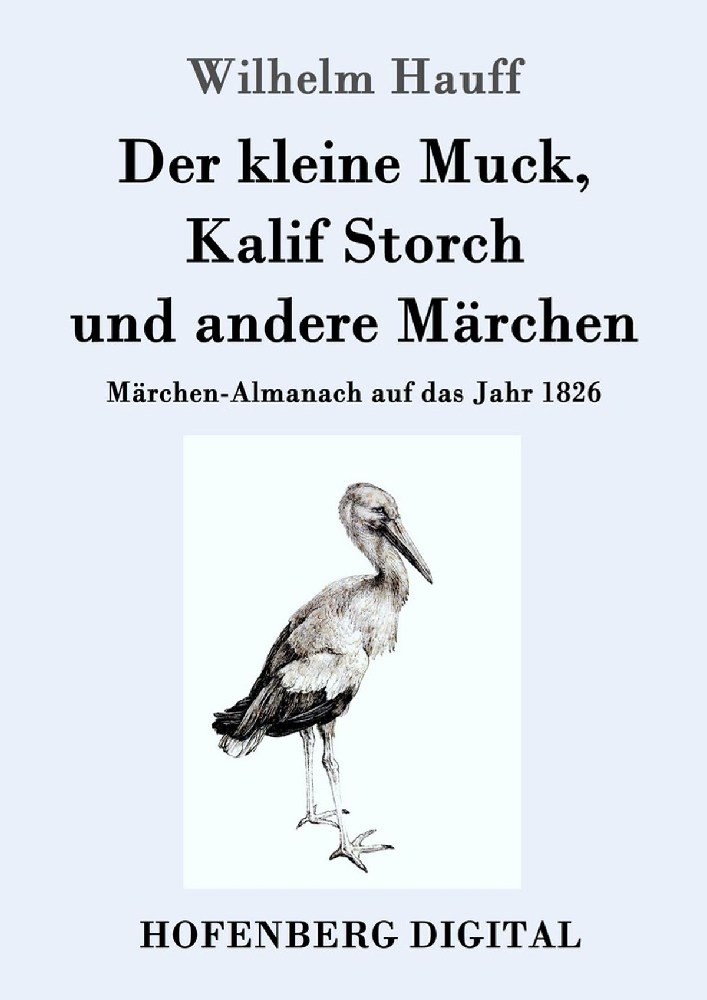

0
стр. з
0
сторінок

завантаження...

Вильгельм Гауф
Калиф-аист, маленький Мук, карлик Нос
Книгу подготовила Ирина Зверинская
Метод чтения Ильи Франка
Inhalt
Kalif Storch
(Калиф-аист).
01
Der Kalif Chasid zu Bagdad (халиф Хасид Багдадский) saß einmal an einem schönen Nachmittag (сидел однажды в прекрасное послеобеденное время; sitzen; der Nachmittag — время после полудня; der Mittag — полдень) behaglich auf seinem Sofa (уютно на своем диване; das Sofa); er hatte ein wenig geschlafen (он немного поспал; schlafen), denn es war ein heißer Tag (так как был жаркий день), und sah nun nach seinem Schläfchen recht heiter aus (и выглядел теперь после своего маленького сна вполне бодрым/веселым; heiter — веселый, ясный, светлый; aussehen — выглядеть; der Schlaf — сон; das Schläfchen —недолгий сон: «сончик»). Er rauchte aus einer langen Pfeife von Rosenholz (он курил длинную трубку из розового дерева: «из длинной трубки…»; das Holz — древесина), trank hier und da ein wenig Kaffee (попивал немного кофе; hier und da — кое-когда, порой: «здесь и тут/там»), den ihm ein Sklave einschenkte (который ему наливал раб), und strich sich allemal vergnügt den Bart (и каждый раз довольно поглаживал себе бороду; allemal — каждый раз; vergnügt — довольно: «удовлетворенно»), wenn es ihm geschmeckt hatte (когда ему было по вкусу; schmecken — быть вкусным). Kurz, man sah dem Kalifen an (короче говоря, по калифу было видно; jemandem etwas ansehen — замечать /видеть/ по кому-либо что-либо), dass es ihm recht wohl war (что ему было вполне хорошо).
Der Kalif Chasid zu Bagdad saß einmal an einem schönen Nachmittag behaglich auf seinem Sofa; er hatte ein wenig geschlafen, denn es war ein heißer Tag, und sah nun nach seinem Schläfchen recht heiter aus. Er rauchte aus einer langen Pfeife von Rosenholz, trank hier und da ein wenig Kaffee, den ihm ein Sklave einschenkte, und strich sich allemal vergnügt den Bart, wenn es ihm geschmeckt hatte. Kurz, man sah dem Kalifen an, dass es ihm recht wohl war.
Um diese Stunde konnte man gar gut mit ihm reden (можно было с ним совсем хорошо поговорить), weil er da immer recht mild und leutselig war (так как тогда /в это время/ он был вполне мягкий и снисходительно-дружеский/общительный), deswegen besuchte ihn auch sein Großwesir Mansor alle Tage um diese Zeit (поэтому его великий визирь Мансур посещал его ежедневно: «все дни» в это время). An diesem Nachmittage nun kam er auch (в этот день: «в это послеполуденное время» теперь пришел он тоже), sah aber sehr nachdenklich aus (выглядел однако очень задумчивым), ganz gegen seine Gewohnheit (совсем против своего обыкновения; die Gewohnheit — привычка; sich an etwas gewöhnen — привыкать к чему-либо). Der Kalif tat die Pfeife ein wenig aus dem Mund (калиф вынул немного трубку изо рта; tun — делать, совершать; класть) und sprach (и проговорил; sprechen): »Warum machst du ein so nachdenkliches Gesicht, Großwesir (почему ты делаешь такое задумчивое лицо, великий визирь)?«
Um diese Stunde konnte man gar gut mit ihm reden, weil er da immer recht mild und leutselig war, deswegen besuchte ihn auch sein Großwesir Mansor alle Tage um diese Zeit. An diesem Nachmittage nun kam er auch, sah aber sehr nachdenklich aus, ganz gegen seine Gewohnheit. Der Kalif tat die Pfeife ein wenig aus dem Mund und sprach: »Warum machst du ein so nachdenkliches Gesicht, Großwesir?«
Der Großwesir schlug seine Arme kreuzweis über die Brust (великий визирь сложил свои руки крестом на груди; die Arme übershlagen — положить руку на руку; der Arm — рука /от плеча до кисти/), verneigte sich vor seinem Herrn und antwortete (склонился пред своим господином и ответил): »Herr, ob ich ein nachdenkliches Gesicht mache, weiß ich nicht (господин, делаю ли я задумчивое лицо, я не знаю), aber da drunten am Schloss steht ein Krämer (но там внизу у замка стоит мелочной торговец; das Schloss; der Krämer — мелочной торговец; der Kram — хлам; скарб, пожитки), der hat so schöne Sachen, dass es mich ärgert, nicht viel überflüssiges Geld zu haben (у которого такие красивые вещи, что меня раздражает, что у меня есть не много = мало лишних денег; ärgern — сердить, раздражать; der Überfluss — изобилие; überfließen — переливаться /через край/; fließen — течь) «
Der Großwesir schlug seine Arme kreuzweis über die Brust, verneigte sich vor seinem Herrn und antwortete: »Herr, ob ich ein nachdenkliches Gesicht mache, weiß ich nicht, aber da drunten am Schloss steht ein Krämer, der hat so schöne Sachen, dass es mich ärgert, nicht viel überflüssiges Geld zu haben.«
Der Kalif, der seinem Großwesir schon lange gerne eine Freude gemacht hätte (калиф, который своему великому визирю уже давно охотно доставил бы радость), schickte seinen schwarzen Sklaven hinunter (послал своего черного раба вниз; hinunter — «туда-вниз»), um den Krämer heraufzuholen (чтобы торговца привести наверх; heraufholen — поднимать /доставлять, приводить/ наверх; herauf — «сюда-наверх»; holen — доставать; приносить, приводить). Bald kam der Sklave mit dem Krämer zurück (вскоре раб вернулся: «пришел обратно» с торговцем; zurückkommen — возвращаться). Dieser war ein kleiner, dicker Mann (тот: «этот» был маленький, толстый человек), schwarzbraun im Gesicht und in zerlumptem Anzug (очень смуглый лицом и в оборванном костюме; schwarzbraun — смуглый /о лице/: «черно-коричневый»; das Gesicht; der Lumpen — тряпка, лоскут, die Lumpen /множ. число/ — лохмотья, тряпье; der Anzug). Er trug einen Kasten, in welchem er allerhand Waren hatte (он нес ларь, в котором у него были всевозможные товары; tragen — носить; der Kasten — ящик), Perlen und Ringe, reichbeschlagene Pistolen, Becher und Kämme (жемчуга и кольца, богато обшитые пистолеты, чаши и гребни; die Perle — жемчужина; der Ring — кольцо; reich — богатый, beschlagen — обивать, обшивать, ковать; schlagen — бить; die Pistole; der Becher — кубок, чаша; der Kamm — гребень, расческа).
Der Kalif, der seinem Großwesir schon lange gerne eine Freude gemacht hätte, schickte seinen schwarzen Sklaven hinunter, um den Krämer heraufzuholen. Bald kam der Sklave mit dem Krämer zurück. Dieser war ein kleiner, dicker Mann, schwarzbraun im Gesicht und in zerlumptem Anzug. Er trug einen Kasten, in welchem er allerhand Waren hatte, Perlen und Ringe, reichbeschlagene Pistolen, Becher und Kämme.
Der Kalif und sein Wesir musterten alles durch (калиф и его визирь пересмотрели все /образцы/; das Muster — образец; mustern — осматривать; обозревать; разглядывать; durchmustern — просматривать, тщательно осматривать; durch — через; сквозь), und der Kalif kaufte endlich für sich und Mansor schöne Pistolen (и калиф купил в конце концов для себя и Мансура прекрасные пистолеты; die Pistóle), für die Frau des Wesirs aber einen Kamm (для жены же визиря — гребень). Als der Krämer seinen Kasten schon wieder zumachen wollte (когда торговец захотел уже снова закрыть свой ларь), sah der Kalif eine kleine Schublade und fragte (калиф увидел маленький выдвижной ящик и спросил; die Schublade — выдвижной/ ящик; schieben — двигать, толкать; die Lade — ларь, сундук; /выдвижной/ ящик), ob da auch noch Waren seien (есть ли там также еще товары; die Ware — товар).
Der Kalif und sein Wesir musterten alles durch, und der Kalif kaufte endlich für sich und Mansor schöne Pistolen, für die Frau des Wesirs aber einen Kamm. Als der Krämer seinen Kasten schon wieder zumachen wollte, sah der Kalif eine kleine Schublade und fragte, ob da auch noch Waren seien.
Der Krämer zog die Schublade heraus (торговец выдвинул ящик; herausziehen — выдвигать; heraus — наружу: «сюда-из»; ziehen — тянуть, тащить) und zeigte darin eine Dose mit schwärzlichem Pulver und ein Papier mit sonderbarer Schrift (и показал там внутри коробочку с черноватым порошком и клочок бумаги: «бумагу» со странными буквами: «странной письменностью/надписью»; zeigen — показывать; die Dose — коробка; жестянка; /жестяная/ консервная банка; табакерка; das Pulver — порошок; порох), die weder der Kalif noch Mansor lesen konnte (которую ни калиф, ни Мансур не могли прочитать; weder ... noch — ни … ни). »Ich bekam einmal diese zwei Stücke von einem Kaufmanne, der sie in Mekka auf der Straße fand (я получил однажды эти две вещи от одного торговца, который нашел их на улице в Мекке; das Stück — штука; bekommen — получать; finden — находить) «, sagte der Krämer, »Ich weiß nicht, was sie enthalten (я не знаю, что они содержат); euch stehen sie um geringen Preis zu Dienst (они к вашим услугам за ничтожную цену; jemandem zu Dienst stehen — быть к чьим-либо услугам: «стоять кому-либо к службе»; der Dienst — служба; dienen — служить; gering — малый, ограниченный, незначительный), ich kann doch nichts damit anfangen (я же не могу ничего с этим начать = мне они ни к чему).«
Der Krämer zog die Schublade heraus und zeigte darin eine Dose mit schwärzlichem Pulver und ein Papier mit sonderbarer Schrift, die weder der Kalif noch Mansor lesen konnte. »Ich bekam einmal diese zwei Stücke von einem Kaufmanne, der sie in Mekka auf der Straße fand«, sagte der Krämer, »Ich weiß nicht, was sie enthalten; euch stehen sie um geringen Preis zu Dienst, ich kann doch nichts damit anfangen.«
Der Kalif, der in seiner Bibliothek gerne alte Manuskripte hatte (который в своей библиотеке охотно имел старые манускрипты; die Bibliothék; das Manuskrípt), wenn er sie auch nicht lesen konnte (даже если не мог их читать), kaufte Schrift und Dose und entließ den Krämer (купил сочинение и коробочку и отпустил торговца; entlassen — отпускать; lassen — пускать). Der Kalif aber dachte (калиф однако подумал; denken), er möchte gerne wissen, was die Schrift enthalte (/что/ он хотел бы охотно знать, что содержит сочинение; enthalten — содержать; halten — держать), und, fragte den Wesir, ob er keinen kenne, der es entziffern könnte (и спросил визиря, не знает ли он никого, кто его смог бы разобрать; entziffern — разобрать, расшифровать; die Ziffer — цифра; шифр).
Der Kalif, der in seiner Bibliothek gerne alte Manuskripte hatte, wenn er sie auch nicht lesen konnte, kaufte Schrift und Dose und entließ den Krämer. Der Kalif aber dachte, er möchte gerne wissen, was die Schrift enthalte, und, fragte den Wesir, ob er keinen kenne, der es entziffern könnte.
»Gnädigster Herr und Gebieter (милостивейший господин и повелитель; die Gnade — милость; gnädig — милостивый; gebieten — приказывать, повелевать) «, antwortete dieser (ответил тот), »an der großen Moschee wohnt ein Mann, er heißt Selim, der Gelehrte (при большой мечети живет один человек, его зовут Селим, ученый; die Moschée), der versteht alle Sprachen (он понимает все языки; die Sprache), lass ihn kommen (вели ему прийти: «побуди его прийти»; lassen — пускать; позволять; побуждать), vielleicht kennt er diese geheimnisvollen Züge (возможно, он знает эти таинственные черты = шрифт; geheimnisvoll — таинственный, полный тайны; das Geheimnis — тайна; geheim — тайный; der Zug — черта; ziehen — тянуть; проводить /черту/).«
»Gnädigster Herr und Gebieter«, antwortete dieser, »an der großen Moschee wohnt ein Mann, er heißt Selim, der Gelehrte, der versteht alle Sprachen, lass ihn kommen, vielleicht kennt er diese geheimnisvollen Züge.«
Der Gelehrte Selim war bald herbeigeholt (ученый Селим был вскоре приведен; herbeiholen — приводить; вызывать; herbei — сюда). »Selim«, sprach zu ihm der Kalif (сказал ему калиф; sprechen — говорить), »Selim, man sagt, du seiest sehr gelehrt (говорят, /что/ ты очень образованный); guck einmal ein wenig in diese Schrift (взгляни-ка: «взгляни один раз» немного на эту запись), ob du sie lesen kannst (можешь ли ты ее прочитать); kannst du sie lesen, so bekommst du ein neues Festkleid von mir (если можешь прочитать, тогда получишь новое праздничное платье от меня; das Fest — праздник), kannst du es nicht, so bekommst du zwölf Backenstreiche (если ты этого не можешь, то получишь двенадцать пощечин; der Backenstreich; der Backen — щека, der Streich — удар) und fünfundzwanzig auf die Fußsohlen (и двадцать пять /ударов/ по подошвам ног; die Fußsohle; der Fuß — нога /ступня/; die Sohle — подошва, след), weil man dich dann umsonst Selim, den Gelehrten, nennt (потому что тебя тогда напрасно называют Селим-ученым).«
Der Gelehrte Selim war bald herbeigeholt. »Selim«, sprach zu ihm der Kalif, »Selim, man sagt, du seiest sehr gelehrt; guck einmal ein wenig in diese Schrift, ob du sie lesen kannst; kannst du sie lesen, so bekommst du ein neues Festkleid von mir, kannst du es nicht, so bekommst du zwölf Backenstreiche und fünfundzwanzig auf die Fußsohlen, weil man dich dann umsonst Selim, den Gelehrten, nennt.«
Selim verneigte sich und sprach (Селим поклонился и проговорил): »Dein Wille geschehe, o Herr! (твоя воля да случится, о господин)« Lange betrachtete er die Schrift (долго рассматривал он запись), plötzlich aber rief er aus (но вдруг воскликнул; ausrufen — восклицать; rufen — звать; кричать): »Das ist Lateinisch, o Herr (это по-латински, о господин), oder ich lass mich hängen (я позволю себя повесить).« »Sag, was drinsteht«, befahl der Kalif (скажи, что там написано: «стоит внутри», — приказал калиф; drin = darin — там внутри; befehlen), »wenn es Lateinisch ist (если это по-латински).«
Selim verneigte sich und sprach: »Dein Wille geschehe, o Herr!« Lange betrachtete er die Schrift, plötzlich aber rief er aus: »Das ist Lateinisch, o Herr, oder ich lass mich hängen.« »Sag, was drinsteht«, befahl der Kalif, »wenn es Lateinisch ist.«
Selim fing an zu übersetzen (начал переводить; anfangen — начинать; fangen — ловить, поймать): »Mensch, der du dieses findest (человек, ты, который это найдешь), preise Allah für seine Gnade (восхваляй Аллаха за его милость). Wer von dem Pulver in dieser Dose schnupft (понюхает порошка из этой коробочки; das Pulver — порошок) und dazu spricht: mutabor (и при этом: «к этому» скажет мутабор /лат.: изменюсь, буду превращен; mutare — менять, изменяться/), der kann sich in jedes Tier verwandeln und versteht auch die Sprache der Tiere (тот сможет превращаться в любое животное и также будет понимать язык животных; sich verwandeln — превращаться).
Selim fing an zu übersetzen: »Mensch, der du dieses findest, preise Allah für seine Gnade. Wer von dem Pulver in dieser Dose schnupft und dazu spricht: mutabor, der kann sich in jedes Tier verwandeln und versteht auch die Sprache der Tiere.
Will er wieder in seine menschliche Gestalt zurückkehren (пожелай он снова в свой человеческий вид вернуться; die Gestalt — форма, образ, облик), so neige er sich dreimal gen den Osten (пусть тогда поклонится он три раза на восток; sich neigen — склоняться, кланяться; gen = gegen — по направлению) und spreche jenes Wort (и скажет то слово; dieses — это; jenes — то); aber hüte dich (но остерегайся; sich hüten — остерегаться; die Hut — охрана, защита), wenn du verwandelt bist (когда ты будешь превращен), dass du nicht lachest (чтобы не засмеяться), sonst verschwindet das Zauberwort gänzlich aus deinem Gedächtnis (иначе исчезнет волшебное слово совершенно из твоей памяти; der Zauber — колдовство, волшебство; das Gedächtnis — память), und du bleibst ein Tier (и ты останешься животным).«
Will er wieder in seine menschliche Gestalt zurückkehren, so neige er sich dreimal gen Osten und spreche jenes Wort; aber hüte dich, wenn du verwandelt bist, dass du nicht lachest, sonst verschwindet das Zauberwort gänzlich aus deinem Gedächtnis, und du bleibst ein Tier.«
Als Selim, der Gelehrte, also gelesen hatte (когда Селим-ученый таким образом прочитал; lesen), war der Kalif über die Maßen vergnügt (калиф был чрезмерно доволен; das Maß, die Maße — мера). Er ließ den Gelehrten schwören (он велел ученому: «побудил ученого» поклясться), niemandem etwas von dem Geheimnis zu sagen (никому что-либо = ничего о тайне не говорить; das Geheimnis), schenkte ihm ein schönes Kleid (подарил ему прекрасное платье/одеяние) und entließ ihn (и отпустил его; entlassen).
Als Selim, der Gelehrte, also gelesen hatte, war der Kalif über die Maßen vergnügt. Er ließ den Gelehrten schwören, niemandem etwas von dem Geheimnis zu sagen, schenkte ihm ein schönes Kleid und entließ ihn.
Zu seinem Großwesir aber sagte er (своему же великому везирю он сказал): »Das heiß' ich gut einkaufen, Mansor (это я называю хорошо = удачно купить, Мансур)! Wie freue ich mich, bis ich ein Tier bin (как я радуюсь, пока буду зверем = предчувствуя превращение в зверя). Morgen früh kommst du zu mir (завтра утром ты придешь ко мне); wir gehen dann miteinander aufs Feld (мы пойдем потом вместе /друг с другом/ в поле: «на поле»), schnupfen etwas Weniges aus meiner Dose und belauschen dann (понюхаем самую малость из моей коробочки и подслушаем потом), was in der Luft und im Wasser, im Wald und Feld gesprochen wird (что в воздухе и в воде, в лесу и поле говорится; das Wasser; der Wald)!«
Zu seinem Großwesir aber sagte er: »Das heiß' ich gut einkaufen, Mansor! Wie freue ich mich, bis ich ein Tier bin. Morgen früh kommst du zu mir; wir gehen dann miteinander aufs Feld, schnupfen etwas Weniges aus meiner Dose und belauschen dann, was in der Luft und im Wasser, im Wald und Feld gesprochen wird!«
02
Kaum hatte am anderen Morgen der Kalif Chasid gefrühstückt und sich angekleidet (едва на следующее утро калиф Хасид позавтракал и оделся; sich ankleiden — одеваться), als schon der Großwesir erschien (как = когда уже явился великий визирь; erscheinen — /по/являться), ihn, wie er befohlen, auf dem Spaziergang zu begleiten (/чтобы/ его /калифа/, как он приказал, на прогулке сопровождать; befehlen — приказывать; der Spaziergang — прогулка; spazieren gehen — ходить гулять). Der Kalif steckte die Dose mit dem Zauberpulver in den Gürtel (калиф вставил/засунул коробочку с волшебным порошком за пояс: «в пояс»), und nachdem er seinem Gefolge befohlen, zurückzubleiben (и после того, как он приказал своей свите остаться; das Gefolge — сопровождающие, свита; jemandem folgen — следовать за кем-либо: «кому-либо»), machte er sich mit dem Großwesir ganz allein auf den Weg (отправился он в путь совсем один со своим великим визирем; sich auf den Weg machen — отправиться в путь).
Kaum hatte am anderen Morgen der Kalif Chasid gefrühstückt und sich angekleidet, als schon der Großwesir erschien, ihn, wie er befohlen, auf dem Spaziergang zu begleiten. Der Kalif steckte die Dose mit dem Zauberpulver in den Gürtel, und nachdem er seinem Gefolge befohlen, zurückzubleiben, machte er sich mit dem Großwesir ganz allein auf den Weg.
Sie gingen zuerst durch die weiten Gärten des Kalifen (они шли сначала через обширные сады калифа; gehen — идти), spähten aber vergebens nach etwas Lebendigem (высматривали, но напрасно, что-нибудь живое; das Lebendige — живое; lebendig — живой; leben — жить), um ihr Kunststück zu probieren (чтобы попробовать их фокус; das Kunststück — фокус; die Kunst — умение; искусство; das Stück — штука). Der Wesir schlug endlich vor, weiter hinaus an einen Teich zu gehen (визирь предложил наконец пройти еще дальше, к одному пруду; vorschlagen — предлагать; schlagen — бить; weiter hinaus — дальше наружу = дальше на местности; hinaus — наружу: «туда-из»), wo er schon oft viele Tiere, namentlich Störche, gesehen habe (где он уже часто видел много животных, а именно аистов; sehen; der Storch), die durch ihr gravitätisches Wesen und ihr Geklapper immer seine Aufmerksamkeit erregt hatten (которые своим важным поведением и щелканьем всегда привлекали: «возбуждали» его внимание; durch — через; das Wesen — существо; нрав, характер; поведение; klappern — громыхать; стучать; щелкать /зубами, клювом/; erregen — возбуждать; regen — шевелить).
Sie gingen zuerst durch die weiten Gärten des Kalifen, spähten aber vergebens nach etwas Lebendigem, um ihr Kunststück zu probieren. Der Wesir schlug endlich vor, weiter hinaus an einen Teich zu gehen, wo er schon oft viele Tiere, namentlich Störche, gesehen habe, die durch ihr gravitätisches Wesen und ihr Geklapper immer seine Aufmerksamkeit erregt hatten.
Der Kalif billigte den Vorschlag seines Wesirs (калиф одобрил предложение своего визиря) und ging mit ihm dem Teich zu (и направился с ним к пруду; zugehen — идти, направляться /к чему-либо/; der Teich). Als sie dort angekommen waren (когда они туда пришли), sahen sie einen Storch ernsthaft auf und ab gehen (они увидели аиста серьезно взад и вперед ходить = как взад и вперед с серьезным видом расхаживал аист; auf und ab — ввех и вниз; взад и вперед), Frösche suchend (разыскивая лягушек; der Frosch; suchen — искать) und hier und da etwas vor sich hinklappernd (и от случая к случаю немного пощелкивающего /клювом/ себе под нос; vor sich hin — себе под нос: «перед собой»). Zugleich sahen sie auch weit oben in der Luft einen anderen Storch dieser Gegend zuschweben (одновременно они увидели далеко наверху в воздухе другого аиста, парящего по направлению к этой местности; die Gegend — местность, край; schweben — парить, висеть в воздухе).
Der Kalif billigte den Vorschlag seines Wesirs und ging mit ihm dem Teich zu. Als sie dort angekommen waren, sahen sie einen Storch ernsthaft auf und ab gehen, Frösche suchend und hier und da etwas vor sich hinklappernd. Zugleich sahen sie auch weit oben in der Luft einen anderen Storch dieser Gegend zuschweben.
»Ich wette meinen Bart (держу пари: «ставлю под заклад мою бороду»; wetten — держать пари; биться об заклад), gnädigster Herr (милостивейший господин; die Gnade — милость; gnädig — милостивый) «, sagte er Großwesir (сказал великий визирь), »wenn nicht diese zwei Langfüßler ein schönes Gespräch miteinander führen werden (если эти два длинноногих не собираются вести друг с другом хороший разговор; lang — длинный, der Fuß — нога). Wie wäre es, wenn wir Störche würden (как бы это было = как насчет того, если бы мы стали аистами; war — было; wäre — было бы; wurden — стали; würden — стали бы)?«
»Ich wette meinen Bart, gnädigster Herr«, sagte er Großwesir, »wenn nicht diese zwei Langfüßler ein schönes Gespräch miteinander führen werden. Wie wäre es, wenn wir Störche würden?«
»Wohl gesprochen (хорошо сказано)!« antwortete der Kalif (ответил калиф). »Aber vorher wollen wir noch einmal betrachten (но прежде давай-ка еще раз рассмотрим: «хотим мы рассмотреть»; betrachten — созерцать), wie man wieder Mensch wird (как снова стать: «становишься» человеком). — Richtig (правильно)! Dreimal gen Osten geneigt und mutabor gesagt, so bin ich wieder Kalif und du Wesir (/стоит/ трижды поклониться в сторону востока и сказать mutabor, как я снова буду калифом, а ты — визирем). Aber nur um Himmels willen nicht gelacht, sonst sind wir verloren (но, ради Бога, не смеяться, иначе мы пропали; um Himmels willen! — ради Бога!)!«
»Wohl gesprochen!« antwortete der Kalif. »Aber vorher wollen wir noch einmal betrachten, wie man wieder Mensch wird. — Richtig! Dreimal gen Osten geneigt und mutabor gesagt, so bin ich wieder Kalif und du Wesir. Aber nur um Himmels willen nicht gelacht, sonst sind wir verloren!«
Während der Kalif also sprach (в то время как калиф так говорил), sah er den anderen Storch über ihrem Haupte schweben und langsam sich zur Erde lassen (он увидел, как другой = второй аист пролетел над их головами: «над их головой» и медленно опустился на землю; das Haupt, die Häupter — голова, глава). Schnell zog er die Dose aus dem Gürtel (быстро вытащил он коробочку из пояса); ausziehen — вынимать, вытаскивать; ziehen — тянуть), nahm eine gute Prise (взял хорошую = немаленькую понюшку; nehmen — брать), bot sie dem Großwesir dar, der gleichfalls schnupfte, und beide riefen: mutabor! (протянул ее /коробочку/ великому визирю, который тоже понюхал, и оба крикнули: mutabor!; darbieten — предлагать, протягивать; bieten — предлагать; rufen).
Während der Kalif also sprach, sah er den anderen Storch über ihrem Haupte schweben und langsam sich zur Erde lassen. Schnell zog er die Dose aus dem Gürtel, nahm eine gute Prise, bot sie dem Großwesir dar, der gleichfalls schnupfte, und beide riefen: mutabor!
Da schrumpften ihre Beine ein und wurden dünn und rot (тут их ноги стянулись и стали тонкими и красными; einschrumpfen — сморщиваться, уменьшаться в размере; das Bein), die schönen gelben Pantoffeln des Kalifen und seines Begleiters (красивые желтые туфли калифа и его спутника/сопровождающего; der Pantóffel — туфля; башмак; begleiten — сопровождать) wurden unförmliche Storchfüße (стали бесформенными аистиными лапами), die Arme wurden zu Flügeln (руки превратились в крылья; zu etwas werden — становиться чем-либо, превращаться во что-либо; der Arm; der Flügel), der Hals fuhr aus den Achseln (шея «выехала» из плеч = удлинилась; die Achsel — плечо) und ward eine Elle lang (и стала длиной в локоть; ward = wurde), der Bart war verschwunden (борода исчезла; verschwinden — пропадать, исчезать), und den Körper bedeckten weiche Federn (а тело покрыли мягкие перья; die Feder — перо).
Da schrumpften ihre Beine ein und wurden dünn und rot, die schönen gelben Pantoffeln des Kalifen und seines Begleiters wurden unförmliche Storchfüße, die Arme wurden zu Flügeln, der Hals fuhr aus den Achseln und ward eine Elle lang, der Bart war verschwunden, und den Körper bedeckten weiche Federn.
»Ihr habt einen hübschen Schnabel, Herr Großwesir (у вас прелестный клюв, господин великий визирь; hübsch — красивый, прелестный, милый) «, sprach nach langem Erstaunen der Kalif (проговорил калиф после долгого удивления; erstaunen — удивлять/ся/; изумлять/ся/; das Erstaunen — удивление). »Beim Bart des Propheten (/клянусь/ бородой пророка; der Prophét), so etwas habe ich in meinem Leben nicht gesehen (ничего подобного я в своей жизни не видел; so etwas — нечто подобное: «такое нечто»).« »Danke untertänigst (благодарю покорнейше; der Untertan — подданный) «, erwiderte der Großwesir, indem er sich bückte (отвечал великий визирь, сгибаясь в поклоне; erwidern — отвечать /репликой на реплику/; indem — тем, что; в то время как /указывает на способ совершения действия либо на одновременное действие/; sich bücken — нагибаться; склоняться), »aber wenn ich es wagen darf (но, если позволите/если простите мою дерзость: «если я могу отважиться»), möchte ich behaupten (я хотел бы заявить), Eure Hoheit sehen als Storch beinahe noch hübscher aus denn als Kalif (Ваше высочество как аист = в качестве аиста выглядит почти еще красивее = чуть ли не красивее, чем в качестве калифа). Aber kommt, wenn es Euch gefällig ist (но идите /со мной/, если это Вам угодно), dass wir unsere Kameraden dort belauschen (чтобы подслушать там наших товарищей; der Kamerád) und erfahren (и испытать: «узнать»), ob wir wirklich Storchisch können (можем ли мы действительно понимать язык аистов: «по-аистовски»).«
»Ihr habt einen hübschen Schnabel, Herr Großwesir«, sprach nach langem Erstaunen der Kalif. »Beim Bart des Propheten, so etwas habe ich in meinem Leben nicht gesehen.« »Danke untertänigst«, erwiderte der Großwesir, indem er sich bückte, »aber wenn ich es wagen darf, möchte ich behaupten, Eure Hoheit sehen als Storch beinahe noch hübscher aus denn als Kalif. Aber kommt, wenn es Euch gefällig ist, dass wir unsere Kameraden dort belauschen und erfahren, ob wir wirklich Storchisch können.«
Indem war der andere Storch auf der Erde angekommen (тем временем второй аист сел: «прибыл» на землю); er putzte sich mit dem Schnabel seine Füße (он почистил себе клювом свои ноги; der Schnabel), legte seine Federn zurecht (сложил свои перья соответствующим образом/привел в порядок свои перья; zurecht — в надлежащем порядке, по правилам, как следует; legen — класть; zurechtlegen — уложить, положить наготове; приготовлять; приводить в порядок; прибирать) und ging auf den ersten Storch zu (и подошел к первому аисту; auf jemanden zugehen — подходить к кому-либо). Die beiden neuen Störche aber beeilten sich, in ihre Nähe zu kommen (а оба новых аиста поторопились подойти к ним поближе: «прийти в их близость»; die Nähe — близость), und vernahmen zu ihrem Erstaunen folgendes Gespräch (и услышали, к своему удивлению, следующий разговор; vernehmen — слышать):
Indem war der andere Storch auf der Erde angekommen; er putzte sich mit dem Schnabel seine Füße, legte seine Federn zurecht und ging auf den ersten Storch zu. Die beiden neuen Störche aber beeilten sich, in ihre Nähe zu kommen, und vernahmen zu ihrem Erstaunen folgendes Gespräch:
»Guten Morgen, Frau Langbein, so früh schon auf der Wiese (доброе утро, госпожа Длиннонога, так рано уже на лугу)?«
»Schönen Dank, liebe Klapperschnabel (большое спасибо, милая Трещотка: «Щелкающий клюв»)! Ich habe mir nur ein kleines Frühstück geholt (я только/всего лишь достала себе маленький завтрак). Ist Euch vielleicht ein Viertelchen Eidechs gefällig oder ein Froschschenkelein (вам, может быть, четвертушку ящерицы или лягушачью ножку; der Frosch — лягушка, das Schenklein — бедрышко, ножка; der Schenkel — бедро)?«
»Danke gehorsamst (благодарю покорнейше; gehorsam — послушный); habe heute gar keinen Appetit (сегодня у меня нет никакого аппетита). Ich komme auch wegen etwas ganz anderem auf die Wiese (я к тому же ради кое-чего совсем другого пришла на луг). Ich soll heute vor den Gästen meines Vaters tanzen (я должна сегодня танцевать перед гостями моего отца; der Gast, die Gäste), und da will ich mich im stillen ein wenig üben (и тут я хочу тайком немного поупражняться; still — тихо; im stillen — тайком; da — тут; в этой ситуации).«
»Guten Morgen, Frau Langbein, so früh schon auf der Wiese?«
»Schönen Dank, liebe Klapperschnabel! Ich habe mir nur ein kleines Frühstück geholt. Ist Euch vielleicht ein Viertelchen Eidechs gefällig oder ein Froschschenkelein?«
»Danke gehorsamst; habe heute gar keinen Appetit. Ich komme auch wegen etwas ganz anderem auf die Wiese. Ich soll heute vor den Gästen meines Vaters tanzen, und da will ich mich im stillen ein wenig üben.«
Zugleich schritt die junge Störchin in wunderlichen Bewegungen durch das Feld (одновременно юная аистиха шагала = выступала в удивительных движениях по полю; schreiten — шагать, ступать; die Bewegung — движение; sich bewegen — двигаться). Der Kalif und Mansor sahen ihr verwundert nach (калиф и Мансур смотрели изумленно ей вслед; verwundern — изумлять, удивлять; das Wunder — чудо; jemandem nachsehen — смотреть кому-либо вслед); als sie aber in malerischer Stellung auf einem Fuß stand (но когда она в живописной позе стала на одной ноге; stehen — стоять) und mit den Flügeln anmutig dazu wedelte (к тому же обмахивалась грациозно крыльями; wedeln — обмахиваться; der Wedel — опахало), da konnten sich die beiden nicht mehr halten (тут оба не смогли больше сдержаться; halten — держать); ein unaufhaltsames Gelächter brach aus ihren Schnäbeln hervor (и безудержный смех вырвался наружу из их клювов; brechen — ломать; hervorbrechen — вырываться; hervor — наружу: «сюда-перед»; der Schnabel, die Schnäbel), von dem sie sich erst nach langer Zeit erholten (от которого они только через долгое время оправились /пришли в себя/; sich erholen — приходить в себя, оправляться; отдыхать).
Zugleich schritt die junge Störchin in wunderlichen Bewegungen durch das Feld. Der Kalif und Mansor sahen ihr verwundert nach; als sie aber in malerischer Stellung auf einem Fuß stand und mit den Flügeln anmutig dazu wedelte, da konnten sich die beiden nicht mehr halten; ein unaufhaltsames Gelächter brach aus ihren Schnäbeln hervor, von dem sie sich erst nach langer Zeit erholten.
Der Kalif fasste sich zuerst wieder (калиф первый снова успокоился; fassen — хватать, схватить; sich fassen — успокоиться, собраться с мыслями, взять себя в руки): »Das war einmal ein Spaß (ну и было же это шутка/веселье; der Spaß) «, rief er (воскликнул он; rufen — кричать), »der nicht mit Gold zu bezahlen ist (которое золотом не оплатить; das Gold); schade (жаль), dass die Tiere durch unser Gelächter sich haben verscheuchen lassen (что животные дали себя спугнуть; verscheuchen — спугнуть), sonst hätten sie gewiss auch noch gesungen (иначе они непременно еще и запели бы; singen — петь)!«
Der Kalif fasste sich zuerst wieder: »Das war einmal ein Spaß«, rief er, »der nicht mit Gold zu bezahlen ist; schade, dass die Tiere durch unser Gelächter sich haben verscheuchen lassen, sonst hätten sie gewiss auch noch gesungen!«
Aber jetzt fiel es dem Großwesir ein (но тут: «теперь» великому визирю пришло на ум: einfallen — прийти на ум: «запасть внутрь»; fallen — падать), dass das Lachen während der Verwandlung verboten war (что смех во время превращения был запрещен; verbieten — запрещать; verwandeln — превращать). Er teilte seine Angst deswegen dem Kalifen mit (он сообщил поэтому о своем страхе калифу; mitteilen — сообщать). »Potz Mekka und Medina (черт возьми, Мекка и Медина; potz potz/potztausend Blitz!, potz/potztausend Wetter! — черт возьми!)! Das wäre ein schlechter Spaß, wenn ich ein Storch bleiben müsste (это была бы плохая шутка, если я должен был бы остаться аистом)! Besinne dich doch auf das dumme Wort (припомни-ка это дурацкое слово; sich auf etwas besinnen; der Sinn — смысл; понимание), ich bring' es nicht heraus (я это не произнесу; herausbringen).«
»Dreimal gen Osten müssen wir uns bücken und dazu sprechen (трижды в сторону востока должны мы поклониться и при этом: «к этому» проговорить): Mu — Mu — Mu —«
Aber jetzt fiel es dem Großwesir ein, dass das Lachen während der Verwandlung verboten war. Er teilte seine Angst deswegen dem Kalifen mit. »Potz Mekka und Medina! Das wäre ein schlechter Spaß, wenn ich ein Storch bleiben müsste! Besinne dich doch auf das dumme Wort, ich bring' es nicht heraus.«
»Dreimal gen Osten müssen wir uns bücken und dazu sprechen: Mu — Mu — Mu —«
Sie stellten sich gegen Osten und bückten sich in einem fort (они встали лицом к востоку и непрерывно кланялись; in einem fort — непрерывно, без устали: «в одном дальше»), dass ihre Schnäbel beinahe die Erde berührten (так что их клювы почти касались земли); aber, o Jammer (но, о горе: der Jammer — горе, несчастье)! Das Zauberwort war ihnen entfallen (это волшебное слово было ими забыто/выскочило у них из головы; jemandem entfallen — выпадать у кого-либо; выскальзывать /из рук/; выпасть из памяти), und so oft sich auch der Kalif bückte, so sehnlich auch sein Wesir Mu — Mu dazu rief, jede Erinnerung daran war verschwunden (и как часто ни кланялся калиф, как страстно к тому же визирь ни кричал му — му, всякое воспоминание о нем исчезло; sich nach etwas sehnen — страстно желать чего-либо, стремиться к чему-либо; sich an etwas erinnern — вспоминать что-либо), und der arme Chasid und sein Wesir waren und blieben Störche (и бедный Хасид и его визирь были и оставались аистами: bleiben).
Sie stellten sich gegen Osten und bückten sich in einem fort, dass ihre Schnäbel beinahe die Erde berührten; aber, o Jammer! Das Zauberwort war ihnen entfallen, und so oft sich auch der Kalif bückte, so sehnlich auch sein Wesir mu — mu dazu rief, jede Erinnerung daran war verschwunden, und der arme Chasid und sein Wesir waren und blieben Störche.
03
Traurig wandelten die Verzauberten durch die Felder (печально брели заколдованные через поля; der/die/ Verzauberte — заколдованный/ая/; verzaubern — заколдовать; zaubern — колдовать; der Zauber — колдовство; wandeln — ходить, бродить), sie wussten gar nicht (они вовсе не знали; wissen — знать), was sie in ihrem Elend anfangen sollten (с чего они должны начать = за что взяться/что делать в своей беде; das Elend — беда; anfangen — начинать; fangen — ловить, поймать). Aus ihrer Storchenhaut konnten sie nicht heraus (выйти из своей аистиной кожи = освободиться от... они не смогли; herauskönnen — быть в состоянии выйти/выбраться; heraus — наружу: «сюда-из»; die Haut — кожа), in die Stadt zurück konnten sie auch nicht, um sich zu erkennen zu geben (вернуться в город, чтобы их узнали, они тоже не могли; zurück — назад; sich zu erkennen geben — дать узнать себя; erkennen — узнавать, опознавать; geben — давать); denn wer hätte einem Storch geglaubt, dass er der Kalif sei (потому что кто поверил бы аисту, что он — калиф; glauben — верить; er ist — он есть; er sei — /что/ он есть /для передачи косвенной речи/), und wenn man es auch geglaubt hätte (и если даже поверил бы), würden die Einwohner von Bagdad einen Storch zum Kalif gewollt haben (захотели бы жители Багдада аиста в калифы; der Einwohner — житель; wohnen — жить)?
Traurig wandelten die Verzauberten durch die Felder, sie wussten gar nicht, was sie in ihrem Elend anfangen sollten. Aus ihrer Storchenhaut konnten sie nicht heraus, in die Stadt zurück konnten sie auch nicht, um sich zu erkennen zu geben; denn wer hätte einem Storch geglaubt, dass er der Kalif sei, und wenn man es auch geglaubt hätte, würden die Einwohner von Bagdad einen Storch zum Kalif gewollt haben?
So schlichen sie mehrere Tage umher und ernährten sich kümmerlich von Feldfrüchten (так шли, прячась: «крались» они несколько дней и питались скудно полевыми плодами; schleichen-schlich-geschlichen — красться; umher — вокруг; sich ernähren — питаться; der Kummer — горе; заботы; die Frucht, die Früchte — плод; фрукт), die sie aber wegen ihrer langen Schnäbel nicht gut verspeisen konnten (которые они из-за своих длинных клювов не могли хорошо есть = которые им было было неудобно есть; verspeisen — съедать; speisen — есть, кушать; питаться; die Speise — пища). Auf Eidechsen und Frösche hatten sie übrigens keinen Appetit (на ящериц и лягушек у них, впрочем, не было аппетита; die Eidechse; der Frosch), denn sie befürchteten, mit solchen Leckerbissen sich den Magen zu verderben (так как они опасались испортить себе желудки такими лакомствами; befürchten — опасаться; die Furcht — страх; der Leckerbissen — лакомый кусок, лакомство, изысканное блюдо: «лакомый кусок»; verderben — испортить). Ihr einziges Vergnügen in dieser traurigen Lage war, dass sie fliegen konnten (их единственным удовольствием в этом печальном положении было то, что они могли летать; das Vergnügen — удовольствие; vergnügen — развлекать, забавлять; fliegen — летать), und so flogen sie oft auf die Dächer von Bagdad (поэтому они часто прилетали на крыши Багдада; das Dach), um zu sehen, was darin vorging (чтобы посмотреть, что там происходило; darin — внутри этого, там внутри, в нем; vorgehen — происходить).
So schlichen sie mehrere Tage umher und ernährten sich kümmerlich von Feldfrüchten, die sie aber wegen ihrer langen Schnäbel nicht gut verspeisen konnten. Auf Eidechsen und Frösche hatten sie übrigens keinen Appetit, denn sie befürchteten, mit solchen Leckerbissen sich den Magen zu verderben. Ihr einziges Vergnügen in dieser traurigen Lage war, dass sie fliegen konnten, und so flogen sie oft auf die Dächer von Bagdad, um zu sehen, was darin vorging.
In den ersten Tagen bemerkten sie große Unruhe und Trauer in den Straßen (в первые дни замечали они большое беспокойство и печаль; die Unruhe; die Ruhe — спокойствие, покой; die Trauer — печаль, скорбь); aber ungefähr am vierten Tag nach ihrer Verzauberung saßen sie auf dem Palast des Kalifen (но примерно на четвертый день после их превращения сидели они на дворце калифа; ungefähr — примерно; die Verzauberung — колдовство; sitzen — сидеть), da sahen sie unten in der Straße einen prächtigen Aufzug (тут увидели внизу на улице роскошное шествие; sehen — видеть); Trommeln und Pfeifen ertönten (звучали барабаны и дудки; ertönen — раздаваться, звучать; der Ton, die Töne — звук; die Trommel; die Pfeife), ein Mann in einem goldbestickten Scharlachmantel saß auf einem geschmückten Pferd (мужчина/человек в вышитом золотом пурпурном халате сидел на разукрашенном коне; scharlach — ярко-красный, пурпурный, der Mantel — пальто; плащ; schmücken — украшать, наряжать; das Pferd — лошадь), umgeben von glänzenden Dienern (окруженный блистательными слугами; glänzen — блестеть, блистать; der Glanz — блеск, сияние; der Diener — слуга; dienen — служить), halb Bagdad sprang ihm nach (пол-Багдада бежало вприпрыжку вслед за ним; jemandem nachspringen — прыгать вслед за кем-либо; springen — прыгать), und alle schrien: »Heil Mizra, dem Herrscher von Bagdad! (и все кричали: Да здравствует Мицра, властелин Багдада; das Heil — благо, благополучие; спасение; счастье; /приветствие, пожелание/ Heil dir! — /уст./ привет тебе!) «
In den ersten Tagen bemerkten sie große Unruhe und Trauer in den Straßen; aber ungefähr am vierten Tag nach ihrer Verzauberung saßen sie auf dem Palast des Kalifen, da sahen sie unten in der Straße einen prächtigen Aufzug; Trommeln und Pfeifen ertönten, ein Mann in einem goldbestickten Scharlachmantel saß auf einem geschmückten Pferd, umgeben von glänzenden Dienern, halb Bagdad sprang ihm nach, und alle schrien: »Heil Mizra, dem Herrscher von Bagdad! «
Da sahen die beiden Störche auf dem Dache des Palastes einander an (тут оба аиста на крыше дворца посмотрели друг на друга; jemanden ansehen — /по/смотреть на кого-либо), und der Kalif Chasid sprach (и калиф Хасид сказал): »Ahnst du jetzt, warum ich verzaubert bin, Großwesir (догадываешься ты сейчас, почему я заколдован, великий визирь; ahnen — предчувствовать; догадываться)? Dieser Mizra ist der Sohn meines Todfeindes, des mächtigen Zauberers Kaschnur (этот Мицра — сын моего смертельного врага, могущественного колдуна Кашнура; der Tod — смерть, der Feind — враг, неприятель; mächtig — могущественный; die Macht — сила, мощь, власть), der mir in einer bösen Stunde Rache schwur (который мне в один недобрый час поклялся отомстить; Rache schwören — клясться отомстить; die Rache — месть; schwören — клясться). Aber noch gebe ich die Hoffnung nicht auf (но я еще не оставляю надежду; die Hoffnung aufgeben — оставить /потерять/ надежду) — Komm mit mir, du treuer Gefährte meines Elends (иди со мной, ты, верный сопутник моей беды = верный товарищ мой в беде), wir wollen zum Grabe des Propheten wandern (мы отправимся к могиле пророка; wir wollen wandern — давай пропутешествуем, проследуем), vielleicht, dass an heiliger Stätte der Zauber gelöst wird (возможно, что у святого места колдовство будет снято; die Stätte — место; lösen — освобождать, разрешать /от уз/).«
Sie erhoben sich vom Dach des Palastes (они поднялись с крыши дворца; sich erheben — подниматься; heben — поднимать) und flogen der Gegend von Medina zu (и полетели по направлению к Медине: «к местности Медины»; die Gegend — местность; zufliegen — лететь /по направлению к чему-либо/).
Da sahen die beiden Störche auf dem Dache des Palastes einander an, und der Kalif Chasid sprach: »Ahnst du jetzt, warum ich verzaubert bin, Großwesir? Dieser Mizra ist der Sohn meines Todfeindes, des mächtigen Zauberers Kaschnur, der mir in einer bösen Stunde Rache schwur. Aber noch gebe ich die Hoffnung nicht auf — Komm mit mir, du treuer Gefährte meines Elends, wir wollen zum Grabe des Propheten wandern, vielleicht, dass an heiliger Stätte der Zauber gelöst wird.«
Sie erhoben sich vom Dach des Palastes und flogen der Gegend von Medina zu.
Mit dem Fliegen wollte es aber nicht gar gut gehen (с полетом однако не совсем хорошо шло /ладилось/); denn die beiden Störche hatten noch wenig Übung (так как оба аиста имели еще мало навыка; die Übung — практика, упражнение, навык; üben — упражнять). »O Herr«, ächzte nach ein paar Stunden der Großwesir (о господин, простонал через несколько часов великий визирь; ächzen — охать, стонать), »ich halte es mit Eurer Erlaubnis nicht mehr lange aus (я этого, с вашего позволения, больше не выдержу; die Erlaubnis — разрешение, позволение; erlauben — позволять; aushalten — выдерживать; halten — держать); Ihr fliegt gar zu schnell (вы летите слишком быстро)! Auch ist es schon Abend (да и вечер уже), und wir täten wohl, ein Unterkommen für die Nacht zu suchen (и мы хорошо сделали бы, если бы поискали пристанище на ночь; tun — делать, совершать; wir taten — мы делали; wir täten — мы сделали бы; das Unterkommen — пристанище; unterkommen — устраиваться, находить приют).«
Mit dem Fliegen wollte es aber nicht gar gut gehen; denn die beiden Störche hatten noch wenig Übung. »O Herr«, ächzte nach ein paar Stunden der Großwesir, »ich halte es mit Eurer Erlaubnis nicht mehr lange aus; Ihr fliegt gar zu schnell! Auch ist es schon Abend, und wir täten wohl, ein Unterkommen für die Nacht zu suchen.«
Chasid gab der Bitte seines Dieners Gehör (Хасид прислушался: «предоставил слух» к просьбе своего слуги; das Gehör — слух; jemandem Gehör schenken/geben — /благосклонно/ выслушать кого-либо; schenken — дарить; geben — давать); und da er unten im Tale eine Ruine erblickte (и поскольку он увидел внизу в долине развалины; da — поскольку; das Tal; die Ruíne; erblicken — увидеть, усмотреть; blicken — взглянуть), die ein Obdach zu gewähren schien (которые имели вид пригодных для пристанища: «которые казались предоставлять пристанище»; das Obdach — пристанище; das Dach — крыша; gewähren — предоставлять, давать; scheinen — казаться, иметь вид), so flogen sie dahin (они полетели туда). Der Ort, wo sie sich für diese Nacht niedergelassen hatten (место, где они опустились на эту ночь: «для этой ночи»; sich niederlassen — опускаться, устраиваться), schien ehemals ein Schloss gewesen zu sein (видимо, было прежде замком: «казалось прежде быть замком»; das Schloss). Schöne Säulen ragten unter den Trümmern hervor (прекрасные колонны высились/возвышались среди развалин; hervorragen — выситься; выделяться; die Trümmer — обломки, развалины), mehrere Gemächer, die noch ziemlich erhalten waren (несколько покоев, которые еще несколько сохранились: «были сохранены»; das Gemach — покой, комната; ziemlich — порядочно; довольно; erhalten — сохранять), zeugten von der ehemaligen Pracht des Hauses (свидетельствовали о бывшем великолепии дома; von etwas zeugen — свидетельствовать о чем-либо; die Pracht — великолепие, роскошь).
Chasid gab der Bitte seines Dieners Gehör; und da er unten im Tale eine Ruine erblickte, die ein Obdach zu gewähren schien, so flogen sie dahin. Der Ort, wo sie sich für diese Nacht niedergelassen hatten, schien ehemals ein Schloss gewesen zu sein. Schöne Säulen ragten unter den Trümmern hervor, mehrere Gemächer, die noch ziemlich erhalten waren, zeugten von der ehemaligen Pracht des Hauses.
Chasid und sein Begleiter gingen durch die Gänge umher (Хасид и его спутник бродили по коридорам /проходам/; der Gang — проход, коридор; umhergehen — бродить; umher — вокруг), um sich ein trockenes Plätzchen zu suchen (чтобы поискать себе сухое местечко; der Platz — место; das Plätzchen — местечко); plötzlich blieb der Storch Mansor stehen (вдруг аист Мансур остановился; stehen bleiben — останавливаться: «оставаться стоять»). »Herr und Gebieter (господин и повелитель; gebieten — повелевать) «, flüsterte er leise (тихо прошептал он; flüstern — шептать), »wenn es nur nicht töricht für einen Großwesir, noch mehr aber für einen Storch wäre, sich vor Gespenstern zu fürchten (если это было бы только не глупо для визиря, а тем более для аиста, бояться привидений; töricht — глупо; der Tor — глупец; das Gespenst, die Gespenster — привидение; sich vor etwas, jemandem fürchten — бояться чего-либо, кого-либо)! Mir ist ganz unheimlich zumute (мне совсем жутко; unheimlich zumute — жутко на душе); denn hier neben hat es ganz vernehmlich geseufzt und gestöhnt (так как здесь рядом /что-то/ совсем отчетливо вздыхало и простонало; seufzen — вздыхать; stöhnen — стонать).«
Chasid und sein Begleiter gingen durch die Gänge umher, um sich ein trockenes Plätzchen zu suchen; plötzlich blieb der Storch Mansor stehen. »Herr und Gebieter«, flüsterte er leise, »wenn es nur nicht töricht für einen Großwesir, noch mehr aber für einen Storch wäre, sich vor Gespenstern zu fürchten! Mir ist ganz unheimlich zumute; denn hier neben hat es ganz vernehmlich geseufzt und gestöhnt.«
Der Kalif blieb nun auch stehen und hörte ganz deutlich ein leises Weinen (калиф теперь тоже остановился и услышал совсем отчетливо тихий плач; weinen — плакать), das eher einem Menschen als einem Tiere anzugehören schien (который, казалось, принадлежал скорее человеку, чем животному; angehören — принадлежать). Voll Erwartung wollte er der Gegend zugehen, woher die Klagetöne kamen (полный ожидания, хотел он идти в сторону, откуда доносились звуки плача; die Erwartung — ожидание; warten — ждать; erwarten — ожидать; die Gegend — область; die Klage — плач, вопль; der Ton — звук); der Wesir aber packte ihn mit dem Schnabel am Flügel (визирь, однако, схватил его клювом за крыло; packen — хватать, схватывать; der Schnabel; der Flügel) und bat ihn flehentlich sich nicht in neue, unbekannte Gefahren zu stürzen (и слезно умолял не устремляться к новым, неизвестным опасностям; bitten — просить; flehentlich — умоляющий; flehen — умолять; sich stürzen — ринуться, устремиться; die Gefahr — опасность). Doch vergebens (однако напрасно)!
Der Kalif blieb nun auch stehen und hörte ganz deutlich ein leises Weinen, das eher einem Menschen als einem Tiere anzugehören schien. Voll Erwartung wollte er der Gegend zugehen, woher die Klagetöne kamen; der Wesir aber packte ihn mit dem Schnabel am Flügel und bat ihn flehentlich, sich nicht in neue, unbekannte Gefahren zu stürzen. Doch vergebens!
Der Kalif, dem auch unter dem Storchenflügel ein tapferes Herz schlug (калиф, у которого и под аистиным крылом билось храброе сердце; tapfer — храбрый, отважный; schlagen-schlug — бить, биться /о сердце/), riss sich mit Verlust einiger Federn los und eilte in einen finsteren Gang (вырвался с потерей нескольких перьев и поспешил в темный проход; reißen — рвать, вырывать; sich losreißen — вырваться; der Verlust — потеря; verlieren — терять; eilen — спешить, торопиться; finster — темный, мрачный). Bald war er an einer Tür angelangt (вскоре он оказался у двери; anlangen — достигать, доходить), die nur angelehnt schien und woraus er deutliche Seufzer mit ein wenig Geheul vernahm (которая казалась только притворенной и откуда он услышал отчетливые стоны с тихим /небольшим/ плачем; anlehnen — прислонять; притворять; woraus — откуда; der Seufzer — вздох, стон; seufzen — вздыхать; das Geheul — вой; рев, плач; heulen — выть; реветь; vernehmen — /у/слышать, слушать; nehmen-nahm-genommen — брать). Er stieß mit dem Schnabel die Türe auf (он толчком распахнул дверь; aufstoßen — открывать /толчком/, распахивать; stoßen — толкать), blieb aber überrascht auf der Schwelle stehen (но удивленно остановился на пороге; überraschen — заставать врасплох; поражать, удивлять; die Schwelle — порог).
Der Kalif, dem auch unter dem Storchenflügel ein tapferes Herz schlug, riss sich mit Verlust einiger Federn los und eilte in einen finsteren Gang. Bald war er an einer Tür angelangt, die nur angelehnt schien und woraus er deutliche Seufzer mit ein wenig Geheul vernahm. Er stieß mit dem Schnabel die Türe auf, blieb aber überrascht auf der Schwelle stehen.
In dem verfallenen Gemach, das nur durch ein kleines Gitterfenster spärlich erleuchtet war (в пришедшей в упадок комнате, которая была скудно освещена только через маленькое окно с решеткой; verfallen — разрушаться; приходить в упадок; das Gitterfenster — окно с решеткой; das Gitter — решетка; das Fenster — окно; spärlich — скудный; sparen — беречь, экономить; erleuchten — освещать; leuchten — светить), sah er eine große Nachteule am Boden sitzen (он увидел огромную сову, сидящую на полу; die Nachteule — сова; die Nacht — ночь; die Eule — сова; der Boden — почва; пол). Dicke Tränen rollten ihr aus den großen, runden Augen (крупные слезы катились из ее больших, круглых глаз; dick — толстый, густой; die Träne — слеза; rollen — катиться; das Auge — глаз), und mit heiserer Stimme stieß sie ihre Klagen zu dem krummen Schnabel heraus (и хриплым голосом исторгала она свои стоны из скрюченного клюва; die Klage — плач, стенания; krumm — кривой, скрюченный; herausstoßen — исторгать: «выталкивать наружу»). Als sie aber den Kalifen und seinen Wesir, der indes auch herbeigeschlichen war, erblickte (когда она, однако, заметила калифа и его визиря, который тем временем тоже сюда прокрался; indes — тем временем, однако; schleichen — красться, подкрадываться), erhob sie ein lautes Freudengeschrei (она подняла громкий радостный крик; die Freude — радость; das Geschrei — крик; schreien — кричать).
In dem verfallenen Gemach, das nur durch ein kleines Gitterfenster spärlich erleuchtet war, sah er eine große Nachteule am Boden sitzen. Dicke Tränen rollten ihr aus den großen, runden Augen, und mit heiserer Stimme stieß sie ihre Klagen zu dem krummen Schnabel heraus. Als sie aber den Kalifen und seinen Wesir, der indes auch herbeigeschlichen war, erblickte, erhob sie ein lautes Freudengeschrei.
Zierlich wischte sie mit dem braungefleckten Flügel die Tränen aus dem Auge (изящно отерла она крылом, покрытым коричневыми пятнами, слезы с глаз: «из глаза»; wischen — вытирать; braun — коричневый, der Fleck — пятно), und zu dem größten Erstaunen der beiden rief sie in gutem menschlichem Arabisch (и, к большому удивлению обоих, крикнула на хорошем человеческом = на чистом/понятном арабском языке; das Erstaunen — удивление; erstaunen — удивлять, изумлять): »Willkommen, ihr Störche (добро пожаловать, аисты: «вы, аисты»)! Ihr seid mir ein gutes Zeichen meiner Errettung (вы являетесь для меня хорошим знаком моего спасения; das Zeichen — знак; die Errettung — спасение; retten — спасать; erretten — спасать, избавлять, освобождать); denn durch Störche werde mir ein großes Glück kommen, ist mir einst prophezeit worden (так как мне когда-то предсказывали: «было предсказано», что через аистов придет ко мне однажды большая удача; einst — когда-то, однажды; das Glück — счастье; prophezéien — предсказывать; der Prophét — пророк)!«
Zierlich wischte sie mit dem braungefleckten Flügel die Tränen aus dem Auge, und zu dem größten Erstaunen der beiden rief sie in gutem menschlichem Arabisch: »Willkommen, ihr Störche! Ihr seid mir ein gutes Zeichen meiner Errettung; denn durch Störche werde mir ein großes Glück kommen, ist mir einst prophezeit worden!«
Als sich der Kalif von seinem Erstaunen erholt hatte (когда калиф оправился от своего удивления; sich erholen), bückte er sich mit seinem langen Hals (склонился он своей длинной шеей; der Hals), brachte seine dünnen Füße in eine zierliche Stellung (привел = поставил свои тонкие ноги в изящную позицию; bringen — приносить, приводить) und sprach (и молвил): »Nachteule! Deinen Worten nach darf ich glauben (сова! по твоим словам я могу полагать; glauben — верить; полагать), eine Leidensgefährtin in dir zu sehen (что вижу в тебе подругу по несчастью: «видеть в тебе…»; das Leid — страдание, der/die/ Gefährt/in/ — товарищ, спутник/спутница/). Aber ach! Deine Hoffnung, dass durch uns deine Rettung kommen werde, ist vergeblich (но ах! твоя надежда, что через нас придет твое спасение, напрасна; hoffen — надеяться). Du wirst unsere Hilflosigkeit selbst erkennen (ты сама убедишься в нашей беспомощности; hilflos — беспомощный; die Hilfe — помощь; erkennen — узнавать, признавать), wenn du unsere Geschichte hörst (если /когда/ услышишь нашу историю).« Die Nachteule bat ihn zu erzählen (сова попросила его рассказать; bitten), was der Kalif sogleich tat (что калиф тотчас сделал; sogleich — тотчас, немедленно).
Als sich der Kalif von seinem Erstaunen erholt hatte, bückte er sich mit seinem langen Hals, brachte seine dünnen Füße in eine zierliche Stellung und sprach: »Nachteule! Deinen Worten nach darf ich glauben, eine Leidensgefährtin in dir zu sehen. Aber ach! Deine Hoffnung, dass durch uns deine Rettung kommen werde, ist vergeblich. Du wirst unsere Hilflosigkeit selbst erkennen, wenn du unsere Geschichte hörst.« Die Nachteule bat ihn zu erzählen, was der Kalif sogleich tat.
04
Als der Kalif der Eule seine Geschichte vorgetragen hatte (когда калиф изложил сове свою историю; tragen — носить, нести; vortragen — нести впереди: eine Fahne vortragen — идти впереди со знаменем; докладывать, делать доклад; читать лекцию), dankte sie ihm und sagte (она поблагодарила его и сказала; jemandem danken — выражать благодарность кому-либо): »Vernimm auch meine Geschichte und höre (послушай также мою историю и услышь = пойми; vernehmen — /у/слышать, слушать; hören — слышать, слушать), wie ich nicht weniger unglücklich bin als du (как я не менее несчастна, чем ты). Mein Vater ist der König von Indien (мой отец — король Индии), ich, seine einzige unglückliche Tochter, heiße Lusa (я, его единственная несчастная дочь, зовусь Луза). Jener Zauberer Kaschnur (тот волшебник Кашнур), der euch verzauberte (который вас заколдовал), hat auch mich ins Unglück gestürzt (меня тоже поверг в беду; das Unglück — несчастье; stürzen — столкнуть, опрокинуть).
Als der Kalif der Eule seine Geschichte vorgetragen hatte, dankte sie ihm und sagte: »Vernimm auch meine Geschichte und höre, wie ich nicht weniger unglücklich bin als du. Mein Vater ist der König von Indien, ich, seine einzige unglückliche Tochter, heiße Lusa. Jener Zauberer Kaschnur, der euch verzauberte, hat auch mich ins Unglück gestürzt.
Er kam eines Tages zu meinem Vater (он пришел однажды к моему отцу; eines Tages — однажды: «одним днем») und begehrte mich zur Frau für seinen Sohn Mizra (и пожелал меня в жены для своего сына Мицры). Mein Vater aber, der ein hitziger Mann ist (мой отец однако, который является вспыльчивым человеком; die Hitze — жар/а/), ließ ihn die Treppe hinunterwerfen (велел спустить его с лестницы; hinunterwerfen — сбрасывать, скидывать; hinunter — вниз: «туда-вниз»; werfen — бросать; lassen — пускать; побуждать, велеть).
Er kam eines Tages zu meinem Vater und begehrte mich zur Frau für seinen Sohn Mizra. Mein Vater aber, der ein hitziger Mann ist, ließ ihn die Treppe hinunterwerfen.
Der Elende wusste sich unter einer anderen Gestalt wieder in meine Nähe zu schleichen (подлец сумел под другим видом снова ко мне пробраться: «прокрасться»; der Elende — подлый /человек/, elend — жалкий, подлый, презренный; die Gestalt — образ, вид; die Nähe — близость, соседство), und als ich einst in meinem Garten Erfrischungen zu mir nehmen wollte (и когда я однажды в моем саду хотела перекусить; eine Erfrischung zu sich nehmen — закусить, перекусить; die Erfrischung — освежение, подкрепление; frisch — свежий), brachte er mir, als Sklave verkleidet, einen Trank bei (принес мне он, переодетый в раба: «как раб», напиток; beibringen — приносить с собой), der mich in diese abscheuliche Gestalt verwandelte (который превратил меня в этот отвратительный облик; der Abscheu — отвращение; scheuen — бояться, страшиться). Vor Schrecken ohnmächtig (/когда я была/ от ужаса в обмороке; der Schreck — ужас; ohnmächtig — в обмороке, без сознания, бессильный; die Ohnmacht — слабость, бессилие; беспомощность; обморок, бессознательное состояние; ohne — без; die Macht — власть, сила), brachte er mich hierher (принес он меня сюда) und rief mir mit schrecklicher Stimme in die Ohren (и крикнул мне ужасным голосом в уши; das Ohr):
Der Elende wusste sich unter einer anderen Gestalt wieder in meine Nähe zu schleichen, und als ich einst in meinem Garten Erfrischungen zu mir nehmen wollte, brachte er mir, als Sklave verkleidet, einen Trank bei, der mich in diese abscheuliche Gestalt verwandelte. Vor Schrecken ohnmächtig, brachte er mich hierher und rief mir mit schrecklicher Stimme in die Ohren:
'Da sollst du bleiben, häßlich, selbst von den Tieren verachtet, bis an dein Ende (тут ты должна остаться, безобразная, презираемая даже животными, до своего конца; das Tier, die Tiere — зверь, животное; verachten — презирать, пренебрегать; achten — уважать, ценить), oder bis einer aus freiem Willen dich, selbst in dieser schrecklichen Gestalt, zur Gattin begehrt (или пока кто-то по доброй: «свободной» воле тебя, даже в этом ужасном облике, пожелает взять в супруги; der Wille; die Gattin — супруга; der Gatte — супруг; begehren — желать). So räche ich mich an dir und deinem stolzen Vater (так мщу я тебе и твоему надменному отцу; sich an jemandem rächen — отомстить кому-либо).'
'Da sollst du bleiben, häßlich, selbst von den Tieren verachtet, bis an dein Ende, oder bis einer aus freiem Willen dich, selbst in dieser schrecklichen Gestalt, zur Gattin begehrt. So räche ich mich an dir und deinem stolzen Vater.'
Seitdem sind viele Monate verflossen (с тех пор истекло много месяцев; verfließen — истекать; fließen — течь). Einsam und traurig lebe ich als Einsiedlerin in diesem Gemäuer (одиноко и печально живу я как отшельница/в качестве отшельницы в этих каменных стенах = развалинах; das Gemäuer — каменная кладка; каменная стена; /древние/ каменные стены; die Mauer — /каменная, кирпичная/ стена), verabscheut von der Welt (ненавидимая/презираемая миром; verabscheuen — ненавидеть; der Abscheu — отвращение), selbst den Tieren ein Greuel (омерзительная даже животным; der Greuel — отвращение, мерзость); die schöne Natur ist vor mir verschlossen (прекрасная природа передо мной закрыта; verschließen — запирать; schließen — закрывать, запирать); denn ich bin blind am Tage (так как днем я слепая; blind), und nur, wenn der Mond sein bleiches Licht über dies Gemäuer ausgießt (и только когда луна разливает свой бледный свет над этими развалинами; ausgießen — разливать, заливать; gießen — лить), fällt der verhüllende Schleier von meinem Auge (спадает окутывающая пелена с моих глаз: «с моего глаза = зрения»; verhüllen — закрывать, покрывать; der Schleier — покрывало, завеса; das Auge).«
Die Eule hatte geendet und wischte sich mit dem Flügel wieder die Augen aus (сова закончила и снова вытерла глаза крылом; enden — кончать, заканчивать; sich die Augen auswischen — протирать глаза, вытирать глаза /слезы/), denn die Erzählung ihrer Leiden hatte ihr Tränen entlockt (так как рассказ о ее страданиях вызвал у нее слезы; die Erzählung — рассказ; erzählen — рассказывать; jemandem Tränen entlocken — вызывать слезы у кого-либо; locken — манить; entlocken — «выманивать»).
Seitdem sind viele Monate verflossen. Einsam und traurig lebe ich als Einsiedlerin in diesem Gemäuer, verabscheut von der Welt, selbst den Tieren ein Greuel; die schöne Natur ist vor mir verschlossen; denn ich bin blind am Tage, und nur, wenn der Mond sein bleiches Licht über dies Gemäuer ausgießt, fällt der verhüllende Schleier von meinem Auge.«
Die Eule hatte geendet und wischte sich mit dem Flügel wieder die Augen aus, denn die Erzählung ihrer Leiden hatte ihr Tränen entlockt.
Der Kalif war bei der Erzählung der Prinzessin in tiefes Nachdenken versunken (калиф при рассказе = во время рассказа принцессы был погружен в глубокое раздумье; das Nachdenken — размышление, раздумье; über etwas nachdenken — размышлять о чем-либо; in etwas versinken — погружаться во что-либо, предаваться чему-либо; sinken — опускаться, погружаться). »Wenn mich nicht alles täuscht (если меня не всё вводит в заблуждение)«, sprach er (молвил он), »so findet zwischen unserem Unglück ein geheimer Zusammenhang statt (то между нашими несчастьями: «нашим несчастьем» имеет место тайная связь; der Zusammenhang — связь; zusammen — вместе, hängen — висеть; zusammenhängen — быть связанным; stattfinden — состояться, иметь: «находить» место); aber wo finde ich den Schlüssel zu diesem Rätsel (где найду я ключ к этой загадке; finden — находить; der Schlüssel — ключ; schließen — запирать; das Rätsel — загадка; raten — советовать; гадать)?«
Der Kalif war bei der Erzählung der Prinzessin in tiefes Nachdenken versunken. »Wenn mich nicht alles täuscht«, sprach er, »so findet zwischen unserem Unglück ein geheimer Zusammenhang statt; aber wo finde ich den Schlüssel zu diesem Rätsel?«
Die Eule antwortete ihm (сова отвечала ему): »O Herr (о господин)! Auch mir ahnet dies (тоже предчувствую это: «и мне чуется/предчувствуется это»; ahnen); denn es ist mir einst in meiner frühesten Jugend von einer weisen Frau prophezeit worden (так как это мне когда-то в моей самой ранней молодости одной мудрой женщиной было предсказано; früh — ранний; weise — мудрый; die Jugend — молодость, юность), dass ein Storch mir ein großes Glück bringen werde (что аист принесет мне большую удачу), und ich wüsste vielleicht (и я, возможно, знаю: «знала бы»), wie wir uns retten könnten (как мы могли бы спастись; sich retten — спасаться).« Der Kalif war sehr erstaunt und fragte (калиф был очень удивлен и спросил), auf welchem Wege sie meine (каким способом она думает /это сделать/; der Weg — путь, способ, средство; meinen — думать, полагать, иметь в виду).
Die Eule antwortete ihm: »O Herr! Auch mir ahnet dies; denn es ist mir einst in meiner frühesten Jugend von einer weisen Frau prophezeit worden, dass ein Storch mir ein großes Glück bringen werde, und ich wüsste vielleicht, wie wir uns retten könnten.« Der Kalif war sehr erstaunt und fragte, auf welchem Wege sie meine.
»Der Zauberer, der uns beide unglücklich gemacht hat (колдун, который сделал нас обоих несчастными)«, sagte sie (сказала она), »kommt alle Monate einmal in diese Ruinen (приходит раз в месяц: «все месяцы однажды» в эти развалины; alle Monate — ежемесячно; einmal — /один/ раз). Nicht weit von diesem Gemach ist ein Saal (недалеко от этой комнаты есть зал; weit — далекий; der Saal — зал; das Gemach — комната, покой). Dort pflegt er dann mit vielen Genossen zu schmausen (там он затем имеет обыкновение пировать с большим числом товарищей; viel — много, многие; pflegen — ухаживать; иметь обыкновение, привычку /что-либо делать/; der Genosse — товарищ; schmausen — пировать). Schon oft habe ich sie dort belauscht (я уже часто их там /тайно/ подслушивала). Sie erzählen dann einander ihre schändlichen Werke (они рассказывали друг другу о своих гнусных делах; das Werk — дело, работа; die Schande — стыд); vielleicht, dass er dann das Zauberwort, das ihr vergessen habt, ausspricht (может быть, что он тогда произнесет волшебное слово, которое вы забыли; vergessen — забывать; aussprechen — произносить, выговаривать).«
»Der Zauberer, der uns beide unglücklich gemacht hat«, sagte sie, »kommt alle Monate einmal in diese Ruinen. Nicht weit von diesem Gemach ist ein Saal. Dort pflegt er dann mit vielen Genossen zu schmausen. Schon oft habe ich sie dort belauscht. Sie erzählen dann einander ihre schändlichen Werke; vielleicht, dass er dann das Zauberwort, das ihr vergessen habt, ausspricht.«
»O, teuerste Prinzessin (о дражайшая принцесса; teuer — дорогой) «, rief der Kalif (воскликнул калиф), »sag an (объяви/извести; ansagen), wann kommt er, und wo ist der Saal (когда он придет и где находится этот зал)?«
Die Eule schwieg einen Augenblick und sprach dann (сова мгновение молчала и затем произнесла; schweigen — молчать; sprechen — говорить, произносить): »Nehmet es nicht ungütig (не воспринимайте: «не берите» это за недоброе; gütig — добрый), aber nur unter einer Bedingung kann ich Euern Wunsch erfüllen (но только при одном условии могу я ваше желание исполнить; die Bedingung — условие, предпосылка; der Wunsch — желание; erfüllen — выполнять, исполнять).«
»O, teuerste Prinzessin«, rief der Kalif, »sag an, wann kommt er, und wo ist der Saal?«
Die Eule schwieg einen Augenblick und sprach dann: »Nehmet es nicht ungütig, aber nur unter einer Bedingung kann ich Euern Wunsch erfüllen.«
»Sprich aus! Sprich aus (говори: «высказывай»; aussprechen)!« schrie Chasid (вскричал Хасид; schreien — кричать). »Befiehl, es ist mir jede recht (приказывай, мне любое /условие/ подходит; befehlen — приказывать; recht — верный, правильный, справедливый).«
»Nämlich, ich möchte auch gern zugleich frei sein (а именно, я тоже охотно хотела бы в то же время стать свободной; zugleich — одновременно, в то же время, наряду с этим; gleich — равный, ровный); dies kann aber nur geschehen, wenn einer von euch mir seine Hand reicht (это может, однако, случиться только, если один из вас предложит: «подаст» мне руку; geschehen — происходить, случаться; reichen — подавать, протягивать).«
»Sprich aus! Sprich aus!« schrie Chasid. »Befiehl, es ist mir jede recht.«
»Nämlich, ich möchte auch gern zugleich frei sein; dies kann aber nur geschehen, wenn einer von euch mir seine Hand reicht.«
Die Störche schienen über den Antrag etwas betroffen zu sein (аисты казались этим предложением немного озадаченными/смущенными; betroffen — смущенный, растерянный), und der Kalif winkte seinem Diener (и калиф сделал знак своему слуге; winken), ein wenig mit ihm hinauszugehen (немного = на минутку с ним выйти).
»Großwesir«, sprach vor der Türe der Kalif (великий визирь, сказал перед дверью калиф), »das ist ein dummer Handel (это глупая = дурная сделка; der Handel — торговля, сделка; handeln — торговать; действовать); aber Ihr könntet sie schon nehmen (но вы могли бы уж ее принять; schon — уже; уж).«
Die Störche schienen über den Antrag etwas betroffen zu sein, und der Kalif winkte seinem Diener, ein wenig mit ihm hinauszugehen.
»Großwesir«, sprach vor der Türe der Kalif, »das ist ein dummer Handel; aber Ihr könntet sie schon nehmen.«
»So«, antwortete dieser (так, ответил этот; antworten), »dass mir meine Frau, wenn ich nach Hause komme, die Augen auskratzt (чтобы моя жена, когда я приду домой, выцарапала глаза; auskratzen — выцарапать; kratzen — царапать)? Auch bin ich ein alter Mann (кроме того, я старый человек), und Ihr seid noch jung und unverheiratet (а вы еще молодой и неженатый; verheiratet — женатый, замужняя; verheiraten — женить) und könnet eher einer jungen, schönen Prinzessin die Hand geben (и скорее могли бы жениться на молодой прекрасной принцессе; die Hand geben — дать руку = die Hand reichen — подать руку = предложить ркук и сердце).«
»Das ist es eben (в том-то и дело; eben — ровно; как раз) «, seufzte der Kalif (вздохнул калиф), indem er traurig die Flügel hängen ließ (печально свесив крылья: «в то время как дал повиснуть крыльям»), »wer sagt dir denn (кто же тебе говорит), dass sie jung und schön ist (что она молода и прекрасна)? Das heißt eine Katze im Sack kaufen (это называется = это значит покупать кота в мешке; die Katze — кошка, der Sack — мешок)!«
»So«, antwortete dieser, »dass mir meine Frau, wenn ich nach Hause komme, die Augen auskratzt? Auch bin ich ein alter Mann, und Ihr seid noch jung und unverheiratet und könnet eher einer jungen, schönen Prinzessin die Hand geben.«
»Das ist es eben«, seufzte der Kalif, indem er traurig die Flügel hängen ließ, »wer sagt dir denn, dass sie jung und schön ist? Das heißt eine Katze im Sack kaufen!«
Sie redeten einander gegenseitig noch lange zu (они взаимно уговаривали друг друга еще долго; jemandem zureden — уговаривать, убеждать кого-либо; reden — говорить; gegenseitig — взаимный); endlich aber (но наконец), als der Kalif sah (когда калиф увидел = понял), dass sein Wesir lieber Storch bleiben als die Eule heiraten wollte (что его визирь лучше останется аистом, чем женится на сове), entschloss er sich (он решился; sich entschließen), die Bedingung lieber selbst zu erfüllen (лучше самому выполнить условие). Die Eule war hocherfreut (сова была восхищена: «очень обрадована»; hoch — высокий; erfreuen — обрадовать; freuen — радовать). Sie gestand ihnen (она призналась им; gestehen — сознаваться, признаваться), dass sie zu keiner besseren Zeit hätten kommen können (что они не могли прийти в лучшее время), weil wahrscheinlich in dieser Nacht die Zauberer sich versammeln würden (потому что, вероятно, в эту ночь волшебники сойдутся; wahrscheinlich — вероятно, правдоподобно: wahr — истинный, scheinen — казаться; sich versammeln — собираться, сходиться; sammeln — собирать, коллекционировать).
Sie redeten einander gegenseitig noch lange zu; endlich aber, als der Kalif sah, dass sein Wesir lieber Storch bleiben als die Eule heiraten wollte, entschloss er sich, die Bedingung lieber selbst zu erfüllen. Die Eule war hocherfreut. Sie gestand ihnen, dass sie zu keiner besseren Zeit hätten kommen können, weil wahrscheinlich in dieser Nacht die Zauberer sich versammeln würden.
Sie verließ mit den Störchen das Gemach (она покинула комнату; verlassen), um sie in jenen Saal zu führen (чтобы отвести их в тот зал; führen — вести); sie gingen lange in einem finsteren Gang hin (они шли туда долго в темном проходе; hin — туда; hingehen — идти туда); endlich strahlte ihnen aus einer halbverfallenen Mauer ein heller Schein entgegen (наконец из-за полуразрушенной стены им навстречу заблестело светлое сияние; strahlen — сиять, блестеть, лучиться; der Srahl — луч; halbverfallen — полуразрушенный: halb — половинный, пол/у/-, verfallen — разрушаться, приходить в упадок). Als sie dort angelangt waren (когда они туда дошли; angelangen — прибывать), riet ihnen die Eule (сова посоветовала; raten), sich ganz ruhig zu verhalten (вести себя совсем тихо; sich verhalten — вести себя; ruhig — спокойный, тихий; die Ruhe — спокойствие, покой).
Sie verließ mit den Störchen das Gemach, um sie in jenen Saal zu führen; sie gingen lange in einem finsteren Gang hin; endlich strahlte ihnen aus einer halbverfallenen Mauer ein heller Schein entgegen. Als sie dort angelangt waren, riet ihnen die Eule, sich ganz ruhig zu verhalten.
Sie konnten von der Lücke (они могли через просвет: «от просвета»; die Lücke), an welcher sie standen (у которого они стояли; stehen), einen großen Saal übersehen (обозревать большой зал). Er war ringsum mit Säulen geschmückt und prachtvoll verziert (он был кругом украшен колоннами и великолепно отделан; rings — вокруг, ringsum = ringsherum — кругом; schmücken — украшать, наряжать; prachtvoll = prächtig — великолепный; die Pracht — роскошь, великолепие; verzieren — украшать, отделывать; zieren — украшать, убирать). Viele farbige Lampen ersetzten das Licht des Tages (много цветных светильников заменяли дневной свет /свет дня/; die Lampe — лампа, светильник; ersetzen — заменять). In der Mitte des Saales stand ein runder Tisch, mit vielen und ausgesuchten Speisen besetzt (посреди зала стоял круглый стол, занятый /уставленный/ многими изысканными кушаньями; die Mitte — середина; ausgesucht — изысканный /выисканный/; aussuchen — выискивать; die Speise — еда, кушанье; besetzt — занятый, besetzen — занимать).
Sie konnten von der Lücke, an welcher sie standen, einen großen Saal übersehen. Er war ringsum mit Säulen geschmückt und prachtvoll verziert. Viele farbige Lampen ersetzten das Licht des Tages. In der Mitte des Saales stand ein runder Tisch, mit vielen und ausgesuchten Speisen besetzt.
Rings um den Tisch zog sich ein Sofa (вокруг стола тянулся диван; ziehen — тянуть/ся/), auf welchem acht Männer saßen (на котором сидели восемь мужчин; sitzen — сидеть). In einem dieser Männer erkannten die Störche jenen Krämer wieder (в одном из этих мужчин аисты узнали того торговца; erkennen, wiedererkennen — узнавать; wieder — снова), der ihnen das Zauberpulver verkauft hatte (который продал им волшебный порошок). Sein Nebensitzer forderte ihn auf, ihnen seine neuesten Taten zu erzählen (его сосед: «рядом сидящий» призывал его рассказать им о своих новейших = последних делах; neben — около, рядом с; sitzen — сидеть; auffordern — призывать, настоятельно просить, fordern — требовать; neu — новый; die Tat — дело, действие). Er erzählte unter anderen (он рассказал, среди прочего: «среди других /дел/») auch die Geschichte des Kalifen und seines Wesirs (также и историю калифа и его визиря).
»Was für ein Wort hast du ihnen denn aufgegeben (какое же /что за/ слово ты им дал: «задал»; aufgeben)?« fragte ihn ein anderer Zauberer (спрашивал его другой волшебник; fragen). »Ein recht schweres lateinisches, es heißt mutabor (по-настоящему трудное латинское слово, оно называется = звучит — mutábor: «буду превращен»).«
Rings um den Tisch zog sich ein Sofa, auf welchem acht Männer saßen. In einem dieser Männer erkannten die Störche jenen Krämer wieder, der ihnen das Zauberpulver verkauft hatte. Sein Nebensitzer forderte ihn auf, ihnen seine neuesten Taten zu erzählen. Er erzählte unter anderen auch die Geschichte des Kalifen und seines Wesirs.
»Was für ein Wort hast du ihnen denn aufgegeben?« fragte ihn ein anderer Zauberer. »Ein recht schweres lateinisches, es heißt mutabor.«
Als die Störche an der Mauerlücke dieses hörten (когда аисты услышали это через зазор в стене: «у стенного зазора»; die Mauerlücke), kamen sie vor Freuden beinahe außer sich (они были чуть ли не вне себя от радости; beinahe — чуть ли не; außer sich vor Freude). Sie liefen auf ihren langen Füßen so schnell dem Tore der Ruine zu (на своих длинных ногах так быстро подбежали к воротам развалин = полуразрушенного здания; zulaufen — подбегать; laufen — бегать, бежать), dass die Eule kaum folgen konnte (что сова едва могла следовать = поспевать /за ними/; jemandem folgen — следовать за кем-либо). Dort sprach der Kalif gerührt zu der Eule (там /у ворот/ калиф растроганно сказал сове; gerührt; rühren — /рас/трогать; rührend — трогательный): »Retterin meines Lebens und des Lebens meines Freundes (спасительница моей жизни и жизни моего друга; retten — спасать), nimm zum ewigen Dank für das, was du an uns getan, mich zum Gemahl an (в знак вечной благодарности за то, что ты для нас сделала, прими меня в супруги; annehmen — принимать; ewig — вечный; der Dank — благодарность, zum Dank — в знак благодарности; tun — делать; der Gemahl — супруг)!«
Als die Störche an der Mauerlücke dieses hörten, kamen sie vor Freuden beinahe außer sich. Sie liefen auf ihren langen Füßen so schnell dem Tore der Ruine zu, dass die Eule kaum folgen konnte. Dort sprach der Kalif gerührt zu der Eule: »Retterin meines Lebens und des Lebens meines Freundes, nimm zum ewigen Dank für das, was du an uns getan, mich zum Gemahl an!«
Dann aber wandte er sich nach Osten (затем же повернулся он на восток; sich wenden — поворачиваться, обращаться). Dreimal bückten die Störche ihre langen Hälse der Sonne entgegen (трижды склонилис аисты свои длинные шеи навстречу солнцу; der Hals; die Sonne — солнце), die soeben hinter dem Gebirge heraufstieg (которое только что в cходило за горами; das Gebirge — горы, горная местность; heraufsteigen — подниматься, всходить; steigen — подниматься, взбираться; herauf — «сюда-наверх»): »Mutabor!« riefen sie (воскликнули они; rufen — кричать), im Nu waren sie verwandelt (в одно мгновение они были изменены/превращены; im Nu, in einem Nu — мигом, в одно мгновение, в мгновение ока; verwandeln — превращать, преобразовывать, изменять), und in der hohen Freude des neugeschenkten Lebens lagen Herr und Diener lachend und weinend einander in den Armen (и в великой: «высокой» радости вновь подаренной жизни бросились господин и слуга, смеясь и плача, в объятия друг друга; neu — новый, schenken — дарить; liegen — лежать, находиться; lachen — смеяться; weinen — плакать; in den Armen — в объятиях: «в руках»; der Arm, die Arme — рука /от плеча до кисти/; in den Armen — в объятиях).
Dann aber wandte er sich nach Osten. Dreimal bückten die Störche ihre langen Hälse der Sonne entgegen, die soeben hinter dem Gebirge heraufstieg: »Mutabor!« riefen sie, im Nu waren sie verwandelt, und in der hohen Freude des neugeschenkten Lebens lagen Herr und Diener lachend und weinend einander in den Armen.
Wer beschreibt aber ihr Erstaunen (кто опишет, однако, их удивление; beschreiben — описывать; schreiben — писать), als sie sich umsahen (когда они оглянулись; sich umsehen; um — вокруг)? Eine schöne Dame, herrlich geschmückt (прекрасная дама, великолепно наряженная; schmücken — украшать, наряжать), stand vor ihnen (стояла перед ними). Lächelnd gab sie dem Kalifen die Hand (улыбаясь, она подала калифу руку; lächeln — улыбаться; geben — давать, подавать). »Erkennt Ihr Eure Nachteule nicht mehr (вы больше не узнаете свою ночную сову; erkennen — узнавать, опознавать)?« sagte sie (сказала она). Sie war es (это была она); der Kalif war von ihrer Schönheit und Anmut entzückt (калиф был восхищен ее красотой и изяществом; die Schönheit — красота; die Anmut — грация, изящество; entzücken — восхищать, приводить в восторг).
Wer beschreibt aber ihr Erstaunen, als sie sich umsahen? Eine schöne Dame, herrlich geschmückt, stand vor ihnen. Lächelnd gab sie dem Kalifen die Hand. »Erkennt Ihr Eure Nachteule nicht mehr?« sagte sie. Sie war es; der Kalif war von ihrer Schönheit und Anmut entzückt.
Die drei zogen nun miteinander auf Bagdad zu (все трое направились теперь по направлению к Багдаду; miteinander — друг с другом, вместе; ziehen — тянуть/ся/, перемещаться). Der Kalif fand in seinen Kleidern nicht nur die Dose mit Zauberpulver (калиф нашел в своей одежде не только коробочку с волшебным порошком; finden — находить; das Kleid — одежда, платье), sondern auch seinen Geldbeutel (но и свой кошелек; der Geldbeutel; das Geld — деньги, der Beutel — сумка, мешочек). Er kaufte daher im nächsten Dorfe (он купил поэтому в ближайшей деревне; nah — близкий; das Dorf — деревня), was zu ihrer Reise nötig war (/то,/ что для их путешествия было нужно; nötig — необходимо; die Not — нужда), und so kamen sie bald an die Tore von Bagdad (и так прибыли они вскоре к воротам Багдада: das Tor). Dort aber erregte die Ankunft des Kalifen großes Erstaunen (там, однако, прибытие калифа вызвало: «возбудило» большое удивление; die Ankunft — прибытие; ankommen — прибывать). Man hatte ihn für tot ausgegeben (его объявили мертвым: «выдали /до этого/ за мертвого»; ausgeben /für/ — выдавать /за/), und das Volk war daher hocherfreut (и народ был очень обрадован; das Volk — народ, hocherfreut — очень обрадованный, hoch — высокий), seinen geliebten Herrscher wiederzuhaben (снова получить своего возлюбленного властелина; herrschen — властвовать; wiederhaben — получить снова).
Die drei zogen nun miteinander auf Bagdad zu. Der Kalif fand in seinen Kleidern nicht nur die Dose mit Zauberpulver, sondern auch seinen Geldbeutel. Er kaufte daher im nächsten Dorfe, was zu ihrer Reise nötig war, und so kamen sie bald an die Tore von Bagdad. Dort aber erregte die Ankunft des Kalifen großes Erstaunen. Man hatte ihn für tot ausgegeben, und das Volk war daher hocherfreut, seinen geliebten Herrscher wiederzuhaben.
Um so mehr aber entbrannte ihr Hass gegen den Betrüger Mizra (тем более, однако, разгорелась их ненависть против обманщика; entbrennen — разгораться, brennen — гореть; der Betrüger — обманщик; betrügen — обманывать; der Hass /gegen/ — ненависть /против = по отношению к/). Sie zogen in den Palast (они двинулись во дворец; ziehen — двигаться, тянуться /например, шествием/) und nahmen den alten Zauberer und seinen Sohn gefangen (и взяли в плен/захватили старого колдуна и его сына; gefangennehmen — брать в плен; арестовать, задержать; gefangen — пойманный; плененный; fangen — ловить, поймать). Den Alten schickte der Kalif in dasselbe Gemach der Ruine (старика послал калиф в ту же комнату развалин; schicken — посылать), das die Prinzessin als Eule bewohnt hatte (в которой обитала принцесса, когда была совой; bewohnen — жить, обитать), und ließ ihn dort aufhängen (и велел его там повесить; aufhängen — вешать; hängen — висеть).
Um so mehr aber entbrannte ihr Hass gegen den Betrüger Mizra. Sie zogen in den Palast und nahmen den alten Zauberer und seinen Sohn gefangen. Den Alten schickte der Kalif in dasselbe Gemach der Ruine, das die Prinzessin als Eule bewohnt hatte, und ließ ihn dort aufhängen.
Dem Sohn aber (сыну же), welcher nichts von den Künsten des Vaters verstand (который ничего в умениях своего отца не понимал; verstehen; die Kunst, die Künste — искусство, умение), ließ der Kalif die Wahl (калиф оставил выбор), ob er sterben oder schnupfen wolle (желает ли он умереть или понюхать /порошок/; sterben — умирать; schnupfen — втягивать носом, нюхать /табак и т. п./). Als er das letztere wählte (когда он выбрал последнее), bot ihm der Großwesir die Dose (великий визирь предложил ему коробочку; bieten). Eine tüchtige Prise (изрядная понюшка; die Prise), und das Zauberwort des Kalifen verwandelte ihn in einen Storch (и волшебное слово калифа превратило его в аиста). Der Kalif ließ ihn in einen eisernen Käfig sperren (калиф велел запереть его в железную клетку; eisern — железный; das Eisen — железо; der Käfig — клетка) und in seinem Garten aufstellen (и поставить в его саду; der Garten).
Dem Sohn aber, welcher nichts von den Künsten des Vaters verstand, ließ der Kalif die Wahl, ob er sterben oder schnupfen wolle. Als er das letztere wählte, bot ihm der Großwesir die Dose. Eine tüchtige Prise, und das Zauberwort des Kalifen verwandelte ihn in einen Storch. Der Kalif ließ ihn in einen eisernen Käfig sperren und in seinem Garten aufstellen.
Lange und vergnügt lebte Kalif Chasid mit seiner Frau, der Prinzessin (долго и весело жил калиф Хасид со своей женой, принцессой; vergnügt — веселый, довольный; vergnügen — развлекать, веселить; leben — жить); seine vergnügtesten Stunden waren immer die (его самые веселые часы были те), wenn ihn der Großwesir nachmittags besuchte (когда его в послеобеденное время посещал великий визирь); da sprachen sie dann oft von ihrem Storchabenteuer (тогда: «тут» они часто говорили о своем аистином приключении; das Abenteuer — приключение), und wenn der Kalif recht heiter war (и когда калиф был действительно весел), ließ er sich herab (он снисходил; sich herablassen — снизойти: «спустить себя вниз»; herab — вниз: «сюда-от/сюда-вниз»), den Großwesir nachzuahmen (чтобы подражать великому визирю /в том/; nachahmen — подражать), wie er als Storch aussah (как он выглядел в качестве аиста). Er stieg dann ernsthaft, mit steifen Füßen im Zimmer auf und ab (тогда ступал он серьезно с прямыми ногами по комнате туда-сюда; ernsthaft — серьезно; steif — жесткий, твердый; негнущийся; steigen — подниматься, здесь: ступать), klapperte (щелкал), wedelte mit den Armen wie mit Flügeln (размахивал руками, как крыльями; wedeln — махать туда-сюда, обмахивать; der Wedel — опахало) und zeigte, wie jener sich vergeblich nach Osten geneigt und Mu — Mu — dazu gerufen habe (и показывал, как тот тщетно кланялся на восток и при этом выкрикивал Му — Му; zeigen — показывать; vergeblich — напрасно, тщетно; sich neigen — склоняться, кланяться).
Lange und vergnügt lebte Kalif Chasid mit seiner Frau, der Prinzessin; seine vergnügtesten Stunden waren immer die, wenn ihn der Großwesir nachmittags besuchte; da sprachen sie dann oft von ihrem Storchabenteuer, und wenn der Kalif recht heiter war, ließ er sich herab, den Großwesir nachzuahmen, wie er als Storch aussah. Er stieg dann ernsthaft, mit steifen Füßen im Zimmer auf und ab, klapperte, wedelte mit den Armen wie mit Flügeln und zeigte, wie jener sich vergeblich nach Osten geneigt und Mu — Mu — dazu gerufen habe.
Für die Frau Kalifin und ihre Kinder war diese Vorstellung allemal eine große Freude (для госпожи супруги калифа это представление, конечно, в любом случае было огромной радостью; die Vorstellung — представление: vor — перед /пред/, stellen — ставить; vorstellen — представлять); wenn aber der Kalif gar zu lange klapperte und nickte und Mu — Mu — schrie (когда, однако, калиф /совсем/ слишком долго щелкал и кивал и кричал Му — Му; nicken — кивать, schreien — кричать), dann drohte ihm lächelnd der Wesir (тогда грозил ему, улыбаясь, визирь; drohen — грозить, угрожать): Er wolle das, was vor der Türe der Prinzessin Nachteule verhandelt worden sei, der Frau Kalifin mitteilen (/грозил, что/ он сообщит госпоже калифше, какие переговоры велись перед дверью принцессы Совы: «что было переговариваемо»; mitteilen — сообщать; verhandeln — вести переговоры).
Für die Frau Kalifin und ihre Kinder war diese Vorstellung allemal eine große Freude; wenn aber der Kalif gar zu lange klapperte und nickte und Mu — Mu — schrie, dann drohte ihm lächelnd der Wesir: Er wolle das, was vor der Türe der Prinzessin Nachteule verhandelt worden sei, der Frau Kalifin mitteilen.
Die Geschichte von dem kleinen Muck
01
In Nicea, meiner lieben Vaterstadt (в Никее, моем любимом родном городе; die Vaterstadt — родной город; der Vater — отец), wohnte ein Mann, den man den kleinen Muck hieß (жил один человек, которого звали маленький Мук; heißen — называть). Ich kann mir ihn, ob ich gleich damals noch sehr jung war, noch recht wohl denken (я могу его, хотя тогда я был еще очень юн, еще вполне хорошо вспомнить/представить; damals — тогда, в то время; recht — очень, вполне), besonders weil ich einmal von meinem Vater wegen seiner halbtot geprügelt wurde (особенно потому, что однажды из-за него был до полусмерти избит моим отцом; wegen seiner — из-за него; halbtot — полумертвый; tot — мертвый; prügeln — бить, избивать).
In Nicea, meiner lieben Vaterstadt, wohnte ein Mann, den man den kleinen Muck hieß. Ich kann mir ihn, ob ich gleich damals noch sehr jung war, noch recht wohl denken, besonders weil ich einmal von meinem Vater wegen seiner halbtot geprügelt wurde.
Der kleine Muck nämlich war schon ein alter Geselle (дело в том, что маленький Мук был уже «старый парень»; nämlich — именно; дело в том, что; der Geselle — подмастерье), als ich ihn kannte (когда я его знал; kennen — знать, быть знакомым); doch war er nur drei bis vier Schuh hoch (однако он был только от трех до четырех башмаков = пядей ростом), dabei hatte er eine sonderbare Gestalt (к тому же он имел странный вид/фигуру; dabei — при этом; die Gestalt — фигура, телосложение; рост; внешность), denn sein Leib, so klein und zierlich er war, musste einen Kopf tragen (так как его туловище, хотя было маленьким и изящным, должно было нести голову; der Leib — тело, туловище), viel größer und dicker als der Kopf anderer Leute (намного бóльшую и более крупную, чем голова /у/ других людей; dick — толстый; крупный);
Der kleine Muck nämlich war schon ein alter Geselle, als ich ihn kannte; doch war er nur drei bis vier Schuh hoch, dabei hatte er eine sonderbare Gestalt, denn sein Leib, so klein und zierlich er war, musste einen Kopf tragen, viel größer und dicker als der Kopf anderer Leute;
er wohnte ganz allein in einem großen Haus (он жил совсем один в большом доме) und kochte sich sogar selbst (и даже готовил себе сам; kochen — варить, готовить), auch hätte man in der Stadt nicht gewusst (и не знали бы в городе = не ответили бы; wissen — знать), ob er lebe oder gestorben sei (жив ли он или умер; leben — жить; sterben — умереть), denn er ging nur alle vier Wochen einmal aus (так как он выходил только раз в четыре недели: «все четыре недели один раз»; ausgehen — выходить; gehen — идти, ходить), wenn nicht um die Mittagsstunde ein mächtiger Dampf aus dem Hause aufgestiegen wäre (если бы не поднимался из дома густой: «сильный» дым в обеденное время; der Mittag — полдень; die Stunde — час; mächtig — сильный, мощный; die Macht — сила, мощь; der Dampf — дым; aufsteigen — подниматься, всходить; steigen — подниматься), doch sah man ihn oft abends auf seinem Dache auf und ab gehen (однако его часто вечерами видели на его крыше, прохаживающимся взад и вперед; sehen — видеть; das Dach — крыша; auf und ab — вверх и вниз; взад и вперед), von der Straße aus glaubte man aber (с улицы же казалось; glauben — верить; полагать), nur sein großer Kopf allein laufe auf dem Dache umher (что только его огромная голова одна бегает взад и вперед на крыше; laufen — ходить; бегать; umherlaufen — бегать вокруг; er läuft — он ходит/бегает; er laufe — /что/ он ходит/бегает).
er wohnte ganz allein in einem großen Haus und kochte sich sogar selbst, auch hätte man in der Stadt nicht gewusst, ob er lebe oder gestorben sei, denn er ging nur alle vier Wochen einmal aus, wenn nicht um die Mittagsstunde ein mächtiger Dampf aus dem Hause aufgestiegen wäre, doch sah man ihn oft abends auf seinem Dache auf und ab gehen, von der Straße aus glaubte man aber, nur sein großer Kopf allein laufe auf dem Dache umher.
Ich und meine Kameraden waren böse Buben (мы с товарищами: «я и мои товарищи» были злые ребята; der Kamerád — товарищ, приятель; böse — злой; der Bube — мальчик), die jedermann gerne neckten und belachten (которые каждого охотно дразнили и осмеивали; necken — дразнить; belachen — осмеивать; lachen — смеяться), daher war es uns allemal ein Festtag (оттого было это нам каждый раз праздником: «праздничным днем»; allemal — всегда, каждый/всякий раз; das Fest — праздник; der Tag — день), wenn der kleine Muck ausging (когда маленький Мук выходил); wir versammelten uns an dem bestimmten Tage vor seinem Haus und warteten (мы собирались в определенный день перед его домом и ждали; sich versammeln — собираться; sammeln — собирать; bestimmt — определенный; bestimmen — определять; warten — ждать), bis er herauskam (пока он выйдет; herauskommen — выходить; kommen — приходить; heraus — наружу: «сюда-из»); wenn dann die Türe aufging (когда потом отворялась дверь; die Tür — дверь) und zuerst der große Kopf mit dem noch größeren Turban herausguckte (и сначала наружу выглядывала большая голова с еще большим тюрбаном/большой чалмой; herausgucken — выглядывать наружу; gucken — глядеть), wenn das übrige Körperlein nachfolgte (когда следовало остальное тельце; der Körper — тело; das Körperlein — тельце), angetan mit einem abgeschabten Mäntelein (одетое в потертый плащик/потертое пальтецо; antun — надевать; tun — делать; der Mantel — пальто; плащ; das Mäntelein — пальтишко; плащик; abschaben — соскабливать, соскребать; schaben — скоблить, скрести), weiten Beinkleidern und einem breiten Gürtel (просторные штаны и широкий пояс; das Beinkleid — брюки, штаны; панталоны; das Bein — нога; das Kleid — платье, одежда; der Gürtel — пояс), an welchem ein langer Dolch hing (на котором висел длинный кинжал; hängen — висеть), so lang, dass man nicht wusste, ob Muck an dem Dolch, oder der Dolch an Muck stak (такой длинный, что неизвестно было, Мук ли прикреплен к кинжалу или кинжал — к Муку; stecken — втыкать; находиться, быть, торчать),
Ich und meine Kameraden waren böse Buben, die jedermann gerne neckten und belachten, daher war es uns allemal ein Festtag, wenn der kleine Muck ausging; wir versammelten uns an dem bestimmten Tage vor seinem Haus und warteten, bis er herauskam; wenn dann die Türe aufging und zuerst der große Kopf mit dem noch größeren Turban herausguckte, wenn das übrige Körperlein nachfolgte, angetan mit einem abgeschabten Mäntelein, weiten Beinkleidern und einem breiten Gürtel, an welchem ein langer Dolch hing, so lang, dass man nicht wusste, ob Muck an dem Dolch, oder der Dolch an Muck stak,
Wenn er so heraustrat (когда он так выходил; heraustreten — выступать, выходить; treten — ступать), da ertönte die Luft von unserem Freudengeschrei (тут воздух начинал звучать от нашего радостного крика; ertönen — раздаться, зазвучать; der Ton — звук; die Freude — радость; das Geschrei — крик), wir warfen unsere Mützen in die Höhe (мы бросали наши шапки вверх: «в высоту»; werfen — бросать) und tanzten wie toll um ihn her (и плясали, как безумные, вокруг него; tanzen). Der kleine Muck aber grüßte uns mit ernsthaftem Kopfnicken (маленький Мук, однако, приветствовал нас серьезным кивком головы; das Kopfnicken — кивок; der Kopf — голова; nicken — кивать; ernsthaft — серьезный) und ging mit langsamen Schritten die Straße hinab (и шел медленными шагами вниз по улице; der Schritt, die Schritte — шаг; schreiten — шагать; die Straße hinab — вниз по улице). Wir Knaben liefen hinter ihm her (мы, мальчики, бежали вслед за ним; der Knabe — мальчик, отрок; hinter jemandem herlaufen — бежать за кем-либо) und schrien immer (и всегда = не переставая кричали; schreien): »Kleiner Muck, kleiner Muck!« Auch hatten wir ein lustiges Verslein (к тому же у нас был веселый стишок), das wir ihm zu Ehren hier und da sangen (который мы в честь него иногда пели; die Ehre — честь; jemandem zu Ehren — в честь кого-либо; hier und da — временами, иногда: «здесь и тут»; singen — петь); es hieß (это звучало /так/; heißen — звать/ся/):
wenn er so heraustrat, da ertönte die Luft von unserem Freudengeschrei, wir warfen unsere Mützen in die Höhe und tanzten wie toll um ihn her. Der kleine Muck aber grüßte uns mit ernsthaftem Kopfnicken und ging mit langsamen Schritten die Straße hinab. Wir Knaben liefen hinter ihm her und schrien immer: »Kleiner Muck, kleiner Muck! « Auch hatten wir ein lustiges Verslein, das wir ihm zu Ehren hier und da sangen; es hieß:
»Kleiner Muck, kleiner Muck,
Wohnst in einem großen Haus (живешь в большом доме),
Gehst nur all vier Wochen aus (выходишь только раз в четыре недели),
Bist ein braver, kleiner Zwerg (ты славный маленький гном),
Hast ein Köpflein wie ein Berg (у тебя головка, как гора; der Kopf — голова; das Köpflein — головка; der Berg),
Schau dich einmal um und guck (оглянись разок и посмотри; sich umschauen — оглядываться; gucken — смотреть),
Lauf und fang uns, kleiner Muck (побеги и поймай нас, маленький Мук)!«
»Kleiner Muck, kleiner Muck,
Wohnst in einem großen Haus,
Gehst nur all vier Wochen aus,
Bist ein braver, kleiner Zwerg,
Hast ein Köpflein wie ein Berg,
Schau dich einmal um und guck,
Lauf und fang uns, kleiner Muck!«
So hatten wir schon oft unsere Kurzweil getrieben (так мы уже часто = уже не раз занимались нашими забавами; die Kurzweil — времяпрепровождение; развлечение, забава, потеха; treiben — гнать; заниматься), und zu meiner Schande muss ich es gestehen (и к стыду своему должен сознаться; die Schande — стыд; gestehen — признаваться), ich trieb's am ärgsten (я занимался этим злее всего = заходил в этом дальше всех; arg — дурной, злой); denn ich zupfte ihn oft am Mäntelein (так как я дергал его за плащик; zupfen), und einmal trat ich ihm auch von hinten auf die großen Pantoffeln, dass er hinfiel (а однажды я даже наступил ему сзади на огромные туфли, так что он упал; von hinten — сзади; der Pantóffel — туфля; башмак; hinfallen — упасть; fallen — падать). Dies kam mir nun höchst lächerlich vor (это показалось мне теперь крайне смешным; vorkommen — казаться, представляться; hoch — высокий), aber das Lachen verging mir (но смех пропал у меня = но мне стало не до смеха; vergehen — проходить, протекать /о времени/; исчезать, пропадать), als ich den kleinen Muck auf meines Vaters Haus zugehen sah (когда я увидел маленького Мука, направляющегося к дому моего отца; auf etwas, jemanden zugehen — подходить, приближаться к чему-либо, кому-либо). Er ging richtig hinein und blieb einige Zeit dort (он действительно вошел и оставался там некоторое время; hineingehen — входить; hinein — внутрь: «туда-внутрь»; bleiben — оставаться).
So hatten wir schon oft unsere Kurzweil getrieben, und zu meiner Schande muss ich es gestehen, ich trieb's am ärgsten; denn ich zupfte ihn oft am Mäntelein, und einmal trat ich ihm auch von hinten auf die großen Pantoffeln, dass er hinfiel. Dies kam mir nun höchst lächerlich vor, aber das Lachen verging mir, als ich den kleinen Muck auf meines Vaters Haus zugehen sah. Er ging richtig hinein und blieb einige Zeit dort.
Ich versteckte mich an der Haustüre (прятался у двери дома; sich verstecken) und sah den Muck wieder herauskommen (и видел, как Мук снова вышел: «увидел его снова выходить»), von meinem Vater begleitet (сопровождаемый моим отцом; begleiten — провожать, сопровождать), der ihn ehrerbietig an der Hand hielt (который почтительно держал его за руку; halten — держать) und an der Türe unter vielen Bücklingen sich von ihm verabschiedete (и у двери c многими поклонами = усердно кланяясь с ним попрощался; der Bückling — поклон; sich bücken — нагибаться, кланяться; sich von jemandem verabschieden — прощаться с кем-либо; der Abschied — прощание). Mir war gar nicht wohl zumute (у меня было совсем нехорошо на душе; der Mut — мужество, отвага; душевное состояние); ich blieb daher lange in meinem Versteck (я оставался потому долго в своем укрытии; das Versteck — убежище, укрытое место; verstecken — прятать); endlich aber trieb mich der Hunger, den ich ärger fürchtete als Schläge, heraus (в конце концов, голод, которого я больше опасался, чем побоев, все же выгнал меня; fürchten — опасаться; der Schlag — удар; die Schläge — удары, побои; schlagen — бить, ударять; heraustreiben — выгонять; treiben — гнать; heraus — наружу: «сюда-из»), und demütig und mit gesenktem Kopf trat ich vor meinen Vater (смиренный и с опущенной головой предстал я перед отцом: «ступил пред отца»; die Demut — смирение; senken — опускать; vor jemanden treten — предстать перед кем-либо).
Ich versteckte mich an der Haustüre und sah den Muck wieder herauskommen, von meinem Vater begleitet, der ihn ehrerbietig an der Hand hielt und an der Türe unter vielen Bücklingen sich von ihm verabschiedete. Mir war gar nicht wohl zumute; ich blieb daher lange in meinem Versteck; endlich aber trieb mich der Hunger, den ich ärger fürchtete als Schläge, heraus, und demütig und mit gesenktem Kopf trat ich vor meinen Vater.
»Du hast, wie ich höre, den guten Muck beschimpft (ты, как я слышал: «слышу», оскорбил доброго Мука; beschimpfen — обругать; schimpfen — ругать/ся/)?« sprach er in sehr ernstem Tone (проговорил он очень серьезным тоном; der Ton). »Ich will dir die Geschichte dieses Muck erzählen (я хочу рассказать историю этого Мука), und du wirst ihn gewiss nicht mehr auslachen (и ты, конечно, не будешь больше насмехаться над ним: «высмеивать его»; gewiss — несомненно, точно; auslachen — высмеивать; lachen — смеяться); vor- und nachher aber bekommst du das Gewöhnliche (но до /этого/ и после получишь ты обычное; gewöhnlich — обыкновенный, обычный; sich an etwas gewöhnen — привыкать к чему-либо).
»Du hast, wie ich höre, den guten Muck beschimpft?« sprach er in sehr ernstem Tone. »Ich will dir die Geschichte dieses Muck erzählen, und du wirst ihn gewiss nicht mehr auslachen; vor- und nachher aber bekommst du das Gewöhnliche.
«Das Gewöhnliche aber waren fünfundzwanzig Hiebe (обычное же — это были двадцать пять ударов; der Hieb — удар; hauen-hieb-gehauen — рубить), die er nur allzu richtig aufzuzählen pflegte (которые он имел привычку слишком правильно отсчитывать; / etwas zu tun/ pflegen — иметь привычку /что-либо делать/). Er nahm daher sein langes Pfeifenrohr (и поэтому взял свой длинный чубук; nehmen — брать; die Pfeife — трубка; das Rohr — труба), schraubte die Bernsteinmundspitze ab (отвинтил янтарный мундштук; abschrauben; der Bernstein — янтарь; der Mund — рот; die Spitze — острие) und bearbeitete mich ärger als je zuvor (и «обработал» меня злее = сильнее, чем когда-либо прежде).
Als die Fünfundzwanzig voll waren (когда двадцать пять были полны = когда счет был закончен), befahl er mir, aufzumerken (он приказал мне внимательно слушать: «примечать»; befehlen), und erzählte mir von dem kleinen Muck (и рассказал мне о маленьком Муке):
«Das Gewöhnliche aber waren fünfundzwanzig Hiebe, die er nur allzu richtig aufzuzählen pflegte. Er nahm daher sein langes Pfeifenrohr, schraubte die Bernsteinmundspitze ab und bearbeitete mich ärger als je zuvor.
Als die Fünfundzwanzig voll waren, befahl er mir, aufzumerken, und erzählte mir von dem kleinen Muck:
Der Vater des kleinen Muck, der eigentlich Muckrah heißt (отец маленького Мука, которого, собственно, зовут Мукра), war ein angesehener, aber armer Mann hier in Nicea (был уважаемый, но бедный человек в Никее). Er lebte beinahe so einsiedlerisch wie jetzt sein Sohn (он жил почти таким же отшельником: «так отшельнически»; der Einsiedler — отшельник; siedeln — поселять/ся/). Diesen konnte er nicht wohl leiden (этого = своего сына он терпеть не вполне мог = не очень любил: leiden — страдать; терпеть; wohl — хорошо; вполне), weil er sich seiner Zwerggestalt schämte (так как он стыдился его карликового телосложения; sich schämen — стыдиться; die Scham — стыд; der Zwerg — карлик, die Gestalt — фигура), und ließ ihn daher auch in Unwissenheit aufwachsen (и потому дал ему вырасти в невежестве; die Unwissenheit — незнание; wissen — знать; aufwachsen — вырастать; lassen — оставлять; позволять). Der kleine Muck war noch in seinem sechzehnten Jahr ein lustiges Kind (маленький Мук еще на шестнадцатом году /жизни/ был веселым ребенком), und der Vater, ein ernster Mann, tadelte ihn immer (и отец, серьезный человек, его всегда порицал; tadeln), dass er, der schon längst die Kinderschuhe zertreten haben sollte (/говоря/ что он, который уже давно должен был бы сносить детские башмаки; zertreten — истоптать; treten — ступать, топтать; der Schuh — башмак), noch so dumm und läppisch sei (еще такой глупый и неуклюжий/неловкий).
Der Vater des kleinen Muck, der eigentlich Muckrah heißt, war ein angesehener, aber armer Mann hier in Nicea. Er lebte beinahe so einsiedlerisch wie jetzt sein Sohn. Diesen konnte er nicht wohl leiden, weil er sich seiner Zwerggestalt schämte, und ließ ihn daher auch in Unwissenheit aufwachsen. Der kleine Muck war noch in seinem sechzehnten Jahr ein lustiges Kind, und der Vater, ein ernster Mann, tadelte ihn immer, dass er, der schon längst die Kinderschuhe zertreten haben sollte, noch so dumm und läppisch sei.
Der Alte tat aber einmal einen bösen Fall (однажды старик тяжело упал: «сделал злое = плохое падение»; tun — делать, совершать; böse — злой), an welchem er auch starb (от которого он умер; sterben) und den kleinen Muck arm und unwissend zurückließ (и оставил маленького Мука бедным и невежественным; zurücklassen). Die harten Verwandten, denen der Verstorbene mehr schuldig war, als er bezahlen konnte (жестокие родственники, которым покойный был должен больше, чем мог заплатить; hart — жесткий; der Verwandte — родственник; der Verstorbene — умерший; versterben — умереть, скончаться; schuldig sein — быть должным, die Schuld — долг, обязательство; bezahlen — оплачивать), jagten den armen Kleinen aus dem Hause (выгнали бедного малыша из дома; jagen — гнать; травить /зверя/; der Kleine — малыш) und rieten ihm (и посоветовали ему; raten), in die Welt hinauszugehen und sein Glück zu suchen (отправиться в мир и поискать свое счастье; hinausgehen — выходить; hinaus — наружу: «туда-из»; das Glück — удача; счастье).
Der Alte tat aber einmal einen bösen Fall, an welchem er auch starb und den kleinen Muck arm und unwissend zurückließ. Die harten Verwandten, denen der Verstorbene mehr schuldig war, als er bezahlen konnte, jagten den armen Kleinen aus dem Hause und rieten ihm, in die Welt hinauszugehen und sein Glück zu suchen.
Der kleine Muck antwortete, er sei schon reisefertig (маленький Мук ответил, что он уже готов в путь; reisefertig — готовый в путь; die Reise — путешествие, fertig — готовый; er ist — он есть; er sei — /что/ он есть /для передачи косвенной речи/), bat sich aber nur noch den Anzug seines Vaters aus (попросил: «выпросил», однако, только еще костюм своего отца; ausbitten — sich ausbitten — испрашивать; bitten — просить; der Anzug — костюм, anziehen — надевать), und dieser wurde ihm auch bewilligt (и он /этот костюм/ был ему предоставлен; bewilligen — разрешать, предоставлять, der Wille — воля; zu etwas willig — согласный на что-либо). Sein Vater war ein großer, starker Mann gewesen (его отец был высоким: «большим», сильным мужчиной; stark — сильный; тучный), daher passten die Kleider nicht (и поэтому одежда не подошла: «одеяния не подошли»; das Kleid — платье; одеяние; passen — быть впору, подходить). Muck aber wusste bald Rat (но Мук вскоре знал, что делать; Rat wissen — знать, что делать, der Rat — совет, указание); er schnitt ab, was zu lang war, und zog dann die Kleider an (он обрезал то, что было длинным, и надел платье: «одеяния»; abschneiden — отрезать; schneiden — резать; anziehen — надевать: «натягивать»; ziehen — тянуть).
Der kleine Muck antwortete, er sei schon reisefertig, bat sich aber nur noch den Anzug seines Vaters aus, und dieser wurde ihm auch bewilligt. Sein Vater war ein großer, starker Mann gewesen, daher passten die Kleider nicht. Muck aber wusste bald Rat; er schnitt ab, was zu lang war, und zog dann die Kleider an.
Er schien aber vergessen zu haben (однако он, казалось, забыл: «он казался забыть»; scheinen — казаться; vergessen — забывать), dass er auch in der Weite davon schneiden müsse (что он должен был бы и по ширине от него /одеяния/ обрезать), daher sein sonderbarer Aufzug (отсюда его странный наряд; der Aufzug — облачение, костюм; наряд), wie er noch heute zu sehen ist (каким его еще сегодня можно видеть); der große Turban (большой тюрбан), der breite Gürtel (широкий пояс), die weiten Hosen (широкие/просторные штаны), das blaue Mäntelein (голубой плащик; der Mantel — пальто; плащ, накидка; верхняя одежда), alles dies sind Erbstücke seines Vaters (все это вещи, доставшиеся в наследство; das Erbstück — вещь, доставшаяся по наследству; erben — наследовать), die er seitdem getragen (которые он с тех пор носил; tragen); den langen Damaszenerdolch seines Vaters aber steckte er in den Gürtel (длинный же дамаскский кинжал его отца он сунул в пояс = за пояс), ergriff ein Stöcklein (захватил палочку; ergreifen — хватать, брать /в руки/, схватывать; greifen — хватать; der Stock — палка; das Stöcklein — палочка) und wanderte zum Tor hinaus (и побрел за ворота; wandern — путешествовать пешком, странствовать; брести; zum Tor hinaus — за ворота: «к воротам наружу»; das Tor).
Er schien aber vergessen zu haben, dass er auch in der Weite davon schneiden müsse, daher sein sonderbarer Aufzug, wie er noch heute zu sehen ist; der große Turban, der breite Gürtel, die weiten Hosen, das blaue Mäntelein, alles dies sind Erbstücke seines Vaters, die er seitdem getragen; den langen Damaszenerdolch seines Vaters aber steckte er in den Gürtel, ergriff ein Stöcklein und wanderte zum Tor hinaus.
02
Fröhlich wanderte er den ganzen Tag (радостно брел он весь день); denn er war ja ausgezogen, um sein Glück zu suchen (так как он ведь вышел, чтобы искать свое счастье; ausziehen); wenn er eine Scherbe auf der Erde im Sonnenschein glänzen sah (когда он видел на земле осколок, блестящий на солнце: «в солнечном свете»; die Sonne — солнце; der Schein — свет, сияние; glänzen — блестеть), so steckte er sie gewiss zu sich (то он засовывал = брал непременно себе), im Glauben (в уверенности; glauben — верить, полагать; der Glaube/n/ — вера), dass sie sich in den schönsten Diamanten verwandeln werde (что он /осколок/ превратится в прекраснейший бриллиант; sich verwandeln — превращаться; der Diamánt); sah er in der Ferne die Kuppel einer Moschee wie Feuer strahlen (/если/ видел вдали купол мечети, сияющий как огонь; die Moschée; strahlen — сиять, излучать), sah er einen See wie einen Spiegel blinken (/если/ видел озеро, сверкающее как зеркало; blinken — сверкать), so eilte er voll Freude darauf zu (тогда спешил, преисполненный радости, к нему; eilen — спешить; voll Freude — преисполненный радости; auf etwas zueilen — спешить по направлению к чему-либо); denn er dachte, in einem Zauberland angekommen zu sein (так как он полагал, что пришел в волшебную страну; denken — думать, полагать; das Land — страна; der Zauber — волшебство, колдовство).
Fröhlich wanderte er den ganzen Tag; denn er war ja ausgezogen, um sein Glück zu suchen; wenn er eine Scherbe auf der Erde im Sonnenschein glänzen sah, so steckte er sie gewiss zu sich, im Glauben, dass sie sich in den schönsten Diamanten verwandeln werde; sah er in der Ferne die Kuppel einer Moschee wie Feuer strahlen, sah er einen See wie einen Spiegel blinken, so eilte er voll Freude darauf zu; denn er dachte, in einem Zauberland angekommen zu sein.
Aber ach (но ах)! Jene Trugbilder verschwanden in der Nähe (те иллюзии исчезали вблизи; das Trugbild — фантом, иллюзия; der Trug — ложь, trügen — обманывать; das Bild — картинка; verschwinden — исчезать, schwinden — убывать; in der Nähe — вблизи; die Nähe — близость, близь; nah — близкий), und nur allzubald erinnerten ihn seine Müdigkeit und sein vor Hunger knurrender Magen (и слишком скоро напоминали ему его усталость и его урчащий от голода желудок; jemanden erinnern — напоминать кому-либо; knurren — рычать, ворчать /например, о собаке/; бурчать), dass er noch im Lande der Sterblichen sich befinde (что он еще пребывает в стране смертных; sich befinden — находиться, пребывать; der Sterbliche — смертный). So war er zwei Tage gereist unter Hunger und Kummer und verzweifelte, sein Glück zu finden (так он пропутешествовал два дня, /перенося/ голод и печаль, и отчаялся найти свое счастье; der Hunger; der Kummer); die Früchte des Feldes waren seine einzige Nahrung (плоды полей: «поля» были его единственной пищей; die Frucht — плод, фрукт; das Feld), die harte Erde sein Nachtlager (жесткая земля — постелью; das Nachtlager — ночлег; die Nacht — ночь, das Lager — ложе, постель). Am Morgen des dritten Tages erblickte er von einer Anhöhe eine große Stadt (утром третьего дня увидел он с возвышенности большой город; erblicken — увидеть; der Blick — взгляд).
Aber ach! Jene Trugbilder verschwanden in der Nähe, und nur allzubald erinnerten ihn seine Müdigkeit und sein vor Hunger knurrender Magen, dass er noch im Lande der Sterblichen sich befinde. So war er zwei Tage gereist unter Hunger und Kummer und verzweifelte, sein Glück zu finden; die Früchte des Feldes waren seine einzige Nahrung, die harte Erde sein Nachtlager. Am Morgen des dritten Tages erblickte er von einer Anhöhe eine große Stadt.
Hell leuchtete der Halbmond auf ihren Zinnen (ярко светил = отсвечивал полумесяц на его зубцах; der Mond — луна, месяц; die Zinne — зубец /стены/), bunte Fahnen schimmerten auf den Dächern (пестрые флюгеры играли: «мерцали» на крышах; die Fahne — флаг; знамя; флюгер; schimmern — мерцать; das Dach, die Dächer) und schienen den kleinen Muck zu sich herzuwinken (и, казалось, манили маленького Мука к себе; jemanden zu sich winken — поманить кого-либо к себе). Überrascht stand er stille und betrachtete Stadt und Gegend (пораженный, он стоял тихо и рассматривал город и окрестности; überraschen — заставать врасплох; поражать, удивлять; die Gegend — местность, окрестность). »Ja, dort wird Klein-Muck sein Glück finden (да, там найдет малыш Мук свое счастье)«, sprach er zu sich (сказал он себе) und machte trotz seiner Müdigkeit einen Luftsprung (и подпрыгнул: «сделал прыжок вверх», несмотря на свою усталость; der Luftsprung — прыжок, скачок; die Luft — воздух, der Sprung — прыжок; springen — прыгать), »dort oder nirgends (там или нигде).«
Hell leuchtete der Halbmond auf ihren Zinnen, bunte Fahnen schimmerten auf den Dächern und schienen den kleinen Muck zu sich herzuwinken. Überrascht stand er stille und betrachtete Stadt und Gegend. »Ja, dort wird Klein-Muck sein Glück finden«, sprach er zu sich und machte trotz seiner Müdigkeit einen Luftsprung, »dort oder nirgends.«
Er raffte alle seine Kräfte zusammen (он собрал все свои силы; zusammenraffen — /поспешно/ собирать; нахватать, набрать; seine Kräfte zusammenraffen — собрать свои последние силы, собраться с силами; die Kraft) und schritt auf die Stadt zu (и направился к городу; auf etwas zuschreiten — шагать по направлению к чему-либо, направляться, schreiten — шагать). Aber obgleich sie ganz nahe schien (однако, хотя он /город/ казался совсем близко: scheinen — казаться), konnte er sie doch erst gegen Mittag erreichen (он смог добраться до него только к полудню; etwas erreichen — достичь чего-либо, добраться до чего-либо); denn seine kleinen Glieder versagten ihm beinahe gänzlich ihren Dienst (так как его маленькие конечности = руки и ноги почти совсем отказывались ему служить: «отказывали свою службу = в своей службе»; versagen — отказывать; beinahe — почти; gänzlich — совсем; der Dienst — служба; dienen — служить), und er musste sich oft in den Schatten einer Palme setzen, um auszuruhen (и он вынужден был часто садиться в тени пальмы, чтобы отдохнуть; sich setzen — садиться; ausruhen — отдыхать; die Ruhe — покой).
Er raffte alle seine Kräfte zusammen und schritt auf die Stadt zu. Aber obgleich sie ganz nahe schien, konnte er sie doch erst gegen Mittag erreichen; denn seine kleinen Glieder versagten ihm beinahe gänzlich ihren Dienst, und er musste sich oft in den Schatten einer Palme setzen, um auszuruhen.
Endlich war er an dem Tor der Stadt angelangt (наконец он пришел к воротам города; das Tor; angelangen — прибывать). Er legte sein Mäntelein zurecht (он привел в порядок/оправил свой плащик; zurechtlegen — уложить, положить наготове; приготовлять; приводить в порядок; прибирать; zurecht — в надлежащем порядке, по правилам, как следует), band den Turban schöner um (перевязал покрасивее тюрбан; binden — связывать, привязывать; umbinden — обвязывать, повязывать /например, голову платком/; um — вокруг), zog den Gürtel noch breiter an (расправил пояс еще шире) und steckte den langen Dolch schiefer (и вставил кинжал еще более криво/наискосок; schief — кривой, косой); dann wischte er den Staub von den Schuhen (затем он вытер пыль с башмаков; der Schuh, die Schuhe), ergriff sein Stöcklein und ging mutig zum Tor hinein (подхватил свою палочку и смело вошел в ворота; mutig — смело; der Mut — мужество, отвага; hinein — внутрь: «туда-внутрь»).
Endlich war er an dem Tor der Stadt angelangt. Er legte sein Mäntelein zurecht, band den Turban schöner um, zog den Gürtel noch breiter an und steckte den langen Dolch schiefer; dann wischte er den Staub von den Schuhen, ergriff sein Stöcklein und ging mutig zum Tor hinein.
Er hatte schon einige Straßen durchwandert; aber nirgends öffnete sich ihm die Türe (он уже прошел по нескольким улицам, но нигде не открылись ему двери: «дверь»; sich öffnen — открываться; offen — открытый), nirgends rief man, wie er sich vorgestellt hatte (нигде не позвали /так/, как он себе представлял; rufen — кричать; звать): »Kleiner Muck, komm herein und iss und trink und lass deine Füßlein ausruhen (маленький Мук, войди, и поешь, и попей, и дай отдохнуть твоим ножкам; komm herein! — входи! заходи!; herein — внутрь: «сюда-внутрь»; der Fuß — нога, ступня; das Füßlein — ножка)!«
Er hatte schon einige Straßen durchwandert; aber nirgends öffnete sich ihm die Türe, nirgends rief man, wie er sich vorgestellt hatte: »Kleiner Muck, komm herein und iss und trink und lass deine Füßlein ausruhen!«
Er schaute gerade auch wieder recht sehnsüchtig an einem großen, schönen Haus hinauf (он как раз снова взглянул вверх на большой, прекрасный дом: «вверх по дому», по-настоящему полный тоски = исполненным тоски взглядом; etwas anschauen — посмотреть на что-либо; sehnsüchtig — полный тоски, ожидания; die Sehnsucht — страстное желание; стремление; тоска; recht — по-настоящему, весьма); da öffnete sich ein Fenster (тут открылось окно; das Fenster), eine alte Frau schaute heraus (выглянула одна старая женщина; herausschauen) und rief mit singender Stimme (и позвала певучим голосом; singen — петь):
»Herbei, herbei (сюда)!
Gekocht ist der Brei (сварена каша),
Den Tisch ließ ich decken (я велела накрывать на стол; den Tisch decken; lassen — оставлять; пускать; позволять; побуждать, приказывать),
Drum lasst es euch schmecken (потому угощайтесь: «дайте себе быть вкусным»; drum = darum — потому, поэтому);
Ihr Nachbarn herbei (вы, соседи, сюда; der Nachbar — сосед),
Gekocht ist der Brei.«
Er schaute gerade auch wieder recht sehnsüchtig an einem großen, schönen Haus hinauf; da öffnete sich ein Fenster, eine alte Frau schaute heraus und rief mit singender Stimme:
»Herbei, herbei!
Gekocht ist der Brei,
Den Tisch ließ ich decken,
Drum lasst es euch schmecken;
Ihr Nachbarn herbei,
Gekocht ist der Brei.«
Die Türe des Hauses öffnete sich (дверь дома открылась), und Muck sah viele Hunde und Katzen hineingehen (и Мук увидел многих собак и кошек, входящих внутрь; der Hund; die Katze). Er stand einige Augenblicke in Zweifel (стоял несколько мгновений в сомнении; stehen — стоять; находиться /в каком-либо состоянии/; der Augenblick; der Zweifel), ob er der Einladung folgen sollte (должен ли он принять приглашение; einer Einladung folgen — следовать приглашению; einladen — приглашать); endlich aber fasste er sich ein Herz (но в конце концов он собрался с духом; sich ein Herz fassen — собраться с духом: «взять себе сердце»; fassen — хватать, брать) und ging in das Haus (и вошел в дом). Vor ihm her gingen ein paar junge Kätzlein (перед ним шли несколько молоденьких кошечек; das Kätzlein — кошечка), und er beschloss, ihnen zu folgen (и он решил следовать за ними; beschließen — решать; schließen — закрывать, запирать; jemandem folgen — следовать за кем-либо: «кому-либо»), weil sie vielleicht die Küche besser wüssten als er (потому что они, пожалуй, лучше знали кухню = где кухня, чем он; vielleicht — возможно; wissen — знать; wusste — знал; wüsste — знал бы).
Die Türe des Hauses öffnete sich, und Muck sah viele Hunde und Katzen hineingehen. Er stand einige Augenblicke in Zweifel, ob er der Einladung folgen sollte; endlich aber fasste er sich ein Herz und ging in das Haus. Vor ihm her gingen ein paar junge Kätzlein, und er beschloss, ihnen zu folgen, weil sie vielleicht die Küche besser wüssten als er.
Als Muck die Treppe hinaufgestiegen war (когда Мук поднялся вверх по лестнице; die Treppe hinauf — вверх по лестнице; steigen — подниматься; hinauf — наверх: «туда-наверх»), begegnete er jener alten Frau (он встретил ту старую госпожу; jemandem begegnen — повстречать кого-либо /случайно/), die zum Fenster herausgeschaut hatte (которая выглядывала в окно; zum Fenster heraus — в окно: «к окну наружу»; heraus — «сюда-наружу»). Sie sah ihn mürrisch an (посмотрела на него угрюмо; mürrisch — ворчливый, брюзгливый; угрюмый, неприветливый) und fragte nach seinem Begehr (и спросила, что он хочет: «о его желании»; der Begehr; etwas begehren — желать что-либо). »Du hast ja jedermann zu deinem Brei eingeladen (ты ведь приглашала каждого на твою кашу; einladen) «, antwortete der kleine Muck (ответил маленький Мук), »und weil ich so gar hungrig bin, bin ich auch gekommen (а поскольку я настолько совсем = очень голоден, я и пришел).«
Als Muck die Treppe hinaufgestiegen war, begegnete er jener alten Frau, die zum Fenster herausgeschaut hatte. Sie sah ihn mürrisch an und fragte nach seinem Begehr. »Du hast ja jedermann zu deinem Brei eingeladen«, antwortete der kleine Muck, »und weil ich so gar hungrig bin, bin ich auch gekommen.«
Die Alte lachte und sprach (старуха засмеялась и сказала): »Woher kommst du denn, wunderlicher Gesell (откуда же ты пришел: «приходишь», странный малый; der Geselle — подмастерье; парень)? Die ganze Stadt weiß, dass ich für niemand koche als für meine lieben Katzen (весь город знает, что я ни для кого не варю, кроме моих любимых кошек), und hier und da lade ich ihnen Gesellschaft aus der Nachbarschaft ein (и временами приглашаю я им компанию из соседей; hier und da — временами, иногда: «здесь и тут/там»; die Gesellschaft — общество, компания; die Nachbarschaft — соседство), wie du siehst (как видишь).«
Die Alte lachte und sprach: »Woher kommst du denn, wunderlicher Gesell? Die ganze Stadt weiß, dass ich für niemand koche als für meine lieben Katzen, und hier und da lade ich ihnen Gesellschaft aus der Nachbarschaft ein, wie du siehst.«
Der kleine Muck erzählte der alten Frau (маленький Мук рассказал старой женщине), wie es ihm nach seines Vaters Tod so hart ergangen sei (как тяжело ему пришлось после смерти его отца; der Tod; hart — жесткий; тяжелый, суровый), und bat sie (и попросил ее; bitten), ihn heute mit ihren Katzen speisen zu lassen (позволить ему сегодня поесть вместе с ее кошками; die Speise — кушанье, еда; speisen — есть, кушать; питаться, столоваться). Die Frau, welcher die treuherzige Erzählung des Kleinen wohl gefiel (женщина, у которой искренний рассказ малыша вызвал расположение/сочувствие: «которой рассказ хорошо понравился»; das Wohlgefallen — симпатия, сочувствие; wohl — хорошо; gefallen — нравиться), erlaubte ihm, ihr Gast zu sein (разрешила ему быть ее гостем), und gab ihm reichlich zu essen und zu trinken (и дала ему обильно поесть и попить). Als er gesättigt und gestärkt war (когда он насытился и обрел силы; sättigen — насыщать; stärken — придавать силы; stark — сильный), betrachtete ihn die Frau lange (женщина долго его рассматривала; betrachten — созерцать, рассматривать) und sagte dann (и сказал затем): »Kleiner Muck, bleibe bei mir in meinem Dienste (маленький Мук, оставайся у меня на службе: der Dienst; dienen — служить)! Du hast geringe Mühe (у тебя будет мало забот; gering — малый, незначительный; die Mühe — усилие) und sollst gut gehalten sein (и ты будешь хорошо содержаться: «хорошо содержимым»; halten — держать; содержать, сохранять /в определенном состоянии/).«
Der kleine Muck erzählte der alten Frau, wie es ihm nach seines Vaters Tod so hart ergangen sei, und bat sie, ihn heute mit ihren Katzen speisen zu lassen. Die Frau, welcher die treuherzige Erzählung des Kleinen wohl gefiel, erlaubte ihm, ihr Gast zu sein, und gab ihm reichlich zu essen und zu trinken. Als er gesättigt und gestärkt war, betrachtete ihn die Frau lange und sagte dann: »Kleiner Muck, bleibe bei mir in meinem Dienste! Du hast geringe Mühe und sollst gut gehalten sein.«
Der kleine Muck, dem der Katzenbrei geschmeckt hatte (маленький Мук, которому кошачья каша понравилась), willigte ein (согласился; einwilligen) und wurde also der Bedienstete der Frau Ahavzi (и стал, таким образом, слугой госпожи Ахавци). Er hatte einen leichten, aber sonderbaren Dienst (у него была легкая, но странная служба). Frau Ahavzi hatte nämlich zwei Kater und vier Katzen (дело в том, что у госпожи Ахавци было два кота и четыре кошки; nämlich — именно; дело в том, что), diesen musste der kleine Muck alle Morgen den Pelz kämmen (им: «этим» должен был маленький Мук расчесывать шерсть; der Pelz — шкура, мех) und mit köstlichen Salben einreiben (и втирать превосходные мази; köstlich — изысканный, тонкий, лакомый /на вкус/; превосходный, восхитительный; die Salbe — мазь; einreiben — втирать; reiben — тереть); wenn die Frau ausging, musste er auf die Katzen Achtung geben (когда госпожа выходила, он должен был присматривать за кошками; die Achtung — внимание), wenn sie aßen (когда они ели; essen — есть, кушать), musste er ihnen die Schüsseln vorlegen (он должен был ставить перед ними миски; die Schüssel — миска), und nachts musste er sie auf seidene Polster legen (а ночами он должен был их класть на шелковые подушки: das Polster — подушка /для сидения/, валик; die Seide — шелк) und sie mit samtenen Decken einhüllen (и укутывать бархатными одеялами; die Decke — одеяло; der Samt — бархат).
Der kleine Muck, dem der Katzenbrei geschmeckt hatte, willigte ein und wurde also der Bedienstete der Frau Ahavzi. Er hatte einen leichten, aber sonderbaren Dienst. Frau Ahavzi hatte nämlich zwei Kater und vier Katzen, diesen musste der kleine Muck alle Morgen den Pelz kämmen und mit köstlichen Salben einreiben; wenn die Frau ausging, musste er auf die Katzen Achtung geben, wenn sie aßen, musste er ihnen die Schüsseln vorlegen, und nachts musste er sie auf seidene Polster legen und sie mit samtenen Decken einhüllen.
Auch waren noch einige kleine Hunde im Haus (также было в доме еще несколько маленьких собак), die er bedienen musste (которых он должен был обслуживать), doch wurden mit diesen nicht so viele Umstände gemacht wie mit den Katzen (однако с этими = с собаками не так много возились, как с кошками; Umstände machen — хлопотать; der Umstand — обстоятельство), welche Frau Ahavzi wie ihre eigenen Kinder hielt (которых госпожа Ахавци содержала, как собственных детей; halten). Übrigens führte Muck ein so einsames Leben (впрочем, Мук вел столь же одинокую жизнь) wie in seines Vaters Haus (как в доме своего отца), denn außer der Frau sah er den ganzen Tag nur Hunde und Katzen (так как, кроме госпожи, он весь день видел лишь собак и кошек).
Auch waren noch einige kleine Hunde im Haus, die er bedienen musste, doch wurden mit diesen nicht so viele Umstände gemacht wie mit den Katzen, welche Frau Ahavzi wie ihre eigenen Kinder hielt. Übrigens führte Muck ein so einsames Leben wie in seines Vaters Haus, denn außer der Frau sah er den ganzen Tag nur Hunde und Katzen.
Eine Zeitlang ging es dem kleinen Muck ganz gut (некоторое время маленькому Муку жилось совсем = очень хорошо; eine Zeitlang — некоторое время; недолго); er hatte immer zu essen und wenig zu arbeiten (у него всегда было что поесть и мало работы: «имел мало работать = должен был /лишь/ немного работать»), und die alte Frau schien recht zufrieden mit ihm zu sein (и старая женщина, казалось, совершенно им довольна: «казалась совершенно довольной им»), aber nach und nach wurden die Katzen unartig (но постепенно кошки становились непослушными; nach und nach — постепенно: «после и после»; artig — послушный), wenn die Alte ausgegangen war (когда старуха выходила), sprangen sie wie besessen in den Zimmern umher (они прыгали по комнатам как одержимые; springen — прыгать; besitzen-besaß-besessen — владеть; das Zimmer; umher — вокруг), warfen alles durcheinander (бросали всё без разбора = делали беспорядок; werfen — бросать; durcheinander — без разбора, как попало, вперемешку: «друг через друга») und zerbrachen manches schöne Geschirr (и разбивали много прекрасной посуды; zerbrechen — разбивать, brechen — ломать; mancher/e/es — некоторый /ая, ое/), das ihnen im Weg stand (которая стояла у них на пути; der Weg).
Eine Zeitlang ging es dem kleinen Muck ganz gut; er hatte immer zu essen und wenig zu arbeiten, und die alte Frau schien recht zufrieden mit ihm zu sein, aber nach und nach wurden die Katzen unartig, wenn die Alte ausgegangen war, sprangen sie wie besessen in den Zimmern umher, warfen alles durcheinander und zerbrachen manches schöne Geschirr, das ihnen im Weg stand.
Wenn sie aber die Frau die Treppe heraufkommen hörten (когда же они слышали, как госпожа поднимается по лестнице), verkrochen sie sich auf ihre Polster (они залезали на свои подушки; verkriechen; kriechen — ползти) und wedelten ihr mit den Schwänzen entgegen (и помахивали /ей/ навстречу хвостами; der Schwanz, die Schwänze), wie wenn nichts geschehen wäre (словно ничего не произошло; geschehen — случаться, происходить). Die Frau Ahavzi geriet dann in Zorn (госпожа Ахавци приходила тогда в ярость; der Zorn; in Zorn geraten — приходить в ярость; geraten — попадать /в какое-либо положение или состояние/), wenn sie ihre Zimmer so verwüstet sah (когда она видела свои комнаты такими разгромленными; verwüsten — разорять; wüst — пустынный; необитаемый; спутанный, беспорядочный; die Wüste — пустыня), und schob alles auf Muck (и сваливала все на Мука; schieben — двигать, толкать), er mochte seine Unschuld beteuern, wie er wollte (он мог уверять в своей невиновности, как хотел = сколько бы он ни клялся в своей невинности; mögen — мочь; beteuern — заверять, уверять), sie glaubte ihren Katzen (она верила своим кошкам), die so unschuldig aussahen (которые выглядели столь невинно; aussehen — выглядеть; die Schuld — вина; schuldig — виновный, виноватый), mehr als ihrem Diener (больше, чем своему слуге).
Wenn sie aber die Frau die Treppe heraufkommen hörten, verkrochen sie sich auf ihre Polster und wedelten ihr mit den Schwänzen entgegen, wie wenn nichts geschehen wäre. Die Frau Ahavzi geriet dann in Zorn, wenn sie ihre Zimmer so verwüstet sah, und schob alles auf Muck, er mochte seine Unschuld beteuern, wie er wollte, sie glaubte ihren Katzen, die so unschuldig aussahen, mehr als ihrem Diener.
Der kleine Muck war sehr traurig (маленький Мук был очень печален), dass er also auch hier sein Glück nicht gefunden hatte (что он так и не нашел здесь своего счастья: finden), und beschloss bei sich (и решил про себя: «при себе»; beschließen), den Dienst der Frau Ahavzi zu verlassen (оставить службу госпожи Ахавци). Da er aber auf seiner ersten Reise erfahren hatte (поскольку, однако, во время своего первого путешествия он узнал; erfahren — узнавать), wie schlecht man ohne Geld lebt (как плохо жить без денег), so beschloss er (поэтому он решил), den Lohn (зарплату), den ihm seine Gebieterin immer versprochen (которую ему его повелительница всегда обещала; versprechen; gebieten — повелевать; der Gebieter — повелитель), aber nie gegeben hatte (но никогда не давала), sich auf irgendeine Art zu verschaffen (себе каким-нибудь способом получить: «раздобыть»; auf irgendeine Art — каким-либо способом; die Art — вид, образ, способ).
Der kleine Muck war sehr traurig, dass er also auch hier sein Glück nicht gefunden hatte, und beschloss bei sich, den Dienst der Frau Ahavzi zu verlassen. Da er aber auf seiner ersten Reise erfahren hatte, wie schlecht man ohne Geld lebt, so beschloss er, den Lohn, den ihm seine Gebieterin immer versprochen, aber nie gegeben hatte, sich auf irgendeine Art zu verschaffen.
Es befand sich in dem Hause der Frau Ahavzi ein Zimmer (в доме госпожи Ахавци была комната; sich befinden — находиться), das immer verschlossen war (которая всегда была заперта; verschließen — запирать) und dessen Inneres er nie gesehen hatte (и чьей внутренней части = и внутренней части которой он никогда не видел; das Innere — внутренность). Doch hatte er die Frau oft darin rumoren gehört (однако он слышал госпожу часто шумящей там внутри; rumóren — шуметь, делать шум /переставляя вещи/, возиться), und er hätte oft für sein Leben gern gewusst (и он часто за свою жизнь = ценою жизни охотно узнал бы = страшно бы хотел узнать), was sie dort versteckt habe (что она там спрятала). Als er nun an sein Reisegeld dachte (когда он теперь подумал о своих деньгах для путешествия; denken), fiel ihm ein (пришло ему на ум; einfallen — приходить на ум: «западать /в голову/»), dass dort die Schätze der Frau versteckt sein könnten (что там /в комнате/ могут быть спрятаны сокровища госпожи: der Schatz). Aber immer war die Tür fest verschlossen (но дверь всегда была плотно заперта; fest — крепкий), und er konnte daher den Schätzen nie beikommen (и он не мог поэтому никак: «никогда» подступиться к сокровищам; der Schatz, die Schätze; beikommen — подступать/ся/, приближаться).
Es befand sich in dem Hause der Frau Ahavzi ein Zimmer, das immer verschlossen war und dessen Inneres er nie gesehen hatte. Doch hatte er die Frau oft darin rumoren gehört, und er hätte oft für sein Leben gern gewusst, was sie dort versteckt habe. Als er nun an sein Reisegeld dachte, fiel ihm ein, dass dort die Schätze der Frau versteckt sein könnten. Aber immer war die Tür fest verschlossen, und er konnte daher den Schätzen nie beikommen.
Eines Morgens (как-то утром: «одним утром»), als die Frau Ahavzi ausgegangen war (когда госпожа Ахавци ушла), zupfte ihn eines der Hundlein (дернула его одна собачка), welches von der Frau immer sehr stiefmütterlich behandelt wurde (с которой госпожа всегда очень неласково обращалась; stiefmütterlich — неласково, несправедливо, die Stiefmutter — мачеха; behandeln — обращаться, обходиться), dessen Gunst er sich aber durch allerlei Liebesdienste in hohem Grade erworben hatte (чье /собаки/ расположение он /Мук/, однако, приобрел себе в высокой степени посредством всякого рода любезностей; die Gunst — благосклонность, доброжелательство; der Grad — градус; степень; erwerben — приобретать, зарабатывать; werben — вербовать, набирать), an seinen weiten Beinkleidern (за его широкие штаны) und gebärdete sich dabei (и вела себя при этом; sich gebärden — вести себя; жестикулировать; die Gebärde — жест), wie wenn Muck ihm folgen sollte (как если бы Мук должен был следовать за ней: «ему = за ним»).
Eines Morgens, als die Frau Ahavzi ausgegangen war, zupfte ihn eines der Hundlein, welches von der Frau immer sehr stiefmütterlich behandelt wurde, dessen Gunst er sich aber durch allerlei Liebesdienste in hohem Grade erworben hatte, an seinen weiten Beinkleidern und gebärdete sich dabei, wie wenn Muck ihm folgen sollte.
Muck, welcher gerne mit den Hunden spielte (Мук, который охотно играл с собаками; der Hund, die Hunde), folgte ihm (последовал за ней), und siehe da (и гляди-ка: «гляди тут»), das Hundlein führte ihn in die Schlafkammer der Frau Ahavzi vor eine kleine Türe (собачка отвела его в спальню госпожи Ахавци пред маленькую дверь; die Schlafkammer — спальная комната; schlafen — спать;, die Kammer — комнатка, каморка), die er nie zuvor dort bemerkt hatte (которую он никогда прежде там не замечал; zuvor — до сего времени, раньше, прежде). Die Türe war halb offen (дверь была наполовину открыта). Das Hundlein ging hinein, und Muck folgte ihm (собачка вошла внутрь, и Мук последовал за ней), und wie freudig war er überrascht (и как приятно: «радостно» он был удивлен), als er sah, dass er sich in dem Gemach befand (когда увидел, что находился в покоях; das Gemach — комната, покой), das schon lange das Ziel seiner Wünsche war (которые уже давно были его заветной целью /целью его желаний/; das Ziel — цель, der Wunsch — желание; wünschen — желать).
Muck, welcher gerne mit den Hunden spielte, folgte ihm, und siehe da, das Hundlein führte ihn in die Schlafkammer der Frau Ahavzi vor eine kleine Türe, die er nie zuvor dort bemerkt hatte. Die Türe war halb offen. Das Hundlein ging hinein, und Muck folgte ihm, und wie freudig war er überrascht, als er sah, dass er sich in dem Gemach befand, das schon lange das Ziel seiner Wünsche war.
Er spähte überall umher (он высматривал повсюду кругом; spähen — высматривать; наблюдать), ob er kein Geld finden könne (не может ли он найти деньги), fand aber nichts (но ничего не нашел). Nur alte Kleider und wunderlich geformte Geschirre standen umher (только старые платья и посуда удивительной формы находились: «стояли» вокруг = повсюду; das Geschirr — посуда). Eines dieser Geschirre zog seine besondere Aufmerksamkeit auf sich (одна из этих посудин привлекла: «притянула» к себе его особенное внимание; merken — замечать; aufmerksam — внимательный). Es war von Kristall (она была из хрусталя; der Kristáll — кристалл; хрусталь), und schöne Figuren waren darauf ausgeschnitten (и чудные фигуры были на ней вырезаны; ausschneiden — вырезать; schneiden — резать). Er hob es auf und drehte es nach allen Seiten (он поднял и повертел во все стороны; aufheben, heben — поднимать). Aber, o Schrecken (но, о ужас; der Schrecken)! Er hatte nicht bemerkt, dass es einen Deckel hatte (он не заметил, что она имела крышку), der nur leicht darauf hingesetzt war (которая только слегка на /сосуд, посудину/ была посажена = сидела неплотно). Der Deckel fiel herab und zerbrach in tausend Stücke (крышка слетела: «упала вниз» и разбилась на тысячу кусков; herabfallen — падать, спадать; das Stück; zerbrechen).
Er spähte überall umher, ob er kein Geld finden könne, fand aber nichts. Nur alte Kleider und wunderlich geformte Geschirre standen umher. Eines dieser Geschirre zog seine besondere Aufmerksamkeit auf sich. Es war von Kristall, und schöne Figuren waren darauf ausgeschnitten. Er hob es auf und drehte es nach allen Seiten. Aber, o Schrecken! Er hatte nicht bemerkt, dass es einen Deckel hatte, der nur leicht darauf hingesetzt war. Der Deckel fiel herab und zerbrach in tausend Stücke.
03
Lange stand der kleine Muck vor Schrecken leblos (долго стоял маленький Мук неподвижный от ужаса; der Schrecken; leblos — безжизненный; бездыханный; неживой; leben — жить). Jetzt war sein Schicksal entschieden (теперь его судьба была решена; entscheiden — решать, scheiden — отделять, разделять), jetzt musste er entfliehen (теперь он должен был спасаться бегством; entfliehen — бежать, убегать, спасаться бегством, сбежать), sonst schlug ihn die Alte tot (иначе старуха его убьет; totschlagen — убивать; tot — мертвый; schlagen — бить). Sogleich war auch seine Reise beschlossen (тотчас было решено отправиться в путь: «решено и его путешествие»; beschließen — решать, schließen — закрывать, запирать), und nur noch einmal wollte er sich umschauen (и только еще раз захотел он осмотреться), ob er nichts von den Habseligkeiten der Frau Ahavzi zu seinem Marsch brauchen könnte (не могло ли ему что-нибудь = ничего из пожитков госпожи Ахавзи в его походе понадобиться; die Habseligkeiten — имущество, пожитки, вещи; der Marsch — марш, походное движение, поход; brauchen — нуждаться).
Lange stand der kleine Muck vor Schrecken leblos. Jetzt war sein Schicksal entschieden, jetzt musste er entfliehen, sonst schlug ihn die Alte tot. Sogleich war auch seine Reise beschlossen, und nur noch einmal wollte er sich umschauen, ob er nichts von den Habseligkeiten der Frau Ahavzi zu seinem Marsch brauchen könnte.
Da fielen ihm ein Paar mächtig große Pantoffeln ins Auge (тут попалась ему на глаза пара ужасно больших туфель; ins Auge fallen — бросаться в глаза, fallen — падать); sie waren zwar nicht schön (они были, правда, некрасивы); aber seine eigenen konnten keine Reise mehr mitmachen (но в его собственных нельзя было больше путешествовать: «но его собственные не могли больше ни в каком путешествии принимать участие»; mitmachen — делать вместе, участвовать); auch zogen ihn jene wegen ihrer Größe an (также = к тому же они привлекали его из-за их размера; anziehen — притягивать, привлекать; ziehen — тянуть; die Größe — величина, размер); denn hatte er diese am Fuß (так как если были бы /эти туфли/ у него на ногах: «имел он эти на ноге»), so mussten ihm hoffentlich alle Leute ansehen (то должны были, как можно было надеяться, все люди заметить по нему заметить; hoffentlich — надо надеяться: «надеятельно»; hoffen — надеяться), dass er die Kinderschuhe vertreten habe (что он износил /свою/ детскую обувь = вырос).
Da fielen ihm ein Paar mächtig große Pantoffeln ins Auge; sie waren zwar nicht schön; aber seine eigenen konnten keine Reise mehr mitmachen; auch zogen ihn jene wegen ihrer Größe an; denn hatte er diese am Fuß, so mussten ihm hoffentlich alle Leute ansehen, dass er die Kinderschuhe vertreten habe.
Er zog also schnell seine Töffelein aus (так что он снял быстро свои башмачки; ausziehen — снимать; der Töffel — домашняя туфля) und fuhr in die großen hinein (и сунул /ноги/ внутрь в большие /туфли/; hineinfahren — въезжать/соваться внутрь; fahren — ехать; сунуться, вскочить и т. п. /сделать быстрое движение/). Ein Spazierstöcklein mit einem schön geschnittenen Löwenkopf schien ihm auch hier allzu müßig in der Ecke zu stehen (тросточка с прекрасно вырезанной головой льва, казалось ему, тоже стояла здесь в углу слишком праздно; das Spazierstöcklein — тросточка: spazieren — гулять, der Stock — палка; schneiden — резать; der Löwe — лев); er nahm es also mit (ее он тоже прихватил с собой; mitnehmen — брать с собой) und eilte zum Zimmer hinaus (и заспешил из комнаты). Schnell ging er jetzt auf seine Kammer (быстро пошел он теперь в свою каморку), zog sein Mäntelein an (надел свой плащик), setzte den väterlichen Turban auf (надел отцовский тюрбан; aufsetzen — насаживать; надевать /о шляпе, очках/), steckte den Dolch in den Gürtel (сунул кинжал за пояс) und lief, so schnell ihn seine Füße trugen (и побежал, так быстро, насколько его несли его ноги; tragen), zum Haus und zur Stadt hinaus (из дома и города прочь; hinaus — наружу: «туда-из»).
Er zog also schnell seine Töffelein aus und fuhr in die großen hinein. Ein Spazierstöcklein mit einem schön geschnittenen Löwenkopf schien ihm auch hier allzu müßig in der Ecke zu stehen; er nahm es also mit und eilte zum Zimmer hinaus. Schnell ging er jetzt auf seine Kammer, zog sein Mäntelein an, setzte den väterlichen Turban auf, steckte den Dolch in den Gürtel und lief, so schnell ihn seine Füße trugen, zum Haus und zur Stadt hinaus.
Vor der Stadt lief er, aus Angst vor der Alten, immer weiter fort (перед городом = оказавшись за городом, уходил/убегал он, из страха перед старухой, все дальше прочь; laufen — бежать; идти), bis er vor Müdigkeit beinahe nicht mehr konnte (до тех пор, пока он от усталости почти больше не мог /идти/; müde — усталый). So schnell war er in seinem Leben nicht gegangen (так быстро он в своей жизни не ходил); ja, es schien ihm (даже казалось ему; scheinen), als könne er gar nicht aufhören zu rennen (что он вовсе не может перестать бежать); denn eine unsichtbare Gewalt schien ihn fortzureißen (так как невидимая сила, казалось, увлекала его; fortreißen — увлекать прочь; reißen — рвать).
Vor der Stadt lief er, aus Angst vor der Alten, immer weiter fort, bis er vor Müdigkeit beinahe nicht mehr konnte. So schnell war er in seinem Leben nicht gegangen; ja, es schien ihm, als könne er gar nicht aufhören zu rennen; denn eine unsichtbare Gewalt schien ihn fortzureißen.
Endlich bemerkte er (наконец он заметил), dass es mit den Pantoffeln eine eigene Bewandtnis haben müsse (что туфли, должно быть, представляют собой нечто особое: die Bewandtnis — обстоятельство; damit hat es eine eigene Bewandnis — тут дело особое); denn diese schossen immer fort und führten ihn mit sich (так как они все время мчали и вели его с собой; fortschießen — умчаться, schießen — стрелять; устремляться; führen — веcти). Er versuchte auf allerlei Weise stillzustehen (он пытался всяческими способами: «всяческим способом» остановиться; stillstehen — остановиться: «тихо стоять»); aber es wollte nicht gelingen (но это никак не удавалось: «не желало удаться»); da rief er in der höchsten Not (тут крикнул он в крайней: «высочайшей» нужде), wie man den Pferden zuruft (как кричат лошадям; das Pferd, die Pferde), sich selbst zu (самому себе): »Oh — oh, halt (тпру — тпру, стой), oh!« Da hielten die Pantoffeln (тут туфли остановились; halten — держать; останавливать/ся/), und Muck warf sich erschöpft auf die Erde nieder (и Мук бросился, изможденный, на землю; sich niederwerfen — упасть, броситься /на землю/; werfen — бросать; schöpfen — черпать; erschöpfen — вычерпать; исчерпывать, истощать).
Endlich bemerkte er, dass es mit den Pantoffeln eine eigene Bewandtnis haben müsse; denn diese schossen immer fort und führten ihn mit sich. Er versuchte auf allerlei Weise stillzustehen; aber es wollte nicht gelingen; da rief er in der höchsten Not, wie man den Pferden zuruft, sich selbst zu: »Oh — oh, halt, oh!« Da hielten die Pantoffeln, und Muck warf sich erschöpft auf die Erde nieder.
Die Pantoffeln freuten ihn ungemein (туфли порадовали его необычайно; gemein — общий, обычный). So hatte er sich denn doch durch seine Verdienste etwas erworben (так /таким образом/ получил он все же немного за свои заслуги: «через свои заслуги = своими заслугами»; erwerben — получать, добывать; das Verdienst — заслуга, der Verdienst — заработок; verdienen — заслужить; заработать; dienen — служить), das ihm in der Welt auf seinem Weg das Glück zu suchen, forthelfen konnte (что могло ему в мире на его пути искать счастья дальше помочь; forthelfen — помочь, содействовать: «помочь дальше»). Er schlief trotz seiner Freude vor Erschöpfung ein (он заснул, несмотря на свою радость, от изнеможения; einschlafen — засыпать, schlafen — спать); denn das Körperlein des kleinen Muck (так как тельце маленького Мука), das einen so schweren Kopf zu tragen hatte (которому приходилось носить такую тяжелую голову), konnte nicht viel aushalten (не могло много выдержать; halten — держать; aushalten — выдерживать).
Die Pantoffeln freuten ihn ungemein. So hatte er sich denn doch durch seine Verdienste etwas erworben, das ihm in der Welt auf seinem Weg das Glück zu suchen, forthelfen konnte. Er schlief trotz seiner Freude vor Erschöpfung ein; denn das Körperlein des kleinen Muck, das einen so schweren Kopf zu tragen hatte, konnte nicht viel aushalten.
Im Traum erschien ihm das Hundlein (во сне явилась ему собачка; der Traum — сновидение, сон; erscheinen), welches ihm im Hause der Frau Ahavzi zu den Pantoffeln verholfen hatte (которая ему в доме госпожи Ахавци помогла найти туфли; verhelfen — содействовать, helfen — помогать), und sprach zu ihm (и проговорила ему): »Lieber Muck, du verstehst den Gebrauch der Pantoffeln noch nicht recht (дорогой Мук, ты понимаешь использование/применение туфель еще не вполне; gebrauchen — использовать; recht — правый; правильно, как следует); wisse (знай), wenn du dich in ihnen dreimal auf dem Absatz herumdrehst (когда /если/ ты в них трижды повернешься вокруг на каблуке; der Absatz; sich herumdrehen — кружиться, вертеться; herum — вокруг), so kannst du hinfliegen (тогда можешь ты полететь), wohin du nur willst (куда ты только пожелаешь), und mit dem Stöcklein kannst du Schätze finden (а палочкой можешь ты найти сокровища; der Schatz), denn wo Gold vergraben ist (так как /там/, где зарыто золото; das Gold; vergraben — зарывать; graben — рыть), da wird es dreimal auf die Erde schlagen (там ударит она трижды о землю), bei Silber zweimal (а там, где серебро — дважды).« So träumte der kleine Muck (так /это/ увидел во сне маленький Мук: «так грезил…»).
Im Traum erschien ihm das Hundlein, welches ihm im Hause der Frau Ahavzi zu den Pantoffeln verholfen hatte, und sprach zu ihm: »Lieber Muck, du verstehst den Gebrauch der Pantoffeln noch nicht recht; wisse, wenn du dich in ihnen dreimal auf dem Absatz herumdrehst, so kannst du hinfliegen, wohin du nur willst, und mit dem Stöcklein kannst du Schätze finden, denn wo Gold vergraben ist, da wird es dreimal auf die Erde schlagen, bei Silber zweimal.« So träumte der kleine Muck.
Als er aber aufwachte (когда же он проснулся), dachte er über den wunderbaren Traum nach und beschloss (он поразмышлял над чудесным сном и решил; über etwas nachdenken — размышлять о чем-либо; denken — думать), alsbald einen Versuch zu machen (тотчас попробовать /совершить попытку/; versuchen — пытаться). Er zog die Pantoffeln an (он надел туфли; anziehen), lupfte einen Fuß (приподнял ступню; lupfen — приподнимать) und begann sich auf dem Absatz umzudrehen (и начал вращаться на каблуке; beginnen — начинать; sich umdrehen — поворачиваться, вращаться). Wer es aber jemals versucht hat (однако, кто когда-нибудь пытался), in einem ungeheuer weiten Pantoffel dieses Kunststück dreimal hintereinander zu machen (в чудовищно широкой туфле этот фокус три раза один за другим проделать), der wird sich nicht wundern (тот не удивится), wenn es dem kleinen Muck nicht gleich glückte (если это маленькому Муку удалось не сразу; das Glück — удача; счастье), besonders wenn man bedenkt (особенно, если учесть = подумать; bedenken — обдумывать; принимать во внимание), dass ihn sein schwerer Kopf bald auf diese, bald auf jene Seite hinüberzog (что его тяжелая голова перетягивала его то в одну, то в другую сторону; bald…, bald… — то..., то...; diese… jene — эта... та; hinüberziehen — перетягивать; hinüber — на ту сторону: «туда-через»).
Als er aber aufwachte, dachte er über den wunderbaren Traum nach und beschloss, alsbald einen Versuch zu machen. Er zog die Pantoffeln an, lupfte einen Fuß und begann sich auf dem Absatz umzudrehen. Wer es aber jemals versucht hat, in einem ungeheuer weiten Pantoffel dieses Kunststück dreimal hintereinander zu machen, der wird sich nicht wundern, wenn es dem kleinen Muck nicht gleich glückte, besonders wenn man bedenkt, dass ihn sein schwerer Kopf bald auf diese, bald auf jene Seite hinüberzog.
Der arme Kleine fiel einigemal tüchtig auf die Nase (бедный малыш здорово упал несколько раз носом: «на нос»; fallen; tüchtig — изрядный); doch ließ er sich nicht abschrecken (однако не дал себя отпугнуть; sich abschrecken lassen — дать себя отпугнуть), den Versuch zu wiederholen (повторить попытку), und endlich glückte es (и, наконец, это удалось). Wie ein Rad fuhr er auf seinem Absatz herum (как колесо, прокрутился он на своем каблуке; das Rad), wünschte sich in die nächste große Stadt (пожелал себя в ближайший большой город), und — die Pantoffeln ruderten hinauf in die Lüfte (и — туфли направились вверх в небо: «в воздухи»; rudern — править, идти на веслах; das Ruder — весло; die Luft — воздух), liefen mit Windeseile durch die Wolken (понеслись с быстротой ветра сквозь облака; laufen — бежать; der Wind — ветер; die Eile — поспешность; eilen — спешить; mit Windeseile — с быстротой молнии: «с поспешностью ветра»), und ehe sich der kleine Muck noch besinnen konnte (и прежде чем маленький Мук еще смог опомниться), wie ihm geschah (как /это/ с ним случилось; geschehen — происходить, совершаться), befand er sich schon auf einem großen Marktplatz (он оказался уже на большой рыночной площади; sich befinden — быть, находиться; der Marktplatz — базарная /центральная/ площадь; der Markt — рынок; der Platz — площадь), wo viele Buden aufgeschlagen waren (где было разбито/установлено много ларьков; die Bude — лавка, ларек, палатка /на рынке/; aufschlagen — разбивать, раскалывать /орехи, яйца/; разбивать /палатку, лагерь/; schlagen — бить) und unzählige Menschen geschäftig hin und her liefen (и бесчисленные люди деловито сновали туда-сюда; das Geschäft — дело, бизнес; schaffen — работать, трудиться; сделать, справиться).
Der arme Kleine fiel einigemal tüchtig auf die Nase; doch ließ er sich nicht abschrecken, den Versuch zu wiederholen, und endlich glückte es. Wie ein Rad fuhr er auf seinem Absatz herum, wünschte sich in die nächste große Stadt, und — die Pantoffeln ruderten hinauf in die Lüfte, liefen mit Windeseile durch die Wolken, und ehe sich der kleine Muck noch besinnen konnte, wie ihm geschah, befand er sich schon auf einem großen Marktplatz, wo viele Buden aufgeschlagen waren und unzählige Menschen geschäftig hin und her liefen.
Er ging unter den Leuten hin und her (он ходил среди людей туда-сюда; die Leute; unter — под; среди), hielt es aber für ratsamer (но считал все-таки благоразумнее; halten — держать; считать; der Rat — совет), sich in eine einsamere Straße zu begeben (направиться в /какую-нибудь/ более одинокую = пустынную улицу; sich begeben — отправляться; einsam одинокий; уединенный; укромный); denn auf dem Markt trat ihm bald da einer auf die Pantoffeln (так как на базаре, то кто-то наступал ему на туфли; treten — ступать, наступать), dass er beinahe umfiel (так, что он чуть не падал; beinahe — почти; едва не; umfallen — упасть, свалиться /на месте/), bald stieß er mit seinem weit hinausstehenden Dolch einen oder den anderen an (то задевал он своим далеко выступающим кинжалом одного или другого; anstоßen — толкать, задевать), dass er mit Mühe den Schlägen entging (так что он с трудом избегал ударов; die Mühe — труд, хлопоты; der Schlag, die Schläge; entgehen — избегать).
Er ging unter den Leuten hin und her, hielt es aber für ratsamer, sich in eine einsamere Straße zu begeben; denn auf dem Markt trat ihm bald da einer auf die Pantoffeln, dass er beinahe umfiel, bald stieß er mit seinem weit hinausstehenden Dolch einen oder den anderen an, dass er mit Mühe den Schlägen entging.
Der kleine Muck bedachte nun ernstlich (маленький Мук теперь серьезно обдумывал; bedenken), was er wohl anfangen könnte (с чего он мог бы, пожалуй, начать = что же ему делать), um sich ein Stück Geld zu verdienen (чтобы заработать себе некоторую сумму денег; das Stück — кусок; штука); er hatte zwar ein Stäblein, das ihm verborgene Schätze anzeigte (у него была, правда, палочка, которая ему указывала скрытые сокровища; verbergen — скрывать, bergen — таить, укрывать), aber wo sollte er gleich einen Platz finden (но где должен он был сейчас найти место), wo Gold oder Silber vergraben wäre (где были бы зарыты золото или серебро; das Gold; das Silber)? Auch hätte er sich zur Not für Geld sehen lassen können (в крайнем случае, он мог бы показываться за деньги; die Not — нужда, крайность; sich sehen lassen — показываться: «давать себя увидеть»); aber dazu war er doch zu stolz (но для этого он был все же слишком горд).
Der kleine Muck bedachte nun ernstlich, was er wohl anfangen könnte, um sich ein Stück Geld zu verdienen; er hatte zwar ein Stäblein, das ihm verborgene Schätze anzeigte, aber wo sollte er gleich einen Platz finden, wo Gold oder Silber vergraben wäre? Auch hätte er sich zur Not für Geld sehen lassen können; aber dazu war er doch zu stolz.
Endlich fiel ihm die Schnelligkeit seiner Füße ein (наконец пришло ему на ум, что у него быстрые ноги = «быстрота его ног»; einfallen — приходить на ум; die Schnelligkeit — быстрота, скорость; schnell — быстрый), »vielleicht (возможно)«, dachte er (подумал он), »können mir meine Pantoffeln Unterhalt gewähren (мои туфли могут мне обеспечить содержание/пропитание; der Unterhalt — поддержка, материальная помощь; содержание; unter — под; halten — держать; gewähren — предоставлять) «, und er beschloss, sich als Schnelläufer zu verdingen (и он решил наняться скороходом; schnell — быстрый, der Läufer — бегун; sich verdingen — наниматься). Da er aber hoffen durfte (а поскольку он мог надеяться), dass der König dieser Stadt solche Dienste am besten bezahle (что король этого города такие услуги лучше всего оплатит), so erfragte er den Palast (то он спросил, где дворец; der Palást).
Endlich fiel ihm die Schnelligkeit seiner Füße ein, »vielleicht«, dachte er, »können mir meine Pantoffeln Unterhalt gewähren«, und er beschloss, sich als Schnelläufer zu verdingen. Da er aber hoffen durfte, dass der König dieser Stadt solche Dienste am besten bezahle, so erfragte er den Palast.
Unter dem Tor des Palastes stand eine Wache (у ворот: «под воротами» дворца стояла стража; das Tor), die ihn fragte (которая его спросила), was er hier zu suchen habe (что ему здесь нужно разыскать = что он здесь потерял/что он здесь делает). Auf seine Antwort (на его ответ), dass er einen Dienst suche (что он ищет службу), wies man ihn zum Aufseher der Sklaven (его послали к надсмотрщику рабов; weisen — показывать, указывать; направлять; der Sklave). Diesem trug er sein Anliegen vor (ему: «этому» изложил он /Мук/ свое желание/свою просьбу; vortragen; das Anliegen — желание, стремление; просьба; требование) und bat ihn (и попросил его; bitten), ihm einen Dienst unter den königlichen Boten zu besorgen (обеспечить ему службу среди королевских гонцов; der Bote).
Unter dem Tor des Palastes stand eine Wache, die ihn fragte, was er hier zu suchen habe. Auf seine Antwort, dass er einen Dienst suche, wies man ihn zum Aufseher der Sklaven. Diesem trug er sein Anliegen vor und bat ihn, ihm einen Dienst unter den königlichen Boten zu besorgen.
Der Aufseher maß ihn mit seinen Augen von Kopf bis zu den Füßen (надсмотрщик смерил его взглядом с головы до ног; messen — измерять) und sprach (и молвил): »Wie, mit deinen Füßlein (как с твоими ножками), die kaum so lang als eine Spanne sind (которые длиной едва ли с вершок), willst du königlicher Schnelläufer werden (ты хочешь стать королевским гонцом/скороходом)? Hebe dich weg (убирайся; wegheben — убирать, уносить), ich bin nicht dazu da, mit jedem Narren Kurzweil zu machen (я здесь не для того, чтобы развлекаться с каждым дураком; der Narr — шут; дурак; die Kurzweil — времяпрепровождение; развлечение, забава, потеха).«
Der Aufseher maß ihn mit seinen Augen von Kopf bis zu den Füßen und sprach: »Wie, mit deinen Füßlein, die kaum so lang als eine Spanne sind, willst du königlicher Schnelläufer werden? Hebe dich weg, ich bin nicht dazu da, mit jedem Narren Kurzweil zu machen.«
Der kleine Muck versicherte ihm aber (маленький Мук заверил его, однако), dass es ihm vollkommen ernst sei mit seinem Antrag (что это — совершенно серьезное предложение: «что ему совершенно серьезно с его предложением»; der Antrag — предложение; заявление, ходатайство) und dass er es mit dem Schnellsten auf eine Wette ankommen lassen wollte (и что он хочет пойти на спор/готов спорить с самым быстрым; auf eine Wette ankommen lassen — пойти на спор; der Schnellste — быстрейший, самый быстрый). Dem Aufseher kam die Sache gar lächerlich vor (надсмотрщику это показалось совсем смешно; die Sache — вещь, дело; vorkommen — казаться); er befahl ihm (он приказал ему; befehlen), sich bis auf den Abend zu einem Wettlauf bereitzuhalten (до вечера приготовиться к состязанию в беге; der Wettlauf — состязание в беге; sich bereithalten — держаться наготове, приготовиться; bereit — готовый; halten — держать), führte ihn in die Küche (отвел его на кухню) und sorgte dafür, dass (и позаботился о том, чтобы) ihm gehörig Speis' und Trank gereicht wurde (ему были поданы надлежащим образом еда и питье; gehörig — надлежащим образом, основательно, как следует; wie es sich gehört — как полагается, как подобает; die Speise — пища; der Trank — напиток, питье);
Der kleine Muck versicherte ihm aber, dass es ihm vollkommen ernst sei mit seinem Antrag und dass er es mit dem Schnellsten auf eine Wette ankommen lassen wollte. Dem Aufseher kam die Sache gar lächerlich vor; er befahl ihm, sich bis auf den Abend zu einem Wettlauf bereitzuhalten, führte ihn in die Küche und sorgte dafür, dass ihm gehörig Speis' und Trank gereicht wurde;
Er selbst aber begab sich zum König (сам же он отправился к королю; sich begeben) und erzählte ihm vom kleinen Muck und seinem Anerbieten (и рассказал ему о маленьком Муке и его предложении; das Anerbieten — предложение; sich anerbieten — вызываться, предлагать свои услуги). Der König war ein lustiger Herr (король был веселым господином), daher gefiel es ihm wohl (и потому ему весьма понравилось = он отнесся благосклонно к тому; gefallen), dass der Aufseher der Sklaven den kleinen Menschen zu einem Spaß behalten habe (что надсмотрщик оставил/удержал для потехи маленького человечка; der Spaß; behalten — отставлять /себе/), er befahl ihm, auf einer großen Wiese hinter dem Schloss Anstalten zu treffen (он приказал ему на большом лугу позади замка готовиться /к состязанию/; befehlen; das Schloss; Anstalten treffen — готовиться, делать необходимые приготовления; die Anstalten — меры, приготовления), dass das Wettlaufen mit Bequemlichkeit von seinem ganzen Hofstaat könnte gesehen werden (чтобы забег с удобством мог бы смотреть весь его двор/вся его придворная знать: «забег мог бы быть посмотрен всем его двором»), und empfahl ihm nochmals (и порекомендовал ему еще раз; empfehlen), große Sorgfalt für den Zwerg zu haben (отнестись к карлику с большой заботливостью; die Sorgfalt — заботливость; тщательность, добросовестность).
Er selbst aber begab sich zum König und erzählte ihm vom kleinen Muck und seinem Anerbieten. Der König war ein lustiger Herr, daher gefiel es ihm wohl, dass der Aufseher der Sklaven den kleinen Menschen zu einem Spaß behalten habe, er befahl ihm, auf einer großen Wiese hinter dem Schloss Anstalten zu treffen, dass das Wettlaufen mit Bequemlichkeit von seinem ganzen Hofstaat könnte gesehen werden, und empfahl ihm nochmals, große Sorgfalt für den Zwerg zu haben.
Der König erzählte seinen Prinzen und Prinzessinnen (король рассказал своим принцам и принцессам; der Prinzen; die Prinzessin), was sie diesen Abend für ein Schauspiel haben würden (что за зрелище будет у них этим вечером; das Schauspiel — зрелище), diese erzählten es wieder ihren Dienern (те /принцы и принцессы/ рассказали это вновь /затем/ своим слугам), und als der Abend herankam (и, когда приблизился вечер; herankommen — подходить, приближаться; heran — вперед, поближе, сюда: «сюда-к»), war man in gespannter Erwartung (все были в напряженном ожидании; spannen — напрягать; erwarten — ожидать), und alles, was Füße hatte (и все, у кого были ноги: «и всё, что имело ноги»), strömte hinaus auf die Wiese (высыпали: «устремились наружу» на луг), wo Gerüste aufgeschlagen waren (где были сооружены помосты = трибуны; das Gerüst — помост; подмостки; aufschlagen — разбивать /например, палатку/), um den großsprecherischen Zwerg laufen zu sehen (чтобы увидеть, как побежит хвастливый карлик).
Der König erzählte seinen Prinzen und Prinzessinnen, was sie diesen Abend für ein Schauspiel haben würden, diese erzählten es wieder ihren Dienern, und als der Abend herankam, war man in gespannter Erwartung, und alles, was Füße hatte, strömte hinaus auf die Wiese, wo Gerüste aufgeschlagen waren, um den großsprecherischen Zwerg laufen zu sehen.
Als der König und seine Söhne und Töchter auf dem Gerüst Platz genommen hatten (когда король, его сыновья и дочери уселись на помосте; Platz nehmen — сесть: «взять место»), trat der kleine Muck heraus auf die Wiese (маленький Мук вышел на луг; heraustreten — выступить наружу) und machte vor den hohen Herrschaften eine überaus zierliche Verbeugung (чрезвычайно изящно поклонился знатным господам: «сделал перед знатными господами чрезвычайно изящный поклон»; beugen — сгибать, наклонять). Ein allgemeines Freudengeschrei ertönte (раздался общий радостный крик; die Freude — радость, das Geschrei — крик; schreien — кричать), als man des Kleinen ansichtig wurde (когда малыша заметили; / Gen/ ansichtig werden — заметить, увидеть кого-либо; die Ansicht — вид); eine solche Figur hatte man dort noch nie gesehen (такой фигуры там еще никогда не видели).
Als der König und seine Söhne und Töchter auf dem Gerüst Platz genommen hatten, trat der kleine Muck heraus auf die Wiese und machte vor den hohen Herrschaften eine überaus zierliche Verbeugung. Ein allgemeines Freudengeschrei ertönte, als man des Kleinen ansichtig wurde; eine solche Figur hatte man dort noch nie gesehen.
Das Körperlein mit dem mächtigen Kopf (тельце с крупной: «мощной» головой»), das Mäntelein und die weiten Beinkleider (плащик и широкие штаны = шаровары), der lange Dolch in dem breiten Gürtel (длинный кинжал за широким поясом), die kleinen Füßlein in den weiten Pantoffeln (маленькие ножки в просторных туфлях) — nein! es war zu drollig anzusehen (это было слишком забавно видеть), als dass man nicht hätte laut lachen sollen (чтобы громко не расхохотаться: «чтобы не быть бы должным громко хохотать»). Der kleine Muck ließ sich aber durch das Gelächter nicht irremachen (маленький Мук не дал, однако, привести себя в замешательство хохотом; irremachen сбивать с толку, вводить в заблуждение; приводить в замешательство; irre — блуждающий, заблудившийся, сбившийся с пути; irren — блуждать). Er stellte sich stolz, auf sein Stöcklein gestützt, hin (он гордо встал, опершись на свою палочку; sich hinstellen — встать /куда-либо/: «поставить себя туда»; hin — туда) und erwartete seinen Gegner (и ожидал своего противника; gegen — против).
Das Körperlein mit dem mächtigen Kopf, das Mäntelein und die weiten Beinkleider, der lange Dolch in dem breiten Gürtel, die kleinen Füßlein in den weiten Pantoffeln — nein! es war zu drollig anzusehen, als dass man nicht hätte laut lachen sollen. Der kleine Muck ließ sich aber durch das Gelächter nicht irremachen. Er stellte sich stolz, auf sein Stöcklein gestützt, hin und erwartete seinen Gegner.
Der Aufseher der Sklaven hatte nach Mucks eigenem Wunsche den besten Läufer ausgesucht (надсмотрщик рабов = за рабами по желанию самого Мука, выбрал: «выискал» самого лучшего бегуна; der Sklave; der Wunsch; aussuchen — выискать, выбрать; suchen — искать). Dieser trat nun heraus (теперь вышел этот /бегун/; heraustreten — выступить; treten — ступать; heraus — наружу: «сюда-из»), stellte sich neben den Kleinen (встал рядом с малышом), und beide harrten auf das Zeichen (и оба ждали сигнала). Da winkte Prinzessin Amarza (тут принцесса Амарца сделала знак; winken — делать знак; махать), wie es ausgemacht war (как было условлено; ausmachen — договариваться, условиться), mit ihrem Schleier (своим покрывалом; der Schleier — покрывало; вуаль), und wie zwei Pfeile, auf dasselbe Ziel abgeschossen (и, как две стрелы, выпущенные по одной /и той же/ цели; der Pfeil), flogen die beiden Wettläufer über die Wiese hin (полетели оба бегуна: «соперника в беге» через луг; hinfliegen — лететь /куда-либо/; fliegen — летать; um die Wette laufen — бегать наперегонки).
Der Aufseher der Sklaven hatte nach Mucks eigenem Wunsche den besten Läufer ausgesucht. Dieser trat nun heraus, stellte sich neben den Kleinen, und beide harrten auf das Zeichen. Da winkte Prinzessin Amarza, wie es ausgemacht war, mit ihrem Schleier, und wie zwei Pfeile, auf dasselbe Ziel abgeschossen, flogen die beiden Wettläufer über die Wiese hin.
Von Anfang hatte Mucks Gegner einen bedeutenden Vorsprung (сначала соперник Мука имел значительное преимущество; bedeuten — значить, означать), aber dieser jagte ihm auf seinem Pantoffelfuhrwerk nach (но этот /Мук/ преследовал его на своих «туфлях-повозке/туфлях-средстве передвижения»; nachjagen — гнаться, преследовать, jagen — охотиться; das Fuhrwerk — повозка; средство передвижения, fahren — возить, das Werk — механизм), holte ihn ein (догнал его; einholen), überfing ihn (перегнал: «перехватил» его; fangen — ловить) und stand längst am Ziele (и давным — давно стоял у цели; längst — самый длинный; самый долгий; уже давно; lang — длинный; долго; das Ziel), als jener noch, nach Luft schnappend, daherlief (когда тот еще /только/ подбегал, глотая воздух/задыхаясь; die Luft; schnappen — хватать, /жадно/ ловить: nach Luft schnappen — жадно хватать /ртом/ воздух; задыхаться, тяжело дышать). Verwunderung und Staunen fesselten einige Augenblicke die Zuschauer (удивление и изумление сковало зрителей на несколько мгновений; fesseln — заковывать в кандалы; спутывать, стреноживать /например, лошадь/; связывать /движения/), als aber der König zuerst in die Hände klatschte (но когда король первый захлопал в ладоши), da jauchzte die Menge (тут толпа возликовала; jauchzen — /громко/ ликовать, издавать радостные возгласы, вскрикивать от радости; die Menge — масса, количество /вещества/; толпа), und alle riefen (и все кричали): »Hoch lebe der kleine Muck, der Sieger im Wettlauf (да здравствует: «да живет высоко» маленький Мук, победитель состязания; siegen — побеждать; der Sieg — победа; der Wettlauf — состязание в беге; забег)!«
Von Anfang hatte Mucks Gegner einen bedeutenden Vorsprung, aber dieser jagte ihm auf seinem Pantoffelfuhrwerk nach, holte ihn ein, überfing ihn und stand längst am Ziele, als jener noch, nach Luft schnappend, daherlief. Verwunderung und Staunen fesselten einige Augenblicke die Zuschauer, als aber der König zuerst in die Hände klatschte, da jauchzte die Menge, und alle riefen: »Hoch lebe der kleine Muck, der Sieger im Wettlauf!«
Man hatte indes den kleinen Muck herbeigebracht (тем временем маленького Мука привели сюда = к королю; bringen — приносить, приводить); er warf sich vor dem König nieder (он бросился перед королем на колени; sich niederwerfen; nieder — вниз; werfen — бросать) und sprach: »Großmächtigster König (всемогущественнейший король; großmächtig великодержавный могущественный; die große Macht — великое могущество), ich habe dir hier nur eine kleine Probe meiner Kunst gegeben (я предоставил тебе здесь только маленький образец моего мастерства; geben — давать; die Kunst — мастерство, искусство); wolle nur gestatten (разреши только: «соблаговоли лишь разрешить»), dass man mir eine Stelle unter deinen Läufern gebe (чтобы мне дали место среди твоих гонцов = бегунов)!«
Man hatte indes den kleinen Muck herbeigebracht; er warf sich vor dem König nieder und sprach: »Großmächtigster König, ich habe dir hier nur eine kleine Probe meiner Kunst gegeben; wolle nur gestatten, dass man mir eine Stelle unter deinen Läufern gebe!«
Der König aber antwortete ihm (король же ему отвечал): »Nein, du sollst mein Leibläufer und immer um meine Person sein, lieber Muck (нет, ты должен быть моим личным гонцом и всегда быть при мне = при моей персоне, дорогой Мук; der Leib — тело), jährlich sollst du hundert Goldstücke erhalten als Lohn (ежегодно ты должен получать сто золотых монет в качестве жалования; der Lohn — вознаграждение; заработная плата; жалованье), und an der Tafel meiner ersten Diener sollst du speisen (и ты должен = будешь питаться за столом моих первых слуг; die Tafel — доска; /большой, обеденный/ стол).«
Der König aber antwortete ihm: »Nein, du sollst mein Leibläufer und immer um meine Person sein, lieber Muck, jährlich sollst du hundert Goldstücke erhalten als Lohn, und an der Tafel meiner ersten Diener sollst du speisen.«
So glaubte denn Muck (так полагал все же Мук), endlich das Glück gefunden zu haben (/что/ наконец нашел счастье), das er so lange suchte (которое он так долго искал), und war fröhlich und wohlgemut in seinem Herzen (и в душе: «в своем сердце» был радостен и весел; wohlgemut — веселый, бодрый; das Herz). Auch erfreute er sich der besonderen Gnade des Königs (он пользовался также особой милостью короля; die Gnade), denn dieser gebrauchte ihn zu seinen schnellsten und geheimsten Sendungen (так как тот использовал его для /выполнения/ своих самых быстрых и самых тайных миссий; senden — посылать), die er dann mit der größten Genauigkeit und mit unbegreiflicher Schnelle besorgte (которые он тогда выполнял с величайшей тщательностью и с непостижимой быстротой; genau — точный; begreifen — постигать, понимать).
So glaubte denn Muck, endlich das Glück gefunden zu haben, das er so lange suchte, und war fröhlich und wohlgemut in seinem Herzen. Auch erfreute er sich der besonderen Gnade des Königs, denn dieser gebrauchte ihn zu seinen schnellsten und geheimsten Sendungen, die er dann mit der größten Genauigkeit und mit unbegreiflicher Schnelle besorgte.
04
Aber die übrigen Diener des Königs waren ihm gar nicht zugetan (но остальные слуги короля вовсе не были к нему расположены; jemandem zugetan sein — быть расположенным к кому-либо), weil sie sich ungern durch einen Zwerg (так как они себя неохотно из-за: «через» какого-то карлика), der nichts verstand (который ничего /другого/ не умел; verstehen-verstand-verstanden — понимать, уметь), als schnell zu laufen (кроме того, чтобы быстро бегать: «кроме быстро бегать»), in der Gunst ihres Herrn zurückgesetzt sahen (видели лишенными расположения их господина; ungern sehen — не нравиться: «неохотно видеть»; die Gunst — расположение, милость; zurücksetzen — отодвигать, обижать, обходить: «сажать назад»). Sie veranstalteten daher manche Verschwörung gegen ihn (они поэтому организовали немало/целый ряд заговоров против него; manch — не один, некоторый, иной; многие; die Verschwörung — заговор, schwören — клясться, давать присягу), um ihn zu stürzen (чтобы его свергнуть); aber alle schlugen fehl an dem großen Zutrauen (но все они не удалось из-за огромного доверия; fehlschlagen — не удаваться, schlagen-schlug-geschlagen — бить; trauen — верить, доверять), das der König in seinen geheimen Oberleibläufer (которое король к своему тайному старшему личному гонцу) (denn zu dieser Würde hatte er es in so kurzer Zeit gebracht (так как этого звания: «достоинства» он достиг за столь короткое время; in kurzer Zeit — вскоре; bringen — приносить, доставлять; es zu etwas bringen — достигать чего-либо) setzte (испытывал: das Zutrauen in jemanden setzen — испытывать к кому-либо доверие).
Aber die übrigen Diener des Königs waren ihm gar nicht zugetan, weil sie sich ungern durch einen Zwerg, der nichts verstand, als schnell zu laufen, in der Gunst ihres Herrn zurückgesetzt sahen. Sie veranstalteten daher manche Verschwörung gegen ihn, um ihn zu stürzen; aber alle schlugen fehl an dem großen Zutrauen, das der König in seinen geheimen Oberleibläufer (denn zu dieser Würde hatte er es in so kurzer Zeit gebracht) setzte.
Muck, dem diese Bewegungen gegen ihn nicht entgingen (от которого: «которому» эти ходы: «движения» против него не ускользали; entgehen), sann nicht auf Rache (не замышлял мести; sinnen — думать, замышлять), dazu hatte er ein zu gutes Herz (для этого у него было слишком доброе сердце), nein, auf Mittel dachte er (нет, он думал о средствах; das Mittel), sich bei seinen Feinden notwendig und beliebt zu machen (как среди своих врагов сделать себя необходимым и заслужить расположение; sich bei jemandem beliebt machen — заслужить чье-либо расположение, beliebt — любимый, пользующийся популярностью; der Feind, die Feinde). Da fiel ihm sein Stäblein, das er in seinem Glück außer acht gelassen hatte, ein (тут пришла ему на ум его палочка, которую он в своем счастье оставил без внимания; einfallen — приходить на ум; jemanden außer acht lassen — оставить без внимания); wenn er Schätze finde (если он найдет: «нашел бы» сокровища; der Schatz), dachte er (думал он), würden ihm die Herren schon geneigter werden (/то/ господа стали бы уж к нему благосклоннее; jemandem geneigt sein — быть благосклонным к кому-либо; neigen — наклонять; склоняться).
Muck, dem diese Bewegungen gegen ihn nicht entgingen, sann nicht auf Rache, dazu hatte er ein zu gutes Herz, nein, auf Mittel dachte er, sich bei seinen Feinden notwendig und beliebt zu machen. Da fiel ihm sein Stäblein, das er in seinem Glück außer acht gelassen hatte, ein; wenn er Schätze finde, dachte er, würden ihm die Herren schon geneigter werden.
Er hatte schon oft gehört (он уже часто = уже не раз слышал), dass der Vater des jetzigen Königs viele seiner Schätze vergraben habe (что отец теперешнего короля зарыл многие из своих сокровищ), als der Feind sein Land überfallen (когда враг напал на его страну; überfallen — нападать; fallen — падать); man sagte auch (говорили также), er sei darüber gestorben (что он умер над ними; sterben), ohne dass er sein Geheimnis habe seinem Sohn mitteilen können (не сумев сообщить: «без того, чтобы смочь сообщить» свою тайну своему сыну; das Geheimnis; geheim — тайный). Von nun an nahm Muck immer sein Stöcklein mit (с тех пор Мук всегда брал с собой свою палочку; mitnehmen — брать с собой; von nun an — с тех пор; nun — теперь; von… an — с /какого-либо момента/), in der Hoffnung (в надежде; die Hoffnung; hoffen — надеяться), einmal an einem Ort vorüberzugehen (однажды пройти мимо места; der Ort; vorüber — мимо), wo das Geld des alten Königs vergraben sei (где были зарыты деньги старого короля).
Er hatte schon oft gehört, dass der Vater des jetzigen Königs viele seiner Schätze vergraben habe, als der Feind sein Land überfallen; man sagte auch, er sei darüber gestorben, ohne dass er sein Geheimnis habe seinem Sohn mitteilen können. Von nun an nahm Muck immer sein Stöcklein mit, in der Hoffnung, einmal an einem Ort vorüberzugehen, wo das Geld des alten Königs vergraben sei.
Eines Abends führte ihn der Zufall in einen entlegenen Teil des Schlossgartens (как-то вечером привел его случай в отдаленную часть дворцового сада; das Schloss — замок, дворец; der Garten — сад), den er wenig besuchte (которую он редко: «мало» посещал), und plötzlich fühlte er das Stöcklein in seiner Hand zucken (и вдруг он почувствовал, что палочка в его руке вздрогнула), und dreimal schlug es gegen den Boden (и трижды ударила о землю; schlagen — бить, ударять). Nun wusste er schon (теперь он уже знал), was dies zu bedeuten hatte (что это должно означать). Er zog daher seinen Dolch heraus (он вытащил поэтому свой кинжал; herausziehen), machte Zeichen in die umstehenden Bäume (сделал отметку на стоящих вокруг деревьях: «в окружающие деревья»; das Zeichen — знак; umstellen — окружать /что-либо, кого-либо/; um — вокруг; stellen — ставить) und schlich sich wieder in das Schloss (и пробрался снова в замок; sich schleichen — пробираться, прокрадываться, schleichen — красться); dort verschaffte er sich einen Spaten und wartete die Nacht zu seinem Unternehmen ab (там раздобыл он себе лопату и дождался ночи для своего дела; abwarten — выждать; warten — ждать; unternehmen — предпринимать; das Unternehmen — предприятие, дело).
Eines Abends führte ihn der Zufall in einen entlegenen Teil des Schlossgartens, den er wenig besuchte, und plötzlich fühlte er das Stöcklein in seiner Hand zucken, und dreimal schlug es gegen den Boden. Nun wusste er schon, was dies zu bedeuten hatte. Er zog daher seinen Dolch heraus, machte Zeichen in die umstehenden Bäume und schlich sich wieder in das Schloss; dort verschaffte er sich einen Spaten und wartete die Nacht zu seinem Unternehmen ab.
Das Schatzgraben selbst machte übrigens dem kleinen Muck mehr zu schaffen (само выкапывание сокровищ, впрочем, доставило маленькому Муку больше хлопот; der Schatz — сокровище; graben — копать; zu schaffen machen — доставлять хлопоты), als er geglaubt hatte (чем он предполагал).
Seine Arme waren gar zu schwach (его руки были слишком слабыми; der Arm; gar — совсем, совершенно; очень), sein Spaten aber groß und schwer (/а/ его лопата — огромной и тяжелой); und er mochte wohl schon zwei Stunden gearbeitet haben (и он, пожалуй, уже два часа проработал: «он мог…»; mögen — мочь), ehe er ein paar Fuß tief gegraben hatte (прежде чем он вырыл несколько футов в глубину; ein paar — несколько; tief — глубоко). Endlich stieß er auf etwas Hartes (наконец он натолкнулся на что-то жесткое/твердое; stoßen), das wie Eisen klang (которое звучало/звякнуло, как железо; klingen — звенеть, звучать, раздаваться; das Eisen).
Das Schatzgraben selbst machte übrigens dem kleinen Muck mehr zu schaffen, als er geglaubt hatte.
Seine Arme waren gar zu schwach, sein Spaten aber groß und schwer; und er mochte wohl schon zwei Stunden gearbeitet haben, ehe er ein paar Fuß tief gegraben hatte. Endlich stieß er auf etwas Hartes, das wie Eisen klang.
Er grub jetzt emsiger (он копал теперь усерднее; emsig — усердный), und bald hatte er einen großen eisernen Deckel zutage gefördert (и вскоре обнаружил большую железную крышку; fördern — добывать; откатывать /руду/, zutage fördern — выдавать на-гора /уголь/; раскрывать, делать явным: «добывать на дневной свет»); er stieg selbst in die Grube hinab (он сам спустился в яму; hinabsteigen — спускаться; hinab — вниз: «туда-от»; steigen — подниматься или спускаться /двигаться по вертикали/), um nachzuspähen (чтобы посмотреть: «высмотреть»), was wohl der Deckel könnte bedeckt haben (что же могла бы прикрывать крышка; bedecken — прикрывать), und fand richtig einen großen Topf, mit Goldstücken angefüllt (и, действительно, нашел огромный горшок, наполненный золотыми монетами; anfüllen — наполнять; das Goldstück, die Goldstücke). Aber seine schwachen Kräfte reichten nicht hin (но его слабых сил не хватило; hinreiсhen — хватать, быть достаточным), den Topf zu heben (чтобы поднять горшок), daher steckte er in seine Beinkleider und seinen Gürtel (и потому он засунул в свои штаны и за пояс), so viel er zu tragen vermochte (так много /монет/, сколько он мог унести; vermögen — мочь, быть в состоянии), und auch sein Mäntelein füllte er damit (а также свой плащик он наполнил ими /монетами/), bedeckte das übrige wieder sorgfältig (тщательно снова прикрыл остальное) und lud es auf den Rücken (и взвалил = нагрузил его /плащик с монетами/ на спину; laden-lud-geladen — грузить).
Er grub jetzt emsiger, und bald hatte er einen großen eisernen Deckel zutage gefördert; er stieg selbst in die Grube hinab, um nachzuspähen, was wohl der Deckel könnte bedeckt haben, und fand richtig einen großen Topf, mit Goldstücken angefüllt. Aber seine schwachen Kräfte reichten nicht hin, den Topf zu heben, daher steckte er in seine Beinkleider und seinen Gürtel, so viel er zu tragen vermochte, und auch sein Mäntelein füllte er damit, bedeckte das übrige wieder sorgfältig und lud es auf den Rücken.
Aber wahrlich (но на самом деле; wahrlich — действительно, поистине; в самом деле; wahr — истинный), wenn er die Pantoffeln nicht an den Füßen gehabt hätte (если бы у него на ногах не было туфель), er wäre nicht vom Fleck gekommen (он не сдвинулся бы с места; vom Fleck kommen — сдвинуться с места; der Fleck — пятно; место), so zog ihn die Last des Goldes nieder (так тянул его вниз груз золота; niederziehen — тянуть вниз; nieder — вниз). Doch unbemerkt kam er auf sein Zimmer (однако он пришел в свою комнату незамеченным) und verwahrte dort sein Gold unter den Polstern seines Sofas (и спрятал там свое золото под подушками своего дивана; das Polster; das Sofa).
Aber wahrlich, wenn er die Pantoffeln nicht an den Füßen gehabt hätte, er wäre nicht vom Fleck gekommen, so zog ihn die Last des Goldes nieder. Doch unbemerkt kam er auf sein Zimmer und verwahrte dort sein Gold unter den Polstern seines Sofas.
Als der kleine Muck sich im Besitz so vielen Goldes sah (когда маленький Мук увидел себя владельцем такого большого количества золота; der Besitz — владение, обладание; besitzen — владеть, обладать), glaubte er, das Blatt werde sich jetzt wenden (он подумал, что положение теперь изменится; glauben — верить; полагать; das Blatt — лист, листок; sich wenden — поворачиваться) und er werde sich unter seinen Feinden am Hofe viele Gönner und warme Anhänger erwerben (и /что/ он приобретет себе среди своих врагов при дворе много покровителей и горячих сторонников). Aber schon daran konnte man erkennen (но по этому можно было узнать), dass der gute Muck keine gar sorgfältige Erziehung genossen haben musste (что добрый Мук, очевидно, не не получил весьма тщательного воспитания; genießen — наслаждаться; пользоваться /напр. уважением, правами/; eine Ausbildung genießen — получить образование; ausbilden — образовывать, обучать; bilden — формировать, образовывать), sonst hätte er sich wohl nicht einbilden können (иначе он, пожалуй, не мог бы себе вообразить), durch Gold wahre Freunde zu gewinnen (что благодаря золоту: «через золото» /сможет/ получить истинных друзей). Ach, dass er damals seine Pantoffeln geschmiert (ах, если бы тогда он смазал свои туфли) und sich mit seinem Mäntelein voll Gold aus dem Staub gemacht hätte (и исчез со своим плащиком, полным золота; sich aus dem Staub machen — убежать, смыться; der Staub — пыль)!
Als der kleine Muck sich im Besitz so vielen Goldes sah, glaubte er, das Blatt werde sich jetzt wenden und er werde sich unter seinen Feinden am Hofe viele Gönner und warme Anhänger erwerben. Aber schon daran konnte man erkennen, dass der gute Muck keine gar sorgfältige Erziehung genossen haben musste, sonst hätte er sich wohl nicht einbilden können, durch Gold wahre Freunde zu gewinnen. Ach, dass er damals seine Pantoffeln geschmiert und sich mit seinem Mäntelein voll Gold aus dem Staub gemacht hätte!
Das Gold, das der kleine Muck von jetzt an mit vollen Händen austeilte (золото, которое маленький Мук с этого момента раздавал полными пригоршнями), erweckte den Neid der übrigen Hofbediensteten (разбудило зависть прочих служащих при дворе; wecken — будить; erwecken — пробудить; der Hof — двор; dienen — служить; der Dienst — служба). Der Küchenmeister Ahuli sagte (шеф-повар Ахули сказал; der Küchenmeister — шеф-повар: «кухонный мастер»): »Er ist ein Falschmünzer (он фальшивомонетчик; der Falschmünzer: falsch — фальшивый, die Münze — монета).«
Der Sklavenaufseher Achmet sagte (надсмотрщик над рабами Ахмет сказал; der Sklave — раб): »Er hat's dem König abgeschwatzt (он выпросил: «выболтал» его = золото у короля; schwatzen — болтать, пустословить).«
Archaz, der Schatzmeister, aber, sein ärgster Feind (Архац же, казначей, его злейший враг; arg — злой), der selbst hier und da einen Griff in des Königs Kasse tun mochte (который сам, возможно, запускал от случая к случаю руку в королевскую кассу; hier und da — от случая к случаю, порой: «здесь и там»; einen Griff in etwas tun — запустить руку во что-либо; der Griff — хватание, greifen — хватать), sagte geradezu (сказал напрямик): »Er hat's gestohlen (он его = золото украл; stehlen — красть, воровать).«
Das Gold, das der kleine Muck von jetzt an mit vollen Händen austeilte, erweckte den Neid der übrigen Hofbediensteten. Der Küchenmeister Ahuli sagte: »Er ist ein Falschmünzer.«
Der Sklavenaufseher Achmet sagte: »Er hat's dem König abgeschwatzt.«
Archaz, der Schatzmeister, aber, sein ärgster Feind, der selbst hier und da einen Griff in des Königs Kasse tun mochte, sagte geradezu: »Er hat's gestohlen.«
Um nun ihrer Sache gewiss zu sein (чтобы только быть уверенными в своем деле = чтобы действовать наверняка; die Sache — дело; gewiss — верный, непременный), verabredeten sie sich (они договорились), und der Obermundschenk Korchuz stellte sich eines Tages recht traurig und niedergeschlagen vor die Augen des Königs (и старший виночерпий Корхуц предстал однажды совсем печальный и подавленный пред очи короля; niederslagen — подавлять). Er machte seine traurigen Gebärden so auffallend (он сделал свои печальные жесты такими бросающимися в глаза; auffallen — бросаться в глаза; die Gebärde), dass ihn der König fragte, was ihm fehle (что король спросил его, чего ему не хватает = что с ним; fehlen — не хватать, недоставать).
»Ah«, antwortete er (отвечал он), »ich bin traurig, dass ich die Gnade meines Herrn verloren habe (я печалюсь, что я лишился милости моего господина; traurig sein — печалиться, грустить; verlieren-verlor-verloren — терять, утрачивать).«
Um nun ihrer Sache gewiss zu sein, verabredeten sie sich, und der Obermundschenk Korchuz stellte sich eines Tages recht traurig und niedergeschlagen vor die Augen des Königs. Er machte seine traurigen Gebärden so auffallend, dass ihn der König fragte, was ihm fehle.
»Ah«, antwortete er, »ich bin traurig, dass ich die Gnade meines Herrn verloren habe.«
»Was fabelst du, Freund Korchuz (что ты выдумываешь, друг Корхуц; die Fabel — басня; fabeln — сочинять басни/сказки; фантазировать; нести вздор)?« entgegnete ihm der König (возразил ему король). »Seit wann hätte ich die Sonne meiner Gnade nicht über dich leuchten lassen (с каких пор я не позволяю солнцу моей милости светить над тобой/на тебя)?« Der Obermundschenk antwortete ihm, dass er ja den geheimen Oberleibläufer mit Gold belade (старший виночерпий отвечал, что ведь он загружает = осыпает золотом тайного старшего личного гонца), seinen armen, treuen Dienern aber nichts gebe (а своим бедным, верным слугам ничего не дает).
»Was fabelst du, Freund Korchuz?« entgegnete ihm der König. »Seit wann hätte ich die Sonne meiner Gnade nicht über dich leuchten lassen?« Der Obermundschenk antwortete ihm, dass er ja den geheimen Oberleibläufer mit Gold belade, seinen armen, treuen Dienern aber nichts gebe.
Der König war sehr erstaunt über diese Nachricht (король был очень удивлен этим сообщением; die Nachricht — весть, известие; сообщение), ließ sich die Goldausteilungen des kleinen Muck erzählen (велел рассказать себе = ему о том, как маленький Мук раздает золото: «о раздачах золота маленького Мука»; die Aussteilung — раздача, распределение; teilen — делить; austeilen — раздавать), und die Verschworenen brachten ihm leicht den Verdacht bei (и заговорщики легко внушили ему подозрение; sich verschwören — составлять заговор; jemandem etwas beibringen — внушать что-либо кому-либо; обучать кого-либо чему-либо), dass Muck auf irgendeine Art das Geld aus der Schatzkammer gestohlen habe (что Мук каким-то образом украл деньги из сокровищницы; die Art — вид, образ). Sehr lieb war diese Wendung der Sache dem Schatzmeister (очень приятным был этот /такой/ поворот дела казначею), der ohnehin nicht gerne Rechnung ablegte (который и без того неохотно отчитывался; die Rechnung — счет; rechnen — считать, вычислять). Der König gab daher den Befehl (король поэтому отдал приказ), heimlich auf alle Schritte des kleinen Muck achtzugeben (тайно наблюдать за всеми шагами = поступками маленького Мука; der Schritt — шаг; schreiten — шагать), um ihn womöglich auf der Tat zu ertappen (чтобы его, по возможности, поймать на месте преступления; die Tat — деяние).
Der König war sehr erstaunt über diese Nachricht, ließ sich die Goldausteilungen des kleinen Muck erzählen, und die Verschworenen brachten ihm leicht den Verdacht bei, dass Muck auf irgendeine Art das Geld aus der Schatzkammer gestohlen habe. Sehr lieb war diese Wendung der Sache dem Schatzmeister, der ohnehin nicht gerne Rechnung ablegte. Der König gab daher den Befehl, heimlich auf alle Schritte des kleinen Muck achtzugeben, um ihn womöglich auf der Tat zu ertappen.
Als nun in der Nacht (когда теперь ночью), die auf diesen Unglückstag folgte (которая последовала за этим несчастным днем; das Unglück — несчастье, беда), der kleine Muck, da er durch seine Freigebigkeit seine Kasse sehr erschöpft sah (маленький Мук, поскольку он увидел свою кассу из-за своей щедрости: «через свою щедрость» очень истощенной; freigebig — щедрый: «свободно дающий»), den Spaten nahm (взял лопату; nehmen) und in den Schlossgarten schlich (и прокрался в дворцовый сад; schleichen), um dort von seinem geheimen Schatze neuen Vorrat zu holen (чтобы там из своего тайного клада получить: «достать» новый запас), folgten ihm von weitem die Wachen, von dem Küchenmeister Ahuli und Archaz, dem Schatzmeister, angeführt (последовали за ним в отдалении охранники под предводительством шеф-повара Ахули и казначея Архаца: «предводимые…»; führen — вести; anführen — предводительствовать, возглавлять), und in dem Augenblick, da er das Gold aus dem Topf in sein Mäntelein legen wollte (и в тот момент, когда он хотел положить золото из горшка в свой плащик; der Augenblick — мгновение; der Topf — горшок), fielen sie über ihn her (они набросились на него; über jemanden herfallen — нападать, набрасываться, накидываться на кого-либо), banden ihn (связали его; binden) und führten ihn sogleich vor den König (и немедленно отвели к королю: «пред короля»).
Als nun in der Nacht, die auf diesen Unglückstag folgte, der kleine Muck, da er durch seine Freigebigkeit seine Kasse sehr erschöpft sah, den Spaten nahm und in den Schlossgarten schlich, um dort von seinem geheimen Schatze neuen Vorrat zu holen, folgten ihm von weitem die Wachen, von dem Küchenmeister Ahuli und Archaz, dem Schatzmeister, angeführt, und in dem Augenblick, da er das Gold aus dem Topf in sein Mäntelein legen wollte, fielen sie über ihn her, banden ihn und führten ihn sogleich vor den König.
Dieser, den ohnehin die Unterbrechung seines Schlafes mürrisch gemacht hatte (тот, которого и без того сделало ворчливым то, что прервали его сон: «прерывание его сна»; unterbrechen — прерывать; brechen — ломать; der Schlaf), empfing seinen armen Oberleibläufer sehr ungnädig (принял своего старшего личного скорохода очень неласково: «немилостиво»; empfangen; die Gnade — милость) und stellte sogleich das Verhör über ihn an (и немедленно учинил над ним = ему допрос; das Verhör anstellen — учинить допрос; jemanden verhören — допрашивать кого-либо). Man hatte den Topf vollends aus der Erde gegraben (горшок полностью выкопали из земли; graben — копать) und mit dem Spaten und mit dem Mäntelein voll Gold vor die Füße des Königs gesetzt (и с лопатой и плащиком, полным золота, положили к ногам короля: «пред ноги короля»). Der Schatzmeister sagte aus (казначей высказал = дал показания; aussagen — высказывать; давать показания), dass er mit seinen Wachen den Muck überrascht habe (что он со своей стражей застал Мука; überraschen — захватить врасплох; rasch — быстрый), wie er diesen Topf mit Gold gerade in die Erde gegraben habe (когда он /Мук/ этот горшок с золотом как раз закопал в землю).
Dieser, den ohnehin die Unterbrechung seines Schlafes mürrisch gemacht hatte, empfing seinen armen Oberleibläufer sehr ungnädig und stellte sogleich das Verhör über ihn an. Man hatte den Topf vollends aus der Erde gegraben und mit dem Spaten und mit dem Mäntelein voll Gold vor die Füße des Königs gesetzt. Der Schatzmeister sagte aus, dass er mit seinen Wachen den Muck überrascht habe, wie er diesen Topf mit Gold gerade in die Erde gegraben habe.
Der König befragte hierauf den Angeklagten (король спросил после этого обвиняемого; hierauf — на это; на этом; после этого, затем; der Angeklagte; jemanden anklagen — обвинять кого-либо; klagen — жаловаться), ob es wahr sei (правда ли это; wahr — истинно) und woher er das Gold, das er vergraben, bekommen habe (и откуда получил он золото, которое он зарывал).
Der kleine Muck, im Gefühl seiner Unschuld (маленький Мук, чувствуя свою невиновность: «в чувстве своей невинности»; das Gefühl — чувство; die Schuld — вина), sagte aus (высказался/дал показания), dass er diesen Topf im Garten entdeckt habe (что он обнаружил этот горшок в саду), dass er ihn habe nicht ein-, sondern ausgraben wollen (что он его /горшок/ не зарыть хотел, а выкопать; eingraben — зарывать).
Der König befragte hierauf den Angeklagten, ob es wahr sei und woher er das Gold, das er vergraben, bekommen habe.
Der kleine Muck, im Gefühl seiner Unschuld, sagte aus, dass er diesen Topf im Garten entdeckt habe, dass er ihn habe nicht ein-, sondern ausgraben wollen.
Alle Anwesenden lachten laut über diese Entschuldigung (все присутствующие громко рассмеялись над этим оправданием; der Anwesende; entschuldigen — извинять, оправдывать; die Schuld — вина), der König aber, aufs höchste erzürnt über die vermeintliche Frechheit des Kleinen (однако король, крайне рассерженный на мнимую дерзость малыша; vermeinen — ошибочно полагать, мнить; frech — дерзкий, наглый), rief aus (воскликнул; ausrufen): »Wie, Elender (как, несчастный; das Elend — беда, нищета)! Du willst deinen König so dumm und schändlich belügen (ты хочешь своего короля так глупо и постыдно обмануть; die Schande — позор; jemanden belügen — лгать кому-либо, обманывать кого-либо; jemandem lügen — лгать кому-либо), nachdem du ihn bestohlen hast (после того, как ты его обокрал; jemanden bestehlen — обокрасть кого-либо; jemandem etwas stehlen — украсть у кого-либо что-либо)? Schatzmeister Archaz (казначей Архац)! Ich fordere dich auf, zu sagen (я призываю тебя сказать; auffordern), ob du diese Summe Goldes für die nämliche erkennst (признаешь ли ты эту сумму золота именно той), die in meinem Schatze fehlt (которой не хватает в моих сокровищах; fehlen — недоставать, не хватать).«
Der Schatzmeister aber antwortete, er sei seiner Sache ganz gewiss (казначей же ответил, что он совершенно уверен в своей правоте), so viel und noch mehr fehle seit einiger Zeit von dem königlichen Schatz (так много и еще больше не хватает с некоторого времени королевской казны; der Schatz — сокровище; казна), und er könne einen Eid darauf ablegen (и он мог бы в этом: «на этом» поклясться; der Eid — клятва, присяга; einen Eid ablegen — приносить присягу, присягать), dass dies das Gestohlene sei (что это было украденое).
Alle Anwesenden lachten laut über diese Entschuldigung, der König aber, aufs höchste erzürnt über die vermeintliche Frechheit des Kleinen, rief aus: »Wie, Elender! Du willst deinen König so dumm und schändlich belügen, nachdem du ihn bestohlen hast? Schatzmeister Archaz! Ich fordere dich auf, zu sagen, ob du diese Summe Goldes für die nämliche erkennst, die in meinem Schatze fehlt.«
Der Schatzmeister aber antwortete, er sei seiner Sache ganz gewiss, so viel und noch mehr fehle seit einiger Zeit von dem königlichen Schatz, und er könne einen Eid darauf ablegen, dass dies das Gestohlene sei.
Da befahl der König (тут король приказал; befehlen), den kleinen Muck in enge Ketten zu legen (заковать маленького Мука в тесные цепи; jemanden in Ketten legen — заковать кого-либо в цепи; die Kette — цепь; legen — класть) und in den Turm zu führen (и отвести в башню); dem Schatzmeister aber übergab er das Gold (казначею же передал он золото; übergeben — передавать; geben — давать), um es wieder in den Schatz zu tragen (чтобы его снова отнести в сокровищницу). Vergnügt über den glücklichen Ausgang der Sache (довольный счастливым исходом дела), zog dieser ab (удалился этот = казначей; abziehen) und zählte zu Haus die blinkenden Goldstücke (и сосчитал дома сверкающие золотые монеты; blinken — сверкать; блестеть; поблескивать); aber das hat dieser schlechte Mann niemals angezeigt (но это = вот что этот плохой человек никогда не сообщил; anzeigen — объявлять, сообщать), dass unten in dem Topf ein Zettel lag (/так это то,/ что внизу в горшке лежала записка; liegen), der sagte (которая говорила = в которой говорилось): »Der Feind hat mein Land überschwemmt (враг захватил мою страну/враги наводнили мою страну; überschwemmen — затоплять, наводнять), daher verberge ich hier einen Teil meiner Schätze (и потому прячу я здесь часть моих сокровищ); wer es auch finden mag (кто это все же, возможно, найдет), den treffe der Fluch seines Königs (того постигнет проклятие его короля; treffen — попадать /в цель/, поражать; постигать, настигать), wenn er es nicht sogleich meinem Sohne ausliefert (если он это тотчас не передаст моему сыну; ausliefern — выдавать, отпускать; поставлять /товар/; вручать, передавать /например, документы; liefern — поставлять)! König Sadi.«
Da befahl der König, den kleinen Muck in enge Ketten zu legen und in den Turm zu führen; dem Schatzmeister aber übergab er das Gold, um es wieder in den Schatz zu tragen. Vergnügt über den glücklichen Ausgang der Sache, zog dieser ab und zählte zu Haus die blinkenden Goldstücke; aber das hat dieser schlechte Mann niemals angezeigt, dass unten in dem Topf ein Zettel lag, der sagte: »Der Feind hat mein Land überschwemmt, daher verberge ich hier einen Teil meiner Schätze; wer es auch finden mag, den treffe der Fluch seines Königs, wenn er es nicht sogleich meinem Sohne ausliefert! König Sadi.«
05
Der kleine Muck stellte in seinem Kerker traurige Betrachtungen an (маленький Мук печально размышлял в своей тюрьме; Betrachtungen anstellen — размышлять; die Betrachtung — рассматривание; betrachten — созерцать, рассматривать; anstellen — делать, творить; der Kerker — тюрьма, темниц); er wusste, dass auf Diebstahl an königlichen Sachen der Tod gesetzt war (он знал, что за кражу королевских вещей была установлена смерть = смертная казнь; der Diebstahl — кража; der Dieb — вор; stehlen — красть; setzen — сажать; устанавливать, назначать), und doch mochte er das Geheimnis mit dem Stäbchen dem König nicht verraten (и все-таки он не хотел выдавать королю тайну /волшебной/ палочки), weil er mit Recht fürchtete (так как он с основанием опасался; das Recht — право), dieses und seiner Pantoffeln beraubt zu werden (что эту /палочку/ и его туфли отнимут: berauben — ограбить; beraubt werden — быть ограбленным). Seine Pantoffeln konnten ihm leider auch keine Hilfe bringen (да и его туфли тоже, к сожалению, не могли оказать: «принести» ему никакой помощи); denn da er in engen Ketten an die Mauer geschlossen war (так как, поскольку он был в тесных цепях прикован к стене), konnte er, so sehr er sich quälte, sich nicht auf dem Absatz umdrehen (он не мог, как он ни бился, он повернуться на каблуке; sich quälen — мучиться; die Qual — мука).
Der kleine Muck stellte in seinem Kerker traurige Betrachtungen an; er wusste, dass auf Diebstahl an königlichen Sachen der Tod gesetzt war, und doch mochte er das Geheimnis mit dem Stäbchen dem König nicht verraten, weil er mit Recht fürchtete, dieses und seiner Pantoffeln beraubt zu werden. Seine Pantoffeln konnten ihm leider auch keine Hilfe bringen; denn da er in engen Ketten an die Mauer geschlossen war, konnte er, so sehr er sich quälte, sich nicht auf dem Absatz umdrehen.
Als ihm aber am anderen Tage sein Tod angekündigt wurde (когда же ему было объявлено, что на следующий день его казнят: «о его смерти на следующий день»; ankündigen — объявлять, сообщать), da gedachte er doch (тут подумал он все же; gedenken — помнить, вспоминать; думать, намереваться; прийти к мысли), es sei besser, ohne das Zauberstäbchen zu leben als mit ihm zu sterben (что лучше без волшебной палочки жить, чем с ней умереть; der Zauber — колдовство), ließ den König um geheimes Gehör bitten (попросил короля его тайно /наедине/ выслушать; um Gehör bitten — просить выслушать себя; das Gehör — слух) und entdeckte ihm das Geheimnis (и открыл ему тайну). Der König maß von Anfang an seinem Geständnis keinen Glauben bei (король сначала не поверил его признанию; der Anfang — начало; der Glaube — вера; Glauben beimessen — поверить чему-либо; beimessen — придавать /значение/; messen — измерять; отмерять); aber der kleine Muck versprach eine Probe (но маленький Мук пообещал /провести/ испытание; versprechen; die Probe — проверка, испытание; проба), wenn ihm der König zugestünde (если бы король пообещал; zugestehen — признавать, разрешать, давать согласие), dass er nicht getötet werden solle (что он не должен быть казнен; töten — убивать).
Als ihm aber am anderen Tage sein Tod angekündigt wurde, da gedachte er doch, es sei besser, ohne das Zauberstäbchen zu leben als mit ihm zu sterben, ließ den König um geheimes Gehör bitten und entdeckte ihm das Geheimnis. Der König maß von Anfang an seinem Geständnis keinen Glauben bei; aber der kleine Muck versprach eine Probe, wenn ihm der König zugestünde, dass er nicht getötet werden solle.
Der König gab ihm sein Wort darauf (король дал ему слово в этом = пообещал; jemandem sein Wort geben — давать слово кому-либо) und ließ (и велел), von Muck ungesehen (незаметно от /для/ Мука), einiges Gold in die Erde graben (закопать немного золота в землю) und befahl diesem, mit seinem Stäbchen zu suchen (и приказал этому = Муку с его палочкой = с помощью палочки искать; befehlen). In wenigen Augenblicken hatte er es gefunden (через несколько мгновений он его = золото нашел; finden); denn das Stäbchen schlug deutlich dreimal auf die Erde (так как палочка отчетливо трижды ударила о землю; schlagen). Da merkte der König (тут понял: «заметил» король), dass ihn sein Schatzmeister betrogen hatte (что его казначей его обманывал; betrügen), und sandte ihm (и послал ему; senden), wie es im Morgenland gebräuchlich ist (как это принято на Востоке; gebräuchlich — употребительный, принятый; gebrauchen — использовать; der /Ge/brauch — обычай), eine seidene Schnur (шелковую веревку), damit er sich selbst erdrossle (чтобы он сам удавился; sich erdrosseln).
Der König gab ihm sein Wort darauf und ließ, von Muck ungesehen, einiges Gold in die Erde graben und befahl diesem, mit seinem Stäbchen zu suchen. In wenigen Augenblicken hatte er es gefunden; denn das Stäbchen schlug deutlich dreimal auf die Erde. Da merkte der König, dass ihn sein Schatzmeister betrogen hatte, und sandte ihm, wie es im Morgenland gebräuchlich ist, eine seidene Schnur, damit er sich selbst erdrossle.
Zum kleinen Muck aber sprach er (маленькому же Муку он сказал): »Ich habe dir zwar dein Leben versprochen (хотя я и обещал тебе твою жизнь; versprechen); aber es scheint mir (но, кажется мне), als ob du nicht allein dieses Geheimnis mit dem Stäbchen besitzest (как будто у тебя есть не только эта тайна с палочкой; als ob — как будто; nicht allein — не только; besitzen — владеть, иметь); darum bleibst du in ewiger Gefangenschaft (поэтому останешься ты в вечной неволе; gefangen — пойманный, заключенный), wenn du nicht gestehst (если ты не признаешься), was für eine Bewandtnis es mit deinem Schnellaufen hat (в чем тут дело, что ты быстро бегаешь: «что за обстоятельство с твоим быстрым бегом»; die Bewandtnis — обстоятельство: damit hat es folgende Bewandtnis — дело вот в чем, дело /заключается/ в следующем).« Der kleine Muck, den die einzige Nacht im Turm alle Lust zu längerer Gefangenschaft benommen hatte (маленький Мук, у которого единственная ночь в башне отбила всякую охоту к более долгой неволе; der Turm; benehmen — лишать, отнимать; die Lust — охота, желание; die Lust zu etwas benehmen — отбивать охоту к чему-либо), bekannte (признался; bekennen), dass seine ganze Kunst in den Pantoffeln liege (что все его мастерство заключается: «лежит» в туфлях), doch lehrte er den König nicht das Geheimnis von dem dreimaligen Umdrehen auf dem Absatz (однако он не научил короля тайне = не поведал королю тайну трехкратного вращения на каблуке). Der König schlüpfte selbst in die Pantoffeln (король сам быстро надел туфли: «скользнул в туфли»; schlüpfen — шмыгнуть, скользнуть), um die Probe zu machen (чтобы испробовать: «сделать проверку»), und jagte wie unsinnig im Garten umher (и помчался, как безумный, кругом по саду; der Sinn — сознание, разум; смысл; der Unsinn — бессмыслица); oft wollte er anhalten (несколько раз хотел он остановиться); aber er wusste nicht (но он не знал; wissen), wie man die Pantoffeln zum Stehen brachte (как заставить туфли остановиться; jemanden zum Stehen bringen — заставить кого-либо остановиться; das Stehen — стояние), und der kleine Muck, der diese kleine Rache sich nicht versagen konnte (и маленький Мук, который не мог отказать себе в этой маленькой мести), ließ ihn laufen, bis er ohnmächtig niederfiel (оставил его/дал ему бегать, пока он = король не упал обессиленный; niederfallen — падать, упасть, броситься /вниз, ниц, на землю/; nieder — вниз; ohne Mächte — без сил; die Macht — сила, мощь, власть).
Zum kleinen Muck aber sprach er: »Ich habe dir zwar dein Leben versprochen; aber es scheint mir, als ob du nicht allein dieses Geheimnis mit dem Stäbchen besitzest; darum bleibst du in ewiger Gefangenschaft, wenn du nicht gestehst, was für eine Bewandtnis es mit deinem Schnellaufen hat.« Der kleine Muck, den die einzige Nacht im Turm alle Lust zu längerer Gefangenschaft benommen hatte, bekannte, dass seine ganze Kunst in den Pantoffeln liege, doch lehrte er den König nicht das Geheimnis von dem dreimaligen Umdrehen auf dem Absatz. Der König schlüpfte selbst in die Pantoffeln, um die Probe zu machen, und jagte wie unsinnig im Garten umher; oft wollte er anhalten; aber er wusste nicht, wie man die Pantoffeln zum Stehen brachte, und der kleine Muck, der diese kleine Rache sich nicht versagen konnte, ließ ihn laufen, bis er ohnmächtig niederfiel.
Als der König wieder zur Besinnung zurückgekehrt war (когда король снова пришел в себя; die Besinnung — сознание, чувство; zurückkehren — вернуться), war er schrecklich aufgebracht über den kleinen Muck (был он ужасно рассержен на маленького Мука; aufbringen — сердить), der ihn so ganz außer Atem hatte laufen lassen (который его заставил совсем задыхаться от бега; außer Atem laufen; der Atem — дыхание; atmen — дышать). »Ich habe dir mein Wort gegeben (я дал тебе мое слово), dir Freiheit und Leben zu schenken (подарить тебе свободу и жизнь); aber innerhalb zwölf Stunden musst du mein Land verlassen (но в течение двенадцати часов ты должен покинуть мою страну), sonst lasse ich dich aufknöpfen (иначе я велю тебя вздернуть)!« Die Pantoffeln und das Stäbchen aber ließ er in seine Schatzkammer legen (туфли же и палочку он приказал поместить: «положить» в свою сокровищницу).
Als der König wieder zur Besinnung zurückgekehrt war, war er schrecklich aufgebracht über den kleinen Muck, der ihn so ganz außer Atem hatte laufen lassen. »Ich habe dir mein Wort gegeben, dir Freiheit und Leben zu schenken; aber innerhalb zwölf Stunden musst du mein Land verlassen, sonst lasse ich dich aufknöpfen!« Die Pantoffeln und das Stäbchen aber ließ er in seine Schatzkammer legen.
So arm als je wanderte der kleine Muck zum Land hinaus (такой же бедный, как и прежде, пошел маленький Мук из страны), seine Torheit verwünschend (проклиная свою глупость; der Tor — глупец; verwünschen — проклинать), die ihm vorgespiegelt hatte (которая его ввела его в /то/ заблуждение; jemandem etwas vorspiegeln — обманывать, морочить кого-либо чем-либо), er könne eine bedeutende Rolle am Hofe spielen (что он мог бы играть значительную роль при дворе; bedeuten — значить, означать; der Hof). Das Land, aus dem er gejagt wurde (страна, из которой он был изгнан), war zum Glück nicht groß (была, к счастью, небольшой), daher war er schon nach acht Stunden auf der Grenze (и потому был он уже через восемь часов на границе), obgleich ihn das Gehen (хотя ему /эта/ ходьба), da er an seine lieben Pantoffeln gewöhnt war (поскольку он привык к своим туфлям), sehr sauer ankam (далась с большим трудом; sauer ankommen — даваться с трудом; sauer — кислый).
So arm als je wanderte der kleine Muck zum Land hinaus, seine Torheit verwünschend, die ihm vorgespiegelt hatte, er könne eine bedeutende Rolle am Hofe spielen. Das Land, aus dem er gejagt wurde, war zum Glück nicht groß, daher war er schon nach acht Stunden auf der Grenze, obgleich ihn das Gehen, da er an seine lieben Pantoffeln gewöhnt war, sehr sauer ankam.
Als er über der Grenze war (когда он перешел границу: «был через границу»), verließ er die gewöhnliche Straße (он оставилпокинул обычную дорогу; verlassen), um die dichteste Einöde der Wälder aufzusuchen (чтобы отыскать самое глухое место в лесу: «самую густую глушь лесов»; dicht — густой; die Einöde — глушь, глухое место; der Wald) und dort nur sich zu leben (и там только жить себе = жить одиноко/замкнуто); denn er war allen Menschen gram (так как он невзлюбил всех людей; jemandem gram sein — невзлюбить кого-либо, питать злобу к кому-либо). In einem dichten Walde traf er auf einen Platz (в одном густом лесу набрел он на одно место; auf etwas treffen — наткнуться, набрести на что-либо), der ihm zu dem Entschluss (которое ему для решения: «к решению»; der Entschluss — решение; sich für etwas entschließen — решаться на что-либо), den er gefasst hatte (которое он принял; den Entschluss fassen — принять решение; fassen — хватать, схватить), ganz tauglich schien (показалось вполне пригодным: scheinen — казаться; taugen — годиться, быть пригодным).
Als er über der Grenze war, verließ er die gewöhnliche Straße, um die dichteste Einöde der Wälder aufzusuchen und dort nur sich zu leben; denn er war allen Menschen gram. In einem dichten Walde traf er auf einen Platz, der ihm zu dem Entschluss, den er gefasst hatte, ganz tauglich schien.
Ein klarer Bach, von großen, schattigen Feigenbäumen umgeben (прозрачный ручей, окруженный большими тенистыми фиговыми деревьями; klar — ясный, прозрачный; der Schatten — тень), ein weicher Rasen luden ihn ein (мягкая лужайка приглашали его; der Rasen — травяной покров, лужайка, поросшая травой; газон; einladen — приглашать); hier warf er sich nieder mit dem Entschluss (здесь бросился он на землю с решением; werfen), keine Speise mehr zu sich zu nehmen (ничего больше не есть; die Speise — пища, еда; Speise zu sich nehmen — есть: «принимать к себе пищу»), sondern hier den Tod zu erwarten (а ожидать здесь своей смерти; warten — ждать; erwarten — ожидать, поджидать). Über traurigen Todesbetrachtungen schlief er ein (печально размышляя о смерти: «над печальными размышлениями о смерти», он заснул; einschlafen); als er aber wieder aufwachte (но когда он снова проснулся; wach — бодрствующий; aufwachen — просыпаться) und der Hunger ihn zu quälen anfing (и голод начал его мучить; anfangen), bedachte er doch (он подумал все же; etwas bedenken — принимать во внимание что-либо), dass der Hungertod eine gefährliche Sache sei (что смерть от голода должно быть опасная = мучительная вещь; die Gefahr — опасность), und sah sich um (и огляделся; sich umsehen), ob er nirgends etwas zu essen bekommen könnte (не мог бы он где-нибудь раздобыть что-нибудь поесть: «нигде немного поесть получить»; nirgends — нигде).
Ein klarer Bach, von großen, schattigen Feigenbäumen umgeben, ein weicher Rasen luden ihn ein; hier warf er sich nieder mit dem Entschluss, keine Speise mehr zu sich zu nehmen, sondern hier den Tod zu erwarten. Über traurigen Todesbetrachtungen schlief er ein; als er aber wieder aufwachte und der Hunger ihn zu quälen anfing, bedachte er doch, dass der Hungertod eine gefährliche Sache sei, und sah sich um, ob er nirgends etwas zu essen bekommen könnte.
Köstliche reife Feigen hingen an dem Baume (превосходные спелые фиги висели на дереве; köstlich — изысканный, тонкий, лакомый /на вкус/; превосходный, восхитительный; kosten — пробовать; hängen; die Feige), unter welchem er geschlafen hatte (под которым он спал); er stieg hinauf (он поднялся /на дерево/; hinauf — наверх: «туда-на»; steigen — подниматься), um sich einige zu pflücken (чтобы сорвать себе несколько), ließ es sich trefflich schmecken (съел с превосходным аппетитом; es sich schmecken lassen — есть с аппетитом, лакомиться: «давать/позволять себе это быть вкусным») und ging dann hinunter an den Bach (и пошел потом вниз к ручью), um seinen Durst zu löschen (чтобы утолить свою жажду; der Durst — жажда; löschen — тушить, гасить; den Durst löschen — утолить жажду). Aber wie groß war sein Schrecken (но сколь велик был его ужас), als ihm das Wasser seinen Kopf mit zwei gewaltigen Ohren und einer dicken, langen Nase geschmückt zeigte (когда вода показала ему его голову, украшенную двумя огромными ушами и толстым длинным носом; schmücken — украшать)! Bestürzt griff er mit den Händen nach den Ohren (пораженный, схватился он руками за уши; bestürzen — поражать, озадачивать; stürzen — сбрасывать, валить вниз; greifen — хватать; die Hand, die Hände; das Ohr, die Ohren), und wirklich (и действительно), sie waren über eine halbe Elle lang (они были длиной свыше половины локтя).
Köstliche reife Feigen hingen an dem Baume, unter welchem er geschlafen hatte; er stieg hinauf, um sich einige zu pflücken, ließ es sich trefflich schmecken und ging dann hinunter an den Bach, um seinen Durst zu löschen. Aber wie groß war sein Schrecken, als ihm das Wasser seinen Kopf mit zwei gewaltigen Ohren und einer dicken, langen Nase geschmückt zeigte! Bestürzt griff er mit den Händen nach den Ohren, und wirklich, sie waren über eine halbe Elle lang.
»Ich verdiene Eselsohren (я заслуживаю ослиных ушей; der Esel — осел)!« rief er aus (выкрикнул он; ausrufen); »denn ich habe mein Glück wie ein Esel mit Füßen getreten (так как я мое счастье, как осел, растоптал ногами; treten — ступать, наступать; der Fuß, die Füße).« Er wanderte unter den Bäumen umher (он ходил вокруг под деревьями; wandern — путешествовать пешком; бродить; der Baum, die Bäume), und als er wieder Hunger fühlte (и когда он снова почувствовал голод), musste er noch einmal zu den Feigen seine Zuflucht nehmen (пришлось ему: «должен он был» еще раз прибегнуть к помощи фиг; seine Zuflucht zu etwas nehmen — прибегнуть к помощи чего-либо; die Zuflucht — прибежище; nehmen — брать); denn sonst fand er nichts Essbares an den Bäumen (так как больше ничего не нашел он съедобного на деревьях; sonst nichts — больше ничего; sonst — помимо, кроме). Als ihm über der zweiten Portion Feigen einfiel (когда, за второй порцией фиг, ему пришла на ум /мысль/; einfallen — приходить на ум), ob wohl seine Ohren nicht unter seinem großen Turban Platz hätten (/уж не получилось ли так/ что, пожалуй, его уши не помещаются под его огромным тюрбаном), damit er doch nicht gar zu lächerlich aussehe (чтобы он все же не совсем слишком смешно = не так смешно выглядел), fühlte er, dass seine Ohren verschwunden waren (почувствовал он, что его уши исчезли; verschwinden).
»Ich verdiene Eselsohren!« rief er aus; »denn ich habe mein Glück wie ein Esel mit Füßen getreten.« Er wanderte unter den Bäumen umher, und als er wieder Hunger fühlte, musste er noch einmal zu den Feigen seine Zuflucht nehmen; denn sonst fand er nichts Essbares an den Bäumen. Als ihm über der zweiten Portion Feigen einfiel, ob wohl seine Ohren nicht unter seinem großen Turban Platz hätten, damit er doch nicht gar zu lächerlich aussehe, fühlte er, dass seine Ohren verschwunden waren.
Er lief gleich an den Bach zurück (он сразу побежал назад к ручью; zurücklaufen — бежать обратно), um sich davon zu überzeugen (чтобы убедиться; sich von etwas überzeugen — убеждаться в чем-либо), und wirklich, es war so (и действительно, это было так), seine Ohren hatten ihre vorige Gestalt (его уши имели свой прежний вид), seine lange, unförmliche Nase war nicht mehr (его длинного бесформенного носа больше не было). Jetzt merkte er aber (теперь он понял: «заметил»), wie dies gekommen war (как это произошло: «пришло»); von dem ersten Feigenbaum hatte er die lange Nase und Ohren bekommen (от первого фигового дерева он получил длинный нос и уши; bekommen), der zweite hatte ihn geheilt (второе его исцелило); freudig erkannte er (с радостью: «радостно» узнал = понял он; erkennen), dass sein gütiges Geschick ihm noch einmal die Mittel in die Hand gebe (что его благосклонная судьба ему еще раз дает в руки: «в руку» средства; das Mittel — средство), glücklich zu sein (стать счастливым).
Er lief gleich an den Bach zurück, um sich davon zu überzeugen, und wirklich, es war so, seine Ohren hatten ihre vorige Gestalt, seine lange, unförmliche Nase war nicht mehr. Jetzt merkte er aber, wie dies gekommen war; von dem ersten Feigenbaum hatte er die lange Nase und Ohren bekommen, der zweite hatte ihn geheilt; freudig erkannte er, dass sein gütiges Geschick ihm noch einmal die Mittel in die Hand gebe, glücklich zu sein.
Er pflückte daher von jedem Baum so viel, wie er tragen konnte (и потому сорвал он с каждого дерева столько, сколько мог унести: «так много, как он мог нести»), und ging in das Land zurück (и пошел обратно в страну), das er vor kurzem verlassen hatte (которую недавно покинул; vor kurzem — недавно; kurz — короткий, краткий; verlassen — покидать, оставлять). Dort machte er sich in dem ersten Städtchen durch andere Kleider ganz unkenntlich (там в первом /же/ городке, сменив одежду, совершенно изменил он свой вид: «через другую одежду сделал он себя совсем неузнаваемым»; etwas unkenntlich machen — изменить вид чего-либо) und ging dann weiter auf die Stadt zu (и пошел затем дальше по направлению к городу), die jener König bewohnte (в котором жил тот король), und kam auch bald dort an (и скоро в самом деле пришел туда; ankommen — прибывать).
Er pflückte daher von jedem Baum so viel, wie er tragen konnte, und ging in das Land zurück, das er vor kurzem verlassen hatte. Dort machte er sich in dem ersten Städtchen durch andere Kleider ganz unkenntlich und ging dann weiter auf die Stadt zu, die jener König bewohnte, und kam auch bald dort an.
Es war gerade zu einer Jahreszeit (это было как раз в /такое/ время года), wo reife Früchte noch ziemlich selten waren (где = в которое/когда спелые плоды еще были довольно редки; die Frucht); der kleine Muck setzte sich daher unter das Tor des Palastes (маленький Мук поэтому сел в воротах: «под ворота» дворца); denn ihm war von früherer Zeit her wohl bekannt (так как ему с более раннего времени = с прежних времен было хорошо известно; früh — ранний), dass hier solche Seltenheiten von dem Küchenmeister für die königliche Tafel eingekauft wurden (что здесь подобные редкости покупались шеф-поваром для королевского стола). Muck hatte noch nicht lange gesessen (Мук просидел еще недолго = совсем немного времени; sitzen), als er den Küchenmeister über den Hof herüberschreiten sah (когда он увидел шеф-повара, шагающего сюда через двор; herüber — сюда, на эту сторону: «сюда-через»).
Es war gerade zu einer Jahreszeit, wo reife Früchte noch ziemlich selten waren; der kleine Muck setzte sich daher unter das Tor des Palastes; denn ihm war von früherer Zeit her wohl bekannt, dass hier solche Seltenheiten von dem Küchenmeister für die königliche Tafel eingekauft wurden. Muck hatte noch nicht lange gesessen, als er den Küchenmeister über den Hof herüberschreiten sah.
Er musterte die Waren der Verkäufer (он рассматривал товары продавцов), die sich am Tor des Palastes eingefunden hatten (которые собрались у ворот дворца; sich einfinden — найтись; явиться, появиться /в определенное время в определенном месте/); endlich fiel sein Blick auch auf Mucks Körbchen (наконец его взгляд упал и на корзинку Мука; der Korb — корзина; das Körbchen — корзинка). »Ah, ein seltener Bissen (ах, /какой/ редкий кусок = лакомство)«, sagte er (сказал он), »der Ihre Majestät gewiss behagen wird (который его величеству определенно понравится). Was willst du für den ganzen Korb (сколько хочешь за всю корзину)?«
Er musterte die Waren der Verkäufer, die sich am Tor des Palastes eingefunden hatten; endlich fiel sein Blick auch auf Mucks Körbchen. »Ah, ein seltener Bissen«, sagte er, »der Ihro Majestät gewiss behagen wird. Was willst du für den ganzen Korb?«
Der kleine Muck bestimmte einen mäßigen Preis (маленький Мук назначил умеренную цену), und sie waren bald des Handels einig (и они вскоре заключили сделку/сошлись; der Handel — торговля; сделка; einig sein — договориться; einig — согласный, единодушный). Der Küchenmeister übergab den Korb einem Sklaven (шеф-повар передал корзину рабу; übergeben) und ging weiter (и пошел дальше); der kleine Muck aber machte sich einstweilen aus dem Staub (маленький Мук же на время исчез; sich aus dem Staub machen — убежать, смыться: «сделать себя из пыли»; der Staub; einstweilen — пока, пока что, тем временем; до поры до времени; die Weile — промежуток времени), weil er befürchtete (потому что он опасался), wenn sich das Unglück an den Köpfen des Hofes zeigte (/что/ когда несчастье проявится/станет очевидным на головах придворных: «на головах двора»; zeigen — показывать; der Kopf, die Köpfe), möchte man ihn als Verkäufer aufsuchen und bestrafen (его, как продавца, могли бы разыскать и наказать; mögen — мочь; mochten — могли; möchten — могли бы).
Der kleine Muck bestimmte einen mäßigen Preis, und sie waren bald des Handels einig. Der Küchenmeister übergab den Korb einem Sklaven und ging weiter; der kleine Muck aber macht sich einstweilen aus dem Staub, weil er befürchtete, wenn sich das Unglück an den Köpfen des Hofes zeigte, möchte man ihn als Verkäufer aufsuchen und bestrafen.
Der König war über Tisch sehr heiter gestimmt (король был по поводу стола = из-за яств очень весело настроен; stimmen — настраивать) und sagte seinem Küchenmeister einmal über das andere Lobsprüche wegen seiner guten Küche und der Sorgfalt (и говорил своему шеф-повару то и дело: «один раз через другой» хвалебные фразы за его хорошую кухню и заботливость; der Lobspruch — хвалебная фраза; das Lob — похвала; loben — хвалить; der Spruch — изречение, фраза; ; wegen — из-за; sorgen — заботиться, беспокоиться), mit der er immer das Seltenste für ihn aussuche (с которой он = повар всегда самое диковинное /самое редкое/ для него = короля подыскивает; selten — редкий); der Küchenmeister aber, welcher wohl wusste (шеф-повар однако, который хорошо знал), welchen Leckerbissen er noch im Hintergrund habe (какое лакомство он еще имеет в запасе; hinter — позади, der Hintergrund — задний план; im Hintergrund haben — иметь про запас, в резерве; lecker — лакомый, der Bissen — кусок), schmunzelte gar freundlich (усмехался весьма приветливо) und ließ nur einzelne Worte fallen (и ронял только отдельные высказывания; ein Wort fallen lassen — проронить слово), als (как-то = а именно): »Es ist noch nicht aller Tage Abend (поживем-увидим: «еще не всех дней вечер»)«, oder »Ende gut, alles gut (все хорошо, что хорошо кончается)«, so dass die Prinzessinnen sehr neugierig wurden (так что принцессам стало очень любопытно: «стали любопытными; neu — новый; gierig — жадный, алчный; die Neugier — любопытство: «жадность до нового»; die Gier — алчность), was er wohl noch bringen werde (что же он еще собирается принести). Als er aber die schönen, einladenden Feigen aufsetzen ließ (когда же он приказал поставить прекрасные, привлекательные фиги; einladen — приглашать), da entfloh ein allgemeines Ah! dem Munde der Anwesenden (тут вырвалось всеобщее «Ах!» у присутствующих: «изо рта присутствующих»; entfliehen — сбежать, fliehen — бежать, спасаться бегством; der Mund).
Der König war über Tisch sehr heiter gestimmt und sagte seinem Küchenmeister einmal über das andere Lobsprüche wegen seiner guten Küche und der Sorgfalt, mit der er immer das Seltenste für ihn aussuche; der Küchenmeister aber, welcher wohl wusste, welchen Leckerbissen er noch im Hintergrund habe, schmunzelte gar freundlich und ließ nur einzelne Worte fallen, als: »Es ist noch nicht aller Tage Abend«, oder »Ende gut, alles gut«, so dass die Prinzessinnen sehr neugierig wurden, was er wohl noch bringen werde. Als er aber die schönen, einladenden Feigen aufsetzen ließ, da entfloh ein allgemeines Ah! dem Munde der Anwesenden.
»Wie reif, wie appetitlich! (какие спелые, какие аппетитные)« rief der König. »Küchenmeister, du bist ein ganzer Kerl (шеф-повар, ты молодчина: «целый = полноценный парень») und verdienst unsere ganz besondere Gnade (и заслуживаешь нашей совершенно особой милости)!« Also sprechend, teilte der König (так говоря, раздал король), der mit solchen Leckerbissen sehr sparsam zu sein pflegte (который с подобными лакомствами был обычно очень бережлив; pflegen — ухаживать, заботиться; etwas zu tun pflegen — иметь обыкновение что-либо делать; sparen — беречь, экономить), mit eigener Hand die Feigen an seiner Tafel aus (собственной рукой = собственноручно фиги за своим столом; austeilen — раздавать, распределять; der Teil — часть). Jeder Prinz und jede Prinzessin bekam zwei (каждый принц и каждая принцесса получили /по/ две; bekommen), die Hofdamen und die Wesire und Agas eine (придворные дамы, визири и старейшины /ага/ одну = по одной), die übrigen stellte er vor sich hin (остальные он поставил перед собой; hinstellen — поставить /куда-либо/) und begann mit großem Behagen sie zu verschlingen (и начал с большим удовольствием их проглощать; beginnen; das Behagen — приятное чувство, удовольствие; verschlingen — проглатывать, жадно глотать).
»Wie reif, wie appetitlich!« rief der König. »Küchenmeister, du bist ein ganzer Kerl und verdienst unsere ganz besondere Gnade!« Also sprechend, teilte der König, der mit solchen Leckerbissen sehr sparsam zu sein pflegte, mit eigener Hand die Feigen an seiner Tafel aus. Jeder Prinz und jede Prinzessin bekam zwei, die Hofdamen und die Wesire und Agas eine, die übrigen stellte er vor sich hin und begann mit großem Behagen sie zu verschlingen.
»Aber, lieber Gott, wie siehst du so wunderlich aus, Vater (но, Боже мой, как ты странно выглядишь, отец; aussehen — выглядеть)?« rief auf einmal die Prinzessin Amarza (воскликнула вдруг принцесса Амарца; auf einmal — вдруг). Alle sahen den König erstaunt an (все посмотрели на короля удивленно; ansehen); ungeheure Ohren hingen ihm am Kopf (чудовищные уши висели у него на голове; ungeheuer — чудовищный; ужасающий, огромный; hängen), eine lange Nase zog sich über sein Kinn herunter (длинный нос свешивался: «тянулся» через его подбородок вниз; sich herunterziehen; herunter — вниз: «сюда-вниз»; ziehen — тянуть); auch sich selbst betrachteten sie untereinander mit Staunen und Schrecken (и сами они между собой рассматривали себя с удивлением и ужасом; untereinander — между собой; unter — под; среди, между); alle waren mehr oder minder mit dem sonderbaren Kopfputz geschmückt (все были более или менее украшены странным головным убранством; der Kopfputz — головной убор, головное убранство; der Putz — наряд, убор).
»Aber, lieber Gott, wie siehst du so wunderlich aus, Vater?« rief auf einmal die Prinzessin Amarza. Alle sahen den König erstaunt an; ungeheure Ohren hingen ihm am Kopf, eine lange Nase zog sich über sein Kinn herunter; auch sich selbst betrachteten sie untereinander mit Staunen und Schrecken; alle waren mehr oder minder mit dem sonderbaren Kopfputz geschmückt.
Man denke sich den Schrecken des Hofes (можно представить себе ужас двора)! Man schickte sogleich nach allen Ärzten der Stadt (послали тут же за всеми врачами города; der Arzt, die Ärzte); sie kamen haufenweise (они приходили толпами; der Haufen — куча; die Weise — способ, манера), verordneten Pillen und Mixturen (прописывали пилюли и микстуры; die Pille; die Mixtúr); aber die Ohren und die Nasen blieben (но уши и носы остались; bleiben). Man operierte einen der Prinzen (прооперировали одного из принцев); aber die Ohren wuchsen nach (но уши снова отросли; wachsen — расти; nachwachsen — расти вслед, отрастать снова; nach — после; вслед).
Man denke sich den Schrecken des Hofes! Man schickte sogleich nach allen Ärzten der Stadt; sie kamen haufenweise, verordneten Pillen und Mixturen; aber die Ohren und die Nasen blieben. Man operierte einen der Prinzen; aber die Ohren wuchsen nach.
Muck hatte die ganze Geschichte in seinem Versteck (Мук всю /эту/ историю в своем укрытии; das Versteck — убежище, тайник; verstecken — спрятать; stecken — сунуть), wohin er sich zurückgezogen hatte (куда он удалился; sich zurückziehen), gehört und erkannte (услышал и понял), dass es jetzt Zeit sei zu handeln (что сейчас /пришло/ время действовать). Er hatte sich schon vorher von dem aus den Feigen gelösten Geld einen Anzug verschafft (он уже до этого приобрел себе на деньги, вырученные за фиги, костюм; vorher — раньше, прежде; заранее; lösen — выручать, получать /деньги/), der ihn als Gelehrten darstellen konnte (который мог его представить как ученого = в котором он мог выглядеть, как ученый); ein langer Bart aus Ziegenhaaren vollendete die Täuschung (длинная борода из козьей шерсти: «козьих волос» дополнила иллюзию; die Ziege — коза; das Haar, die Haare — волосы; täuschen — обманывать, вводить в заблуждение). Mit einem Säckchen voll Feigen wanderte er in den Palast des Königs (с мешочком, полным фиг, пришел он во дворец короля) und bot als fremder Arzt seine Hilfe an (и предложил как иноземный врач свою помощь; fremd — чужой; иноземный; anbieten — предлагать).
Muck hatte die ganze Geschichte in seinem Versteck, wohin er sich zurückgezogen hatte, gehört und erkannte, dass es jetzt Zeit sei zu handeln. Er hatte sich schon vorher von dem aus den Feigen gelösten Geld einen Anzug verschafft, der ihn als Gelehrten darstellen konnte; ein langer Bart aus Ziegenhaaren vollendete die Täuschung. Mit einem Säckchen voll Feigen wanderte er in den Palast des Königs und bot als fremder Arzt seine Hilfe an.
Man war von Anfang sehr ungläubig (сначала /к нему/ были очень недоверчивы; der Glaube — вера; glauben — верить); als aber der kleine Muck eine Feige einem der Prinzen zu essen gab (однако когда маленький Мук дал съесть фигу одному принцу) und Ohren und Nase dadurch in den alten Zustand zurückbrachte (и уши и нос этим/тем самым: «через это» вернул в прежнее состояние), da wollte alles von dem fremden Arzte geheilt sein (тут захотели все вылечиться у иноземного врача: «быть исцеленными иноземным врачом»). Aber der König nahm ihn schweigend bei der Hand (но король молча взял его за руку; schweigen — молчать) und führte ihn in sein Gemach (и отвел его в свои покои: «свою комнату»); dort schloss er eine Türe auf (там отпер он дверь; aufschließen — отпираать; schließen — запирать), die in die Schatzkammer führte (которая вела в сокровищницу), und winkte Muck (и сделал Муку знак; winken — делать знак; махать), ihm zu folgen (следовать за ним). »Hier sind meine Schätze (вот мои сокровища)«, sprach der König (молвил король), »wähle dir (выбирай себе: «тебе»), was es auch sei (что бы это ни было), es soll dir gewährt werden (это должно тебе быть предоставлено; gewähren — предоставлять), wenn du mich von diesem schmachvollen Übel befreist (если ты меня избавишь от этого позорного недуга; schmachvoll — позорный, постыдный; бесславный; die Schmach — позор, voll — полный; das Übel — зло).«
Man war von Anfang sehr ungläubig; als aber der kleine Muck eine Feige einem der Prinzen zu essen gab und Ohren und Nase dadurch in den alten Zustand zurückbrachte, da wollte alles von dem fremden Arzte geheilt sein. Aber der König nahm ihn schweigend bei der Hand und führte ihn in sein Gemach; dort schloss er eine Türe auf, die in die Schatzkammer führte, und winkte Muck, ihm zu folgen. »Hier sind meine Schätze«, sprach der König, »wähle dir, was es auch sei, es soll dir gewährt werden, wenn du mich von diesem schmachvollen Übel befreist.«
Das war süße Musik in des kleinen Muck Ohren (это была сладкая музыка = звучало, как сладкая музыка, в ушах маленького Мука); er hatte gleich beim Eintritt seine Pantoffeln auf dem Boden stehen sehen (он сразу при входе = когда входил увидел свои туфли, стоящие на полу; der Boden — земля, почва; /= der Fußboden/ пол), gleich daneben lag auch sein Stäbchen (тут же рядом лежала и его палочка; daneben — возле этого, рядом с этим; neben — рядом, возле). Er ging nun umher in dem Saal (он только расхаживал в зале = по залу; umhergehen; der Saal), wie wenn er die Schätze des Königs bewundern wollte (словно: «как если бы» он хотел полюбоваться сокровищами короля); kaum aber war er an seine Pantoffeln gekommen (но едва он подошел к своим туфлям), so schlüpfte er eilends hinein (то он поспешно скользнул в них = быстро надел их), ergriff sein Stäbchen (схватил свою палочку), riss seinen falschen Bart herab (сорвал фальшивую бороду; reißen — рвать; herabreißen — срывать; herab — вниз: «сюда-от») und zeigte dem erstaunten König das wohlbekannte Gesicht seines verstoßenen Muck (и показал удивленному королю хорошо известное лицо его изгнанного Мука; verstoßen — отвергать, изгонять; stoßen — толкать).
Das war süße Musik in des kleinen Muck Ohren; er hatte gleich beim Eintritt seine Pantoffeln auf dem Boden stehen sehen, gleich daneben lag auch sein Stäbchen. Er ging nun umher in dem Saal, wie wenn er die Schätze des Königs bewundern wollte; kaum aber war er an seine Pantoffeln gekommen, so schlüpfte er eilends hinein, ergriff sein Stäbchen, riss seinen falschen Bart herab und zeigte dem erstaunten König das wohlbekannte Gesicht seines verstoßenen Muck.
»Treuloser König (вероломный король; treu — верный, treulos — неверный, вероломный) «, sprach er (проговорил он), »der du treue Dienste mit Undank lohnst (ты, который платишь неблагодарностью за верную службу: «верные службы»; der Dienst — служба; Undank — неблагодарность; der Dank — благодарность; lohnen — вознаграждать, отплатить), nimm als wohlverdiente Strafe die Missgestalt (прими как заслуженное наказание уродство; verdienen — заслуживать; die Gestalt — образ, внешность), die du trägst (которое ты несешь). Die Ohren lass ich dir zurück (уши я оставлю тебе; zurücklassen), damit sie dich täglich erinnern an den kleinen Muck (чтобы они тебе ежедневно напоминали о маленьком Муке; jemanden an etwas erinnern — напоминать кому-либо о чем-либо).« Als er so gesprochen hatte (когда он так = это говорил), drehte er sich schnell auf dem Absatz herum (он быстро повернулся на каблуке; sich herumdrehen — кружиться, вертеться), wünschte sich weit hinweg (пожелал себе /убраться/ далеко прочь = убраться подальше; hinweg — прочь: «туда-прочь»), und ehe noch der König um Hilfe rufen konnte (и еще прежде, чем король смог позвать на помощь; ehe — прежде /чем/; um Hilfe rufen — звать на помощь), war der kleine Muck entflohen (маленький Мук убежал/спасся бегством; entfliehen).
»Treuloser König«, sprach er, »der du treue Dienste mit Undank lohnst, nimm als wohlverdiente Strafe die Missgestalt, die du trägst. Die Ohren lass ich dir zurück, damit sie dich täglich erinnern an den kleinen Muck.« Als er so gesprochen hatte, drehte er sich schnell auf dem Absatz herum, wünschte sich weit hinweg, und ehe noch der König um Hilfe rufen konnte, war der kleine Muck entflohen.
Seitdem lebt der kleine Muck hier in großem Wohlstand (с тех пор маленький Мук живет здесь зажиточно: «в большой зажиточности»; der Wohlstand — благосостояние; зажиточность; зажиточная жизнь: im Wohlstand leben — жить в довольстве; der Stand — положение; wohl — хорошо), aber einsam (но одиноко); denn er verachtet die Menschen (так как он презирает людей). Er ist durch Erfahrung ein weiser Mann geworden (благодаря опыту: «через опыт» он стал мудрым человеком; die Erfahrung; erfahren — узнавать /получать знание/; weise — мудрый; werden — становиться), welcher (который), wenn auch sein Äußeres etwas Auffallendes haben mag (если даже его внешность имеет: «может иметь» что-то необычное; auffallen — бросаться в глаза), deine Bewunderung mehr als deinen Spott verdient (заслуживает твоего восхищения больше, чем твоей насмешки; jemanden bewundern — восхищаться кем-либо; das Wunder — чудо).
Seitdem lebt der kleine Muck hier in großem Wohlstand, aber einsam; denn er verachtet die Menschen. Er ist durch Erfahrung ein weiser Mann geworden, welcher, wenn auch sein Äußeres etwas Auffallendes haben mag, deine Bewunderung mehr als deinen Spott verdient.
»So erzählte mir mein Vater (так рассказывал мне мой отец); ich bezeugte ihm meine Reue über mein rohes Betragen gegen den guten kleinen Mann (я заверил его в моем раскаянии по поводу моего жестокого поведения по отношению к доброму маленькому человеку; roh — сырой, невареный; грубый, жестокий), und mein Vater schenkte mir die andere Hälfte der Strafe (и отец снял с меня другую /оставшуюся/ половину наказания; jemandem die Strafe schenken — снять наказание с кого-либо; schenken — дарить), die er mir zugedacht hatte (которую он мне приготовил; zudenken — приготовить, домыслить; denken — думать). Ich erzählte meinen Kameraden die wunderbaren Schicksale des Kleinen (я рассказал моим товарищам об удивительных судьбах этого маленького человека; das Schicksal), und wir gewannen ihn so lieb (и мы его так полюбили; liebgewinnen — полюбить; gewinnen — выигрывать; добывать /полезные ископаемые/; получать, приобретать /выгоду, влияние и т. п./), dass ihn keiner mehr schimpfte (что никто больше не обзывал его; schimpfen — ругать). Im Gegenteil (напротив), wir ehrten ihn (мы почитали его), solange er lebte (пока он жил = в течение его жизни), und haben uns vor ihm immer so tief wie vor Kadi und Mufti gebückt (и всегда склонялись перед ним в поклоне так глубоко /низко/, как перед кадием /судьей/ и муфтием /правоведом/; sich vor jemandem bücken — склоняться в поклоне перед кем-либо).«
»So erzählte mir mein Vater; ich bezeugte ihm meine Reue über mein rohes Betragen gegen den guten kleinen Mann, und mein Vater schenkte mir die andere Hälfte der Strafe, die er mir zugedacht hatte. Ich erzählte meinen Kameraden die wunderbaren Schicksale des Kleinen, und wir gewannen ihn so lieb, dass ihn keiner mehr schimpfte. Im Gegenteil, wir ehrten ihn, solange er lebte, und haben uns vor ihm immer so tief wie vor Kadi und Mufti gebückt.«
Der Zwerg Nase
(Карлик Нос).
01
Herr (господин)! Diejenigen tun sehr unrecht (те делают = поступают очень неправильно), welche glauben (которые полагают), es habe nur zu Zeiten Haruns Al-Raschid (что это лишь во времена Гаруна аль Рашида; die Zeit — время), des Beherrschers von Bagdad (властелина Багдада), Feen und Zauberer gegeben (были: «имелись» феи и волшебники; der Zauber — колдовство, волшебство; zaubern — колдовать; der Zauberer — колдун, волшебник), oder die gar behaupten (или /те,/ которые вообще утверждают), jene Berichte von dem Treiben der Genien und ihrer Fürsten (что те сообщения о проделках духов и их повелителей; der Bericht; berichten — сообщать, рассказывать; das Treiben — поведение; поступки; действия; treiben — гнать; etwas treiben — заниматься чем-либо; der Genius, die Genien — гений, дух), welche man von den Erzählern auf den Märkten der Stadt hört (которые /люди/ слышат от рассказчиков на рынках города; erzählen — рассказывать; der Markt, die Märkte), seien unwahr (неистинны/ложны; wahr — истинный). Noch heute gibt es Feen (еще /и/ сегодня есть феи), und es ist nicht so lange her (прошло не так много времени; lang — долгий; es ist lange her — /с тех пор/ прошло много времени), dass ich selbst Zeuge einer Begebenheit war (что = когда я сам был свидетелем события), wo offenbar die Genien im Spiele waren (где были очевидно замешаны духи; im Spiele sein — быть замешанным в чем-либо; das Spiel — игра), wie ich euch berichten werde (как = что я вам /и/ расскажу).
Herr! Diejenigen tun sehr unrecht, welche glauben, es habe nur zu Zeiten Haruns Al-Raschid, des Beherrschers von Bagdad, Feen und Zauberer gegeben, oder die gar behaupten, jene Berichte von dem Treiben der Genien und ihrer Fürsten, welche man von den Erzählern auf den Märkten der Stadt hört, seien unwahr. Noch heute gibt es Feen, und es ist nicht so lange her, dass ich selbst Zeuge einer Begebenheit war, wo offenbar die Genien im Spiele waren, wie ich euch berichten werde.
In einer bedeutenden Stadt meines lieben Vaterlandes, Deutschlands (в одном крупном: «значительном» городе моего любимого отечества, Германии; bedeuten — значить, иметь значение; das Vaterland), lebte vor vielen Jahren ein Schuster mit seiner Frau schlicht und recht (жил много лет тому назад сапожник со своей женой скромно и правильно = тихо; das Jahr, die Jahre — год; vor — до; vor vielen Jahren — много лет тому назад). Er saß bei Tag an der Ecke der Straße (он сидел днем на углу улицы) und flickte Schuhe und Pantoffeln und machte wohl auch neue (и чинил башмаки и туфли, и делал, конечно, и новые), wenn ihm einer welche anvertrauen mochte (если ему кто-то какие-нибудь /сшить/ доверял: «мог доверить»; mögen — мочь); doch musste er dann das Leder erst einkaufen (однако он должен был тогда сперва закупать кожу), denn er war arm und hatte keine Vorräte (так как он был беден и не имел запасов; der Vorrat).
In einer bedeutenden Stadt meines lieben Vaterlandes, Deutschlands, lebte vor vielen Jahren ein Schuster mit seiner Frau schlicht und recht. Er saß bei Tag an der Ecke der Straße und flickte Schuhe und Pantoffeln und machte wohl auch neue, wenn ihm einer welche anvertrauen mochte; doch musste er dann das Leder erst einkaufen, denn er war arm und hatte keine Vorräte.
Seine Frau verkaufte Gemüse und Früchte (его жена продавала овощи и фрукты: das Gemüse — овощи; die Frucht — плод, фрукт), die sie in einem kleinen Gärtchen vor dem Tore pflanzte (которые она сажала в маленьком садике перед /городскими/ воротами = за городом; der Garten — сад; das Gärtchen — садик; der Gemüsegarten — огород; das Tor — ворота), und viele Leute kauften gerne bei ihr (и многие люди охотно покупали у нее), weil sie reinlich und sauber gekleidet war (потому что она была одета опрятно и чисто; kleiden — одевать) und ihr Gemüse auf gefällige Art auszubreiten wusste (и свои овощи умела раскладывать привлекательным образом; gefallen — нравиться; die Art — вид,способ; ausbreiten — расширять; расстилать; раскладывать; breit — широкий).
Seine Frau verkaufte Gemüse und Früchte, die sie in einem kleinen Gärtchen vor dem Tore pflanzte, und viele Leute kauften gerne bei ihr, weil sie reinlich und sauber gekleidet war und ihr Gemüse auf gefällige Art auszubreiten wusste.
Die beiden Leutchen hatten einen schönen Knaben (оба /эти/ человечка = эти бедные люди имели прекрасного мальчика), angenehm von Gesicht (приятного лицом), wohlgestaltet (статного: «хорошо сложенного»; die Gestalt — вид, форма, образ; фигура, телосложение; рост; внешность /человека/; gestalten — придавать вид, оформлять, формовать) und für das Alter von zwölf Jahren schon ziemlich groß (и для возраста двенадцати лет уже довольно большого = рослого). Er pflegte gewöhnlich bei der Mutter auf dem Gemüsemarkt zu sitzen (он обычно сидел возле матери на овощном рынке; / etwas zu tun/ pflegen — иметь привычку /что-либо делать/), und den Weibern oder Köchen (и женщинам или поварам; das Weib, die Weiber — женщина, баба; der Koch, die Köche), die viel bei der Schustersfrau eingekauft hatten (которые много у жены сапожника закупали), trug er wohl auch einen Teil der Früchte nach Hause (носил он также и часть фруктов домой; tragen; die Frucht — фрукт, плод), und selten kam er von einem solchen Gang zurück ohne eine schöne Blume oder ein Stückchen Geld oder Kuchen (и редко приходил он из такого /по/хода без прекрасного цветка, или немного денег, или пирога; der Gang — ход; das Stück — кусок, штука; ein hübsches/schönes Stück Geld — изрядная/кругленькая сумма; куча денег; der Kuchen); denn die Herrschaften dieser Köche sahen es gerne (так как хозяева этих поваров любили; etwas gern sehen — любить что-либо: «охотно видеть»), wenn man den schönen Knaben mit nach Hause brachte (когда прекрасного = прелестного мальчика приводили с собой домой; bringen — приводить, приносить), und beschenkten ihn immer reichlich (и одаривали его всегда с избытком = щедро).
Die beiden Leutchen hatten einen schönen Knaben, angenehm von Gesicht, wohlgestaltet und für das Alter von zwölf Jahren schon ziemlich groß. Er pflegte gewöhnlich bei der Mutter auf dem Gemüsemarkt zu sitzen, und den Weibern oder Köchen, die viel bei der Schustersfrau eingekauft hatten, trug er wohl auch einen Teil der Früchte nach Hause, und selten kam er von einem solchen Gang zurück ohne eine schöne Blume oder ein Stückchen Geld oder Kuchen; denn die Herrschaften dieser Köche sahen es gerne, wenn man den schönen Knaben mit nach Hause brachte, und beschenkten ihn immer reichlich.
Eines Tages saß die Frau des Schusters wieder wie gewöhnlich auf dem Markte (однажды сидела жена сапожника снова как обычно на рынке; sitzen; der Markt), sie hatte vor sich einige Körbe mit Kohl und anderm Gemüse, allerlei Kräuter und Sämereien (она имела перед собой = перед ней было несколько корзин с капустой и другими овощами, всевозможной зеленью и семенами; der Korb; der Kohl; das Kraut — /сорная/ трава; ботва; лекарственные травы; пряности; die Sämereien — семена; der Samen — семя), auch in einem kleineren Körbchen frühe Birnen, Äpfel und Aprikosen (/а/ также в более маленькой корзиночке = корзиночке поменьше ранние груши, яблоки и абрикосы; die Birne; der Apfel; die Aprikóse). Der kleine Jakob, so hieß der Knabe (маленький Якоб, так звали мальчика; heißen — зваться), saß neben ihr und rief mit heller Stimme die Waren aus (сидел рядом с ней и выкрикивал звонким голосом товары = расхваливал товары; ausrufen; die Ware): »Hierher, ihr Herren (сюда, господа), seht, welch schöner Kohl (посмотрите, какая прекрасная капуста), wie wohlriechend diese Kräuter (как благоуханна = как замечательно пахнет эта зелень; riechen — пахнуть; wohl — хорошо); frühe Birnen (ранние груши), ihr Frauen (дамы), frühe Äpfel und Aprikosen (ранние яблоки и абрикосы), wer kauft (кто покупает)? Meine Mutter gibt es wohlfeil (моя мать отдает дешево).« So rief der Knabe (так кричал мальчик; rufen).
Eines Tages saß die Frau des Schusters wieder wie gewöhnlich auf dem Markte, sie hatte vor sich einige Körbe mit Kohl und anderm Gemüse, allerlei Kräuter und Sämereien, auch in einem kleineren Körbchen frühe Birnen, Äpfel und Aprikosen. Der kleine Jakob, so hieß der Knabe, saß neben ihr und rief mit heller Stimme die Waren aus: »Hierher, ihr Herren, seht, welch schöner Kohl, wie wohlriechend diese Kräuter; frühe Birnen, ihr Frauen, frühe Äpfel und Aprikosen, wer kauft? Meine Mutter gibt es wohlfeil.« So rief der Knabe.
Da kam ein altes Weib über den Markt her (в это время: «тут» старая женщина шла через рынок /направляясь к ним/; kommen — приходить; her — сюда); sie sah etwas zerrissen und zerlumpt aus (она выглядела немного изорванной и оборванной; aussehen — выглядеть; zerreißen — разорвать, reißen — рвать; der Lumpen — тряпка, лоскут; die Lumpen — лохмотья, тряпье, рвань), hatte ein kleines, spitziges Gesicht, vom Alter ganz eingefurcht (у нее было маленькое, острое лицо, от возраста совсем сморщенное; das Alter; furchen — бороздить; сморщивать; die Furche — борозда; морщина), rote Augen und eine spitzige, gebogene Nase (красные глаза и острый, загнутый нос; das Auge; biegen — гнуть), die gegen das Kinn hinabstrebte (который тянулся к подбородку; streben — стремиться к чему-либо; hinab — вниз: «туда-от/вниз»); sie ging an einem langen Stock (она шла, опираясь на длинную палку; am Stock gehen — ходить, опираясь на палку; der Stock), und doch konnte man nicht sagen (и, однако, невозможно было сказать), wie sie ging (как = каким образом она шла); denn sie hinkte und rutschte und wankte (так как она хромала, и скользила, и шаталась); es war, als habe sie Räder in den Beinen (это было, как будто у нее были колеса в ногах; das Rad; das Bein, die Beine) und könne alle Augenblicke umstülpen (и /казалось/ могла /она/ в любое мгновение опрокинуться; alle Augenblicke — в любое мгновение: «все мгновения»; der Augenblick — мгновение; das Auge — глаз; der Blick — взгляд) und mit der spitzigen Nase aufs Pflaster fallen (и острым носом упасть на мостовую).
Da kam ein altes Weib über den Markt her; sie sah etwas zerrissen und zerlumpt aus, hatte ein kleines, spitziges Gesicht, vom Alter ganz eingefurcht, rote Augen und eine spitzige, gebogene Nase, die gegen das Kinn hinabstrebte; sie ging an einem langen Stock, und doch konnte man nicht sagen, wie sie ging; denn sie hinkte und rutschte und wankte; es war, als habe sie Räder in den Beinen und könne alle Augenblicke umstülpen und mit der spitzigen Nase aufs Pflaster fallen.
Die Frau des Schusters betrachtete dieses Weib aufmerksam (жена сапожника внимательно рассматривала эту женщину). Es waren jetzt doch schon sechzehn Jahre (теперь = вот, однако, уже шестнадцать лет), dass sie täglich auf dem Markte saß (что = как она ежедневно сидела = сидит на рынке), und nie hatte sie diese sonderbare Gestalt bemerkt (и никогда не замечала она эту странную фигуру; bemerken). Aber sie erschrak unwillkürlich (но она невольно испугалась; erschrecken — пугаться; der Wille — воля, желание, küren — избирать; die Willkür — произвол), als die Alte auf sie zuhinkte und an ihren Körben stillstand (когда старуха до нее доковыляла и остановилась возле ее корзин; auf jemanden zuhinken — ковылять по направлению к кому-либо; hinken — хромать; stillstehen — останавливаться; stehen — стоять; still — тихий, спокойный).
Die Frau des Schusters betrachtete dieses Weib aufmerksam. Es waren jetzt doch schon sechzehn Jahre, dass sie täglich auf dem Markte saß, und nie hatte sie diese sonderbare Gestalt bemerkt. Aber sie erschrak unwillkürlich, als die Alte auf sie zuhinkte und an ihren Körben stillstand.
»Seid Ihr Hanne, die Gemüsehändlerin (вы Ханна, торговка овощами; die Händlerin — торговка; der Händler — торговец; der Handel — торговля; Ihr — Вы /при обращении к простолюдину/)?« fragte das alte Weib mit unangenehmer, krächzender Stimme (спросила старая женщина неприятным, хриплым голосом; angenehm — приятный; krächzen — хрипеть, кряхтеть), indem sie beständig den Kopf hin und her schüttelte (постоянно качая головой туда-сюда; indem — в то время, как; тем способом, что /обычно соответствует деепричастному обороту в русском/; schütteln — трясти; den Kopf schütteln — качать головой; hin und her — туда-сюда).
»Ja, die bin ich (да, это я)«, antwortete die Schustersfrau (ответила жена сапожника), »ist Euch etwas gefällig (Вам что-нибудь угодно; gefällig — услужливый, любезный; was ist gefällig? — что угодно? der Gefallen — любезность, одолжение; gefallen — нравиться)?«
»Seid Ihr Hanne, die Gemüsehändlerin?« fragte das alte Weib mit unangenehmer, krächzender Stimme, indem sie beständig den Kopf hin und her schüttelte.
»Ja, die bin ich«, antwortete die Schustersfrau, »ist Euch etwas gefällig?«
»Wollen sehen, wollen sehen (посмотрим: «хотим посмотреть»)! Kräutlein schauen, Kräutlein schauen (травку поглядим; das Kraut — трава /разнотравье/), ob du hast, was ich brauche (есть ли у тебя /то/, что мне нужно; brauchen — нуждаться) «, antwortete die Alte (отвечала старуха), beugte sich nieder vor den Körben (наклонилась низко перед = над корзинами) und fuhr mit ein Paar dunkelbraunen, häßlichen Händen in den Kräuterkorb hinein (и запустила пару: «въехала парой» темно-коричневых безобразных рук в корзину с зеленью; hineinfahren — въезжать; влезать fahren — ехать; /передает резкое движение: заехать, влезть, провести /рукой/), packte die Kräutlein (схватила травки), die so schön und zierlich ausgebreitet waren (которые так красиво и изящно были разложены; ausbreiten), mit ihren langen Spinnenfingern (своими длинными паучьими пальцами; spinnen — прясть, плести; die Spinne — паук), brachte sie dann eins um das andere hinauf an die lange Nase (подносила затем одну за другой вверх к длинному носу; bringen — приносить) und beroch sie hin und her (и обнюхивала со всех сторон: «обнюхивала туда-сюда»; beriechen — обнюхивать; riechen — нюхать). Der Frau des Schusters wollte es fast das Herz abdrücken (/у/ жены сапожника от этого почти сжалось сердце; abdrücken — сдавить), wie sie das alte Weib also mit ihren seltenen Kräutern hantieren sah (как = когда она увидела старую женщину, так орудующую ее редкими травами: «увидела… орудовать…»; hantieren — возиться, орудовать); aber sie wagte nichts zu sagen (но она не осмелилась ничего сказать); denn es war das Recht des Käufers (так как это было право покупателя), die Ware zu prüfen (проверять товар), und überdies empfand sie ein sonderbares Grauen vor dem Weibe (и сверх того, она ощущала странный = непонятный ужас перед женщиной; empfinden — чувствовать, ощущать; das Grauen). Als jene den ganzen Korb durchgemustert hatte (когда та /женщина/ перебрала всю корзину; durchmustern — просматривать, тщательно осматривать; mustern — осматривать; обозревать; разглядывать), murmelte sie (она пробормотала): »Schlechtes Zeug (плохой товар: «плохие вещи»; das Zeug — снаряжение, оснащение; принадлежности; сырье, материал; материя, ткань; /пренебр./ штука, штуковина), schlechtes Kraut, nichts von allem, was ich will (плохая трава, ничего /нет/ из того, что я хочу), war viel besser vor fünfzig Jahren (пятьдесят лет назад было лучше); schlechtes Zeug, schlechtes Zeug!«
»Wollen sehen, wollen sehen! Kräutlein schauen, Kräutlein schauen, ob du hast, was ich brauche«, antwortete die Alte, beugte sich nieder vor den Körben und fuhr mit ein Paar dunkelbraunen, häßlichen Händen in den Kräuterkorb hinein, packte die Kräutlein, die so schön und zierlich ausgebreitet waren, mit ihren langen Spinnenfingern, brachte sie dann eins um das andere hinauf an die lange Nase und beroch sie hin und her. Der Frau des Schusters wollte es fast das Herz abdrucken, wie sie das alte Weib also mit ihren seltenen Kräutern hantieren sah; aber sie wagte nichts zu sagen; denn es war das Recht des Käufers, die Ware zu prüfen, und überdies empfand sie ein sonderbares Grauen vor dem Weibe. Als jene den ganzen Korb durchgemustert hatte, murmelte sie: »Schlechtes Zeug, schlechtes Kraut, nichts von allem, was ich will, war viel besser vor fünfzig Jahren; schlechtes Zeug, schlechtes Zeug!«
Solche Reden verdrossen nun den kleinen Jakob (так вот, подобные речи рассердили маленького Якоба; die Rede — речь; reden — говорить; verdrießen — сердить, раздражать; огорчать; nun — теперь; ныне; сейчас; при теперешних обстоятельствах; ну; так вот). »Höre, du bist ein unverschämtes, altes Weib (послушай, ты — бесстыдная старая женщина; die Scham — стыд) «, rief er unmutig (закричал он недовольно; rufen), »erst fährst du mit deinen garstigen, braunen Fingern in die schönen Kräuter hinein (сперва запускаешь ты свои гадкие коричневые пальцы в прекрасную зелень; der Finger) und drückst sie zusammen (и сжимаешь = мнешь ее; zusammendrücken), dann hältst du sie an deine lange Nase (потом подносишь ее к своему длинному носу; halten — держать; подносить), dass sie niemand mehr kaufen mag (/так/ что больше не /за/хочет ее купить никто; mögen — мочь; хотеть, нравиться), wer zugesehen (кто /это/ видел), und jetzt schimpfst du noch unsere Ware schlechtes Zeug (и теперь обзываешь ты еще наш товар плохой вещью = дрянью), und doch kauft selbst der Koch des Herzogs alles bei uns (а, однако, сам повар герцога покупает всё у нас)!«
Solche Reden verdrossen nun den kleinen Jakob. »Höre, du bist ein unverschämtes, altes Weib«, rief er unmutig, »erst fährst du mit deinen garstigen, braunen Fingern in die schönen Kräuter hinein und drückst sie zusammen, dann hältst du sie an deine lange Nase, dass sie niemand mehr kaufen mag, wer zugesehen, und jetzt schimpfst du noch unsere Ware schlechtes Zeug, und doch kauft selbst der Koch des Herzogs alles bei uns!«
Das alte Weib schielte den mutigen Knaben an (старая женщина покосилась на смелого мальчика; jemanden anschielen — покоситься на кого-либо, бросить на кого-либо косой взгляд; schielen — косить, быть косоглазым; коситься, смотреть искоса), lachte widerlich und sprach mit heiserer Stimme (засмеялась противно и сказала хриплым голосом; heiser — хриплый): »Söhnchen, Söhnchen (сыночек; der Sohn — сын)! Also gefällt dir meine Nase, meine schöne lange Nase (стало быть, /так/ нравится тебе мой нос, мой длинный прекрасный нос)? Sollst auch eine haben mitten im Gesicht bis übers Kinn herab (должен и /ты/ иметь его /такой нос/ посредине лица, свисающим вниз за подбородок; mitten — посредине; das Gesicht — лицо; bis — до; herab — вниз: «сюда-от/вниз»).« Während sie so sprach (пока она так говорила), rutschte sie an den andern Korb (она скользнула = прошаркала она к другой корзине), in welchem Kohl ausgelegt war (в которой была разложена капуста; auslegen). Sie nahm die herrlichsten weißen Kohlhäupter in die Hand (она взяла чудеснейшие белые кочаны в руки: «в руку»; herrlich — чудесный, прекрасный; nehmen — брать, взять; das Kohlhaupt — кочан капусты: der Kohl — капуста; das Haupt — голова, глава), drückte sie zusammen (сжала их /так/), dass sie ächzten (что они заскрипели), warf sie dann wieder unordentlich in den Korb (швырнула их потом снова беспорядочно в корзину; werfen — бросать, швырять; die Ordnung — порядок; ordentlich — аккуратный; упорядоченный; unordentlich — беспорядочный, неряшливый) und sprach auch hier (и здесь тоже сказала = и опять сказала): »Schlechte Ware, schlechter Kohl (плохой товар, плохая капуста)!«
Das alte Weib schielte den mutigen Knaben an, lachte widerlich und sprach mit heiserer Stimme: »Söhnchen, Söhnchen! Also gefällt dir meine Nase, meine schöne lange Nase? Sollst auch eine haben mitten im Gesicht bis übers Kinn herab.« Während sie so sprach, rutschte sie an den andern Korb, in welchem Kohl ausgelegt war. Sie nahm die herrlichsten weißen Kohlhäupter in die Hand, drückte sie zusammen, dass sie ächzten, warf sie dann wieder unordentlich in den Korb und sprach auch hier: »Schlechte Ware, schlechter Kohl!«
»Wackle nur nicht so garstig mit dem Kopf hin und her (не качай только так отвратительно головой туда-сюда; wackeln — качать)!« rief der Kleine ängstlich (в страхе = испуганно крикнул малыш; die Angst — страх, боязнь). »Dein Hals ist ja so dünne wie ein Kohlstengel (ведь твоя шея так тонка, как капустный стебель; der Hals; der Stengel — стебель), der könnte leicht abbrechen (она могла бы легко сломаться; brechen — ломать/ся/; abbrechen — отломит/ся/), und dann fiele dein Kopf hinein in den Korb (и тогда упала бы твоя голова в корзину; hineinfallen; hinein — внутрь: «туда-внутрь»); wer wollte dann noch kaufen (кто захотел бы тогда еще покупать)!«
»Wackle nur nicht so garstig mit dem Kopf hin und her!« rief der Kleine ängstlich. »Dein Hals ist ja so dünne wie ein Kohlstengel, der könnte leicht abbrechen, und dann fiele dein Kopf hinein in den Korb; wer wollte dann noch kaufen!«
»Gefallen sie dir nicht, die dünnen Hälse (они тебе не нравятся, тонкие шеи)?« murmelte die Alte lachend (пробормотала старуха смеясь; lachen — смеяться). »Sollst gar keinen haben (не должен /ты/ иметь совсем никакой /шеи/), Kopf muss in den Schultern stecken (голова должна /прямо/ в плечах торчать; die Schulter — плечо), dass er nicht herabfällt vom kleinen Körperlein (чтобы она не упала с маленького тельца; herabfallen — упасть; herab — вниз /с чего-либо/; der Körper — тело; das Körperlein — тельце)!«
»Gefallen sie dir nicht, die dünnen Hälse?« murmelte die Alte lachend. »Sollst gar keinen haben, Kopf muss in den Schultern stecken, dass er nicht herabfällt vom kleinen Körperlein!«
»Schwatzt doch nicht so unnützes Zeug mit dem Kleinen da (не болтайте же тут такой вздор с малышом; unnützes Zeug schwatzen — болтать вздор; unnütz — бесполезный, nutzen — быть полезным) «, sagte endlich die Frau des Schusters im Unmut über das lange Prüfen, Mustern und Beriechen (сказала наконец жена сапожника в негодовании от долгого опробования, рассматривания и обнюхивания; prüfen — проверять), »wenn Ihr etwas kaufen wollt (если вы что-нибудь хотите купить), so sputet Euch (так поспешите), Ihr verscheucht mir ja die anderen Kunden (вы ведь распугиваете мне других покупателей; die Scheuche — пугало, чучело; спугивать /птиц/; der Kunde — клиент).«
»Schwatzt doch nicht so unnützes Zeug mit dem Kleinen da«, sagte endlich die Frau des Schusters im Unmut über das lange Prüfen, Mustern und Beriechen, »wenn Ihr etwas kaufen wollt, so sputet Euch, Ihr verscheucht mir ja die anderen Kunden.«
»Gut, es sei, wie du sagst (хорошо, пусть будет, как ты говоришь)«, rief die Alte mit grimmigem Blick (крикнула старуха с яростным/злым взглядом; rufen; grimmig — яростный, свирепый, лютый, жестокий; der Grimm — ярость, гнев; der Blick — взгляд). »Ich will dir diese sechs Kohlhäupter abkaufen (я хочу купить: «скупить» у тебя эти шесть кочанов); aber siehe (но смотри), ich muss mich auf den Stab stützen (я должна опираться на палку; sich stützen) und kann nichts tragen (и не могу ничего нести); erlaube deinem Söhnlein (разреши своему сыночку), dass es mir die Ware nach Hause bringt (чтобы он отнес мне товар домой; das Söhnlein), ich will es dafür belohnen (я его за это вознагражу).«
»Gut, es sei, wie du sagst«, rief die Alte mit grimmigem Blick. »Ich will dir diese sechs Kohlhäupter abkaufen; aber siehe, ich muss mich auf den Stab stützen und kann nichts tragen; erlaube deinem Söhnlein, dass es mir die Ware nach Hause bringt, ich will es dafür belohnen.«
Der Kleine wollte nicht mitgehen und weinte (малыш не хотел идти вместе /с ней/ и /за/плакал); denn ihm graute vor der häßlichen Frau (так как боялся безобразной женщины; sich grauen — страшиться, бояться: mir/mich graut /es/ davor — я боюсь этого, это наводит на меня ужас), aber die Mutter befahl es ihm ernstlich (но мать серьезно = строго приказала /это/ ему; befehlen; ernst — серьезный), weil sie es doch für eine Sünde hielt (так как она все-таки считала это грехом: «держала это за грех»; die Sünde — грех, прегрешение; halten — держать), der alten, schwächlichen Frau diese Last allein aufzubürden (взвалить этот груз на старую слабую женщину одну; aufbürden — взваливать; die Bürde — ноша); halb weinend tat er (наполовину плачущий = плача, сделал он; tun — делать), wie sie befohlen (как она приказала), raffte die Kohlhäupter in ein Tuch zusammen (поспешно собрал = сгреб кочаны в платок; zusammenraffen — /поспешно/ собирать; нахватать, набрать; das Tuch) und folgte dem alten Weibe über den Markt hin (и последовал /прочь/ за старой женщиной через рынок; jemandem folgen — следоватьза кем-либо).
Der Kleine wollte nicht mitgehen und weinte; denn ihm graute vor der häßlichen Frau, aber die Mutter befahl es ihm ernstlich, weil sie es doch für eine Sünde hielt, der alten, schwächlichen Frau diese Last allein aufzubürden; halb weinend tat er, wie sie befohlen, raffte die Kohlhäupter in ein Tuch zusammen und folgte dem alten Weibe über den Markt hin.
Es ging nicht sehr schnell bei ihr (это происходило не очень быстро у нее), und sie brauchte beinahe drei Viertelstunden (и ей понадобилось почти три четверти часа; die Viertelstunde — четверть часа; das Viertel — четверть; die Stunde — час), bis sie in einen ganz entlegenen Teil der Stadt kam (пока /не/ она пришла в /одну/ совсем отдаленную часть города) und endlich vor einem kleinen, baufälligen Hause stillhielt (и наконец остановилась перед маленьким ветхим домом; baufällig — ветхий, обветшалый /о постройке/; stillhalten — не двигаться, стоять спокойно; останавливаться; still — тихий, halten — держать; останавливать/ся/). Dort zog sie einen alten, rostigen Haken aus der Tasche (там вытащила она старый ржавый крючок из кармана; ziehen — тянуть, тащить; rosten — ржаветь; der Rost — ржавчина), fuhr damit geschickt in ein kleines Loch in der Türe (ловко сунула его в маленькое отверстие в двери; geschickt — искусный, ловкий; schicken — подходить, являться подходящим), und plötzlich sprang diese krachend auf (и вдруг эта /дверь/ с треском: «треща» распахнулась; aufspringen, springen — прыгать; krachen — трещать, грохотать).
Es ging nicht sehr schnell bei ihr, und sie brauchte beinahe drei Viertelstunden, bis sie in einen ganz entlegenen Teil der Stadt kam und endlich vor einem kleinen, baufälligen Hause stillhielt. Dort zog sie einen alten, rostigen Haken aus der Tasche, fuhr damit geschickt in ein kleines Loch in der Türe, und plötzlich sprang diese krachend auf.
Aber wie war der kleine Jakob überrascht (но как был удивлен маленький Якоб), als er eintrat (когда он вошел; eintreten — входить, вступать; treten — ступать)! Das Innere des Hauses war prachtvoll ausgeschmückt (внутренняя часть дома была великолепно украшена; das Innere — внутренняя часть; ausschmücken), von Marmor waren die Decke und die Wände (из мрамора были потолок и стены; der Marmor; die Wand), die Gerätschaften vom schönsten Ebenholz, mit Gold und geschaffenen Steinen eingelegt (утварь из прекрасного черного /эбенового/ дерева, инкрустированная золотом и обработанными камнями; das Gerät — прибор; einlegen — вставлять, инкрустировать; schaffen — создавать; /первоначальное значение/ обрабатывать, зачищать, обтачивать), der Boden aber war von Glas und so glatt (пол же был из стекла и такой гладкий: «столь гладок»; das Glas), dass der Kleine einigemal ausglitt und umfiel (что малыш несколько раз поскользнулся и упал; ausgleiten — поскользнуться; gleiten — скользить; umfallen — упасть, свалиться; fallen — падать).
Aber wie war der kleine Jakob überrascht, als er eintrat! Das Innere des Hauses war prachtvoll ausgeschmückt, von Marmor waren die Decke und die Wände, die Gerätschaften vom schönsten Ebenholz, mit Gold und geschaffenen Steinen eingelegt, der Boden aber war von Glas und so glatt, dass der Kleine einigemal ausglitt und umfiel.
Die Alte aber zog ein silbernes Pfeifchen aus der Tasche (старуха же вытащила серебряный свисточек из кармана; die Pfeife — свисток; pfeifen — свистеть) und pfiff eine Weise darauf (и насвистела на нем /какой-то/ мотив), die gellend durch das Haus tönte (который пронзительно /за/звучал по /всему/ дому: «через дом»; gellend — резкий, пронзительный, gellen — резко звучать; tönen — звучать). Da kamen sogleich einige Meerschweinchen die Treppe herab (тут тотчас по лестнице пришло вниз = спустилось несколько морских свинок; das Meer — море; das Schwein — свинья); dem Jakob wollte es aber ganz sonderbar dünken (Якобу же показалось совсем странным; dünken — казаться), dass sie aufrecht auf zwei Beinen gingen (что они шли /держась/ прямо на двух ногах; aufrecht — прямо, вертикально; das Bein, die Beine), Nussschalen statt Schuhen an den Pfoten trugen (на лапах вместо башмаков носили /они/ ореховые скорлупки; die Nuss — орех; die Schale — скорлупа; statt — вместо; die Pfote — лапа; tragen), menschliche Kleider angelegt (/они/ надели человеческую одежду; anlegen) und sogar Hüte nach der neuesten Mode auf die Köpfe gesetzt hatten (даже шляпы по последней: «новейшей» моде надели: «посадили» на головы; der Hut; der Kopf).
Die Alte aber zog ein silbernes Pfeifchen aus der Tasche und pfiff eine Weise darauf, die gellend durch das Haus tönte. Da kamen sogleich einige Meerschweinchen die Treppe herab; dem Jakob wollte es aber ganz sonderbar dünken, dass sie aufrecht auf zwei Beinen gingen, Nussschalen statt Schuhen an den Pfoten trugen, menschliche Kleider angelegt und sogar Hüte nach der neuesten Mode auf die Köpfe gesetzt hatten.
»Wo habt ihr meine Pantoffeln (где у вас: «имеете вы» мои туфли), schlechtes Gesindel (скверное отродье; das Gesindel — сброд, отродье)?« rief die Alte und schlug mit dem Stock nach ihnen (крикнула старуха и и ударила по ним палкой; rufen; schlagen), dass sie jammernd in die Höhe sprangen (/так,/ что они /свинки/ с воплем: «вопя» подпрыгнули: «прыгнули в высоту»; jammern — вопить; springen — прыгать). »Wie lange soll ich noch so dastehen (как долго = сколько времени должна я еще так стоять)?«
Sie sprangen schnell die Treppe hinauf (они быстро взбежали: «/за/прыгали вверх» по лестнице) und kamen wieder mit ein Paar Schalen von Kokosnuss (пришли снова = вернулись с парой скорлупок от кокосового ореха), mit Leder gefüttert (подшитых кожей; das Leder), welche sie der Alten geschickt an die Füße steckten (которые они ловко старухе на ноги надели: «вставили»; geschickt — искусный, ловкий, schicken — подходить, являться подходящимж stecken — совать, вставлять).
»Wo habt ihr meine Pantoffeln, schlechtes Gesindel?« rief die Alte und schlug mit dem Stock nach ihnen, dass sie jammernd in die Höhe sprangen. »Wie lange soll ich noch so dastehen?«
Sie sprangen schnell die Treppe hinauf und kamen wieder mit ein Paar Schalen von Kokosnuss, mit Leder gefüttert, welche sie der Alten geschickt an die Füße steckten.
Jetzt war alles Hinken und Rutschen vorbei (теперь все хромание и скольжение прошли = исчезли; das Hinken, hinken — хромать; das Rutschen, rutschen — скользить; vorbei — мимо; vorbei sein — миновать, пройти). Sie warf den Stab von sich (она отшвырнула: «швырнула от себя» посох; werfen — бросать, кидать) und glitt mit großer Schnelligkeit über den Glasboden hin (и /за/скользила с большой быстротой по стеклянному полу; hingleiten — скользить /в каком-либо направлении/; gleiten — скользить), indem sie den kleinen Jakob an der Hand mit fortzog (увлекая за собой за руку маленького Якоба; fortziehen — тянуть прочь; ziehen — тянуть). Endlich hielt sie in einem Zimmer stille (наконец она остановилась в одной комнате; stillhalten), das, mit allerlei Gerätschaften ausgeputzt (которая была украшена всевозможной утварью; ausputzen), beinahe einer Küche glich (была почти похожа на кухню; gleichen — походить; gleich — равный, ровный), obgleich die Tische von Mahagoniholz und die Sofas, mit reichen Teppichen behängt (хотя столы из красного дерева и диваны, увешанные богатыми коврами; das Holz — дерево, древесина; das Sofa; der Teppich, die Teppiche; hängen — вешать; behängen — обвешивать, увешивать), mehr zu einem Prunkgemach passten (больше подходили к /какой-нибудь/ парадной комнате; der Prunk — роскошь; das Gemach — комната, покой; passen — подходить, годиться).
Jetzt war alles Hinken und Rutschen vorbei. Sie warf den Stab von sich und glitt mit großer Schnelligkeit über den Glasboden hin, indem sie den kleinen Jakob an der Hand mit fortzog. Endlich hielt sie in einem Zimmer stille, das, mit allerlei Gerätschaften ausgeputzt, beinahe einer Küche glich, obgleich die Tische von Mahagoniholz und die Sofas, mit reichen Teppichen behängt, mehr zu einem Prunkgemach passten.
»Setze dich, Söhnchen (садись, сыночек; sich setzen) «, sagte die Alte recht freundlich (сказала старуха вполне любезно), indem sie ihn in die Ecke eines Sofas drückte (зажимая = заталкивая его в угол /одного/ дивана; drücken — жать, давить; indem — тем образом, что; в то время, как) und einen Tisch also vor ihn hinstellte (и ставя = устанавливая перед ним стол таким образом; hinstellen — ставить /куда-либо/), dass er nicht mehr hervorkommen konnte (чтобы он не мог больше выйти = вылезти; hervor — наружу: «сюда — вперед»). »Setze dich, du hast gar schwer zu tragen gehabt (садись, тебе пришлось нести такую тяжесть: «ты должен был совсем тяжело нести»), die Menschenköpfe sind nicht so leicht, nicht so leicht (человеческие головы не так легки, не так легки).«
»Setze dich, Söhnchen«, sagte die Alte recht freundlich, indem sie ihn in die Ecke eines Sofas drückte und einen Tisch also vor ihn hinstellte, dass er nicht mehr hervorkommen konnte. »Setze dich, du hast gar schwer zu tragen gehabt, die Menschenköpfe sind nicht so leicht, nicht so leicht.«
»Aber, Frau, was sprechet Ihr so wunderlich (но, госпожа, /то,/ что вы говорите так странно)«, rief der Kleine (воскликнул малыш). »Müde bin ich zwar (хотя я устал; müde — усталый), aber es waren ja Kohlköpfe (но это же были капустные кочаны), die ich getragen (которые я нес), Ihr habt sie meiner Mutter abgekauft (вы купили их у моей матери).«
»Ei, das weißt du falsch (эй-ей, ты ошибаешься: «это знаешь ты неверно»; wissen) «, lachte das Weib (рассмеялась женщина), deckte den Deckel des Korbes auf (раскрыла = сняла крышку корзины; decken — покрывать; aufdecken — раскрывать, открывать) und brachte einen Menschenkopf hervor (и вынула человеческую голову; hervorbringen; bringen — приносить; hervor — наружу: «сюда-перед»), den sie am Schopf gefasst hatte (которую она ухватила за чуб; der Schopf; fassen — хватать). Der Kleine war vor Schrecken außer sich (малыш был в ужасе: «от ужаса вне себя»; außer sich sein — быть вне себя); er konnte nicht fassen (он не мог понять; fassen — хватать, схватить; понимать, схватывать), wie dies alles zuging (как это все произошло; zugehen); aber er dachte an seine Mutter (однако он подумал о своей матери; denken); wenn jemand von diesen Menschenköpfen etwas erfahren würde (если кто-нибудь об этих человеческих головах что-нибудь узнал бы), dachte er bei sich (подумал он про себя), da würde man gewiss meine Mutter dafür anklagen (тогда обвинили бы в этом: «за это» непременно мою мать).
»Aber, Frau, was sprechet Ihr so wunderlich«, rief der Kleine. »Müde bin ich zwar, aber es waren ja Kohlköpfe, die ich getragen, Ihr habt sie meiner Mutter abgekauft.«
»Ei, das weißt du falsch«, lachte das Weib, deckte den Deckel des Korbes auf und brachte einen Menschenkopf hervor, den sie am Schopf gefasst hatte. Der Kleine war vor Schrecken außer sich; er konnte nicht fassen, wie dies alles zuging; aber er dachte an seine Mutter; wenn jemand von diesen Menschenköpfen etwas erfahren würde, dachte er bei sich, da würde man gewiss meine Mutter dafür anklagen.
»Muss dir nun auch etwas geben zum Lohn (мне должно тебе теперь что-нибудь и в награду дать; der Lohn), weil du so artig bist (потому что ты такой примерный/послушный)«, murmelte die Alte (пробормотала старуха), »gedulde dich nur ein Weilchen (потерпи только минутку; sich gedulden — иметь терпение; das Weilchen; eine Weile — некоторое время), will dir ein Süppchen einbrocken (хочу тебе супчик накрошить = супчик сделать; die Suppe — суп; der Brocken — кусочек; крошка), an das du dein Leben lang denken wirst (о котором ты будешь думать = вспоминать всю свою жизнь; lange — долго).« So sprach sie und pfiff wieder (так она молвила и снова засвистела).
»Muss dir nun auch etwas geben zum Lohn, weil du so artig bist«, murmelte die Alte, »gedulde dich nur ein Weilchen, will dir ein Süppchen einbrocken, an das du dein Leben lang denken wirst.« So sprach sie und pfiff wieder.
Da kamen zuerst viele Meerschweinchen in menschlichen Kleidern (тут пришло сперва много морских свинок в человеческой одежде; das Kleid, die Kleider — платье, одеяние); sie hatten Küchenschürzen umgebunden (на них были надеты кухонные фартуки; die Schürze — фартук; umbinden — обвязывать; binden — связывать) und im Gürtel Rührlöffel und Tranchiermesser (и в поясе = за поясами разливательные ложки и ножи для резки; der Gürtel; der Löffel — ложка; rühren — мешать, помешивать; das Messer — нож; tranchieren — резать); nach diesen kam eine Menge Eichhörnchen hereingehüpft (после этих /свинок/ = за ними, прыгая, пришла толпа белочек; die Menge — большое количество, толпа; das Eichhorn — белка; hüpfen — прыгать; herein — внутрь: «сюда-внутрь»); sie hatten weite türkische Beinkleider an (они были одеты в широкие турецкие штаны = шаровары; anhaben — быть одетым; das Bein — нога, das Beinkleid — брюки, штаны; панталоны), gingen aufrecht (шли /держась/ прямо), und auf dem Kopf trugen sie grüne Mützchen von Samt (и на голове у них были: «носили они» зеленые шапочки из бархата; die Mütze — шапка; das Mützchen — шапочка; der Samt; tragen).
Da kamen zuerst viele Meerschweinchen in menschlichen Kleidern; sie hatten Küchenschürzen umgebunden und im Gürtel Rührlöffel und Tranchiermesser; nach diesen kam eine Menge Eichhörnchen hereingehüpft; sie hatten weite türkische Beinkleider an, gingen aufrecht, und auf dem Kopf trugen sie grüne Mützchen von Samt.
Diese schienen die Küchenjungen zu sein (эти /белочки/, по-видимому, были поварятами; scheinen — казаться; der Küchenjunge — поваренок: «кухонный мальчик»); denn sie kletterten mit großer Geschwindigkeit an den Wänden hinauf (так как они взбирались с огромной скоростью вверх по стенам; klettern — карабкаться, лазать; geschwind — быстрый, скорый, проворный; die Wand, die Wände) und brachten Pfannen und Schüsseln, Eier und Butter, Kräuter und Mehl herab (и приносили вниз сковородки и миски, яйца и масло, зелень и муку; herabbringen; die Pfanne; die Schüssel; das Ei; die Butter; das Kraut; das Mehl) und trugen es auf den Herd (и носили это на плиту); dort aber fuhr die alte Frau auf ihren Pantoffeln von Kokosschalen beständig hin und her (там же носилась постоянно туда-сюда старая женщина в своих туфлях из кокосовых скорлупок), und der Kleine sah, dass sie es sich recht angelegen sein lasse (и малыш увидел, что она действительно заботится; sich etwas angelegen sein lassen — заботиться о чем-либо, прилагать усилия; anliegen — прилегать, liegen — лежать), ihm etwas Gutes zu kochen (/о том, чтобы/ ему что-то хорошее сварить).
Diese schienen die Küchenjungen zu sein; denn sie kletterten mit großer Geschwindigkeit an den Wänden hinauf und brachten Pfannen und Schüsseln, Eier und Butter, Kräuter und Mehl herab und trugen. es auf den Herd; dort aber fuhr die alte Frau auf ihren Pantoffeln von Kokosschalen beständig hin und her, und der Kleine sah, dass sie es sich recht angelegen sein lasse, ihm etwas Gutes zu kochen.
Jetzt knisterte das Feuer höher empor (теперь огонь разгорелся: «трещал огонь выше вверх»; knistern — трещать; hoch — высокий; empór — вверх), jetzt rauchte und sott es in der Pfanne (теперь дымилось и кипело на сковороде; sieden — вариться, кипеть), ein angenehmer Geruch verbreitete sich im Zimmer (приятный запах распространился в комнате; der Geruch — запах; riechen — пахнуть; sich verbreiten; breit — широкий); die Alte aber rannte auf und ab (старуха же бегала взад и вперед; rennen-rannte-gerannt; auf und ab — вверх и вниз; туда-сюда, взад и вперед), die Eichhörnchen und Meerschweinchen ihr nach (белочки и морские свинки — за ней), und so oft sie am Herde vorbeikam (и всякий раз /когда/ она проходила мимо плиты; so oft — всякий раз: «так часто»), guckte sie mit ihrer langen Nase in den Topf (она совала свой длинный нос: «смотрела своим длинным носом» в горшок/кастрюлю; der Topf — горшок; кастрюля).
Jetzt knisterte das Feuer höher empor, jetzt rauchte und sott es in der Pfanne, ein angenehmer Geruch verbreitete sich im Zimmer; die Alte aber rannte auf und ab, die Eichhörnchen und Meerschweinchen ihr nach, und so oft sie am Herde vorbeikam, guckte sie mit ihrer langen Nase in den Topf.
Endlich fing es an zu sprudeln und zu zischen (наконец начало бурлить и пшикать; anfangen — начинать), Dampf stieg aus dem Topf hervor (пар поднимался из кастрюли; der Dampf; hervorsteigen; hervor — наружу: «сюда-перед»), und der Schaum floss herab ins Feuer (а пена стекала: «текла вниз» на огонь; fließen — течь). Da nahm sie ihn weg (тогда она сняла: «убрала прочь» ее /кастрюлю/; wegnehmen — убирать; nehmen — брать; weg — прочь), goss davon in eine silberne Schale (вылила из нее в серебряную плошку; gießen — лить) und setzte sie dem kleinen Jakob vor (и поставила ее /плошку/ перед маленьким Якобом; vorsetzen — ставить впереди).
Endlich fing es an zu sprudeln und zu zischen, Dampf stieg aus dem Topf hervor, und der Schaum floss herab ins Feuer. Da nahm sie ihn weg, goss davon in eine silberne Schale und setzte sie dem kleinen Jakob vor.
»So, Söhnchen, so (так, сыночек, так)«, sprach sie (молвила она), »iss nur dieses Süppchen (ешь же: «ешь только» этот супчик; essen — есть), dann hast du alles (тогда у тебя будет все), was dir an mir so gefallen (что тебе у меня так понравилось; gefallen — нравиться; das hat mir gefallen — это мне понравилось)! Sollst auch ein geschickter Koch werden (и ты станешь: «должен стать» искусным поваром), dass du noch etwas bist (чтобы ты еще чем-то стал = кое-чего добился /в жизни/); aber Kräutlein (но травку), nein, das Kräutlein sollst du nimmer finden (/эту/ травку тебе никогда не найти; nimmer = nie mehr — больше не) — Warum hat es deine Mutter nicht in ihrem Korb gehabt (почему у твоей матери ее /такой травки/ не было в ее корзине; der Korb)?«
»So, Söhnchen, so«, sprach sie, »iss nur dieses Süppchen, dann hast du alles, was dir an mir so gefallen! Sollst auch ein geschickter Koch werden, dass du noch etwas bist; aber Kräutlein, nein, das Kräutlein sollst du nimmer finden — Warum hat es deine Mutter nicht in ihrem Korb gehabt?«
Der Kleine verstand nicht recht (малыш не вполне понял; verstehen), was sie sprach (что она говорила), desto aufmerksamer behandelte er die Suppe (тем внимательнее обходился он с супом = тем больше налегал на суп; aufmerksam — внимательный), die ihm ganz trefflich schmeckte (который ему очень: «совсем превосходно» был вкусен; schmecken — быть вкусным). Seine Mutter hatte ihm manche schmackhafte Speise bereitet (его мать готовила ему не одно/иное вкусное кушанье = немало вкусных кушаний); aber so gut war ihm noch nichts geworden (но так хорошо ему еще ничто не приходилось по душе: «становилось»; werden — становиться). Der Duft von feinen Kräutern und Gewürzen stieg aus der Suppe auf (аромат прекрасных трав и пряностей исходил: «поднимался» от супа; aufsteigen, steigen — подниматься; das Gewürz — пряности, приправа; würzen — приправлять), dabei war sie süß und säuerlich zugleich (при этом был он /суп/ сладким и кисловатым одновременно; sauer — кислый; säuerlich — кисловатый; терпкий, с кислецой) und sehr stark (и очень сильным = крепким).
Der Kleine verstand nicht recht, was sie sprach, desto aufmerksamer behandelte er die Suppe, die ihm ganz trefflich schmeckte. Seine Mutter hatte ihm manche schmackhafte Speise bereitet; aber so gut war ihm noch nichts geworden. Der Duft von feinen Kräutern und Gewürzen stieg aus der Suppe auf, dabei war sie süß und säuerlich zugleich und sehr stark.
Während er noch die letzten Tropfen der köstlichen Speise austrank (в то время как он еще допивал последние капли изысканного кушанья; der Tropfen — капля; austrinken — испить, выпить /до конца/; trinken — пить), zündeten die Meerschweinchen arabischen Weihrauch an (зажгли морские свинки арабский ладан; anzünden; weihen — посвящать, освящать; der Rauch — дым), der in bläulichen Wolken durch das Zimmer schwebte (который в синеватых облаках парил в комнате: «через комнату»; die Wolke); dichter und immer dichter wurden diese Wolken (гуще и все гуще становились эти облака; dicht — густой; werden — становиться) und sanken herab (и опускались вниз; sinken), der Geruch des Weihrauchs wirkte betäubend auf den Kleinen (запах ладана действовал усыпляюще на малыша; betäuben — одурманивать, усыплять; taub — глухой), er mochte sich zurufen (он мог кричать), so oft er wollte (сколько хотел: «так часто, как хотел» = сколько бы он ни кричал), dass er zu seiner Mutter zurückkehren müsse (что он должен бы вернуться к своей матери); wenn er sich ermannte (когда он брал себя в руки /пытаясь стряхнуть сон/), sank er immer wieder von neuem in den Schlummer zurück (он постоянно: «всегда снова» впадал в дремоту; zurücksinken — снова впадать; immer wieder — постоянно, то и дело: «всегда снова»; von neuem — еще раз) und schlief endlich wirklich auf dem Sofa des alten Weibes ein (и наконец в самом деле заснул на диване старой женщины; einschlafen — засыпать; schlafen — спать).
Während er noch die letzten Tropfen der köstlichen Speise austrank, zündeten die Meerschweinchen arabischen Weihrauch an, der in bläulichen Wolken durch das Zimmer schwebte; dichter und immer dichter wurden diese Wolken und sanken herab, der Geruch des Weihrauchs wirkte betäubend auf den Kleinen, er mochte sich zurufen, so oft er wollte, dass er zu seiner Mutter zurückkehren müsse; wenn er sich ermannte, sank er immer wieder von neuem in den Schlummer zurück und schlief endlich wirklich auf dem Sofa des alten Weibes ein.
02
Sonderbare Träume kamen über ihn (странные сны снились ему: «находили = наплывали на него»; der Traum — сновидение, сон). Es war ihm (ему чудилось: «это было ему»), als ziehe ihm die Alte seine Kleider aus (будто старуха снимает ему = с него его одежду; ausziehen) und umhülle ihn dafür mit einem Eichhörnchenbalg (и закутывает его вместо этого /вместо его одежды/ беличьей шкурой; umhüllen — закутывать, die Hülle — оболочка; der Balg — шкура). Jetzt konnte er Sprünge machen und klettern wie ein Eichhörnchen (теперь мог он совершать прыжки и карабкаться, как белочка; das Eichhörnchen); er ging mit den übrigen Eichhörnchen und Meerschweinchen, die sehr artige, gesittete Leute waren, um (он общался с остальными белочками и морскими свинками, которые были очень воспитанным и вежливым народом; umgehen; die Sitte — обычай, нравы; die Leute — люди) und hatte mit ihnen den Dienst bei der alten Frau (и служил вместе с ними: «имел с ними службу» у старой женщины).
Sonderbare Träume kamen über ihn. Es war ihm, als ziehe ihm die Alte seine Kleider aus und umhülle ihn dafür mit einem Eichhörnchenbalg. Jetzt konnte er Sprünge machen und klettern wie ein Eichhörnchen; er ging mit den übrigen Eichhörnchen und Meerschweinchen, die sehr artige, gesittete Leute waren, um und hatte mit ihnen den Dienst bei der alten Frau.
Zuerst wurde er nur zu den Diensten eines Schuhputzers gebraucht (сначала его использовали только для работ чистильщика обуви; der Schuh — башмак; putzen — чистить), das heißt er musste die Kokosnüsse (то есть он должен был кокосовые орехи = скорлупки кокосовых орехов; das heißt — это значит, то есть; die Nuss — орех), welche die Frau statt der Pantoffeln trug (которые госпожа носила вместо туфель; tragen), mit Öl salben (натирать маслом; das Öl — растительное масло) und durch Reiben glänzend machen (и доводить до блеска: «через натирание делать блестящими»; reiben — натирать; glänzen — блестеть). Da er nun in seines Vaters Hause zu ähnlichen Geschäften oft angehalten worden war (поскольку ведь /еще/ в доме его отца его часто привлекали к подобным занятиям; das Geschäft, die Geschäfte — дело, занятие; anhalten — побуждать, приучать; заставлять), so ging es ihm flink von der Hand (то это у него ловко него получалось, дело спорилось: «шло ловко с руки»; flink — проворный, ловкий); etwa nach einem Jahre (примерно через год; das Jahr), träumte er weiter (видел он дальше во сне; träumen — видеть во сне; der Traum — сновидение), wurde er zu einem feineren Geschäft gebraucht (его стали использовать для более тонкого/утонченного занятия; fein — тонкий; изысканный); er musste nämlich mit noch einigen Eichhörnchen Sonnenstäubchen fangen (а именно, должен он был с еще несколькими белочками ловить пылинки /в солнечных лучах/; die Sonne, der Staub — пыль) und, wenn sie genug hatten (и, когда их было достаточно: «когда они имели достаточно»), solche durch das feinste Haarsieb sieben (таковые просеивать = просеивать их через тончайшее волосяное сито; das Haar — волос; das Sieb — сито). Die Frau hielt nämlich die Sonnenstäubchen für das Allerfeinste (ведь госпожа /эти/ пылинки считала самым тонким/изысканным/ценным: «держала за»... ; halten — держать; für etwas halten — считать чем-либо), und weil sie nicht gut beißen konnte (и поскольку она не могла хорошо кусать), denn sie hatte keinen Zahn mehr (так как у нее не было больше ни одного зуба), so ließ sie sich ihr Brot aus Sonnenstäubchen zubereiten (то она заставляла готовить ей хлеб из пылинок; lassen — пускать; побуждать: просить, приказывать; zubereiten — приготовлять).
Zuerst wurde er nur zu den Diensten eines Schuhputzers gebraucht, das heißt er musste die Kokosnüsse, welche die Frau statt der Pantoffeln trug, mit Öl salben und durch Reiben glänzend machen. Da er nun in seines Vaters Hause zu ähnlichen Geschäften oft angehalten worden war, so ging es ihm flink von der Hand; etwa nach einem Jahre, träumte er weiter, wurde er zu einem feineren Geschäft gebraucht; er musste nämlich mit noch einigen Eichhörnchen Sonnenstäubchen fangen und, wenn sie genug hatten, solche durch das feinste Haarsieb sieben. Die Frau hielt nämlich die Sonnenstäubchen für das Allerfeinste, und weil sie nicht gut beißen konnte, denn sie hatte keinen Zahn mehr, so ließ sie sich ihr Brot aus Sonnenstäubchen zubereiten.
Wiederum nach einem Jahre wurde er zu den Dienern versetzt (еще через год его перевели в слуги; wiederum — снова, опять; versetzen), die das Trinkwasser für die Alte sammelten (которые собирали для старухи питьевую воду;— пить; das Wasser — вода). Man denke nicht (не думайте/не нужно думать), dass sie sich hierzu etwa eine Zisterne hätte graben lassen (что она велела для этого, например, вырыть себе водосборник) oder ein Fass in den Hof stellte (или поставила во двор бочку; das Fass), um das Regenwasser darin aufzufangen (чтобы в ней собирать: «подхватывать» дождевую воду; auffangen; der Regen — дождь); da ging es viel feiner zu (тут это происходило много тоньше; zugehen); die Eichhörnchen, und Jakob mit ihnen, mussten mit Haselnussschalen den Tau aus den Rosen schöpfen (белочки, и Якоб с ними, должны были скорлупками лесного ореха /вы/черпывать росу из роз; die Haselnuss — лесной орех; schöpfen — черпать), und das war das Trinkwasser der Alten (и это была питьевая вода старухи). Da sie nun bedeutend viel trank (так как она довольно много: «значительно» пила; bedeuten — значить; trinken), so hatten die Wasserträger schwere Arbeit (то была у водоносов тяжелая работа; tragen — носить).
Wiederum nach einem Jahre wurde er zu den Dienern versetzt, die das Trinkwasser für die Alte sammelten. Man denke nicht, dass sie sich hierzu etwa eine Zisterne hätte graben lassen oder ein Fass in den Hof stellte, um das Regenwasser darin aufzufangen; da ging es viel feiner zu; die Eichhörnchen, und Jakob mit ihnen, mussten mit Haselnussschalen den Tau aus den Rosen schöpfen, und das war das Trinkwasser der Alten. Da sie nun bedeutend viel trank, so hatten die Wasserträger schwere Arbeit.
Nach einem Jahr wurde er zum inneren Dienst des Hauses bestellt (через год его назначили во внутреннюю службу дома; der Dienst — служба; dienen — служить; der Diener — слуга); er hatte nämlich das Amt (а именно, у него была служба), die Böden rein zu machen (содержать: «делать» полы чистыми; der Boden — пол); da nun diese von Glas waren (поскольку эти /полы/ были из стекла; das Glas), worin man jeden Hauch sah (где = на котором был виден каждое дыхание; sehen — видеть; der Hauch — дыхание, дуновение), war das keine geringe Arbeit (была это немалая работа; gering — незначительный, малый). Sie mussten sie bürsten (они должны были их /полы/ чистить щеткой; bürsten — чистить щеткой; die Bürste — щетка) und altes Tuch an die Füße schnallen (и пристегивать старую тряпку к ногам) und auf diesem künstlich im Zimmer umherfahren (и ездить = скользить на ней искусно по комнате кругом; umher — кругом; повсюду).
Nach einem Jahr wurde er zum inneren Dienst des Hauses bestellt; er hatte nämlich das Amt, die Böden rein zu machen; da nun diese von Glas waren, worin man jeden Hauch sah, war das keine geringe Arbeit. Sie mussten sie bürsten und altes Tuch an die Füße schnallen und auf diesem künstlich im Zimmer umherfahren.
Im vierten Jahre ward er endlich zur Küche versetzt (на четвертый год его наконец перевели на кухню: «стал он наконец к кухне переведенным»; ward = wurde — стал; werden — становиться). Es war dies ein Ehrenamt (это была почетная служба; die Ehre — честь, почет; das Amt — должность, служба), zu welchem man nur nach langer Prüfung gelangen konnte (на которую можно было попасть только после продолжительной проверки; prüfen — проверять; gelangen — попадать). Jakob diente dort vom Küchenjungen aufwärts bis zum ersten Pastetenmacher (Якоб /вы/служил/ся/ там от поваренка /вверх/ до первого изготовителя пирогов; die Pastete — пирог с мясом или рыбой; паштет, machen — делать, изготавливать) und erreichte eine so ungemeine Geschicklichkeit und Erfahrung in allem (и достиг такого необыкновенного мастерства и опыта = приобрел опыт во всем; das Geschick — ловкость), was die Küche betrifft (что касается кухни; betreffen — касаться), dass er sich oft über sich selbst wundern musste (что он часто сам себе должен был удивляться; sich wundern — удивляться; das Wunder — чудо); die schwierigsten Sachen (самые трудные вещи; schwierig — трудный), Pasteten von zweihunderterlei Essenzen (пироги из около двухсот составляющих; die Essénz — сущность), Kräutersuppen, von allen Kräutlein der Erde zusammengesetzt (зеленые супы: «супы из зелени», составленные из всех травок земли = из всевозможных травок; zusammensetzen — составлять), alles lernte er (всему он научился), alles verstand er schnell und kräftig zu machen (все умел он делать быстро и питательно; verstehen — понимать; уметь).
Im vierten Jahre ward er endlich zur Küche versetzt. Es war dies ein Ehrenamt, zu welchem man nur nach langer Prüfung gelangen konnte. Jakob diente dort vom Küchenjungen aufwärts bis zum ersten Pastetenmacher und erreichte eine so ungemeine Geschicklichkeit und Erfahrung in allem, was die Küche betrifft, dass er sich oft über sich selbst wundern musste; die schwierigsten Sachen, Pasteten von zweihunderterlei Essenzen, Kräutersuppen, von allen Kräutlein der Erde zusammengesetzt, alles lernte er, alles verstand er schnell und kräftig zu machen.
So waren etwa sieben Jahre im Dienste des alten Weibes vergangen (так прошло примерно семь лет на службе /у/ старой женщины; das Jahr; der Dienst; vergehen — проходить /например, о времени/), da befahl sie ihm eines Tages (тут приказала она ему однажды; befehlen), indem sie die Kokosschuhe auszog (снимая кокосовую обувь; ausziehen), Korb und Krückenstock zur Hand nahm (и беря в руку корзину и клюку; die Krücke — клюка; der Stock — палка; nehmen), um auszugehen (чтобы выйти; ausgehen), er sollte ein Hühnlein rupfen (/что/ он должен общипать курочку; das Huhn — курица), mit Kräutern füllen (наполнить зеленью) und solches schön bräunlich und gelb rösten (и такую = в таком виде красиво поджарить /до/ коричневато-желтого цвета: «коричневато и желто»; bräunlich — коричневатый; gelb — желтый), bis sie wiederkäme (до того, как она вернется; wiederkommen — возвращаться, приходить снова). Er tat dies nach den Regeln der Kunst (он сделал это по /всем/ правилам мастерства; tun — делать; die Regel — правило; die Kunst — искусство, умение). Er drehte dem Hühnlein den Kragen um (он свернул курочке шею: «воротник»; umdrehen), brühte es in heißem Wasser (ошпарил ее в горячей воде), zog ihm geschickt die Federn aus (ловко выдернул перья; die Feder; ausziehen), schabte ihm nachher die Haut (/вы/скоблил затем кожу), dass sie glatt und fein wurde (так что она стала гладкой и тонкой), und nahm ihm die Eingeweide heraus (и удалил ей внутренности; herausnehmen — вынуть наружу, удалить).
So waren etwa sieben Jahre im Dienste des alten Weibes vergangen, da befahl sie ihm eines Tages, indem sie die Kokosschuhe auszog, Korb und Krückenstock zur Hand nahm, um auszugehen, er sollte ein Hühnlein rupfen, mit Kräutern füllen und solches schön bräunlich und gelb rösten, bis sie wiederkäme. Er tat dies nach den Regeln der Kunst. Er drehte dem Hühnlein den Kragen um, brühte es in heißem Wasser, zog ihm geschickt die Federn aus, schabte ihm nachher die Haut, dass sie glatt und fein wurde, und nahm ihm die Eingeweide heraus.
Sodann fing er an, die Kräuter zu sammeln (затем начал он собирать травы; anfangen), womit er das Hühnlein füllen sollte (которыми: «с чем» он должен был наполнить курочку). In der Kräuterkammer gewahrte er aber diesmal ein Wandschränkchen (в комнатке с травами: «травяной комнатке» обнаружил он однако в этот раз стенной шкафчик; die Kammer — комнатка; gewahren — обнаруживать, замечать; die Wand — стена, der Schrank — шкаф; das Schränkchen — шкафчик), dessen Türe halb geöffnet war (чья дверь = дверь которого была наполовину открыта; öffnen — открывать) und das er sonst nie bemerkt hatte (и который он раньше никогда не замечал; sonst — иначе /в противном случае/; ранее). Er ging neugierig näher (любопытствуя, он подошел ближе; neugierig — любопытствующий; gierig — алчный; die Neugier — любопытство: «жадность до нового»), um zu sehen (чтобы посмотреть), was es enthalte (что он содержит), und siehe da (и смотри-ка), es standen viele Körbchen darinnen (внутри стояло много корзиночек; darinnen — там внутри, в нем), von welchen ein starker, angenehmer Geruch ausging (от которых исходил сильный приятный запах; ausgehen). Er öffnete eines dieser Körbchen (он открыл одну из этих корзиночек) und fand darin Kräutlein von ganz besonderer Gestalt und Farbe (и нашел там травку совсем особенной формы и цвета; finden).
Sodann fing er an, die Kräuter zu sammeln, womit er das Hühnlein füllen sollte. In der Kräuterkammer gewahrte er aber diesmal ein Wandschränkchen, dessen Türe halb geöffnet war und das er sonst nie bemerkt hatte. Er ging neugierig näher, um zu sehen, was es enthalte, und siehe da, es standen viele Körbchen darinnen, von welchen ein starker, angenehmer Geruch ausging. Er öffnete eines dieser Körbchen und fand darin Kräutlein von ganz besonderer Gestalt und Farbe.
Die Stengel und Blätter waren blaugrün (стебли и листья были голубовато-зеленые; der Stengel; das Blatt) und trugen oben eine kleine Blume von brennendem Rot, mit Gelb verbrämt (и сверху несли = были /у них/ маленькие цветы: «цветок», ярко-красные с желтой каймой: «окаймленные желтым»; brennen — гореть; verbrämen — оторачивать, окаймлять); er betrachtete sinnend diese Blume (он задумчиво рассматривал этот цветок; betrachten — созерцать, рассматривать; sinnen — думать, погружаться в задумчивость), beroch sie (понюхал его; riechen-roch-grochen — нюхать; пахнуть; etwas beriechen — понюхать что-либо), und sie strömte denselben starken Geruch aus (и он источал: «она источала» тот же самый сильный запах; ausströmen — изливать; испускать, излучать; strömen — течь; струиться; der Strom — поток), von dem einst jene Suppe, die ihm die Alte gekocht, geduftet hatte (которым когда-то благоухал тот суп, который ему сварила старуха; duften — благоухать; /хорошо/ пахнуть; der Duft — нежный запах, аромат). Aber so stark war der Geruch (но так силен был запах), dass er zu niesen anfing (что он начал чихать; niesen — чихать; anfangen — начинать), immer heftiger niesen musste (все сильнее /он/ должен был /ему хотелось/ чихать; heftig — сильный) und — am Ende niesend erwachte (и в конце /концов/, чихая, /он/ проснулся; das Ende — конец).
Die Stengel und Blätter waren blaugrün und trugen oben eine kleine Blume von brennendem Rot, mit Gelb verbrämt; er betrachtete sinnend diese Blume, beroch sie, und sie strömte denselben starken Geruch aus, von dem einst jene Suppe, die ihm die Alte gekocht, geduftet hatte. Aber so stark war der Geruch, dass er zu niesen anfing, immer heftiger niesen musste und — am Ende niesend erwachte.
Da lag er auf dem Sofa des alten Weibes (вот лежал он на диване старой женщины; liegen) und blickte verwundert umher (и удивленно осматривался; umherblicken — смотреть вокруг, осматриваться; verwundern — удивлять). »Nein, wie man aber so lebhaft träumen kann (нет = надо же, как все же можно так живо видеть сны; träumen; lebhaft — живой, яркий)!« sprach er zu sich (сказал он себе), »hätte ich jetzt doch schwören wollen (я сейчас хотел бы поклясться), dass ich ein schnödes Eichhörnchen (что я — жалкая белочка; schnöde — презренный, низкий), ein Kamerad von Meerschweinen (товарищ морских свинок; der Kamerád) und anderem Ungeziefer (и других паразитов; das Ungeziefer — вредное насекомое/животное; паразит; /собир./ вредные насекомые, паразиты, вредители), dabei aber ein großer Koch geworden sei (при этом, однако, стал великим поваром). Wie wird die Mutter lachen (как будет смеяться мать), wenn ich ihr alles erzähle (когда я ей все расскажу)! Aber wird sie nicht auch schmälen (но не будет ли она /меня/ ругать; schmälen — ругать, бранить), dass ich in einem fremden Hause einschlafe (что я заснул: «засыпаю» в чужом доме), statt ihr zu helfen auf dem Markte (вместо того, чтобы ей помогать на рынке; der Markt)?«
Da lag er auf dem Sofa des alten Weibes und blickte verwundert umher. »Nein, wie man aber so lebhaft träumen kann!« sprach er zu sich, »hätte ich jetzt doch schwören wollen, dass ich ein schnödes Eichhörnchen, ein Kamerad von Meerschweinen und anderem Ungeziefer, dabei aber ein großer Koch geworden sei. Wie wird die Mutter lachen, wenn ich ihr alles erzähle! Aber wird sie nicht auch schmälen, dass ich in einem fremden Hause einschlafe, statt ihr zu helfen auf dem Markte?«
Mit diesen Gedanken raffte er sich auf (с этими мыслями собрался он с силами; der Gedanke; aufraffen — поднимать, подбирать; собирать; sich aufraffen — вскакивать; подниматься /собравшись с силами/; собраться с силами, набраться духу), um hinwegzugehen (чтобы уйти прочь; hinweggehen); noch waren seine Glieder vom Schlafe ganz steif (еще были его члены /части тела/ совсем онемевшими от сна; der Schlaf; das Glied; steif — жесткий, твердый; негнущийся; затекший, одеревенелый, онемевший), besonders sein Nacken (особенно его шея; der Nacken — затылок, шея /со стороны спины/), denn er konnte den Kopf nicht recht hin und her bewegen (так как он не мог как следует голову = головой туда-сюда двигать); er musste auch selbst über sich lächeln (он должен был сам над собой усмехнуться = невольно усмехнулся; lächeln — улыбаться), dass er so schlaftrunken war (что он был такой заспанный; der Schlaf — сон; trunken — опьяненный, упоенный); denn alle Augenblicke (так как ежеминутно: «все мгновения»; der Augenblick), ehe er es sich versah (прежде чем он успевал опомниться; sich versehen), stieß er mit der Nase an einen Schrank oder an die Wand (наталкивался он носом на шкаф или на стену; stoßen — толкать) oder schlug sie (или ударял его /нос/: «ее»), wenn er sich schnell umwandte (когда быстро поворачивался; sich umwenden), an einen Türpfosten (о дверной косяк; die Tür — дверь; der Pfosten — столб, косяк).
Mit diesen Gedanken raffte er sich auf, um hinwegzugehen; noch waren seine Glieder vom Schlafe ganz steif, besonders sein Nacken, denn er konnte den Kopf nicht recht hin und her bewegen; er musste auch selbst über sich lächeln, dass er so schlaftrunken war; denn alle Augenblicke, ehe er es sich versah, stieß er mit der Nase an einen Schrank oder an die Wand oder schlug sie, wenn er sich schnell umwandte, an einen Türpfosten.
Die Eichhörnchen und Meerschweinchen liefen winselnd um ihn her (белочки и морские свинки, визжа, бегали вокруг него; um jemanden her — вокруг кого-либо; winseln — визжать; laufen — бегать), als wollten sie ihn begleiten (как будто хотели его сопровождать), er lud sie auch wirklich ein (и, действительно, он пригласил их; einladen), als er auf der Schwelle war (когда был на пороге), denn es waren niedliche Tierchen (так как это были хорошенькие = милые зверушки); aber sie fuhren auf ihren Nussschalen schnell ins Haus zurück (но они на своих ореховых скорлупках быстро понеслись: «поехали» обратно в дом; zurückfahren — ехать обратно), und er hörte sie nur noch in der Ferne heulen (и он слышал/, как/ они только еще вдали выли/ревели; die Ferne — даль; fern — далеко).
Die Eichhörnchen und Meerschweinchen liefen winselnd um ihn her, als wollten sie ihn begleiten, er lud sie auch wirklich ein, als er auf der Schwelle war, denn es waren niedliche Tierchen; aber sie fuhren auf ihren Nussschalen schnell ins Haus zurück, und er hörte sie nur noch in der Ferne heulen.
Es war ein ziemlich entlegener Teil der Stadt (это была довольно отдаленная часть города), wohin ihn die Alte geführt hatte (куда его отвела старуха), und er konnte sich kaum aus den engen Gassen herausfinden (и он с трудом смог найти выход из узких улочек/переулков; die Gasse — переулок, улочка; sich herausfinden — находить выход, выбираться наружу), auch war dort ein großes Gedränge (также = к тому же было там большое скопление народа; drängen — напирать, теснить; sich drängen — толкаться, толпиться); denn es musste sich (так как, должно быть), wie ihm dünkte (как ему казалось), gerade in der Nähe ein Zwerg sehen lassen (как раз вблизи показался /какой-то/ карлик; sich sehen lassen — показаться: «дать себя увидеть»); überall hörte er rufen (везде = отовсюду слышал он, как кричали: «слышал кричать»): »Ei, sehet den häßlichen Zwerg (эй, посмотрите на безобразного карлика)! Wo kommt der Zwerg her (откуда пришел = взялся карлик; herkommen)? Ei, was hat er doch für eine lange Nase (что за = какой же у него длинный нос), und wie ihm der Kopf in den Schultern steckt (и как у него голова торчит на плечах; die Schulter — плечо), und die braunen, häßlichen Hände (и /какие/ коричневые, безобразные руки)!« Zu einer andern Zeit wäre er wohl auch nachgelaufen (в любое другое время он, пожалуй, тоже побежал бы вслед за ними; nachlaufen — бежать вслед), denn er sah für sein Leben gern Riesen oder Zwerge oder seltsame fremde Trachten (так как он за свою жизнь = до смерти любил смотреть великанов, или карликов, или редкие иноземные наряды; der Riese — великан; die Tracht — /национальный/ костюм; одежда), aber so musste er sich sputen (но он должен был торопиться), um zur Mutter zu kommen (чтобы прийти к матери).
Es war ein ziemlich entlegener Teil der Stadt, wohin ihn die Alte geführt hatte, und er konnte sich kaum aus den engen Gassen herausfinden, auch war dort ein großes Gedränge; denn es musste sich, wie ihm dünkte, gerade in der Nähe ein Zwerg sehen lassen; überall hörte er rufen: »Ei, sehet den häßlichen Zwerg! Wo kommt der Zwerg her? Ei, was hat er doch für eine lange Nase, und wie ihm der Kopf in den Schultern steckt, und die braunen, häßlichen Hände!« Zu einer andern Zeit wäre er wohl auch nachgelaufen, denn er sah für sein Leben gern Riesen oder Zwerge oder seltsame fremde Trachten, aber so musste er sich sputen, um zur Mutter zu kommen.
Es war ihm ganz ängstlich zumute (ему было совсем боязливо на душе), als er auf den Markt kam (когда он пришел на рынок). Die Mutter saß noch da (мать еще сидела там; sitzen) und hatte noch ziemlich viele Früchte im Korb (у нее было еще довольно много фруктов в корзине; die Frucht — плод, фрукт), lange konnte er also nicht geschlafen haben (значит, он не мог долго проспать); aber doch kam es ihm von weitem schon vor (но все же ему уже издали /по/казалось; vorkommen; weit — далекий), als sei sie sehr traurig (словно она была бы = что она была очень печальна); denn sie rief die Vorübergehenden nicht an, einzukaufen (так как она не окликала = зазывала проходящих мимо = прохожих купить /ее товар/; vorüber — мимо; gehen — идти; anrufen; rufen-rief-gerufen — звать), sondern hatte den Kopf in die Hand gestützt (а сидела, подперев голову рукой: «оперев голову в руку»; stützen — подпирать), und als er näher kam (и когда он подошел ближе; nah — близкий), glaubte er auch (он подумал/ему показалось также; glauben — верить; полагать), sie sei bleicher als sonst (что она бледнее, чем обычно; bleich — бледный). Er zauderte (он колебался/помедлил), was er tun sollte (что ему делать: «что он должен был делать»); endlich fasste er sich ein Herz (наконец он собрался с духом; sich ein Herz fassen; fassen — хватать, охватывать), schlich sich hinter sie hin (подкрался к ней сзади; sich hinschleichen; schleichen — красться), legte traulich seine Hand auf ihren Arm (положил задушевно = нежно свою руку: «кисть руки/ладонь» на ее руку; trauen — доверять) und sprach (и проговорил): »Mütterchen, was fehlt dir (мамочка, что с тобой; fehlen — недоставать)? Bist du böse auf mich (ты сердишься на меня; böse — сердитый)?«
Es war ihm ganz ängstlich zumute, als er auf den Markt kam. Die Mutter saß noch da und hatte noch ziemlich viele Früchte im Korb, lange konnte er also nicht geschlafen haben; aber doch kam es ihm von weitem schon vor, als sei sie sehr traurig; denn sie rief die Vorübergehenden nicht an, einzukaufen, sondern hatte den Kopf in die Hand gestützt, und als er näher kam, glaubte er auch, sie sei bleicher als sonst. Er zauderte, was er tun sollte; endlich fasste er sich ein Herz, schlich sich hinter sie hin, legte traulich seine Hand auf ihren Arm und sprach: »Mütterchen, was fehlt dir? Bist du böse auf mich?«
Die Frau wandte sich um nach ihm (женщина оглянулась на него; sich umwenden; wenden — поворачивать), fuhr aber mit einem Schrei des Entsetzens zurück (но отпрянула с криком ужаса; zurückfahren; der Schrei; schreien — кричать; das Entsetzen).
»Was willst du von mir, häßlicher Zwerg (что ты хочешь от меня, уродливый карлик)?« rief sie (крикнула она). »Fort, fort (прочь)! Ich kann dergleichen Possenspiele nicht leiden (я терпеть не могу такие дурацкие игры; der Possen — /злая/ шутка, проделка; проказа; Possen treiben — дурачиться; das Spiel — игра).«
»Aber, Mutter, was hast du denn (но мама, что с тобой: «что же ты имеешь»)?« fragte Jakob ganz erschrocken (спросил Якоб совсем испуганно; erschrecken — пугаться). »Dir ist gewiss nicht wohl (тебе, верно, нехорошо); warum willst du denn deinen Sohn von dir jagen (почему же ты хочешь прогнать от себя своего сына)?«
Die Frau wandte sich um nach ihm, fuhr aber mit einem Schrei des Entsetzens zurück.
»Was willst du von mir, häßlicher Zwerg?« rief sie. »Fort, fort! Ich kann dergleichen Possenspiele nicht leiden.«
»Aber, Mutter, was hast du denn?« fragte Jakob ganz erschrocken. »Dir ist gewiss nicht wohl; warum willst du denn deinen Sohn von dir jagen?«
»Ich habe dir schon gesagt (я уже тебе сказала), gehe deines Weges (иди своей дорогой; der Weg)!« entgegnete Frau Hanne zürnend (отвечала госпожа Ханна сердито; zürnen — сердиться; der Zorn — гнев). »Bei mir verdienst du kein Geld durch deine Gaukeleien (у меня ты не заработаешь денег через = за свои проделки: die Gaukelei — показывание фокусов, жонглерство; фиглярство; обман; gaukeln — порхать; колебаться, качаться; жонглировать; показывать фокусы; обманывать; der Gaukler — фокусник, жонглер; обманщик, шарлатан), häßliche Missgeburt (отвратительный урод; die Geburt — рождение, роды; gebären — рожать; die Missgeburt — урод, уродец, ублюдок)!«
»Wahrhaftig, Gott hat ihr das Licht des Verstandes geraubt (вправду, Бог лишил ее рассудка: «света разума»; der Verstand — рассудок, разум; rauben — грабить)!« sprach der Kleine bekümmert zu sich (огорченно сказал себе малыш; bekümmern — огорчать; der Kummer — горе). »Was fange ich nur an (что делать: «с чего я только начну»; anfangen), um sie nach Haus zu bringen (чтобы ее привести домой)? Lieb Mütterchen, so sei doch nur vernünftig (милая мамочка, так будь же только благоразумной; die Vernunft — разум); sieh mich doch nur recht an (посмотри же на меня только по-настоящему; ansehen); ich bin ja dein Sohn, dein Jakob (я же твой сын, твой Якоб).«
»Ich habe dir schon gesagt, gehe deines Weges!« entgegnete Frau Hanne zürnend. »Bei mir verdienst du kein Geld durch deine Gaukeleien, häßliche Missgeburt!«
»Wahrhaftig, Gott hat ihr das Licht des Verstandes geraubt!« sprach der Kleine bekümmert zu sich. »Was fange ich nur an, um sie nach Haus zu bringen? Lieb Mütterchen, so sei doch nur vernünftig; sieh mich doch nur recht an; ich bin ja dein Sohn, dein Jakob.«
»Nein, jetzt wird mir der Spaß zu unverschämt (теперь мне /эта/ шутка становится = кажется слишком наглой; sich schämen — стыдиться; die Scham — стыд) «, rief Hanne ihrer Nachbarin zu (крикнула Ханна своей соседке; jemandem zurufen — крикнуть кому-либо), »seht nur den häßlichen Zwerg da (вот посмотрите только на этого отвратительного карлика; da — тут, там; der Zwerg da — вот этот карлик); da steht er (вот стоит он) und vertreibt mir gewiss alle Käufer (и разгонит мне, конечно, всех покупателей), und mit meinem Unglück wagt er zu spotten (и осмеливается смеяться над моим несчастьем; spotten — насмехаться). Spricht zu mir (говорит мне): Ich bin ja dein Sohn, dein Jakob (я ведь твой сын, твой Якоб)! Der Unverschämte (бесстыдный /человек/)!«
»Nein, jetzt wird mir der Spaß zu unverschämt«, rief Hanne ihrer Nachbarin zu, »seht nur den häßlichen Zwerg da; da steht er und vertreibt mir gewiss alle Käufer, und mit meinem Unglück wagt er zu spotten. Spricht zu mir: Ich bin ja dein Sohn, dein Jakob! Der Unverschämte!«
Da erhoben sich die Nachbarinnen (тут соседки встали; sich erheben — подняться; heben — поднимать) und fingen an zu schimpfen (и начали ругать /карлика/), so arg sie konnten (так зло = сильно /как/ они могли) — und Marktweiber (а торговки; der Markt — рынок; das Weib — женщина, баба), wisset ihr wohl (вы хорошо знаете), verstehen es (умеют это) —, und schalten ihn (и бранили его; schelten), dass er des Unglücks der armen Hanne spotte (что он смеется над несчастьем бедной Ханны), der vor sieben Jahren ihr bildschöner Knabe gestohlen worden sei (у которой семь лет назад был украден ее красивый, как картинка, мальчик; das Bild — картина; schön — красивый), und drohten (и грозили), insgesamt über ihn herzufallen (совместно на него наброситься; herfallen) und ihn zu zerkratzen (и его исцарапать; kratzen — царапать; zerkratzen — расцарапать), wenn er nicht alsobald ginge (если он тотчас не уйдет).
Da erhoben sich die Nachbarinnen und fingen an zu schimpfen, so arg sie konnten — und Marktweiber, wisset ihr wohl, verstehen es —, und schalten ihn, dass er des Unglücks der armen Hanne spotte, der vor sieben Jahren ihr bildschöner Knabe gestohlen worden sei, und drohten, insgesamt über ihn herzufallen und ihn zu zerkratzen, wenn er nicht alsobald ginge.
Der arme Jakob wusste nicht (бедный Якоб не знал; wissen), was er von diesem allem denken sollte (что он обо всем этом должен думать). War er doch (он же), wie er glaubte (как он думал), heute früh wie gewöhnlich mit der Mutter auf den Markt gegangen (сегодня рано /утром/, как обычно, пошел с матерью на рынок), hatte ihr die Früchte aufstellen helfen (помог ей выставить фрукты), war nachher mit dem alten Weib in ihr Haus gekommen (потом со старой женщиной пришел в ее дом), hatte ein Süppchen verzehrt (съел супчик; verzehren — съедать, проедать), ein kleines Schläfchen gemacht (вздремнул: «сделал маленький сон»; der Schlaf — сон) und war jetzt wieder da (и теперь вернулся: «был снова тут»), und doch sprachen die Mutter und die Nachbarinnen von sieben Jahren (и, однако, мать и соседки говорят о семи годах; das Jahr, die Jahre)! Und sie nannten ihn einen garstigen Zwerg (и они называли его отвратительным карликом; nennen; garstig — скверный, гадкий, мерзкий; безобразный, уродливый)! Was war denn nun mit ihm vorgegangen (ну что же с ним произошло; vorgehen)? — Als er sah (когда он увидел), dass die Mutter gar nichts mehr von ihm hören wollte (что мать совсем ничего больше о нем не хочет слышать), traten ihm die Tränen in die Augen (у него выступили слезы на глазах: «в глаза»; treten — ступать; die Träne; das Auge), und er ging trauernd die Straße hinab nach der Bude (и он печально пошел вниз по улице к лавке/будке; hinabgehen — идти вниз), wo sein Vater den Tag über Schuhe flickte (где его отец целый день чинил башмаки; den Tag über — целый день, в течение дня; flicken — латать, чинить, штопать, класть заплаты).
Der arme Jakob wusste nicht, was er von diesem allem denken sollte. War er doch, wie er glaubte, heute früh wie gewöhnlich mit der Mutter auf den Markt gegangen, hatte ihr die Früchte aufstellen helfen, war nachher mit dem alten Weib in ihr Haus gekommen, hatte ein Süppchen verzehrt, ein kleines Schläfchen gemacht und war jetzt wieder da, und doch sprachen die Mutter und die Nachbarinnen von sieben Jahren! Und sie nannten ihn einen garstigen Zwerg! Was war denn nun mit ihm vorgegangen? — Als er sah, dass die Mutter gar nichts mehr von ihm hören wollte, traten ihm die Tränen in die Augen, und er ging trauernd die Straße hinab nach der Bude, wo sein Vater den Tag über Schuhe flickte.
»Ich will doch sehen (я хочу все же посмотреть)«, dachte er bei sich (думал он про себя: «при себе»; denken), »ob er mich auch nicht kennen will (не захочет ли и он меня не узнать = неужели он меня тоже не признает), unter die Türe will ich mich stellen (я встану у двери: «под дверью»; sich stellen — встать: «поставить себя») und mit ihm sprechen (и поговорю с ним).« Als er an der Bude des Schusters angekommen war (когда он подошел к будке/лавке сапожника; die Bude — лавка, ларек, палатка /на рынке/; сторожка; лачуга, хибара; ankommen), stellte er sich unter die Türe und schaute hinein (встал у дверей и заглянул внутрь; hineinschauen; schauen — смотреть; hinein — внутрь: «туда-внутрь»). Der Meister war so emsig mit seiner Arbeit beschäftigt (мастер был столь старательно занят своей работой), dass er ihn gar nicht sah (что он его вовсе не увидел = не заметил); als er aber zufällig einen Blick nach der Türe warf (когда же он случайно бросил взгляд в сторону двери; werfen — бросать; der Zufall — случай, случайность), ließ er Schuhe, Draht und Pfriem auf die Erde fallen (он уронил башмаки, дратву и шило на землю; fallen lassen — уронить: «дать упасть»; der Schuh — башмак; der Draht — проволока; дратва /прочная просмоленная или навощенная нитка для шитья обуви, кожаных изделий/; der Pfriem — шило) und rief mit Entsetzen (и крикнул с ужасом; rufen; das Entsetzen): »Um Gottes willen (ради Бога), was ist das, was ist das (что это, что это)!«
»Ich will doch sehen«, dachte er bei sich, »ob er mich auch nicht kennen will, unter die Türe will ich mich stellen und mit ihm sprechen.« Als er an der Bude des Schusters angekommen war, stellte er sich unter die Türe und schaute hinein. Der Meister war so emsig mit seiner Arbeit beschäftigt, dass er ihn gar nicht sah; als er aber zufällig einen Blick nach der Türe warf, ließ er Schuhe, Draht und Pfriem auf die Erde fallen und rief mit Entsetzen: »Um Gottes willen, was ist das, was ist das!«
»Guten Abend, Meister (добрый вечер, мастер)!« sprach der Kleine, indem er vollends in den Laden trat (молвил малыш, полностью входя: «вступая» в лавку). »Wie geht es Euch (как вы поживаете)?«
»Schlecht, schlecht, kleiner Herr (плохо, плохо, маленький господин)!« antwortete der Vater zu Jakobs großer Verwunderung (ответил отец к великому удивлению Якоба); denn er schien ihn auch nicht zu kennen (так как, казалось, он его тоже не узнал: «он казался его тоже не узнавать»; scheinen). »Das Geschäft will mir nicht von der Hand (дело не спорится: «дело не хочет мне /идти/ с руки»). Bin so allein und werde jetzt alt (я так одинок и становлюсь теперь стар); doch ist mir ein Geselle zu teuer (а /держать/ подмастерье мне слишком дорого: «однако подмастерье мне слишком дорог»).«
»Guten Abend, Meister!« sprach der Kleine, indem er vollends in den Laden trat. »Wie geht es Euch?«
»Schlecht, schlecht, kleiner Herr!« antwortete der Vater zu Jakobs großer Verwunderung; denn er schien ihn auch nicht zu kennen. »Das Geschäft will mir nicht von der Hand. Bin so allein und werde jetzt alt; doch ist mir ein Geselle zu teuer.«
»Aber habt Ihr denn kein Söhnlein (но разве у вас нет сыночка), das Euch nach und nach an die Hand gehen könnte bei der Arbeit (который вам мало-помалу мог бы помогать в работе; nach und nach — мало-помалу, постепенно; jemandem an die Hand gehen — помогать кому-либо)?« forschte der Kleine weiter (продолжал расспрашивать малыш; forschen — исследовать; расспрашивать).
»Ich hatte einen (у меня был /сын/), er hieß Jakob und müsste jetzt ein schlanker, gewandter Bursche von zwanzig Jahren sein (его звали Якоб, и /он/ должен был бы сейчас быть стройным, ловким парнем двадцати лет; heißen — называться), der mir tüchtig unter die Arme greifen könnte (который мог бы мне изрядно помочь: «подхватить под руки»; der Arm). Ha, das müsste ein Leben sein (эх, это должна была бы быть жизнь = вот была бы жизнь)! Schon als er zwölf Jahre alt war (уже когда ему /сыну/ было двенадцать лет), zeigte er sich so anstellig und geschickt (он проявлял себя таким смышленым и ловким; sich zeigen — показывать себя; anstellig — искусный, смышлёный) und verstand schon manches vom Handwerk (и понимал уже кое-что: «некоторое» в ремесле; verstehen; das Handwerk — ремесло: «ручная работа/ручное дело»), und hübsch und angenehm war er auch (и был он также красивый и приятный); der hätte mir eine Kundschaft hergelockt (он бы мне приманивал заказчиков; der Kunde — клиент, заказчик, покупатель; die Kundschaft — покупатели, заказчики, клиентура; herlocken; locken — манить), dass ich bald nicht mehr geflickt (так что я вскоре больше не чинил бы /башмаки/), sondern nichts als Neues geliefert hätte (а ничего, кроме нового /новой обуви/, не делал бы; liefern — поставлять)! Aber so geht's in der Welt (но так происходит в мире)!«
»Aber habt Ihr denn kein Söhnlein, das Euch nach und nach an die Hand gehen könnte bei der Arbeit?« forschte der Kleine weiter.
»Ich hatte einen, er hieß Jakob und müsste jetzt ein schlanker, gewandter Bursche von zwanzig Jahren sein, der mir tüchtig unter die Arme greifen könnte. Ha, das müsste ein Leben sein! Schon als er zwölf Jahre alt war, zeigte er sich so anstellig und geschickt und verstand schon manches vom Handwerk, und hübsch und angenehm war er auch; der hätte mir eine Kundschaft hergelockt, dass ich bald nicht mehr geflickt, sondern nichts als Neues geliefert hätte! Aber so geht's in der Welt!«
»Wo ist denn aber Euer Sohn (но где же ваш сын)?« fragte Jakob mit zitternder Stimme seinen Vater (спросил Якоб своего отца дрожащим голосом; zittern — дрожать).
»Das weiß Gott (Бог его: «это» знает; wissen) «, antwortete er (отвечал он), »vor sieben Jahren (семь лет назад), ja, so lange ist's jetzt her (да, столь долгое время теперь прошло с тех пор), wurde er uns vom Markte weg gestohlen (его украли у нас прямо на рынке; stehlen — воровать, красть).« 'Vor sieben Jahren!« rief Jakob mit Entsetzen (воскликнул Якоб с ужасом).
»Wo ist denn aber Euer Sohn?« fragte Jakob mit zitternder Stimme seinen Vater.
»Das weiß Gott«, antwortete er, »vor sieben Jahren, ja, so lange ist's jetzt her, wurde er uns vom Markte weg gestohlen.« 'Vor sieben Jahren!« rief Jakob mit Entsetzen.
»Ja, kleiner Herr, vor sieben Jahren; ich weiß noch wie heute (да, маленький господин, семь лет назад, я еще знаю = помню как сегодня), wie mein Weib nach Hause kam (как моя жена пришла домой; das Weib — женщина, баба; жена), heulend und schreiend (рыдая и крича), das Kind sei den ganzen Tag nicht zurückgekommen (/что/ ребенок /за/ весь день не вернулся; zurückkommen — возвращаться: «приходить назад/обратно»), sie aber überall geforscht und gesucht (она же везде расспрашивала и искала) und es nicht gefunden (и не нашла его; finden). Ich habe es immer gedacht und gesagt (я всегда это думал и говорил; denken), dass es so kommen würde (что это так произошло бы = что так /когда-нибудь/ произойдет); er Jakob war ein schönes Kind (он, Якоб, был красивым ребенком), das muss man sagen (это следует признать: «должно сказать»); da war meine Frau stolz auf ihn (моя жена гордилась им: «тут моя жена была горда им») und sah es gerne (и любила: «смотрела на это с удовольствием»; sehen), wenn ihn die Leute lobten (когда люди его хвалили), und schickte ihn oft mit Gemüse und dergleichen in vornehme Häuser (и посылала его часто с овощами и подобным в знатные дома; das Gemüse — /собир./ овощи). Das war schon recht (это было, в общем-то, правильно; schon — уже; уж); er wurde allemal reichlich beschenkt (его каждый раз с избытком одаривали; reichlich — богато, обильно; щедро; reich — богатый); aber, sagte ich, gib acht (но, я /ведь/ говорил, будь осторожна; achtgeben — быть внимательным: «давать внимание»)! Die Stadt ist groß (город большой); viele schlechte Leute wohnen da (много плохих людей живет тут), gib mir auf den Jakob acht (присматривай мне за Якобом)! Und so war es (и так /и/ произошло), wie ich sagte (как я говорил). Kommt einmal ein altes, häßliches Weib auf den Markt (приходит однажды старая, безобразная женщина на рынок), feilscht um Früchte und Gemüse (торгуется из-за фруктов и овощей) und kauft am Ende so viel (и покупает в конце /концов/ так много), dass sie es nicht selbst tragen kann (что она это сама не может нести). Mein Weib, die mitleidige Seele (моя жена, сердобольная душа; leiden — страдать; mitleiden — сотрадать; das Mitleid — сострадание), gibt ihr den Jungen mit (дает ей мальчика /в сопровождающие/) und — hat ihn zur Stunde nicht mehr gesehen (и теперь = с этого момента больше его не видела).«
»Ja, kleiner Herr, vor sieben Jahren; ich weiß noch wie heute, wie mein Weib nach Hause kam, heulend und schreiend, das Kind sei den ganzen Tag nicht zurückgekommen, sie aber überall geforscht und gesucht und es nicht gefunden. Ich habe es immer gedacht und gesagt, dass es so kommen würde; er Jakob war ein schönes Kind, das muss man sagen; da war meine Frau stolz auf ihn und sah es gerne, wenn ihn die Leute lobten, und schickte ihn oft mit Gemüse und dergleichen in vornehme Häuser. Das war schon recht; er wurde allemal reichlich beschenkt; aber, sagte ich, gib acht! Die Stadt ist groß; viele schlechte Leute wohnen da, gib mir auf den Jakob acht! Und so war es, wie ich sagte. Kommt einmal ein altes, häßliches Weib auf den Markt, feilscht um Früchte und Gemüse und kauft am Ende so viel, dass sie es nicht selbst tragen kann. Mein Weib, die mitleidige Seele, gibt ihr den Jungen mit und — hat ihn zur Stunde nicht mehr gesehen.«
»Und das ist jetzt sieben Jahre (и теперь прошло семь лет: «это теперь семь лет), sagt Ihr (вы говорите)?«
»Sieben Jahre wird es im Frühling (весной будет семь лет; der Frühling). Wir ließen ihn ausrufen (мы его объявляли в розыск: «поручили его = о нем выкрикивать»), wir gingen von Haus zu Haus und fragten (ходили из дома в дом и спрашивали); manche hatten den hübschen Jungen gekannt (многие знали красивого мальчика; manch — не один, многий; kennen) und liebgewonnen (и полюбили; liebgewinnen — полюбить; gewinnen — добывать; выигрывать) und suchten jetzt mit uns (и искали теперь вместе с нами), alles vergeblich (все напрасно). Auch die Frau (да и женщину), welche das Gemüse gekauft hatte (которая купила овощи), wollte niemand kennen (никто не знал: «не хотел знать» = все говорили, что не знают); aber ein steinaltes Weib (но одна старая-престарая женщина; steinalt — древний, очень старый, старый-престарый; der Stein — камень), die schon neunzig Jahre gelebt hatte (которая прожила уже девяносто лет), sagte, es könne wohl die böse Fee Kräuterweis gewesen sein (что это могла бы, пожалуй, быть злая фея Травяница; weise — мудрый /зд. знающая толк в травах/), die alle fünfzig Jahre einmal in die Stadt komme (которая один раз /в/ каждые пятьдесят лет приходит в город), um sich allerlei einzukaufen (чтобы купить себе всякую всячину; allerlei — всякий, разный, всевозможный, всякого рода).«
»Und das ist jetzt sieben Jahre, sagt Ihr?«
»Sieben Jahre wird es im Frühling. Wir ließen ihn ausrufen, wir gingen von Haus zu Haus und fragten; manche hatten den hübschen Jungen gekannt und liebgewonnen und suchten jetzt mit uns, alles vergeblich. Auch die Frau, welche das Gemüse gekauft hatte, wollte niemand kennen; aber ein steinaltes Weib, die schon neunzig Jahre gelebt hatte, sagte, es könne wohl die böse Fee Kräuterweis gewesen sein, die alle fünfzig Jahre einmal in die Stadt komme, um sich allerlei einzukaufen.«
So sprach Jakobs Vater (так говорил отец Якоба) und klopfte dabei seine Schuhe weidlich (и основательно подбил при этом свои башмаки = башмаки, которые чинил; klopfen — стучать; weidlich — расторопный; вдоволь, порядочно, основательно, как следует) und zog den Draht mit beiden Fäusten weit hinaus (и обеими руками: «обоими кулаками» вытащил дратву далеко наружу; der Draht — проволока; дратва; die Faust, die Fäuste — кулак; ziehen — тянуть). Dem Kleinen aber wurde es nach und nach klar (малышу же постепенно стало ясно), was mit ihm vorgegangen (что с ним произошло; vorgehen), dass er nämlich nicht geträumt (что он, собственно, не видел /все/ во сне), sondern dass er sieben Jahre bei der bösen Fee als Eichhörnchen gedient habe (а что он /действительно/ семь лет /про/служил у злой феи белочкой). Zorn und Gram erfüllten sein Herz so sehr (гнев и тоска преисполнили его сердце так сильно; der Zorn — гнев; der Gram — скорбь, грусть, тоска), dass es beinahe zerspringen wollte (что оно едва не разорвалось: «не захотело разорваться»; zerspringen — лопаться, трескаться; разрываться /на части/). Sieben Jahre seiner Jugend hatte ihm die Alte gestohlen (семь лет его юности украла у него старуха; stehlen), und was hatte er für Ersatz dafür (и что он имел за это взамен; der Erzatz — замена)? Dass er Pantoffeln von Kokosnüssen blank putzen (/то,/ что он мог туфли из кокосовых орехов чистить до блеска), dass er ein Zimmer mit gläsernem Fußboden reinmachen konnte (/то,/ что он мог чистить = убирать комнату со стеклянным полом; der Fußboden; reinmachen — чистить; rein — чистый)? Dass er von den Meerschweinchen alle Geheimnisse der Küche gelernt hatte (/то,/ что он научился у морских свинок всем тайнам кухни /поварского дела/; das Geheimnis — тайна, секрет; geheim — тайный)? Er stand eine gute Weile so da (так стоял он тут долгое время; stehen; einee Weile — некоторое время, eine gute Weile — долгое время, долго) und dachte über sein Schicksal nach (и размышлял о своей судьбе; über etwas nachdenken — раздумывать/размышлять о чем-либо); da fragte ihn endlich sein Vater (тут спросил его, наконец, его отец): »Ist Euch vielleicht etwas von meiner Arbeit gefällig, junger Herr (возможно, вам что-нибудь угодно из моей работы = из того, что я делаю, молодой господин)? Etwa ein Paar neue Pantoffeln oder (например, пару новых туфель, или)«, setzte er lächelnd hinzu (добавил он, улыбаясь; hinzusetzen — добавлять; lächeln — улыбаться), »vielleicht ein Futteral für Eure Nase (может быть, футляр для вашего носа; das Futterál)?«
So sprach Jakobs Vater und klopfte dabei seine Schuhe weidlich und zog den Draht mit beiden Fäusten weit hinaus. Dem Kleinen aber wurde es nach und nach klar, was mit ihm vorgegangen, dass er nämlich nicht geträumt, sondern dass er sieben Jahre bei der bösen Fee als Eichhörnchen gedient habe. Zorn und Gram erfüllten sein Herz so sehr, dass es beinahe zerspringen wollte. Sieben Jahre seiner Jugend hatte ihm die Alte gestohlen, und was hatte er für Ersatz dafür? Dass er Pantoffeln von Kokosnüssen blank putzen, dass er ein Zimmer mit gläsernem Fußboden reinmachen konnte? Dass er von den Meerschweinchen alle Geheimnisse der Küche gelernt hatte? Er stand eine gute Weile so da und dachte über sein Schicksal nach; da fragte ihn endlich sein Vater: »Ist Euch vielleicht etwas von meiner Arbeit gefällig, junger Herr? Etwa ein Paar neue Pantoffeln oder«, setzte er lächelnd hinzu, »vielleicht ein Futteral für Eure Nase?«
»Was wollt Ihr nur mit meiner Nase (только = да что вы хотите от моего носа: «с моим носом»)?« fragte Jakob (спросил Якоб), »warum sollte ich denn ein Futteral dazu brauchen (почему же должен мне быть нужен футляр к нему)?«
»Nun (ну)«, entgegnete der Schuster (ответил сапожник), »jeder nach seinem Geschmack (у каждого свой вкус: «каждый по своему вкусу»; der Geschmack — вкус; schmecken — быть вкусным); aber das muss ich Euch sagen (но я должен вам это сказать), hätte ich diese schreckliche Nase (если бы у меня был такой ужасный нос), ein Futteral ließ ich mir darüber machen von rosenfarbigem Glanzleder (я бы сделал себе поверх него футляр из лакированной кожи розового цвета; die Farbe — цвет; der Glanz — глянец; das Leder — кожа). Schaut (взгляните), da habe ich ein schönes Stückchen zur Hand (тут есть у меня под рукой прекрасный кусочек /кожи/; zur Hand haben — иметь под рукой); freilich würde man eine Elle wenigstens dazu brauchen (конечно, для этого нужен был бы, по меньшей мере, локоть = кусок кожи длиной в локоть). Aber wie gut wäret Ihr verwahrt, kleiner Herr; (но как хорошо были бы вы защищены, маленький господин; verwahren — хранить, прятать; sich verwahren — предохранять себя /от чего-либо/; wahren — хранить, беречь) so, weiß ich gewiss (/а/ так, я определенно = точно знаю), stoßt Ihr Euch an jedem Türpfosten, an jedem Wagen (вы ударяетесь о каждый дверной косяк, о каждую повозку; der Türpfosten — дверной косяк; der Wagen — повозка, карета), dem Ihr ausweichen wollet (от которой хотели бы уклониться).«
»Was wollt Ihr nur mit meiner Nase?« fragte Jakob, »warum sollte ich denn ein Futteral dazu brauchen?«
»Nun«, entgegnete der Schuster, »jeder nach seinem Geschmack; aber das muss ich Euch sagen, hätte ich diese schreckliche Nase, ein Futteral ließ ich mir darüber machen von rosenfarbigem Glanzleder. Schaut, da habe ich ein schönes Stückchen zur Hand; freilich würde man eine Elle wenigstens dazu brauchen. Aber wie gut wäret Ihr verwahrt, kleiner Herr; so, weiß ich gewiss, stoßt Ihr Euch an jedem Türpfosten, an jedem Wagen, dem Ihr ausweichen wollet.«
Der Kleine stand stumm vor Schrecken (малыш стоял, онемевший от ужаса; stumm — немой; der Schrecken — ужас, испуг, страх); er betastete seine Nase (он ощупал свой нос), sie war dick und wohl zwei Hände lang (он /нос/ был толстый и, пожалуй, в две ладони длиной)! So hatte also die Alte auch seine Gestalt verwandelt (таким образом, значит, старуха и его внешность сильно изменила; verwandeln — превращать, сильно изменять)! Darum kannte ihn also die Mutter nicht (поэтому, стало быть, мать не узнала его; kennen)? Darum schalt man ihn einen häßlichen Zwerg (поэтому бранили = обзывали его отвратительным карликом; schelten)?! »Meister (мастер)!« sprach er halb weinend zu dem Schuster (проговорил он, наполовину плача = чуть не плача, сапожнику), »habt Ihr keinen Spiegel bei der Hand (нет ли у вас какого-нибудь: «никакого» зеркала под рукой), worin ich mich beschauen könnte (в котором я себя мог бы осмотреть)?«
Der Kleine stand stumm vor Schrecken; er belastete seine Nase, sie war dick und wohl zwei Hände lang! So hatte also die Alte auch seine Gestalt verwandelt! Darum kannte ihn also die Mutter nicht? Darum schalt man ihn einen häßlichen Zwerg?! »Meister!« sprach er halb weinend zu dem Schuster, »habt Ihr keinen Spiegel bei der Hand, worin ich mich beschauen könnte?«
»Junger Herr (молодой господин)«, erwiderte der Vater mit Ernst (отвечал отец с серьезностью = серьезно; der Ernst — серьезность, важность), »Ihr habt nicht gerade eine Gestalt empfangen (вы не получили как раз /такую/ внешность; empfangen), die Euch eitel machen könnte (которая вас могла бы сделать тщеславным; eitel — тщеславный; придающий большое значение своей внешности), und Ihr habt nicht Ursache (и у вас нет причины), alle Stunden in den Spiegel zu gucken (все время: «все часы» смотреть в зеркало). Gewöhnt es Euch ab (отучайте себя от этого; sich etwas abgewöhnen — отвыкать, отучаться от чего-либо; sich an etwas gewöhnen — привыкать, приучаться к чему-либо), es ist besonders bei Euch eine lächerliche Gewohnheit (это, особенно у вас, смешная привычка).«
»Ach, so lasst mich doch in den Spiegel schauen (ах, позвольте мне все же посмотреть в зеркало)«, rief der Kleine (крикнул малыш), »gewiss, es ist nicht aus Eitelkeit (конечно, это не из тщеславия/любви к своей внешности; die Eitelkeit)!«
»Junger Herr«, erwiderte der Vater mit Ernst, »Ihr habt nicht gerade eine Gestalt empfangen, die Euch eitel machen könnte, und Ihr habt nicht Ursache, alle Stunden in den Spiegel zu gucken. Gewöhnt es Euch ab, es ist besonders bei Euch eine lächerliche Gewohnheit.«
»Ach, so lasst mich doch in den Spiegel schauen«, rief der Kleine, »gewiss, es ist nicht aus Eitelkeit!«
»Lasset mich in Ruhe (оставьте меня в покое; die Ruhe), ich hab' keinen im Vermögen (в моем имуществе нет никакого /зеркала/; das Vermögen); meine Frau hat ein Spiegelchen (у моей жены есть зеркальце; der Spiegel — зеркало; das Spiegelchen — зеркальце), ich weiß aber nicht (но я не знаю), wo sie es verborgen (где = куда она его cпрятала; verbergen — скрывать, утаивать, прятать). Müsst Ihr aber durchaus in den Spiegel gucken (/если/ же вы непременно должны посмотреть в зеркало), nun, über der Straße hin wohnt Urban (так ведь через улицу живет Урбан), der Barbier (брадобрей), der hat einen Spiegel (у которого есть зеркало), zweimal so groß als Euer Kopf (в два раза больше, чем ваша голова); gucket dort hinein (загляните туда), und indessen guten Morgen (и, однако: «между тем», доброго утра = всего хорошего)!«
»Lasset mich in Ruhe, ich hab' keinen im Vermögen; meine Frau hat ein Spiegelchen, ich weiß aber nicht, wo sie es verborgen. Müsst Ihr aber durchaus in den Spiegel gucken, nun, über der Straße hin wohnt Urban, der Barbier, der hat einen Spiegel, zweimal so groß als Euer Kopf; gucket dort hinein, und indessen guten Morgen!«
Mit diesen Worten schob ihn der Vater ganz gelinde zur Bude hinaus (с этими словами весьма мягко вытолкнул отец его из будки; hinausschieben — вытолкнуть наружу; schieben — двигать, толкать; gelinde — мягко; умеренно), schloss die Tür hinter ihm zu (закрыл за ним дверь; zuschließen, schließen — закрывать) und setzte sich wieder zur Arbeit (и снова уселся за работу; sich setzen — садиться). Der Kleine aber ging sehr niedergeschlagen über die Straße zu Urban, dem Barbier (малыш же пошел, очень подавленный, через улицу к Урбану, брадобрею; niederschlagen — валить, сбивать /с ног/; испортить настроение; повергнуть в уныние; удручать; nieder — вниз; schlagen — бить), den er noch aus früheren Zeiten wohl kannte (которого он еще с прежних: «более ранних» времен хорошо знал). »Guten Morgen, Urban (доброе утро, Урбан)«, sprach er zu ihm (сказал он ему), »ich komme, Euch um eine Gefälligkeit zu bitten (я пришел, чтобы попросить вас об одной любезности); seid so gut (будьте так добры) und lasset mich ein wenig in Euren Spiegel schauen (и позвольте немного посмотреться в ваше зеркало)!«
Mit diesen Worten schob ihn der Vater ganz gelinde zur Bude hinaus, schloss die Tür hinter ihm zu und setzte sich wieder zur Arbeit. Der Kleine aber ging sehr niedergeschlagen über die Straße zu Urban, dem Barbier, den er noch aus früheren Zeiten wohl kannte. »Guten Morgen, Urban«, sprach er zu ihm, »ich komme, Euch um eine Gefälligkeit zu bitten; seid so gut und lasset mich ein wenig in Euren Spiegel schauen!«
»Mit Vergnügen (с удовольствием; das Vergnügen — удовольствие; радость), dort steht er (там оно: «он» стоит)«, rief der Barbier lachend (крикнул брадобрей, смеясь), und seine Kunden (и его клиенты; der Kunde), denen er den Bart scheren sollte (которым он должен был стричь бороды: «бороду»), lachten weidlich mit (вволю посмеялись вместе /с ним/). »Ihr seid ein hübsches Bürschchen (вы красивый паренек; der Bursche — парень), schlank und fein (стройный и тонкий), ein Hälschen wie ein Schwan (шейка как /у/ лебедя; der Hals — шея; das Hälschen — шейка), Händchen wie eine Königin (ручки, как /у/ королевы), und ein Stumpfnäschen (и /такой/ курносый носик; der Stumpf — пень; stumpf — тупой), man kann es nicht schöner sehen (/что/ невозможно увидеть более красивого /носа/). Ein wenig eitel seid Ihr darauf (вы немного тщеславны из-за этого: «на это»), das ist wahr (это правда: «это истинно»); aber beschauet Euch immer (но рассматривайте себя все равно/пожалуйста; immer — всегда)! Man soll nicht von mir sagen (обо мне не должны говорить), ich habe Euch aus Neid nicht in meinen Spiegel schauen lassen (что я вам из зависти не разрешил посмотреть в мое зеркало; der Neid — зависть).«
»Mit Vergnügen, dort steht er«, rief der Barbier lachend, und seine Kunden, denen er den Bart scheren sollte, lachten weidlich mit. »Ihr seid ein hübsches Bürschchen, schlank und fein, ein Hälschen wie ein Schwan, Händchen wie eine Königin, und ein Stumpfnäschen, man kann es nicht schöner sehen. Ein wenig eitel seid Ihr darauf, das ist wahr; aber beschauet Euch immer! Man soll nicht von mir sagen, ich habe Euch aus Neid nicht in meinen Spiegel schauen lassen.«
So sprach der Barbier (так говорил брадобрей), und wieherndes Gelächter füllte die Baderstube (и громкий: «ржущий» хохот наполнил цирюльню; wiehern — ржать; der Bader — банщик; цирюльник; die Stube — комната). Der Kleine aber war indes vor den Spiegel getreten (малыш же тем временем встал перед зеркалом; treten — ступить, подойти) und hatte sich beschaut (и оглядел себя). Tränen traten ihm in die Augen (слезы выступили у него на глазах; die Träne). »Ja, so konntest du freilich deinen Jakob nicht wiedererkennen, liebe Mutter (да, так не могла ты, разумеется, узнать своего Якоба, дорогая мать; freilich — конечно, разумеется; еще бы) «, sprach er zu sich (сказал он себе), »so war er nicht anzuschauen in den Tagen der Freude (так он не выглядел: «таким его нельзя было увидеть» в дни радости), wo du gerne mit ihm prangtest vor den Leuten (где = когда ты охотно гордилась им перед людьми; prangen — блистать, красоваться; щеголять)!«
So sprach der Barbier, und wieherndes Gelächter füllte die Baderstube. Der Kleine aber war indes vor den Spiegel getreten und hatte sich beschaut. Tränen traten ihm in die Augen. »Ja, so konntest du freilich deinen Jakob nicht wiedererkennen, liebe Mutter«, sprach er zu sich, »so war er nicht anzuschauen in den Tagen der Freude, wo du gerne mit ihm prangtest vor den Leuten!«
Seine Augen waren klein geworden wie die der Schweine (его глаза стали маленькими, как у свиней: «как /глаза/ свиней»; werden — становиться; das Schwein), seine Nase war ungeheuer (его нос был огромным: «чудовищным») und hing über Mund und Kinn herunter (и свисал над ртом и подбородком: «через рот и подбородок вниз; herunterhängen — свисать: «висеть вниз»; hängen — висеть; der Mund; das Kinn), der Hals schien gänzlich weggenommen worden zu sein (шея казалась совсем убранной = шею, по-видимому, совсем убрали; wegnehmen — забрать, отобрать: «взять прочь»; nehmen — брать); denn sein Kopf stak tief in den Schultern (так как его голова торчала глубоко в плечах; stecken — торчать; die Schulter — плечо), und nur mit den größten Schmerzen konnte er ihn rechts und links bewegen (и только с сильнейшими болями мог он ее двигать вправо и влево; groß — большой; der Schmerz, die Schmerzen).
Seine Augen waren klein geworden wie die der Schweine, seine Nase war ungeheuer und hing über Mund und Kinn herunter, der Hals schien gänzlich weggenommen worden zu sein; denn sein Kopf stak tief in den Schultern, und nur mit den größten Schmerzen konnte er ihn rechts und links bewegen.
Sein Körper war noch so groß als vor sieben Jahren (его тело было /все/ еще той же величины, как семь лет назад; der Körper), da er zwölf Jahre alt war (когда ему было двенадцать лет); aber wenn andere vom zwölften bis ins zwanzigste in die Höhe wachsen (но если другие с двенадцатого по двадцатый /год/ растут в высоту), so wuchs er in die Breite (то он вырос в ширину), der Rücken und die Brust waren weit ausgebogen (спина и грудь были далеко выгнуты; ausbiegen — выгибать; biegen — гнуть) und waren anzusehen wie ein kleiner, aber sehr dick gefüllter Sack (и смотрелись как маленький, но очень плотно набитый мешок; füllen — наполнять); dieser dicke Oberleib saß auf kleinen, schwachen Beinchen (эта толстая верхняя часть туловища сидела на маленьких слабых ножках; ober — верхний; der Leib — туловище; sitzen — сидеть; das Bein — нога), die dieser Last nicht gewachsen schienen (которым этот груз, казалось, был не под силу; gewachsen — выросший; сравните: /einer Aufgabe/ gewachsen sein — быть в силах справиться /с задачей/; der schwierigen Lage nicht gewachsen sein — не справиться с трудным положением, быть не на высоте положения), aber um so größer waren die Arme (но тем больше были руки; der Arm), die ihm am Leib herabhingen (которые у него вдоль туловища свисали вниз; der Leib — тело, туловище), sie hatten die Größe wie die eines wohlgewachsenen Mannes (они имели размер, как /руки/ взрослого мужчины; wohlgewachsen — хорошо выросший; wohl — хорошо, wachsen — расти), seine Hände waren grob und braungelb (его ладони/кисти рук были грубые и коричнево-желтые), seine Finger lang und spinnenartig (его пальцы — длинные и паукообразные; die Spinne — паук; die Art — вид, разновидность), und wenn er sie recht ausstreckte (и если он их /руки/ как следует вытягивал), konnte er damit auf den Boden reichen (он мог достать ими до земли/пола), ohne dass er sich bückte (не наклоняясь: «без /того, чтобы/ он наклонился»; sich bücken). So sah er aus, der kleine Jakob (так он выглядел, маленький Якоб; aussehen), zum Missgestalteten Zwerg war er geworden (в уродливого карлика он превратился).
Sein Körper war noch so groß als vor sieben Jahren, da er zwölf Jahre alt war; aber wenn andere vom zwölften bis ins zwanzigste in die Höhe wachsen, so wuchs er in die Breite, der Rücken und die Brust waren weit ausgebogen und waren anzusehen wie ein kleiner, aber sehr dick gefüllter Sack; dieser dicke Oberleib saß auf kleinen, schwachen Beinchen, die dieser Last nicht gewachsen schienen, aber um so größer waren die Arme, die ihm am Leib herabhingen, sie hatten die Größe wie die eines wohlgewachsenen Mannes, seine Hände waren grob und braungelb, seine Finger lang und spinnenartig, und wenn er sie recht ausstreckte, konnte er damit auf den Boden reichen, ohne dass er sich bückte. So sah er aus, der kleine Jakob, zum Missgestalteten Zwerg war er geworden.
03
Jetzt gedachte er auch jenes Morgens (теперь он вспомнил и то утро; gedenken, gedenken-gedachte-gedacht /Gen/ — вспоминать /кого-либо/, хранить память /о ком-либо/), an welchem das alte Weib an die Körbe seiner Mutter getreten war (в которое = когда старая женщина подошла к корзинам его матери; treten — ступать; подходить; der Korb). Alles, was er damals an ihr getadelt hatte (всё, что он тогда у нее порицал = над чем тогда смеялся/; tadeln — порицать), die lange Nase, die häßlichen Finger (длинный нос, безобразные пальцы; der Finger), alles hatte sie ihm angetan (все она ему доставила = сделала; antun — причинять, доставлять; tun — делать), und nur den langen, zitternden Hals hatte sie gänzlich weggelassen (и только длинную дрожащую шею она совсем пропустила; zittern — дрожать; weglassen — опускать, пропускать).
Jetzt gedachte er auch jenes Morgens, an welchem das alte Weib an die Körbe seiner Mutter getreten war. Alles, was er damals an ihr getadelt hatte, die lange Nase, die häßlichen Finger, alles hatte sie ihm angetan, und nur den langen, zitternden Hals hatte sie gänzlich weggelassen.
»Nun, habt Ihr Euch jetzt genug beschaut, mein Prinz (ну, вы себя теперь достаточно разглядели, мой принц)?« sagte der Barbier, indem er zu ihm trat und ihn lachend betrachtete (сказал брадобрей, подходя к нему и смеясь рассматривая; indem — в то время как). »Wahrlich (поистине), wenn man sich dergleichen träumen lassen wollte (если подобное захотелось бы увидеть во сне), so komisch könnte es einem im Traume nicht vorkommen (так забавно/странно не могло бы это /кому-нибудь/ во сне показаться = такого бы все равно не увидеть; jemandem vorkommen; einem — Dat. от man). Doch ich will Euch einen Vorschlag machen, kleiner Mann (однако я хочу сделать вам одно предложение, маленький человек; vorschlagen — предлагать). Mein Barbierzimmer ist zwar sehr besucht (хотя моя цирюльня очень посещаема), aber doch seit neuerer Zeit nicht so (но все же в последнее время: «с более нового времени» не так; neu — новый), wie ich wünsche (как я желаю). Das kommt daher (это происходит оттого), weil mein Nachbar (что мой сосед), der Barbier Schaum (цирюльник Шаум; der Schaum — пена), irgendwo einen Riesen aufgefunden hat (где-то отыскал великана; der Riese; auffinden — находить, отыскать, разыскать; finden — находить), der ihm die Kunden ins Haus lockt (который ему заманивает клиентов в дом). Nun, ein Riese zu werden (ну, стать великаном), ist gerade keine Kunst (как раз не искусство = не мудрено), aber so ein Männchen wie Ihr (но такой человечек, как вы), ja, das ist schon ein ander Ding (ведь это уже /совсем/ другое дело; das Ding — вещь). Tretet bei mir in Dienste, kleiner Mann (/по/ступайте ко мне на службу, маленький человек), Ihr sollt Wohnung, Essen, Trinken, Kleider, alles sollt Ihr haben (у вас будет жилище, еда, питье, одежда, все будет у вас; das Kleid — платье, одеяние); dafür stellt Ihr Euch morgens unter meine Türe (за это вы будете становиться по утрам у моей двери: «под мою дверь»; sich stellen) und ladet die Leute ein (и приглашать людей; einladen), hereinzukommen (войти; hereinkommen; herein — внутрь: «сюда-внутрь»). Ihr schlaget den Seifenschaum (вы будете взбивать мыльную пену; schlagen — бить; die Seife — мыло; der Schaum — пена), reichet den Kunden das Handtuch (подавать клиентам полотенце; die Hand — рука, das Tuch — платок) und seid versichert (и будьте уверены), wir stehen uns beide gut dabei (нам обоим будет хорошо при этом = мы оба выиграем при этом; wir stehen uns gut — нам хорошо живется); ich bekomme mehr Kunden als jener mit dem Riesen (я получу больше клиентов, чем тот, с великаном), und jeder gibt Euch gerne noch ein Trinkgeld (и каждый охотно будет еще давать вам чаевые).«
»Nun, habt Ihr Euch jetzt genug beschaut, mein Prinz?« sagte der Barbier, indem er zu ihm trat und ihn lachend betrachtete. »Wahrlich, wenn man sich dergleichen träumen lassen wollte, so komisch könnte es einem im Traume nicht vorkommen. Doch ich will Euch einen Vorschlag machen, kleiner Mann. Mein Barbierzimmer ist zwar sehr besucht, aber doch seit neuerer Zeit nicht so, wie ich wünsche. Das kommt daher, weil mein Nachbar, der Barbier Schaum, irgendwo einen Riesen aufgefunden hat, der ihm die Kunden ins Haus lockt. Nun, ein Riese zu werden, ist gerade keine Kunst, aber so ein Männchen wie Ihr, ja, das ist schon ein ander Ding. Tretet bei mir in Dienste, kleiner Mann, Ihr sollt Wohnung, Essen, Trinken, Kleider, alles sollt Ihr haben; dafür stellt Ihr Euch morgens unter meine Türe und ladet die Leute ein, hereinzukommen. Ihr schlaget den Seifenschaum, reichet den Kunden das Handtuch und seid versichert, wir stehen uns beide gut dabei; ich bekomme mehr Kunden als jener mit dem Riesen, und jeder gibt Euch gerne noch ein Trinkgeld.«
Der Kleine war in seinem Innern empört über den Vorschlag (малыш был в глубине своей души возмущен предложением; das Innere — внутренность, внутренняя часть; внутренний мир), als Lockvogel für einen Barbier zu dienen (служить приманкой: «приманочной птицей» для брадобрея; locken — манить, завлекать; der Vogel — птица). Aber musste er sich nicht diesen Schimpf geduldig gefallen lassen (но /разве/ не должен он был терпеливо /при/мириться с этим оскорблением; sich etwas gefallen lassen — мириться с чем-либо: «давать себе понравиться»; der Schimpf — оскорбление; поругание, обида; schimpfen — ругать)? Er sagte dem Barbier daher ganz ruhig (поэтому он сказал брадобрею совсем спокойно), dass er nicht Zeit habe zu dergleichen Diensten (что у него нет времени для подобной службы: «для подобных служб; der Dienst, die Dienste), und ging weiter (и пошел дальше).
Der Kleine war in seinem Innern empört über den Vorschlag, als Lockvogel für einen Barbier zu dienen. Aber musste er sich nicht diesen Schimpf geduldig gefallen lassen? Er sagte dem Barbier daher ganz ruhig, dass er nicht Zeit habe zu dergleichen Diensten, und ging weiter.
Hatte das böse alte Weib seine Gestalt unterdrückt (если злая старая женщина /и/ подавила = испортила его внешность), so hatte sie doch seinem Geist nichts anhaben können (так не смогла она все же ничего сделать с его духом: «его духу»; der Geist; jemandem nichts anhaben können — не быть в состоянии повредить кому-либо), das fühlte er wohl (это он хорошо чувствовал); denn er dachte und fühlte nicht mehr (так как он больше не думал и не чувствовал /так/; denken), wie er vor sieben Jahren getan (как он /это/ делал семь лет назад; tun); nein, er glaubte in diesem Zeitraum weiser, verständiger geworden zu sein (он полагал, что стал в этот промежуток времени мудрее /и/ разумнее; der Zeitraum — промежуток времени; die Zeit — время; der Raum — пространство; weise — мудрый, verständig — разумный; der Verstand — разум); er trauerte nicht um seine verlorene Schönheit (он не печалился о своей утраченной красоте; verlieren — терять, утрачивать), nicht über diese häßliche Gestalt (/не печалился/ из-за этой безобразной внешности), sondern nur darüber (а /печалился/ только из-за того), dass er wie ein Hund von der Türe seines Vaters gejagt werde (что его, как собаку, прогоняют от двери его отца: «что он… прогоняем…»; jagen — гнать). Darum beschloss er (поэтому решил он; beschließen), noch einen Versuch bei seiner Mutter zu machen (сделать еще одну попытку у своей матери; versuchen — пытаться).
Hatte das böse alte Weib seine Gestalt unterdrückt, so hatte sie doch seinem Geist nichts anhaben können, das fühlte er wohl; denn er dachte und fühlte nicht mehr, wie er vor sieben Jahren getan; nein, er glaubte in diesem Zeitraum weiser, verständiger geworden zu sein; er trauerte nicht um seine verlorene Schönheit, nicht über diese häßliche Gestalt, sondern nur darüber, dass er wie ein Hund von der Türe seines Vaters gejagt werde. Darum beschloss er, noch einen Versuch bei seiner Mutter zu machen.
Er trat zu ihr auf den Markt (он пошел к ней на рынок; treten — ступать, подходить) und bat sie (и попросил ее; bitten), ihm ruhig zuzuhören (его спокойно /вы/слушать; jemandem zuhören — /вы/слушать кого-либо). Er erinnerte sie an jenen Tag (он напомнил ей о том дне), an welchem er mit dem alten Weibe gegangen (в который = когда он ушел со старой женщиной; gehen), er erinnerte sie an alle einzelnen Vorfälle seiner Kindheit (он напомнил ей обо всех отдельных случаях своего детства; der Vorfall — случай, происшествие), erzählte ihr dann (потом рассказал ей), wie er sieben Jahre als Eichhörnchen gedient habe bei der Fee (как он семь лет служил белочкой у феи) und wie sie ihn verwandelte (и как она /фея/ его преобразила), weil er sie damals getadelt (так как он ее /старуху/ тогда порицал = смеялся над ней). Die Frau des Schusters wusste nicht (не знала; wissen), was sie denken sollte (что она должна думать).
Er trat zu ihr auf den Markt und bat sie, ihm ruhig zuzuhören. Er erinnerte sie an jenen Tag, an welchem er mit dem alten Weibe gegangen, er erinnerte sie an alle einzelnen Vorfälle seiner Kindheit, erzählte ihr dann, wie er sieben Jahre als Eichhörnchen gedient habe bei der Fee und wie sie ihn verwandelte, weil er sie damals getadelt. Die Frau des Schusters wusste nicht, was sie denken sollte.
Alles traf zu (все совпадало/соответствовало действительности; zutreffen — совпадать; treffen — попадать /в цель/), was er ihr von seiner Kindheit erzählte (что он ей рассказал о своем детстве), aber wenn er davon sprach (но когда он рассказал о том; sprechen), dass er sieben Jahre lang ein Eichhörnchen gewesen sei (что он в течение семи лет был белочкой), da sprach sie (тут она сказала): »Es ist unmöglich (это невозможно), und es gibt keine Feen (волшебниц не бывает)«, und wenn sie ihn ansah (а когда она на него посмотрела; ansehen), so verabscheute sie den häßlichen Zwerg (то почувствовала отвращение к безобразному карлику) und glaubte nicht (не поверила), dass dies ihr Sohn sein könne (что этот /карлик/ может быть ее сыном). Endlich hielt sie es fürs Beste (в конце концов, она сочла за лучшее; halten — держать) , mit ihrem Manne darüber zu sprechen (поговорить об этом со своим мужем). Sie raffte also ihre Körbe zusammen (итак, подобрала/собрала она свои корзины; zusammenraffen) und hieß ihn mitgehen (и велела ему /карлику/ идти вместе /с ней/; heißen — зваться; велеть, приказывать). So kamen sie zu der Bude des Schusters (так пришли они к будке сапожника).
Alles traf zu, was er ihr von seiner Kindheit erzählte, aber wenn er davon sprach, dass er sieben Jahre lang ein Eichhörnchen gewesen sei, da sprach sie: »Es ist unmöglich, und es gibt keine Feen«, und wenn sie ihn ansah, so verabscheute sie den häßlichen Zwerg und glaubte nicht, dass dies ihr Sohn sein könne. Endlich hielt sie es fürs beste, mit ihrem Manne darüber zu sprechen. Sie raffte also ihre Körbe zusammen und hieß ihn mitgehen. So kamen sie zu der Bude des Schusters.
»Sieh einmal (взгляни-ка)«, sprach sie zu diesem (сказала она этому = своему мужу), »der Mensch da will unser verlorner Jakob sein (тут человек утверждает, что он наш потерянный Якоб: «хочет быть нашим потерянным Якобом»; verlieren — терять). Er hat mir alles erzählt (он мне все рассказал), wie er uns vor sieben Jahren gestohlen wurde (как он был у нас семь лет назад украден; stehlen) und wie er von einer Fee verzaubert worden sei (и как он был заколдован феей; der Zauber — колдовство).«
»So (так = вот как)?« unterbrach sie der Schuster mit Zorn (прервал ее сапожник с яростью; unterbrechen — прерывать; brechen — ломать; der Zorn), »hat er dir dies erzählt? Warte, du Range (погоди, ты, озорник; warten — ждать; der Range — малыш; сорванец)! ich habe ihm alles erzählt noch vor einer Stunde (я ему /сам/ все рассказал еще час назад), und jetzt geht er hin (и теперь он идет /к тебе/), dich so zu foppen (/чтобы/ тебя так дурачить)! Verzaubert bist du worden, mein Söhnchen (ты был заколдован, сынок)? Warte doch, ich will dich wieder entzaubern (погоди же, я тебя снова расколдую).« Dabei nahm er ein Bündel Riemen (при этом взял он связку ремней; das Bündel, das Bund — связка, вязанка; binden — связывать; der Riemen — ремень), die er eben zugeschnitten hatte (которые он только что скроил = нарезал; zuschneiden), sprang auf den Kleinen zu (подскочил к малышу; auf jemanden zuspringen — подскочить к кому-либо; springen — прыгать) und schlug ihn auf den hohen Rücken (и ударил = хлестнул его по высокой = выгнутой спине; hoch — высокий) und auf die langen Arme (и по длинным рукам; der Arm), dass der Kleine vor Schmerz aufschrie (/так,/ что малыш вскрикнул от боли; aufschreien — вскрикнуть; schreien — кричать) und weinend davonlief (и, плача, убежал прочь; weinen — плакать; davonlaufen — убежать; laufen — бегать; davon — от этого; прочь).
»Sieh einmal«, sprach sie zu diesem, »der Mensch da will unser verlorner Jakob sein. Er hat mir alles erzählt, wie er uns vor sieben Jahren gestohlen wurde und wie er von einer Fee verzaubert worden sei.«
»So?« unterbrach sie der Schuster mit Zorn, »hat er dir dies erzählt? Warte, du Range! ich habe ihm alles erzählt noch vor einer Stunde, und jetzt geht er hin, dich so zu foppen! Verzaubert bist du worden, mein Söhnchen? Warte doch, ich will dich wieder entzaubern.« Dabei nahm er ein Bündel Riemen, die er eben zugeschnitten hatte, sprang auf den Kleinen zu und schlug ihn auf den hohen Rücken und auf die langen Arme, dass der Kleine vor Schmerz aufschrie und weinend davonlief.
In jener Stadt gibt es (в том городе было), wie überall (как везде), wenige mitleidige Seelen (мало сердобольных душ; das Mitleid — сострадание; die Seele — душа), die einen Unglücklichen (которые несчастного; der Unglückliche), der zugleich etwas Lächerliches an sich trägt (который в то же время что-то смешное в себе несет; das Lächerliche; tragen), unterstützen (поддержат = окажут ему помощь; stützen — подпирать). Daher kam es (и потому получилось), dass der unglückliche Zwerg den ganzen Tag ohne Speise und Trank blieb (что несчастный карлик весь день оставался без еды и питья; die Speise — пища; der Trank — напиток, питье; trinken; bleiben-blieb-geblieben — оставаться) und abends die Treppen einer Kirche (а вечером лестницы церкви = церковные ступени; die Treppe — лестница), so hart und kalt sie waren (какими бы они ни были твердыми и холодными), zum Nachtlager wählen musste (должен был выбрать /он/ для ночлега; das Nachtlager; die Nacht — ночь, das Lager — ложе, постель).
In jener Stadt gibt es, wie überall, wenige mitleidige Seelen, die einen Unglücklichen, der zugleich etwas Lächerliches an sich trägt, unterstützen. Daher kam es, dass der unglückliche Zwerg den ganzen Tag ohne Speise und Trank blieb und abends die Treppen einer Kirche, so hart und kalt sie waren, zum Nachtlager wählen musste.
Als ihn aber am nächsten Morgen die ersten Strahlen der Sonne erweckten (когда же его на следующее утро разбудили первые лучи солнца), da dachte er ernstlich darüber nach (тут задумался он серьезно над тем; über etwas nachdenken — размышлять о чем-либо), wie er sein Leben fristen könne (как он мог бы существовать: «влачить существование»; sein Leben fristen; das Leben — жизнь, существование; die Frist — срок, время), da ihn Vater und Mutter verstoßen (поскольку отец и мать отвергают = не признают его; verstoßen — отвергать, изгонять; stoßen — толкать). Er fühlte sich zu stolz (он чувствовал себя слишком гордым = был слишком горд), um als Aushängeschild eines Barbiers zu dienen (чтобы служить у цирюльника «вывеской»; das Aushängeschild; aushängen — вывешивать; hängen — вешать; das Schild — вывеска, табличка), er wollte nicht zu einem Possenreißer sich verdingen (он не хотел наниматься скоморохом; der Possen — шутка, проделка; reißen — рвать; Possen reißen — паясничать) und sich um Geld sehen lassen (и показывать себя за деньги).
Als ihn aber am nächsten Morgen die ersten Strahlen der Sonne erweckten, da dachte er ernstlich darüber nach, wie er sein Leben fristen könne, da ihn Vater und Mutter verstoßen. Er fühlte sich zu stolz, um als Aushängeschild eines Barbiers zu dienen, er wollte nicht zu einem Possenreißer sich verdingen und sich um Geld sehen lassen.
Was sollte er anfangen (с чего он должен был начать = что он должен был делать)? Da fiel ihm mit einemmal bei (тут до него вдруг дошло = он сообразил; mit einemmal — вдруг; beifallen — приходить на ум; fallen — падать), dass er als Eichhörnchen große Fortschritte in der Kochkunst gemacht habe (что он, в бытность свою белочкой, сделал большие успехи в поварском искусстве; der Fortschritt — прогресс; fortschreiten — идти вперед; der Schritt — шаг); er glaubte nicht mit Unrecht (он справедливо: «не с несправедливостью» полагал; das Unrecht), hoffen zu dürfen (/что может/ разрешить /себе/ надеяться), dass er es mit manchem Koch aufnehmen könne (что он может померяться силами с иным = любым поваром; es mit jemandem aufnehmen; aufnehmen — поднимать); er beschloss (он решил; beschließen), seine Kunst zu benützen (использовать свое мастерство; die Kunst — искусство, умение).
Was sollte er anfangen? Da fiel ihm mit einemmal bei, dass er als Eichhörnchen große Fortschritte in der Kochkunst gemacht habe; er glaubte nicht mit Unrecht, hoffen zu dürfen, dass er es mit manchem Koch aufnehmen könne; er beschloss, seine Kunst zu benützen.
Sobald es daher lebhafter wurde auf den Straßen (и потому, как только на улицах стало оживленнее) und der Morgen ganz heraufgekommen war (и совсем наступило утро; heraufkommen), trat er zuerst in die Kirche (зашел он сначала в церковь; treten) und verrichtete sein Gebet (и помолился: «справил свою молитву»; das Gebet; beten — молиться). Dann trat er seinen Weg an (затем он отправился в свой путь: «к своему пути»; einen Weg antreten — отправляться в путь). Der Herzog, der Herr des Landes (герцог, властелин /этой/ страны), o Herr (о /мой/ господин), war ein bekannter Schlemmer und Lecker (был известный чревоугодник и любитель лакомств; schlemmen — пировать; lecker — лакомый), der eine gute Tafel liebte (который любил хороший стол; die Tafel — /большой, обеденный/ стол) und seine Köche in allen Weltteilen aufsuchte (и своих поваров разыскивал по всему свету: «во всех частях света»; der Koch; der Weltteil, die Weltteile; die Welt — мир; der Teil — часть). Zu seinem Palast begab sich der Kleine (к его дворцу /и/ отправился малыш; der Palást; sich begeben).
Sobald es daher lebhafter wurde auf den Straßen und der Morgen ganz heraufgekommen war, trat er zuerst in die Kirche und verrichtete sein Gebet. Dann trat er seinen Weg an. Der Herzog, der Herr des Landes, o Herr, war ein bekannter Schlemmer und Lecker, der eine gute Tafel liebte und seine Köche in allen Weltteilen aufsuchte. Zu seinem Palast begab sich der Kleine.
Als er an die äußerste Pforte kam (когда он подошел к самым внешним воротам; die Pforte — ворота), fragten die Türhüter nach seinem Begehr (привратники спросили, по какому он делу: «о его желании»; hüten — оберегать; begehren — желать; der Begehr — желание, требование) und hаtten ihren Spott mit ihm (и посмеялись/поиздевались над ним: «имели свою насмешку с ним»; der Spott — насмешка); er aber verlangte nach dem Oberküchenmeister (он же попросил /повидать/ старшего начальника кухни = шеф-повара). Sie lachten und führten ihn durch die Vorhöfe (они засмеялись и повели его через передние дворы; der Hof — двор), und wo er hinkam (и /там,/ где он проходил: «куда он приходил»; hinkommen), blieben die Diener stehen (останавливались слуги; stehen bleiben — останавливаться: «оставаться стоять»), schauten nach ihm (смотрели ему вслед), lachten weidlich (вдоволь смеялись; die Weide — выгон, пастбище; weiden — пастись) und schlossen sich an (и присоединялись; sich anschließen — присоединяться; schließen — закрывать), so dass nach und nach ein ungeheurer Zug von Dienern aller Art sich die Treppe des Palastes hinaufbewegte (так что постепенно огромная: «чудовищная» процессия из слуг всякого рода двигалась вверх по лестнице дворца; nach und nach — постепенно; aller Art — всякого рода; die Art — вид); die Stallknechte warfen ihre Striegel weg (конюхи отшвырнули свои скребницы; wegwerfen — отбрасывать: «бросать прочь»; werfen — бросать; der Striegel), die Läufer liefen (скороходы бежали; laufen), was sie konnten (как они /только/ могли), die Teppichbreiter vergaßen, die Teppiche auszuklopfen («расстилатели ковров» забывали = переставали выбивать ковры; der der Teppich — ковер; breiten — расстилать; vergessen; ausklopfen — выбивать; klopfen — стучать), alles drängte und trieb sich (все толкались: «напирали» и суетились: «всё напирало…»; drängen — напирать; treiben— гнать), es war ein Gefühl (было ощущение; das Gefühl — чувство, ощущение; fühlen — чувствовать), als sei der Feind vor den Toren (как /будто/ враг у ворот; das Tor), und das Geschrei (и крики; schreien — кричать): »Ein Zwerg, ein Zwerg (карлик, карлик)! Habt ihr den Zwerg gesehen (вы видели карлика)?« füllte die Lüfte (наполнили воздух: «воздухи»; die Luft).
Als er an die äußerste Pforte kam, fragten die Türhüter nach seinem Begehr und hatten ihren Spott mit ihm; er aber verlangte nach dem Oberküchenmeister. Sie lachten und führten ihn durch die Vorhöfe, und wo er hinkam, blieben die Diener stehen, schauten nach ihm, lachten weidlich und schlossen sich an, so dass nach und nach ein ungeheurer Zug von Dienern aller Art sich die Treppe des Palastes hinaufbewegte; die Stallknechte warfen ihre Striegel weg, die Läufer liefen, was sie konnten, die Teppichbreiter vergaßen, die Teppiche auszuklopfen, alles drängte und trieb sich, es war ein Gefühl, als sei der Feind vor den Toren, und das Geschrei: »Ein Zwerg, ein Zwerg! Habt ihr den Zwerg gesehen?« füllte die Lüfte.
Da erschien der Aufseher des Hauses mit grimmigem Gesicht, eine ungeheure Peitsche in der Hand, in der Türe (тут появился в дверях: «в двери» смотритель дома со свирепым лицом, с ужасающей плетью в руке; erscheinen; der Aufseher — надзиратель; надсмотрщик; смотритель; der Grimm — ярость; das Gesicht). »Um des Himmels willen (ради Бога), ihr Hunde (вы, собаки; der Hund), was macht ihr solchen Lärm (что вы так шумите: «производите такой шум»; der Lärm)! Wisset ihr nicht (/разве/ вы не знаете), dass der Herr noch schläft (что господин еще спит)?« Und dabei schwang er die Geißel (и при этом он махал плетью; schwingen — махать, размахивать) und ließ sie unsanft auf den Rücken einiger Stallknechte und Türhalter niederfallen (и резко опускал: «пускал падать» ее на спину некоторых конюхов и привратников; der Stall — хлев; конюшня; der Knecht — слуга, работник, батрак; niederfallen — падать; nieder — вниз).
Da erschien der Aufseher des Hauses mit grimmigem Gesicht, eine ungeheure Peitsche in der Hand, in der Türe. »Um des Himmels willen, ihr Hunde, was macht ihr solchen Lärm! Wisset ihr nicht, dass der Herr noch schläft?« Und dabei schwang er die Geißel und ließ sie unsanft auf den Rücken einiger Stallknechte und Türhalter niederfallen.
»Ach, Herr (ах, господин)!« riefen sie (закричали они), »seht Ihr denn nicht (разве вы не видите)? Da bringen wir einen Zwerg (тут доставляем/ведем мы карлика), einen Zwerg, wie Ihr noch keinen gesehen (/такого/ карлика, какого вы еще не видели: «карлика, как вы еще никакого не видели»).«
Der Aufseher des Palastes zwang sich mit Mühe (смотритель с трудом заставил себя; zwingen — заставлять, принуждать; die Mühe — усилие, труд), nicht laut aufzulachen (громко не рассмеяться; lachen — смеяться; auflachen — рассмеяться), als er des Kleinen ansichtig wurde (когда он заметил малыша; ansichtig werden /Gen/ — аметить, увидеть кого-либо; die Ansicht — взгляд, мнение; вид, ландшафт); denn er fürchtete (так как он опасался), durch Lachen seiner Würde zu schaden (смехом: «через смех» навредить своему достоинству = уронить свое достоинство). Er trieb daher mit der Peitsche die übrigen hinweg (и потому плетью отогнал он остальных прочь; hinwegtreiben, treiben — гнать; hinweg — прочь: «туда-прочь»), führte den Kleinen ins Haus (отвел малыша в дом) und fragte nach seinem Begehr (и спросил о его желании; der Begehr; begehren — желать). Als er hörte (когда он услышал), jener wolle zum Küchenmeister (что тот хочет к шеф-повару), erwiderte er (он ответил/возразил; wider — против; erwidern — отвечать /репликой/; возражать) — »Du irrst dich, mein Söhnchen (ты ошибаешься, сынок; sich irren — заблуждаться; irren — блуждать); zu mir, dem Aufseher des Hauses, willst du (ты хочешь ко мне, смотрителю дома); du willst Leibzwerg werden beim Herzog (ты хочешь стать личным карликом при герцоге; der Leib — тело); ist es nicht also (не так ли)?«
»Ach, Herr!« riefen sie, »seht Ihr denn nicht? Da bringen wir einen Zwerg, einen Zwerg, wie Ihr noch keinen gesehen.«
Der Aufseher des Palastes zwang sich mit Mühe, nicht laut aufzulachen, als er des Kleinen ansichtig wurde; denn er fürchtete, durch Lachen seiner Würde zu schaden. Er trieb daher mit der Peitsche die übrigen hinweg, führte den Kleinen ins Haus und fragte nach seinem Begehr. Als er hörte, jener wolle zum Küchenmeister, erwiderte er — »Du irrst dich, mein Söhnchen; zu mir, dem Aufseher des Hauses, willst du; du willst Leibzwerg werden beim Herzog; ist es nicht also?«
»Nein, Herr (нет, о господин)!« antwortete der Zwerg (отвечал карлик). »Ich bin ein geschickter Koch (я — умелый повар) und erfahren in allerlei seltenen Speisen (и сведущий во всяческих редких кушаньях; erfahren — опытный); wollet mich zum Oberküchenmeister bringen (соблаговолите отвести меня к старшему начальнику кухни); vielleicht kann er meine Kunst brauchen (возможно, ему пригодится мое искусство).«
»Jeder nach seinem Willen, kleiner Mann (вольному воля: «каждый по своей воле», маленький человек; der Wille — воля); übrigens bist du doch ein unbesonnener Junge (впрочем, ты все же безрассудный парень; der Sinn — ощущение; чувство; сознание, разум; sinnen — размышлять; sich besinnen — опомниться, прийти в себя; раздумывать, размышлять; не торопиться с принятием решения; besonnen — рассудительный, благоразумный; осторожный, осмотрительный). In die Küche (на кухню)! Als Leibzwerg hättest du keine Arbeit gehabt und Essen und Trinken nach Herzenslust und schöne Kleider (как личный карлик ты без всякой работы имел бы еды и питья сколько душе угодно, и красивую одежду; das Herz — сердце; die Lust — желание). Doch, wir wollen sehen (однако посмотрим), deine Kochkunst wird schwerlich so weit reichen (едва ли хватит твоего поварского искусства настолько), als ein Mundkoch des Herren nötig hat (как = насколько необходимо личному повару господина; der Mund — рот), und zum Küchenjungen bist du zu gut (а для поваренка ты слишком хорош = жаль тебя делать поваренком).« Bei diesen Worten nahm ihn der Aufseher des Palastes bei der Hand (с этими словами взял его смотритель дворца за руку) und führte ihn in die Gemächer des Oberküchenmeisters (и отвел его в покои старшего начальника кухни; das Gemach — комната, покой).
»Nein, Herr!« antwortete der Zwerg. »Ich bin ein geschickter Koch und erfahren in allerlei seltenen Speisen; wollet mich zum Oberküchenmeister bringen; vielleicht kann er meine Kunst brauchen.«
»Jeder nach seinem Willen, kleiner Mann; übrigens bist du doch ein unbesonnener Junge. In die Küche! Als Leibzwerg hättest du keine Arbeit gehabt und Essen und Trinken nach Herzenslust und schöne Kleider. Doch, wir wollen sehen, deine Kochkunst wird schwerlich so weit reichen, als ein Mundkoch des Herren nötig hat, und zum Küchenjungen bist du zu gut.« Bei diesen Worten nahm ihn der Aufseher des Palastes bei der Hand und führte ihn in die Gemächer des Oberküchenmeisters.
»Gnädiger Herr (милостивый господин; die Gnade — милость) «, sprach dort der Zwerg (сказал там карлик) und verbeugte sich so tief (и поклонился так низко), dass er mit der Nase den Fußteppich berührte (что коснулся носом напольного ковра; der Fuß — нога, ступня; der Fußboden — пол; der Teppich — ковер), »brauchet Ihr keinen geschickten Koch (не нужен ли вам искусный повар; geschickt — искусный, ловкий, умелый)?«
Der Oberküchenmeister betrachtete ihn vom Kopf bis zu den Füßen (старший начальник кухни осмотрел его с головы до ног), brach dann in lautes Lachen aus (потом громко расхохотался; in Lachen ausbrechen — разразиться смехом; brechen — ломать) und sprach (и молвил): »Wie (как)?« rief er (воскликнул он), »du ein Koch (ты — поваром)? Meinst du, unsere Herde seien so niedrig (ты полагаешь, наши плиты столь низкие; der Herd), dass du nur auf einen hinaufschauen kannst (что ты сможешь на какую-нибудь только = хотя бы взглянуть снизу; hinauf — наверх: «туда-на»), wenn du dich auch auf die Zehen stellst (если ты даже станешь на цыпочки; die Zehe — палец /ноги/) und den Kopf recht aus den Schultern herausarbeitest (и голову по-настоящему = совсем высунешь из плеч; die Schulter — плечо; herausarbeiten — вырабатывать; с трудом вытаскивать)? O lieber Kleiner (о дорогой малыш)! Wer dich zu mir geschickt hat (/тот,/ кто тебя ко мне послал), um dich als Koch zu verdingen (чтобы ты нанялся поваром; sich verdingen), der hat dich zum Narren gehabt (тот посмеялся над тобой; jemanden zum Narren haben — подшутить над кем-либо; der Narr — шут; дурак).« So sprach der Oberküchenmeister und lachte weidlich (так сказал старший начальник кухни и вволю/от души посмеялся), und mit ihm lachten der Aufseher des Palastes und alle Diener (и /вместе/ с ним смеялись смотритель дворца и все слуги), die im Zimmer waren (которые были в комнате).
»Gnädiger Herr«, sprach dort der Zwerg und verbeugte sich so tief, dass er mit der Nase den Fußteppich berührte, »brauchet Ihr keinen geschickten Koch?«
Der Oberküchenmeister betrachtete ihn vom Kopf bis zu den Füßen, brach dann in lautes Lachen aus und sprach: »Wie?« rief er, »du ein Koch? Meinst du, unsere Herde seien so niedrig, dass du nur auf einen hinaufschauen kannst, wenn du dich auch auf die Zehen stellst und den Kopf recht aus den Schultern herausarbeitest? O lieber Kleiner! Wer dich zu mir geschickt hat, um dich als Koch zu verdingen, der hat dich zum Narren gehabt.« So sprach der Oberküchenmeister und lachte weidlich, und mit ihm lachten der Aufseher des Palastes und alle Diener, die im Zimmer waren.
Der Zwerg aber ließ sich nicht aus der Fassung bringen (карлик же не смутился: «не дал себя вывести из состояния самообладания»; die Fassung — самообладание; fassen — хватать; вмещать). »Was liegt an einem Ei oder zweien (что такое одно или два яйца; was liegt daran — какая в этом важность; das Ei), an ein wenig Sirup und Wein (немного сиропа и вина; der Sirup; der Wein), an Mehl und Gewürze in einem Hause (мука и пряности в доме; das Mehl; das Gewürz), wo man dessen genug hat (где этого достаточно)?« sprach er (сказал он). »Gebet mir irgendeine leckerhafte Speise zu bereiten auf (дайте мне приготовить какое-нибудь вкусное блюдо; aufgeben — поручать, задавать; die Aufgabe — задание), schaffet mir (достаньте мне), was ich dazu brauche (/то,/ что мне для этого нужно), und sie soll vor Euren Augen schnell bereitet sein (и оно /блюдо/ будет быстро приготовлено на ваших глазах: «перед вашими глазами»; das Auge), und Ihr sollet sagen müssen (и вам придется сказать), er ist ein Koch nach Regel und Recht (/что/ он — настоящий повар = вот прекрасный повар: «по правилу и закону»; die Regel; das Recht).« Solche und ähnliche Reden führte der Kleine (такие и подобные речи вел = произносил малыш; die Rede — речь; reden — говорить), und es war wunderlich anzuschauen (и было странно видеть; anschauen), wie es dabei aus seinen kleinen Äuglein hervorblitzte (как при этом сверкали его маленькие глазки: «сверкало из его маленьких глазок»; blitzen — сверкать, блестеть; hervor — наружу: «сюда-вперед»), wie seine lange Nase sich hin und her schlängelte (как его длинный нос изгибался туда-сюда; die Schlange — змея; sich schlängeln — извиваться, виться, изгибаться) und seine dünnen Spinnenfinger seine Rede begleiteten (и его тонкие паукообразные пальцы сопровождали его речь; die Spinne — паук).
Der Zwerg aber ließ sich nicht aus der Fassung bringen. »Was liegt an einem Ei oder zweien, an ein wenig Sirup und Wein, an Mehl und Gewürze in einem Hause, wo man dessen genug hat?« sprach er. »Gebet mir irgendeine leckerhafte Speise zu bereiten auf, schaffet mir, was ich dazu brauche, und sie soll vor Euren Augen schnell bereitet sein, und Ihr sollet sagen müssen, er ist ein Koch nach Regel und Recht.« Solche und ähnliche Reden führte der Kleine, und es war wunderlich anzuschauen, wie es dabei aus seinen kleinen Äuglein hervorblitzte, wie seine lange Nase sich hin und her schlängelte und seine dünnen Spinnenfinger seine Rede begleiteten.
»Wohlan (ладно; wohlan! — хорошо!, ладно!; вперед!, ну!; что ж!)!« rief der Küchenmeister und nahm den Aufseher des Palastes unter dem Arme (воскликнул шеф-повар и взял смотрителя дворца под руку; rufen — кричать; звать; der Arm), »wohlan, es sei um des Spaßes willen (ладно, это пусть ради забавы; der Spaß; um /Gen/ willen — ради, из-за чего-либо); lasset uns zur Küche gehen (пойдемте в кухню: «дайте нам/допустите нас пойти…»)!« Sie gingen durch mehrere Säle und Gänge (они прошли через несколько залов и коридоров; der Saal; der Gang — ход; проход, коридор) und kamen endlich in die Küche (и пришли наконец на кухню).
»Wohlan!« rief der Küchenmeister und nahm den Aufseher des Palastes unter dem Arme, »wohlan, es sei um des Spaßes willen; lasset uns zur Küche gehen!« Sie gingen durch mehrere Säle und Gänge und kamen endlich in die Küche.
Es war dies ein großes, weitläufiges Gebäude (это было большое, пространное сооружение), herrlich eingerichtet (великолепно оборудованное); auf zwanzig Herden brannten beständig Feuer (на двадцати очагах горел постоянно огонь; der Herd, die Herde — очаг, плита; brennen; das Feuer); ein klares Wasser (прозрачная вода), das zugleich zum Fischbehälter diente (которая одновременно служила резервуаром для рыб; der Behälter — контейнер, резервуар, halten — держать; behalten — удерживать, сохранять; der Fisch), floss mitten durch sie (текла посередине через нее /кухню/; fließen), in Schränken von Marmor und köstlichem Holz waren die Vorräte aufgestellt (в шкафах из мрамора и ценного дерева были расставлены запасы; der Schrank, die Schränke; der Marmor; das Holz — дерево, древесина; der Vorrat), die man immer zur Hand haben musste (которые всегда должны были быть под рукой), und zur Rechten und Linken waren zehn Säle (а по правую и левую руку было десять залов; die Rechte /Linke/ — правая /левая/ рука), in welchen alles aufgespeichert war (в которых было собрано все; aufspeichern — складывать в амбар, ссыпать в закрома; накапливать; der Speicher — амбар), was man in allen Ländern von Frankistan und selbst im Morgenlande Köstliches und Leckeres für den Gaumen erfunden (что было изобретено во всех странах Франкистана /так на Востоке называли Европу/ и даже на Востоке ценного и лакомого для вкуса; der Gaumen — нёбо, für den Gaumen — для вкуса, для гурманов: «для нёба»; das Morgenland — восток: «страна утра»; das Abendland — запад: «страна вечера»).
Es war dies ein großes, weitläufiges Gebäude, herrlich eingerichtet; auf zwanzig Herden brannten beständig Feuer; ein klares Wasser, das zugleich zum Fischbehälter diente, floss mitten durch sie, in Schränken von Marmor und köstlichem Holz waren die Vorräte aufgestellt, die man immer zur Hand haben musste, und zur Rechten und Linken waren zehn Säle, in welchen alles aufgespeichert war, was man in allen Ländern von Frankistan und selbst im Morgenlande Köstliches und Leckeres für den Gaumen erfunden.
Küchenbedienstete aller Art liefen umher (кухонные слуги всех сортов носились туда-сюда; umherlaufen; laufen — бегать; umher — вокруг; повсюду, туда-сюда) und rasselten und hantierten mit Kesseln und Pfannen, mit Gabeln und Schaumlöffeln (гремели и орудовали чугунками и сковородками, вилками и шумовками; der Kessel; die Pfanne; die Gabel; der Schaum — пена; der Löffel — ложка); als aber der Oberküchenmeister in die Küche eintrat (когда же старший начальник кухни вошел в кухню; eintreten — вступить, войти; treten — ступать), blieben sie alle regungslos stehen (они все остановились неподвижно = замерли; stehen bleiben — останавливаться; die Regung — движение; sich regen — двигаться, шевелиться), und nur das Feuer hörte man noch knistern und das Bächlein rieseln (и только слышно было, как еще трещит огонь и журчит ручеек; der Bach — ручей; rieseln — журчать, струиться; течь). »Was hat der Herr heute zum Frühstück befohlen (что приказал сегодня господин /приготовить/ к завтраку; befehlen)?« fragte der Meister den ersten Frühstücksmacher (спросил мастер первого изготовителя завтраков; das Frühstück — завтрак; machen — делать, изготавливать), einen alten Koch (/одного/ старого повара). »Herr, die dänische Suppe hat er geruht zu befehlen und rote Hamburger Klößchen (господин, он соизволил приказать /приготовить/ датский суп и красные гамбургские клецки; geruhen — соизволить; der Kloß — клецка).«
Küchenbedienstete aller Art liefen umher und rasselten und hantierten mit Kesseln und Pfannen, mit Gabeln und Schaumlöffeln; als aber der Oberküchenmeister in die Küche eintrat, blieben sie alle regungslos stehen, und nur das Feuer hörte man noch knistern und das Bächlein rieseln. »Was hat der Herr heute zum Frühstück befohlen?« fragte der Meister den ersten Frühstücksmacher, einen alten Koch. »Herr, die dänische Suppe hat er geruht zu befehlen und rote Hamburger Klößchen.«
»Gut (хорошо)«, sprach der Küchenmeister weiter (продолжил шеф-повар; weitersprechen — продолжить говорить: «говорить дальше»), »hast du gehört (ты слышал), was der Herr speisen will (что господин желает кушать)? Getraust du dich (отважишься ли ты; sich getrauen), diese schwierigen Speisen zu bereiten (приготовить эти трудные блюда)? Die Klößchen bringst du auf keinen Fall heraus (клецки ты в любом случае: «ни в коем случае» не сделаешь; herausbringen — выпускать /продукцию/; heraus — наружу: «сюда-из»), das ist ein Geheimnis (это — тайна; das Geheimnis — тайна, секрет; geheim — тайный).«
»Gut«, sprach der Küchenmeister weiter, »hast du gehört, was der Herr speisen will? Getraust du dich, diese schwierigen Speisen zu bereiten? Die Klößchen bringst du auf keinen Fall heraus, das ist ein Geheimnis.«
»Nichts leichter als dies (ничего /нет/ легче, чем это; leicht — легкий) «, erwiderte zu allgemeinem Erstaunen der Zwerg (возразил ко всеобщему удивлению карлик; das Erstaunen); denn er hatte diese Speisen als Eichhörnchen oft gemacht (так как он эти блюда часто делал, работая белочкой); »nichts leichter (ничего нет легче)! Man gebe mir zu der Suppe die und die Kräuter (пусть дадут мне для супа такие-то травы), dies und jenes Gewürz (кое-что /из/ пряностей; dies und jenes — это и то), Fett von einem wilden Schwein (сало дикой свиньи; das Fett — жир; das Schwein), Wurzeln und Eier (коренья и яйца; die Wurzel — корень; das Ei); zu den Klößchen aber (для клецок же)«, sprach er leiser (сказал он тише; leise — тихий), dass es nur der Küchenmeister und der Frühstücksmacher hören konnten (чтобы это могли слышать только шеф-повар и изготовитель завтраков), »zu den Klößchen brauche ich viererlei Fleisch (нужно мне около четырех /сортов/ мяса; das Fleisch), etwas Wein (немного вина; der Wein), Entenschmalz (топленое утиное сало; die Ente — утка; das Schmalz — топленое сало), Ingwer und ein gewisses Kraut (имбирь и /одна/ определенная трава; der Ingwer), das man Magentrost heißt (которую называют «желудочное утешение»; der Magen — желудок; der Trost — утешение; trösten — утешать).«
»Nichts leichter als dies«, erwiderte zu allgemeinem Erstaunen der Zwerg; denn er hatte diese Speisen als Eichhörnchen oft gemacht; »nichts leichter! Man gebe mir zu der Suppe die und die Kräuter, dies und jenes Gewürz, Fett von einem wilden Schwein, Wurzeln und Eier; zu den Klößchen aber«, sprach er leiser, dass es nur der Küchenmeister und der Frühstücksmacher hören konnten, »zu den Klößchen brauche ich viererlei Fleisch, etwas Wein, Entenschmalz, Ingwer und ein gewisses Kraut, das man Magentrost heißt.«
»Ha! Bei St. Benedikt (/клянусь/ святым Бенедиктом)! Bei welchem Zauberer hast du gelernt (у какого волшебника ты учился)?« rief der Koch mit Staunen (воскликнул повар с изумлением). »Alles bis auf ein Haar hat er gesagt (он сказал все до мельчайших подробностей; bis auf ein Haar — до волоска; das Haar — волос), und das Kräutlein Magentrost haben wir selbst nicht gewusst (а травку «желудочное утешение» мы /и/ сами не знали; wissen); ja, das muss es noch angenehmer machen (непременно она должна /блюдо/ еще приятнее сделать; angenehm — приятный). O du Wunder von einem Koch (ты — чудо-повар: «чудо от повара»; das Wunder)!«
»Ha! Bei St. Benedikt! Bei welchem Zauberer hast du gelernt?« rief der Koch mit Staunen. »Alles bis auf ein Haar hat er gesagt, und das Kräutlein Magentrost haben wir selbst nicht gewusst; ja, das muss es noch angenehmer machen. O du Wunder von einem Koch!«
»Das hätte ich nicht gedacht (это я не подумал бы = кто бы мог подумать; denken-dachte-gedacht) «, sagte der Oberküchenmeister, »doch lassen wir ihn die Probe machen (однако, давайте испытаем его; die Probe — испытание); gebt ihm die Sachen (дайте ему вещи), die er verlangt (которые он просит), Geschirr und alles (посуду и все; das Geschirr), und lasset ihn das Frühstück bereiten (и пусть он приготовит завтрак).«
»Das hätte ich nicht gedacht«, sagte der Oberküchenmeister, »doch lassen wir ihn die Probe machen; gebt ihm die Sachen, die er verlangt, Geschirr und alles, und lasset ihn das Frühstück bereiten.«
Man tat (сделали; tun), wie er befohlen (как он приказал; befehlen), und rüstete alles auf dem Herde zu (и все /при/готовили на очаге; rüsten, zurüsten — снаряжать, готовить); aber da fand es sich (но тут оказалось; sich finden; finden — находить), dass der Zwerg kaum mit der Nase bis an den Herd reichen konnte (что карлик едва мог достать до плиты носом). Man setzte daher ein paar Stühle zusammen (поэтому составили несколько стульев вместе; der Stuhl), legte eine Marmorplatte darüber (положили поверх них мраморную плиту; der Marmor; die Platte — плита) und lud den kleinen Wundermann ein (и пригласили маленького чудо-человека; einladen), sein Kunststück zu beginnen (начать фокус). In einem großen Kreise standen die Köche, Küchenjungen, Diener und allerlei Volk umher (вокруг по большому кругу стояли повара, поварята, слуги и всевозможный народ; das Volk) und sahen zu und staunten (смотрели и удивлялись; zusehen), wie ihm alles so flink und fertig von der Hand ging (как у него все так ловко и умело спорилось: «шло с руки»; von der Hand gehen), wie er alles so reinlich und niedlich bereitete (как он все так опрятно и изящно приготовлял).
Man tat, wie er befohlen, und rüstete alles auf dem Herde zu; aber da fand es sich, dass der Zwerg kaum mit der Nase bis an den Herd reichen konnte. Man setzte daher ein paar Stühle zusammen, legte eine Marmorplatte darüber und lud den kleinen Wundermann ein, sein Kunststück zu beginnen. In einem großen Kreise standen die Köche, Küchenjungen, Diener und allerlei Volk umher und sahen zu und staunten, wie ihm alles so flink und fertig von der Hand ging, wie er alles so reinlich und niedlich bereitete.
Als er mit der Zubereitung fertig war (когда он все приготовил: «с приготовлением был готов»), befahl er (приказал он), beide Schüsseln ans Feuer zu setzen (оба блюда поставить на огонь; die Schüssel — миска, блюдо) und genau so lange kochen zu lassen (и оставить варить ровно так долго = до тех пор), bis er rufen werde (пока он не позовет: «будет звать»); dann fing er an zu zählen (потом начал он считать; anfangen), eins, zwei, drei und so fort (раз, два, три — и так далее), und gerade als er fünfhundert gezählt hatte (и как раз, когда он отсчитал пятьсот), rief er (он крикнул): »Halt (стоп)!« Die Töpfe wurden weggesetzt (горшки/кастрюли были сняты; der Topf), und der Kleine lud den Küchenmeister ein, zu kosten (и малыш пригласил шеф-повара попробовать; einladen).
Als er mit der Zubereitung fertig war, befahl er, beide Schüsseln ans Feuer zu setzen und genau so lange kochen zu lassen, bis er rufen werde; dann fing er an zu zählen, eins, zwei, drei und so fort, und gerade als er fünfhundert gezählt hatte, rief er: »Halt!« Die Töpfe wurden weggesetzt, und der Kleine lud den Küchenmeister ein, zu kosten.
Der Mundkoch ließ sich von einem Küchenjungen einen goldenen Löffel reichen (повар велел /одному/ поваренку подать ему золотую ложку: «побудил себе подать….»), spülte ihn im Bach (сполоснул ее в ручье; der Bach) und überreichte ihn dem Oberküchenmeister (и передал ее старшему начальнику кухни). Dieser trat mit feierlicher Miene an den Herd (этот /шеф-повар/ с торжественным видом подошел к очагу; die Feier — торжество; feierlich — торжественный; праздничный), nahm von den Speisen (взял /немного/ кушанья; nehmen), kostete (попробовал), drückte die Augen zu (зажмурился: «закрыл глаза»; zudrücken — зажимать; плотно закрывать; закрывать /глаза/; drücken — жать), schnalzte vor Vergnügen mit der Zunge (прищелкнул языком от удовольствия; das Vergnügen) und sprach dann (и проговорил потом): »Köstlich (превосходно), bei des Herzogs Leben, köstlich (клянусь жизнью герцога, превосходно; köstlich — изысканный, тонкий, лакомый /на вкус/; превосходный, восхитительный; kosten — пробовать /на вкус/)! Wollet Ihr nicht auch ein Löffelchen zu Euch nehmen, Aufseher des Palastes (не желаете ли и вы взять себе ложечку = попробовать, смотритель дворца)?«
Der Mundkoch ließ sich von einem Küchenjungen einen goldenen Löffel reichen, spülte ihn im Bach und überreichte ihn dem Oberküchenmeister. Dieser trat mit feierlicher Miene an den Herd, nahm von den Speisen, kostete, drückte die Augen zu, schnalzte vor Vergnügen mit der Zunge und sprach dann: »Köstlich, bei des Herzogs Leben, köstlich! Wollet Ihr nicht auch ein Löffelchen zu Euch nehmen, Aufseher des Palastes?«
Dieser verbeugte sich (этот /смотритель дворца/ поклонился), nahm den Löffel (взял ложку), versuchte (попробовал) und war vor Vergnügen und Lust außer sich (и был вне себя от удовольствия и радости; die Lust — желание). »Eure Kunst in Ehren, lieber Frühstücksmacher (не в обиду вашему мастерству, дорогой приготовитель завтраков; die Ehre — честь), Ihr seid ein erfahrener Koch (вы — опытный повар); aber so herrlich habt Ihr weder die Suppe noch die Hamburger Klöße machen können (но так чудесно у вас не получались ни суп, ни гамбургские клецки: «вы не могли сделать»)!«
Dieser verbeugte sich, nahm den Löffel, versuchte und war vor Vergnügen und Lust außer sich. »Eure Kunst in Ehren, lieber Frühstücksmacher, Ihr seid ein erfahrener Koch; aber so herrlich habt Ihr weder die Suppe noch die Hamburger Klöße machen können!«
Auch der Koch kostete jetzt (теперь попробовал и повар), schüttelte dann dem Zwerg ehrfurchtsvoll die Hand (потом почтительно пожал карлику руку; schütteln — трясти; die Hand schütteln — пожимать руку) und sagte (и сказал): »Kleiner (малыш)! Du bist Meister in der Kunst (ты — мастер в искусстве = в /своем/ деле), ja, das Kräutlein Magentrost (да, травка «желудочное утешение»), das gibt allem einen ganz eigenen Reiz (это /при/дает всему совсем особенную: «собственную» прелесть; eigen — собственный; своеобразный, особенный).«
Auch der Koch kostete jetzt, schüttelte dann dem Zwerg ehrfurchtsvoll die Hand und sagte: »Kleiner! Du bist Meister in der Kunst, ja, das Kräutlein Magentrost, das gibt allem einen ganz eigenen Reiz.«
In diesem Augenblick kam der Kammerdiener des Herzogs in die Küche (в этот момент пришел в кухню камердинер герцога) und berichtete (и сообщил), dass der Herr das Frühstück verlange (что господин требует завтрак). Die Speisen wurden nun auf silberne Platten gelegt (кушанья были теперь положены на серебряные блюда; die Platte) und dem Herzog zugeschickt (и доставлены герцогу; zuschicken — присылать, доставлять на дом; schicken — посылать); der Oberküchenmeister aber nahm den Kleinen in sein Zimmer (старший начальник кухни же взял малыша в свою комнату; nehmen) und unterhielt sich mit ihm (и беседовал с ним; sich unterhalten).
In diesem Augenblick kam der Kammerdiener des Herzogs in die Küche und berichtete, dass der Herr das Frühstück verlange. Die Speisen wurden nun auf silberne Platten gelegt und dem Herzog zugeschickt; der Oberküchenmeister aber nahm den Kleinen in sein Zimmer und unterhielt sich mit ihm.
Kaum waren sie aber halb so lange da (однако /про/были они там едва ли половину того времени), als man ein Paternoster spricht (как = которое произносят /молитву/ Отче наш) (es ist dies das Gebet der Franken, o Herr (это такая молитва франков /франками называли мусульмане всех европейцев/, о господин), und dauert nicht halb so lange als das Gebet der Gläubigen (и длится не дольше половины того времени, как = которое /длится/ молитва верующих; der/die Gläubige — верующий/верующая; сравните: ich bin gläubig — я верующий/верующая; der Glaube — вера; glauben — верить), so kam schon ein Bote (так = когда уже пришел посланец) und rief den Oberküchenmeister zum Herrn (и позвал старшего начальника кухни к господину). Er kleidete sich schnell in sein Festkleid (он быстро оделся в свою праздничную одежду; das Fest — праздник; das Kleid — одежда) und folgte dem Boten (и пошел за посланцем; der Bote; jemandem folgen — следовать за кем-либо).
Kaum waren sie aber halb so lange da, als man ein Paternoster spricht (es ist dies das Gebet der Franken, o Herr, und dauert nicht halb so lange als das Gebet der Gläubigen), so kam schon ein Bote und rief den Oberküchenmeister zum Herrn. Er kleidete sich schnell in sein Festkleid und folgte dem Boten.
Der Herzog sah sehr vergnügt aus (герцог выглядел очень довольным; aussehen; vergnügen — развлекать, веселить). Er hatte alles aufgezehrt (он съел все; aufzehren — поедать), was auf den silbernen Platten gewesen war (что было на серебряных блюдах), und wischte sich eben den Bart ab (и как раз вытирал себе бороду; abwischen), als der Oberküchenmeister zu ihm eintrat (когда к нему вошел старший начальник кухни; eintreten). »Höre, Küchenmeister (послушай, шеф-повар)«, sprach er (молвил он), »ich bin mit deinen Köchen bisher immer sehr zufrieden gewesen (я /и/ до сих пор всегда был очень доволен твоими поварами; der Koch, die Köche); aber sage mir (но скажи мне), wer hat heute mein Frühstück bereitet (кто готовил сегодня мой завтрак)? So köstlich war es nie (таким превосходным он не был никогда), seit ich auf dem Thron meiner Väter sitze (с тех пор, как я восседаю на троне моих отцов = предков; der Thron); sage an (объяви; ansagen), wie er heißt, der Koch (как его зовут, этого повара), dass wir ihm einige Dukaten zum Geschenk schicken (чтобы мы ему послали в подарок несколько дукатов; das Geschenk; schenken — дарить).«
Der Herzog sah sehr vergnügt aus. Er hatte alles aufgezehrt, was auf den silbernen Platten gewesen war, und wischte sich eben den Bart ab, als der Oberküchenmeister zu ihm eintrat. »Höre, Küchenmeister«, sprach er, »ich bin mit deinen Köchen bisher immer sehr zufrieden gewesen; aber sage mir, wer hat heute mein Frühstück bereitet? So köstlich war es nie, seit ich auf dem Thron meiner Väter sitze; sage an, wie er heißt, der Koch, dass wir ihm einige Dukaten zum Geschenk schicken.«
»Herr, das ist eine wunderbare Geschichte (господин, это — удивительная история)«, antwortete der Oberküchenmeister und erzählte (ответил старший начальник кухни и рассказал), wie man ihm heute früh einen Zwerg gebracht (как ему сегодня утром привели карлика; bringen — приносить, приводить), der durchaus Koch werden wollte (который непременно хотел стать поваром; durchaus — совсем, совершенно, вполне; непременно, во что бы то ни стало) und wie sich dies alles begeben (и как это все произошло; sich begeben — случаться, происходить). Der Herzog verwunderte sich höchlich (герцог чрезвычайно удивился), ließ den Zwerg vor sich rufen (велел позвать к себе карлика) und fragte ihn aus (и расспросил его; ausfragen), wer er sei und woher er komme (кто он и откуда он пришел/откуда он родом: «приходит»). Da konnte nun der arme Jakob freilich nicht sagen (тут не мог ведь бедный Якоб, разумеется, сказать), dass er verzaubert worden sei (что он был заколдован) und früher als Eichhörnchen gedient habe (и ранее служил белочкой; früh — ранний); doch blieb er bei der Wahrheit (однако он придерживался истины: «оставался при истине»), indem er erzählte (рассказав; indem — в то время, как; таким образом, что), er sei jetzt ohne Vater und Mutter (/что/ он теперь без отца и матери) und habe bei einer alten Frau kochen gelernt (и научился готовить у одной старой женщины). Der Herzog fragte nicht weiter (герцог дальше не спрашивал), sondern ergötzte sich an der sonderbaren Gestalt seines neuen Kochs (а забавлялся странной внешностью своего нового повара; sich ergötzen — наслаждаться, любоваться; потешаться).
»Herr, das ist eine wunderbare Geschichte«, antwortete der Oberküchenmeister und erzählte, wie man ihm heute früh einen Zwerg gebracht, der durchaus Koch werden wollte und wie sich dies alles begeben. Der Herzog verwunderte sich höchlich, ließ den Zwerg vor sich rufen und fragte ihn aus, wer er sei und woher er komme. Da konnte nun der arme Jakob freilich nicht sagen, dass er verzaubert worden sei und früher als Eichhörnchen gedient habe; doch blieb er bei der Wahrheit, indem er erzählte, er sei jetzt ohne Vater und Mutter und habe bei einer alten Frau kochen gelernt. Der Herzog fragte nicht weiter, sondern ergötzte sich an der sonderbaren Gestalt seines neuen Kochs.
»Willst du bei mir bleiben (если ты захочешь при мне остаться)«, sprach er (сказал он), »so will ich dir jährlich fünfzig Dukaten, ein Festkleid und noch überdies zwei Paar Beinkleider reichen lassen (так = тогда я тебе буду давать ежегодно пятьдесят дукатов, праздничное платье и еще сверх того две пары штанов). Dafür musst du aber täglich mein Frühstück selbst bereiten (а за это ты должен ежедневно сам готовить мой завтрак), musst angeben (должен указывать), wie das Mittagessen gemacht werden soll (как должен быть сделан = приготовлен обед), und überhaupt dich meiner Küche annehmen (и вообще заняться моей кухней/взяться за мою кухню). Da jeder in meinem Palast seinen eigenen Namen von mir empfängt (поскольку каждый в моем дворце от меня получает свое собственное имя; der Palást; der Name; empfangen), so sollst du Nase heißen (так должен ты зваться Нос) und die Würde eines Unterküchenmeisters bekleiden (и занимать должность = иметь звание младшего шеф-повара; die Würde — достоинство; звание).«
Der Zwerg Nase fiel nieder vor dem mächtigen Herzog in Frankenland (карлик Нос пал ниц перед могущественным герцогом в Франкистане; niederfallen), küsste ihm die Füße (целовал ему ноги) und versprach (и обещал; versprechen), ihm treu zu dienen (ему верно служить).
»Willst du bei mir bleiben«, sprach er, »so will ich dir jährlich fünfzig Dukaten, ein Festkleid und noch überdies zwei Paar Beinkleider reichen lassen. Dafür musst du aber täglich mein Frühstück selbst bereiten, musst angeben, wie das Mittagessen gemacht werden soll, und überhaupt dich meiner Küche annehmen. Da jeder in meinem Palast seinen eigenen Namen von mir empfängt, so sollst du Nase heißen und die Würde eines Unterküchenmeisters bekleiden.«
Der Zwerg Nase fiel nieder vor dem mächtigen Herzog in Frankenland, küsste ihm die Füße und versprach, ihm treu zu dienen.
04
So war nun der Kleine fürs erste versorgt (так был теперь малыш для начала обеспечен; fürs erste — первым делом, прежде всего; для начала), und er machte seinem Amt Ehre (и он выполнял свою службу достойно: «делал честь своей должности»; jemandem Ehre machen; die Ehre — честь, почет; das Amt — служба, должность). Denn man kann sagen (ибо можно сказать), dass der Herzog ein ganz anderer Mann war (что герцог был совсем другой человек), während der Zwerg Nase sich in seinem Hause aufhielt (в то время как/когда карлик Нос находился в его доме; sich aufhalten — задерживаться; пребывать, находиться; aufhalten — задерживать; halten — держать). Sonst hatte es ihm oft beliebt (прежде ему часто было угодно; belieben — соизволить, соблаговолить, желать, хотеть), die Schüsseln oder Platten (миски и блюда; die Schüssel; die Platte), die man ihm auftrug (которые ему подавали на стол; auftragen — подавать на стол; tragen — носить), den Köchen an den Kopf zu werfen (швырять поварам в голову); ja, dem Oberküchenmeister selbst warf er im Zorn einmal einen gebackenen Kalbsfuß (даже старшему начальнику кухни самому он однажды в ярости швырнул запеченную телячью ножку = запустил в него запеченной телячьей ножкой; das Kalb — телятина, backen — запекать; der Zorn; werfen — бросать), der nicht weich genug geworden war (которая не была достаточно мягкой: «не стала достаточно мягкой»; werden — становиться), so heftig an die Stirne (так сильно в лоб), dass er umfiel (что он упал; umfallen — свалиться, упасть; fallen — падать) und drei Tage zu Bett liegen musste (и вынужден был три дня лежать в кровати; das Bett — постель, кровать).
So war nun der Kleine fürs erste versorgt, und er machte seinem Amt Ehre. Denn man kann sagen, dass der Herzog ein ganz anderer Mann war, während der Zwerg Nase sich in seinem Hause aufhielt. Sonst hatte es ihm oft beliebt, die Schüsseln oder Platten, die man ihm auftrug, den Köchen an den Kopf zu werfen; ja, dem Oberküchenmeister selbst warf er im Zorn einmal einen gebackenen Kalbsfuß, der nicht weich genug geworden war, so heftig an die Stirne, dass er umfiel und drei Tage zu Bett liegen musste.
Der Herzog machte zwar (герцог, правда, искупал вину = исправлялся; wiedergutmachen — исправлять /ошибку, оплошность/; искупать /вину/: «снова делать хорошим»), was er im Zorn getan (/за то,/ что он делал /, когда бывал/ в ярости; der Zorn — гнев; tun), durch einige Hände voll Dukaten wieder gut (несколькими пригоршнями дукатов; die Hand — рука, кисть, voll — полный), aber dennoch war nie ein Koch ohne Zittern und Zagen mit den Speisen zu ihm gekommen (но все же никогда /ни один/ повар не приходил к нему с кушаньями без страха и трепета; zittern — дрожать; zagen — робеть). Seit der Zwerg im Hause war (с тех пор как карлик был = появился в доме), schien alles wie durch Zauber umgewandelt (все, как по волшебству: «через колдовство» казалось преображенным = преобразилось; der Zauber; scheinen — казаться; umwandeln — преобразовывать). Der Herr aß jetzt statt dreimal des Tages fünfmal (господин ел теперь вместо трех раз в день пять раз; essen), um sich an der Kunst seines kleinsten Dieners recht zu laben (чтобы вполне насладиться мастерством своего маленького слуги; sich laben), und dennoch verzog er nie eine Miene zum Unmut (и все же при том никогда не выражал неудовольствия: «не кривил лицо от неудовольствия»; verziehen — кривить /лицо/, ziehen — тянуть; die Miene — выражение /лица/; der Unmut — неудовольствие). Nein, er fand alles neu, trefflich (нет, он находил все новым, превосходным; finden; trefflich прекрасный, превосходный, отличный; treffen — попадать), war leutselig und angenehm (был приветлив и приятен; leutselig — общительный, приветливый; благосклонный, доброжелательный; die Leute — люди) und wurde von Tag zu Tag fetter (и становился день ото дня толще; fett — жирный, толстый).
Der Herzog machte zwar, was er im Zorn getan, durch einige Hände voll Dukaten wieder gut, aber dennoch war nie ein Koch ohne Zittern und Zagen mit den Speisen zu ihm gekommen. Seit der Zwerg im Hause war, schien alles wie durch Zauber umgewandelt. Der Herr aß jetzt statt dreimal des Tages fünfmal, um sich an der Kunst seines kleinsten Dieners recht zu laben, und dennoch verzog er nie eine Miene zum Unmut. Nein, er fand alles neu, trefflich, war leutselig und angenehm und wurde von Tag zu Tag fetter.
Oft ließ er mitten unter der Tafel den Küchenmeister und den Zwerg Nase rufen (часто посреди трапезы: «стола» звал он шеф-повара и карлика Носа), setzte den einen rechts (сажал одного справа), den anderen links zu sich (другого — слева от себя) und schob ihnen mit seinen eigenen Fingern einige Bissen der köstlichsten Speisen in den Mund (и вкладывал им своими собственными пальцами несколько кусков самых превосходных блюд /прямо/ в рот; schieben — двигать, толкать; der Bissen — кусок /пищи/; beißen — кусать; köstlich — изысканный, тонкий, лакомый /на вкус/; превосходный, восхитительный), eine Gnade (милость), welche sie beide wohl zu schätzen wussten (которую они оба хорошо умели ценить; wissen — знать; der Schatz — сокровище).
Oft ließ er mitten unter der Tafel den Küchenmeister und den Zwerg Nase rufen, setzte den einen rechts, den anderen links zu sich und schob ihnen mit seinen eigenen Fingern einige Bissen der köstlichsten Speisen in den Mund, eine Gnade, welche sie beide wohl zu schätzen wussten.
Der Zwerg war das Wunder der Stadt (карлик был чудом = достопримечательностью города). Man erbat sich flehentlich Erlaubnis vom Oberküchenmeister (умоляюще выпрашивали себе позволения старшего начальника кухни; erbitten — выпрашивать; bitten — просить; das Flehen — мольба; flehen — молить, умолять; die Erlaubnis — разрешение, позволение; erlauben — разрешать, позволять), den Zwerg kochen zu sehen (посмотреть, как готовит карлик), und einige der vornehmsten Männer hatten es so weit gebracht beim Herzog (а некоторые из знатнейших людей смогли добиться такого расположения герцога: «так далеко продвинулись при герцоге»; bringen — приносить; es zu etwas bringen — достигать чего-либо; weit — далекий), dass ihre Diener in der Küche beim Zwerg Unterrichtsstunden genießen durften (что их слуги могли в кухне у карлика получить уроки; der Unterricht — обучение; unterrichten — обучать; die Stunde — час; genießen — пользоваться, наслаждаться), was nicht wenig Geld eintrug (что давало немало денег; eintragen — вносить; приносить /прибыль/, tragen — носить; das Geld); denn jeder zahlte täglich einen halben Dukaten (так как каждый платил ежедневно полдуката). Und um die übrigen Köche bei guter Laune zu erhalten (и чтобы поддерживать в хорошем настроении остальных поваров) und sie nicht neidisch auf ihn zu machen (и /чтобы/ они не завидовали ему: «не делать завистливыми на него»; der Neid — зависть), überließ ihnen Nase dieses Geld (отдавал им Нос эти деньги; überlassen — уступать, отдавать; lassen — оставлять), das die Herren für den Unterricht ihrer Köche zahlen mussten (которые господа должны были платить за обучение своих поваров).
Der Zwerg war das Wunder der Stadt. Man erbat sich flehentlich Erlaubnis vom Oberküchenmeister, den Zwerg kochen zu sehen, und einige der vornehmsten Männer hatten es so weit gebracht beim Herzog, dass ihre Diener in der Küche beim Zwerg Unterrichtsstunden genießen durften, was nicht wenig Geld eintrug; denn jeder zahlte täglich einen halben Dukaten. Und um die übrigen Köche bei guter Laune zu erhalten und sie nicht neidisch auf ihn zu machen, überließ ihnen Nase dieses Geld, das die Herren für den Unterricht ihrer Köche zahlen mussten.
So lebte Nase beinahe zwei Jahre in äußerlichem Wohlleben und Ehre (так жил Нос почти два года в очевидном: «во внешнем» благополучии и почете; wohl — хорошо; das Leben — жизнь), und nur der Gedanke an seine Eltern betrübte ihn (и только мысль о его родителях огорчала его; trübe — мутный; пасмурный; мрачный); so lebte er, ohne etwas Merkwürdiges zu erfahren (так жил он, без того, чтобы испытывать = не испытывая что-то особенное = без особых происшествий; merken — замечать; würdig — достоиный; merkwürdig — странный, необычайный, особенный: «достойный примечания, примечательный»), bis sich folgender Vorfall ereignete (пока /не/ произошел следующий случай; sich ereignen). Der Zwerg Nase war besonders geschickt und glücklich in seinen Einkäufen (карлик Нос был особенно ловок и удачлив в своих покупках; der Einkauf, die Einkäufe; einkaufen — покупать, закупаться). Daher ging er (и потому он ходил), so oft es ihm die Zeit erlaubte (так часто, /как/ это ему позволяло время = как только позволяло время), immer selbst auf den Markt (на рынок всегда сам), um Geflügel und Früchte einzukaufen (чтобы купить птицу и фрукты; das Geflügel — домашняя птица; die Frucht — плод, фрукт). Eines Morgens ging er auch auf den Gänsemarkt (однажды утром он тоже пошел на гусиный рынок; die Gans — гусь, гусыня; der Markt — рынок) und forschte nach schweren, fetten Gänsen (и искал = высматривал тяжелых жирных гусей), wie sie der Herr liebte (какими их любил господин = таких, каких любил господин). Er war musternd schon einigemal auf und ab gegangen (рассматривая, он прошел уже несколько раз взад и вперед; mustern — рассматривать; auf und ab — вверх и вниз; взад и вперед). Seine Gestalt (его облик), weit entfernt (далеко удаленный = далекий; entfernen — удалять; fern — далекий), hier Lachen und Spott zu erregen (/от того, чтобы/ вызывать здесь хохот и насмешки = отнюдь не вызывал…; der Spott — насмешка; erregen — возбуждать), gebot Ehrfurcht (внушал уважение; gebieten — требовать; die Ehrfurcht — глубокое уважение, почтение; благоговение; die Ehre — честь; die Furcht — страх); denn man erkannte ihn als den berühmten Mundkoch des Herzogs (так как в нем узнавали: «его узнавали как» знаменитого личного повара герцога; erkennen), und jede Gänsefrau fühlte sich glücklich (и каждая торговка гусями чувствовала себя счастливой), wenn er ihr die Nase zuwandte (когда он направлял к ней /свой/ нос; wenden — обращать, поворачивать).
So lebte Nase beinahe zwei Jahre in äußerlichem Wohlleben und Ehre, und nur der Gedanke an seine Eltern betrübte ihn; so lebte er, ohne etwas Merkwürdiges zu erfahren, bis sich folgender Vorfall ereignete. Der Zwerg Nase war besonders geschickt und glücklich in seinen Einkäufen. Daher ging er, so oft es ihm die Zeit erlaubte, immer selbst auf den Markt, um Geflügel und Früchte einzukaufen. Eines Morgens ging er auch auf den Gänsemarkt und forschte nach schweren, fetten Gänsen, wie sie der Herr liebte. Er war musternd schon einigemal auf und ab gegangen. Seine Gestalt, weit entfernt, hier Lachen und Spott zu erregen, gebot Ehrfurcht; denn man erkannte ihn als den berühmten Mundkoch des Herzogs, und jede Gänsefrau fühlte sich glücklich, wenn er ihr die Nase zuwandte.
Da sah er (тут он увидел) ganz am Ende einer Reihe in einer Ecke eine Frau sitzen (/что/ совсем в конце /одного/ ряда в углу сидит женщина), die auch Gänse feil hatte (у которой тоже были гуси для продажи; feil — предназначенный для продажи), aber nicht wie die übrigen ihre Ware anpries (но /которая/ не расхваливала свой товар, как остальные; anpreisen, preisen — восхвалять); zu dieser trat er (к этой /женщине/ подошел он; treten) und maß und wog ihre Gänse (и измерил и взвесил ее гусей; messen — мерить, измерять; wiegen — весить; взвешивать). Sie waren (они /гуси/ были), wie er sie wünschte (/такие,/ как он хотел), und er kaufte drei samt dem Käfig (и он купил троих вместе с клеткой; der Käfig), lud sie auf seine breiten Schultern (нагрузил = взвалил их на свои широкие плечи; laden — грузить) und trat den Rückweg an (и тронулся в обратный путь; den Weg antreten — тронуться в путь).
Da sah er ganz am Ende einer Reihe in einer Ecke eine Frau sitzen, die auch Gänse feil hatte, aber nicht wie die übrigen ihre Ware anpries; zu dieser trat er und maß und wog ihre Gänse. Sie waren, wie er sie wünschte, und er kaufte drei samt dem Käfig, lud sie auf seine breiten Schultern und trat den Rückweg an.
Da kam es ihm sonderbar vor (тут показалось ему странным; jemandem vorkommen — казаться кому-либо /каким-либо/; kommen — приходить), dass nur zwei von diesen Gänsen schnatterten und schrien (что только двое из этих гусей гоготали и кричали; schreien), wie rechte Gänse zu tun pflegen (как имеют обыкновение делать настоящие гуси), die dritte aber ganz still und in sich gekehrt dasaß (третья же сидела /тут/ совсем тихо и задумчиво: «ушедшая в себя»; dasitzen — присутствовать /сидя/, сидеть тут; kehren — поворачивать) und Seufzer ausstieß und ächzte (и вздыхала и охала; der Seufzer — вздох, стон; ausstoßen — выталкивать; испускать; stoßen — толкать) wie ein Mensch (как человек) — »Die ist halbkrank (она /гусыня/ полубольна)«, sprach er vor sich hin (сказал он себе под нос: «перед собой туда»), »ich muss eilen (я должен спешить), dass ich sie umbringe und zurichte (чтобы я ее убил и приготовил = ее убить и приготовить; umbringen — убивать).« Aber die Gans antwortete ganz deutlich und laut (но гусыня ответила совершенно отчетливо и громко):
Da kam es ihm sonderbar vor, dass nur zwei von diesen Gänsen schnatterten und schrien, wie rechte Gänse zu tun pflegen, die dritte aber ganz still und in sich gekehrt dasaß und Seufzer ausstieß und ächzte wie ein Mensch — »Die ist halbkrank«, sprach er vor sich hin, »ich muss eilen, dass ich sie umbringe und zurichte.« Aber die Gans antwortete ganz deutlich und laut:
»Stichst du mich (если ты меня заколешь; stechen — колоть),
So beiß' ich dich (так я тебя укушу).
Drückst du mir die Kehle ab (если сдавишь мне горло = задушишь меня; abdrücken; die Kehle — горло, глотка),
Bring' ich dich ins frühe Grab (сведу я тебя в могилу раньше времени: «в раннюю могилу»).«
»Stichst du mich,
So beiß' ich dich.
Drückst du mir die Kehle ab,
Bring' ich dich ins frühe Grab.«
Ganz erschrocken setzte der Zwerg Nase seinen Käfig nieder (совсем испуганный поставил карлик Нос свою клетку; erschrecken — пугатьcя; niedersetzen), und die Gans sah ihn mit schönen, klugen Augen an (а гусыня посмотрела на него прекрасными, умными глазами; jemanden ansehen — смотреть на кого-либо) und seufzte (и вздохнула).
»Ei der Tausend (черт возьми; tausend — тысяча)!« rief Nase (воскликнул Нос). »Sie kann sprechen (она умеет говорить = вы умеете говорить), Jungfer Gans (барышня гусыня; die Jungfer — девица)? Das hätte ich nicht gedacht (вот не подумал бы: «это я не подумал бы»; denken). Na, sei Sie nur nicht ängstlich (ну, вы только не бойтесь: «не будьте боязливы»; die Angst — страх, боязнь)! Man weiß zu leben und wird einem so seltenen Vogel nicht zu Leibe gehen (я умею жить = я не первый день живу на белом свете и не собираюсь покушаться на такую редкую птицу; zu Leibe gehen; der Leib — тело; “man” здесь сравните с «мы» в русском обороте «мы тоже не лыком шиты» /когда имеется в виду «я»/). Aber ich wollte wetten (но я хотел бы = готов биться об заклад), Sie ist nicht von jeher in diesen Federn gewesen (/что/ вы не всегда были в этих перьях; von jeher — издавна, с давних пор; sein-war-gewesen; die Feder). War ich ja selbst einmal ein schnödes Eichhörnchen (ведь я сам когда-то был презренной = жалкой белочкой).«
Ganz erschrocken setzte der Zwerg Nase seinen Käfig nieder, und die Gans sah ihn mit schönen, klugen Augen an und seufzte.
»Ei der Tausend!« rief Nase. »Sie kann sprechen, Jungfer Gans? Das hätte ich nicht gedacht. Na, sei Sie nur nicht ängstlich! Man weiß zu leben und wird einem so seltenen Vogel nicht zu Leibe gehen. Aber ich wollte wetten, Sie ist nicht von jeher in diesen Federn gewesen. War ich ja selbst einmal ein schnödes Eichhörnchen.«
»Du hast Recht (ты прав)«, erwiderte die Gans (ответила гусыня), »wenn du sagst (когда говоришь), ich sei nicht in dieser schmachvollen Hülle geboren worden (/что/ я не была рождена в этой позорной оболочке; die Schmach — позор). Ach, an meiner Wiege wurde es mir nicht gesungen (у моей колыбели мне не пели: «не пелось» = с пеленок не было предопределено; singen), dass Mimi, des großen Wetterbocks Tochter (что Мими, дочь великого Веттербока), in der Küche eines Herzogs getötet werden soll (должна быть убита в кухне /некоего/ герцога)!«
»Du hast Recht«, erwiderte die Gans, »wenn du sagst, ich sei nicht in dieser schmachvollen Hülle geboren worden. Ach, an meiner Wiege wurde es mir nicht gesungen, dass Mimi, des großen Wetterbocks Tochter, in der Küche eines Herzogs getötet werden soll!«
»Sei Sie doch ruhig (успокойтесь же), liebe Jungfer Mimi (дорогая девица Мими)«, tröstete der Zwerg (утешал карлик). »So wahr ich ein ehrlicher Kerl und Unterküchenmeister Seiner Durchlaucht bin (/это/ так же верно, как то, что я — честный парень и младший шеф-повар Его Светлости; so wahr — так же верно, как то, что...), es soll Ihr keiner an die Kehle (вас никто не тронет: «никто не должен вам к горлу»). Ich will Ihr in meinen eigenen Gemächern einen Stall anweisen (я выделю: «укажу» вам хлев в моих собственных покоях; das Gemach, die Gemächer), Futter soll Sie genug haben (корма у вас должно быть достаточно; das Futter), und meine freie Zeit werde ich Ihrer Unterhaltung widmen (а мое свободное время я буду посвящать вашей беседе = беседе с вами); den übrigen Küchenmenschen werde ich sagen (остальным кухонным людям = прочему кухонному люду я скажу), dass ich eine Gans mit allerlei besonderen Kräutern für den Herzog mäste (что я откармливаю для герцога гусыню всевозможными особенными травами; das Kraut, die Kräuter — трава /разнотравье/), und sobald sich Gelegenheit findet (и как только найдется = представится возможность), setze ich Sie in Freiheit (выпущу я вас на свободу; in Freiheit setzen — выпускать на свободу; die Freiheit; setzen — сажать).«
»Sei Sie doch ruhig, liebe Jungfer Mimi«, tröstete der Zwerg. »So wahr ich ein ehrlicher Kerl und Unterküchenmeister Seiner Durchlaucht bin, es soll Ihr keiner an die Kehle. Ich will Ihr in meinen eigenen Gemächern einen Stall anweisen, Futter soll Sie genug haben, und meine freie Zeit werde ich Ihrer Unterhaltung widmen; den übrigen Küchenmenschen werde ich sagen, dass ich eine Gans mit allerlei besonderen Kräutern für den Herzog mäste, und sobald sich Gelegenheit findet, setze ich Sie in Freiheit.«
Die Gans dankte ihm mit Tränen (гусыня поблагодарила его со слезами); der Zwerg aber tat (карлик же сделал; tun), wie er versprochen (как он /и/ обещал; versprechen), schlachtete die zwei anderen Gänse (зарезал двух других гусей; schlachten — колоть, резать, забивать /скот, птицу/), für Mimi aber baute er einen eigenen Stall unter dem Vorwande (для Мими же построил он собственный хлев под предлогом; der Vorwand — предлог; отговорка), sie für den Herzog ganz besonders zuzurichten (ее для герцога совсем особенно приготовить). Er gab ihr auch kein gewöhnliches Gänsefutter (также = при этом он не давал ей никакого обычного гусиного корма; geben), sondern versah sie mit Backwerk und süßen Speisen (а снабжал ее выпечкой и сладкими блюдами; versehen; das Backwerk; backen — печь, das Werk — работа, произведение).
Die Gans dankte ihm mit Tränen; der Zwerg aber tat, wie er versprochen, schlachtete die zwei anderen Gänse, für Mimi aber baute er einen eigenen Stall unter dem Vorwande, sie für den Herzog ganz besonders zuzurichten. Er gab ihr auch kein gewöhnliches Gänsefutter, sondern versah sie mit Backwerk und süßen Speisen.
So oft er freie Zeit hatte (так часто = каждый раз, когда у него было свободное время), ging er hin (шел он туда), sich mit ihr zu unterhalten (беседовать с ней; sich unterhalten) und sie zu trösten (и ее утешать; der Trost — утешение). Sie erzählten sich auch gegenseitig ihre Geschichten (они рассказали также друг другу: «взаимно» свои истории), und Nase erfuhr auf diesem Wege (и Нос узнал таким образом: «на этом пути»; erfahren), dass die Gans eine Tochter des Zauberers Wetterbock sei (что гусыня — дочь волшебника Веттербока; das Wetter — погода; der Bock — козел), der auf der Insel Gotland lebe (который живет на острове Готланд; er lebt — он живет, er lebe — /что/ он живет /форма для передачи косвенной речи/). Er sei in Streit geraten mit einer alten Fee (он поссорился с одной старой феей; er ist — он есть, er sei — /что/ он есть; in Streit geraten — ссориться: «попадать в спор», der Streit — спор; ссора, geraten — попасть, очутиться; впасть /в какое-либо состояние/), die ihn durch Ränke und List überwunden (которая его через козни и коварство = кознями и коварством одолела; überwinden — одолевать, побороть; winden — наматывать, обвивать; der Rank, die Ränke /обычно во множ. числе/; die List — хитрость, коварство) und sie zur Rache in eine Gans verwandelt (а ее из мести превратила в гусыню; die Rache) und weit hinweg bis hierher gebracht habe (и далеко прочь досюда отнесла).
So oft er freie Zeit hatte, ging er hin, sich mit ihr zu unterhalten und sie zu trösten. Sie erzählten sich auch gegenseitig ihre Geschichten, und Nase erfuhr auf diesem Wege, dass die Gans eine Tochter des Zauberers Wetterbock sei, der auf der Insel Gotland lebe. Er sei in Streit geraten mit einer alten Fee, die ihn durch Ränke und List überwunden und sie zur Rache in eine Gans verwandelt und weit hinweg bis hierher gebracht habe.
Als der Zwerg Nase ihr seine Geschichte ebenfalls erzählt hatte (когда карлик Нос ей свою историю также рассказал), sprach sie (она молвила): »Ich bin nicht unerfahren in diesen Sachen (я не неопытна = у меня есть кое-какой опыт в этих делах; die Sache — вещь; дело). Mein Vater hat mir und meinen Schwestern einige Anleitung gegeben (мой отец дал мне и моим сестрам несколько указаний: «некоторое указание»; leiten — вести, направлять), so viel er nämlich davon mitteilen durfte (насколько он именно мог /имел право/ сообщить). Die Geschichte mit dem Streit am Kräuterkorb (история со спором у корзины с зеленью; der Streit), deine plötzliche Verwandlung (твое внезапное превращение; verwandeln — превращать), als du an jenem Kräutlein rochst (когда ты нюхал ту травку; riechen), auch einige Worte der Alten (и несколько слов старухи; das Wort, die Wörter; die Worte — слова /связные/, речь), die du mir sagtest (которые ты мне сказал), beweisen mir (доказывают мне), dass du auf Kräuter verzaubert bist (что ты был заколдован травами), das heißt (это значит), wenn du das Kraut auffindest (если ты отыщешь траву), das sich die Fee bei deiner Verzauberung gedacht hat (которую представляла себе фея, когда околдовывала тебя: «при твоем колдовстве»; denken — думать), so kannst du erlöst werden (то ты можешь избавиться /от колдовства/; erlösen — избавлять, спасать).« Es war dies ein geringer Trost für den Kleinen (это было незначительным утешением для малыша; gering — незначительный, малый, ничтожный); denn wo sollte er das Kraut auffinden (так как, где должен он был отыскать /эту/ траву)? Doch dankte er ihr (однако он поблагодарил ее: «ей») und schöpfte einige Hoffnung (и почерпнул немного надежды: «некоторую надежду»; hoffen — надеяться).
Als der Zwerg Nase ihr seine Geschichte ebenfalls erzählt hatte, sprach sie: »Ich bin nicht unerfahren in diesen Sachen. Mein Vater hat mir und meinen Schwestern einige Anleitung gegeben, so viel er nämlich davon mitteilen durfte. Die Geschichte mit dem Streit am Kräuterkorb, deine plötzliche Verwandlung, als du an jenem Kräutlein rochst, auch einige Worte der Alten, die du mir sagtest, beweisen mir, dass du auf Kräuter verzaubert bist, das heißt, wenn du das Kraut auffindest, das sich die Fee bei deiner Verzauberung gedacht hat, so kannst du erlöst werden.« Es war dies ein geringer Trost für den Kleinen; denn wo sollte er das Kraut auffinden? Doch dankte er ihr und schöpfte einige Hoffnung.
Um diese Zeit bekam der Herzog einen Besuch von einem benachbarten Fürsten (в это время герцога посетил один из соседних князей: «герцог получил посещение от…»; bekommen — получать; besuchen — посещать, der Besuch — посещение, визит; der Nachbar — сосед), seinem Freunde (его приятель: «/от/ своего приятеля»). Er ließ daher seinen Zwerg Nase vor sich kommen (поэтому велел он своему карлику Носу прийти к нему; jemanden kommen lassen — велеть прийти кому-либо) und sprach zu ihm (и сказал ему): »Jetzt ist die Zeit gekommen (теперь пришло время), wo du mir zeigen musst (где = когда ты мне должен показать), ob du mir treu dienst (верно ли ты мне служишь) und Meister deiner Kunst bist (и мастер ли ты своего дела). Dieser Fürst (этот князь), der bei mir zu Besuch ist (который у меня в гостях; zu Besuch sein — быть в гостях), speist bekanntlich außer mir am besten (питается, как известно, лучше всех, кроме меня) und ist ein großer Kenner einer feinen Küche (и /он —/ большой знаток изысканной кухни; kennen — знать) und ein weiser Mann (и мудрый человек; weise — мудрый). Sorge nun dafür (так позаботься о том; nun — теперь), dass meine Tafel täglich also besorgt werde (чтобы мой стол ежедневно таким образом был накрыт: «обеспечен/снабжен»), dass er immer mehr in Erstaunen gerät (чтобы он все больше приходил в изумление; geraten — попасть; прийти /в какое-либо состояние/; das Erstaunen). Dabei darfst du (к тому же ты не можешь = тебе нельзя), bei meiner Ungnade (под страхом моей немилости; die Ungnade — немилость), so lange er da ist (пока он здесь), keine Speise zweimal bringen (никакого кушанья принести два раза). Dafür kannst du dir von meinem Schatzmeister alles reichen lassen (зато ты можешь все получать = требовать у моего казначея), was du nur brauchst (что тебе только нужно). Und wenn du Gold und Diamanten in Schmalz baden musst (и если ты золото и алмазы должен искупать в топленом сале = и пусть даже тебе придется …; das Gold; der Diamánt; das Schmalz) so tu es (так сделай это; tun)! ich will lieber ein armer Mann werden (лучше я стану бедным человеком; lieber — охотнее), als erröten vor ihm (чем /буду/ краснеть перед ним; rot — красный).«
Um diese Zeit bekam der Herzog einen Besuch von einem benachbarten Fürsten, seinem Freunde. Er ließ daher seinen Zwerg Nase vor sich kommen und sprach zu ihm: »Jetzt ist die Zeit gekommen, wo du mir zeigen musst, ob du mir treu dienst und Meister deiner Kunst bist. Dieser Fürst, der bei mir zu Besuch ist, speist bekanntlich außer mir am besten und ist ein großer Kenner einer feinen Küche und ein weiser Mann. Sorge nun dafür, dass meine Tafel täglich also besorgt werde, dass er immer mehr in Erstaunen gerät. Dabei darfst du, bei meiner Ungnade, so lange er da ist, keine Speise zweimal bringen. Dafür kannst du dir von meinem Schatzmeister alles reichen lassen, was du nur brauchst. Und wenn du Gold und Diamanten in Schmalz baden musst so tu es! ich will lieber ein armer Mann werden, als erröten vor ihm.«
So sprach der Herzog (так говорил герцог)! Der Zwerg aber sagte (карлик же сказал), indem er sich anständig verbeugte (подобающе кланяясь; indem — в то время как; sich verbeugen; der Anstand — приличие, манеры): »Es sei, wie du sagst, o Herr (да будет, как ты говоришь, о господин)! So es Gott gefällt (с Божьей помощью: «как это понравится Богу»; gefallen — нравиться, быть по вкусу), werde ich alles so machen (я все так сделаю), dass es diesem Fürsten der Gutschmecker wohlgefällt (чтобы этому князю яство доставило удовольствие).«
So sprach der Herzog! Der Zwerg aber sagte, indem er sich anständig verbeugte: »Es sei, wie du sagst, o Herr! So es Gott der gefällt, werde ich alles so machen, dass es diesem Fürsten der Gutschmecker wohlgefällt.«
Der kleine Koch suchte nun seine ganze Kunst hervor (маленький повар теперь выискал = проявил все свое мастерство; hervorsuchen — отыскивать; hervor — наружу, вперед: «сюда-вперед»; suchen — искать). Er schonte die Schätze seines Herrn nicht (он не берег = не считал сокровища своего господина), noch weniger aber sich selbst (а еще меньше /берег/ себя самого). Denn man sah ihn den ganzen Tag in eine Wolke von Rauch und Feuer eingehüllt (так как видели его весь день = целыми днями окутанным облаком дыма и огня; der Rauch; das Feuer; einhüllen), und seine Stimme hallte beständig durch das Gewölbe der Küche (и его голос звучал постоянно через = под сводом кухни); denn er befahl als Herrscher den Küchenjungen und niederen Köchen (так как он приказывал, как властелин, поварятам и младшим поварам; der Herrscher — властитель, владыка, государь; herrschen — господствовать).
Der kleine Koch suchte nun seine ganze Kunst hervor. Er schonte die Schätze seines Herrn nicht, noch weniger aber sich selbst. Denn man sah ihn den ganzen Tag in eine Wolke von Rauch und Feuer eingehüllt, und seine Stimme hallte beständig durch das Gewölbe der Küche; denn er befahl als Herrscher den Küchenjungen und niederen Köchen.
Herr (о господин)! Ich könnte es machen (я мог бы это сделать) wie die Kameltreiber von Aleppo (как погонщики верблюдов от Алеппо; das Kamél — верблюд; der Treiber — погонщик; treiben — гнать), wenn sie in ihren Geschichten (когда они в своих историях), die sie den Reisenden erzählen (которые они рассказывают путешественникам; der/die Reisende — путешественник/путешественница; reisen — путешествовать), die Menschen herrlich speisen lassen (людей превосходно кормят). Sie führen eine ganze Stunde lang alle die Gerichte an (они целый час приводят = перечисляют все блюда; anführen — приводить /доказательства и т.п./; das Gericht), die aufgetragen worden sind (которые были поданы на стол; auftragen), und erwecken dadurch große Sehnsucht (и возбуждают этим: «через это» большое страстное желание; die Sehnsucht — страстное желание; стремление; nach etwas sehnen — жаждать чего-либо; die Sucht — страсть; мания) und noch größeren Hunger in ihren Zuhörern (и еще больший голод у своих слушателей; der Zuhörer; jemandem zuhören — слушать кого-либо, прислушиваться к кому-либо), so dass diese unwillkürlich die Vorräte öffnen (так что эти /слушатели/ невольно раскрывают /свои/ запасы; der Vorrat) und eine Mahlzeit halten (и трапезничают: «держат трапезу»; die Mahlzeit — время приема пищи) und den Kameltreibern reichlich mitteilen (и погонщикам верблюдов с избытком передают = им перепадает; jemandem mitteilen /уст./ делиться с кем-либо, уделять, отдавать /кому-либо/; der Teil — часть); doch ich nicht also (однако я так не поступаю).
Herr! Ich könnte es machen wie die Kameltreiber von Aleppo, wenn sie in ihren Geschichten, die sie den Reisenden erzählen, die Menschen herrlich speisen lassen. Sie führen eine ganze Stunde lang alle die Gerichte an, die aufgetragen worden sind, und erwecken dadurch große Sehnsucht und noch größeren Hunger in ihren Zuhörern, so dass diese unwillkürlich die Vorräte öffnen und eine Mahlzeit halten und den Kameltreibern reichlich mitteilen; doch ich nicht also.
Der fremde Fürst war schon vierzehn Tage beim Herzog (иноземный князь был уже четырнадцать дней у герцога) und lebte herrlich und in Freuden (и жил великолепно и в /свое/ удовольствие; die Freude — радость). Sie speisten des Tages nicht weniger als fünfmal (за день кушали они не менее пяти раз), und der Herzog war zufrieden mit der Kunst des Zwerges (и герцог был доволен искусством карлика); denn er sah Zufriedenheit auf der Stirne seines Gastes (так как он видел удовлетворение на лбу = лице своего гостя; zufrieden — довольный; die Stirn — лоб). Am fünfzehnten Tage aber begab es sich (на пятнадцатый же день случилось; sich begeben), dass der Herzog den Zwerg zur Tafel rufen ließ (что герцог велел позвать карлика к столу), ihn seinem Gast, dem Fürsten, vorstellte (его своему гостю, князю, представил) und diesen fragte (и спросил этого /гостя/), wie er mit dem Zwerg zufrieden sei (как = насколько он доволен карликом).
Der fremde Fürst war schon vierzehn Tage beim Herzog und lebte herrlich und in Freuden. Sie speisten des Tages nicht weniger als fünfmal, und der Herzog war zufrieden mit der Kunst des Zwerges; denn er sah Zufriedenheit auf der Stirne seines Gastes. Am fünfzehnten Tage aber begab es sich, dass der Herzog den Zwerg zur Tafel rufen ließ, ihn seinem Gast, dem Fürsten, vorstellte und diesen fragte, wie er mit dem Zwerg zufrieden sei.
»Du bist ein wunderbarer Koch (ты — чудесный повар)«, antwortete der fremde Fürst (отвечал иноземный князь), »und weißt (и знаешь), was anständig essen heißt (что называется основательно: «прилично» поесть = что такое поесть как следует). Du hast in der ganzen Zeit (ты за все время), da ich hier bin (пока я тут), nicht eine einzige Speise wiederholt (ни единого блюда не повторил) und alles trefflich bereitet (и все превосходно приготовил). Aber sage mir doch (но скажи мне все же), warum bringst du so lange nicht die Königin der Speisen (почему ты так долго не приносишь королеву блюд), die Pastete Souzeraine (пирог Сюзерен /в феодальную эпоху титул владетеля по отношению к вассалу/)?«
»Du bist ein wunderbarer Koch«, antwortete der fremde Fürst, »und weißt, was anständig essen heißt. Du hast in der ganzen Zeit, da ich hier bin, nicht eine einzige Speise wiederholt und alles trefflich bereitet. Aber sage mir doch, warum bringst du so lange nicht die Königin der Speisen, die Pastete Souzeraine?«
Der Zwerg war sehr erschrocken (карлик очень испугался: «был очень испуган»; erschrecken — пугаться); denn er hatte von dieser Pastetenkönigin nie gehört (так как он об этой королеве пирогов никогда слышал); doch fasste er sich (однако он взял себя в руки; fassen — хватать) und antwortete (и ответил): »O Herr (о мой господин)! Noch lange (еще долго), hoffte ich (я надеялся), sollte dein Angesicht leuchten an diesem Hoflager (твое лицо должно было бы освещать этот двор; der Hof — двор; das Lager — лагерь), darum wartete ich mit dieser Speise (поэтому ждал я с этим блюдом); denn womit sollte dich denn der Koch begrüßen am Tage des Scheidens (так как чем же должен тебя повар приветствовать в день расставания) als mit der Königin der Pasteten (как /не/ королевой пирогов)?«
Der Zwerg war sehr erschrocken; denn er hatte von dieser Pastetenkönigin nie gehört; doch fasste er sich und antwortete: »O Herr! Noch lange, hoffte ich, sollte dein Angesicht leuchten an diesem Hoflager, darum wartete ich mit dieser Speise; denn womit sollte dich denn der Koch begrüßen am Tage des Scheidens als mit der Königin der Pasteten?«
»So (так)?« entgegnete der Herzog lachend (сказал герцог, смеясь; entgegnen — возразить; ответить). »Und bei mir wolltest du wohl warten bis an meinen Tod (а со мной ты хотел бы, пожалуй, подождать до моей смерти; der Tod), um mich dann noch zu begrüßen (чтобы меня потом еще приветствовать)? Denn auch mir hast du die Pastete noch nie vorgesetzt (ибо ты и мне /этот/ пирог еще никогда не подавал; vorsetzen — ставить впереди; подавать /блюда на стол/). Doch denke auf einen anderen Scheidegruß (однако подумай о другом прощальном приветствии; scheiden — разделять; sich scheiden — расходиться, расставаться; der Gruß — приветствие); denn morgen musst du die Pastete auf die Tafel setzen (так как завтра должен ты /этот/ пирог поставить на стол).«
»So?« entgegnete der Herzog lachend. »Und bei mir wolltest du wohl warten bis an meinen Tod, um mich dann noch zu begrüßen? Denn auch mir hast du die Pastete noch nie vorgesetzt. Doch denke auf einen anderen Scheidegruß; denn morgen musst du die Pastete auf die Tafel setzen.«
»Es sei, wie du sagst, Herr (да будет, как ты говоришь, о господин)!« antwortete der Zwerg und ging (ответил карлик и ушел). Aber er ging nicht vergnügt (но ушел он невеселый); denn der Tag seiner Schande und seines Unglücks war gekommen (так как наступил день его позора и его несчастья; das Glück — удача, счастье). Er wusste nicht (он не знал), wie er die Pastete machen sollte (как он должен был делать /этот/ пирог). Er ging daher in seine Kammer (он пошел поэтому в свою каморку) und weinte über sein Schicksal (и плакал над своей судьбой; das Schicksal).
»Es sei, wie du sagst, Herr!« antwortete der Zwerg und ging. Aber er ging nicht vergnügt; denn der Tag seiner Schande und seines Unglücks war gekommen. Er wusste nicht, wie er die Pastete machen sollte. Er ging daher in seine Kammer und weinte über sein Schicksal.
Da trat die Gans Mimi (тут подошла гусыня Мими; treten), die in seinem Gemach umhergehen durfte (которой было дозволено разгуливать в его комнате), zu ihm (к нему) und fragte ihn nach der Ursache seines Jammers (и спросила его о причине его плача; der Jammer — громкий плач, причитания; горе). »Stille deine Tränen (уйми свои слезы; stillen — успокаивать; утихомиривать; still — тихий, безмолвный) «, antwortete sie (ответила она), als sie von der Pastete Souzeraine gehört (когда она услышала о пироге Сюзерен), »dieses Gericht kam oft auf meines Vaters Tisch (это блюдо часто попадало на стол моего отца; kommen — приходить), und ich weiß ungefähr (и я знаю приблизительно), was man dazu braucht (что для этого нужно); du nimmst dies und jenes, so und so viel (ты возьмешь это и то, в определенном количестве; so und so viel — так и так много = столько-то; nehmen), und wenn es auch nicht durchaus alles ist (а если это и не совсем все), was eigentlich dazu nötig (что, собственно, для этого нужно), die Herren werden keinen so feinen Geschmack haben (господа не будут иметь столь тонкий вкус = пожалуй, не почувствуют).« So sprach Mimi (так сказала Мими).
Da trat die Gans Mimi, die in seinem Gemach umhergehen durfte, zu ihm und fragte ihn nach der Ursache seines Jammers. »Stille deine Tränen«, antwortete sie, als sie von der Pastete Souzeraine gehört, »dieses Gericht kam oft auf meines Vaters Tisch, und ich weiß ungefähr, was man dazu braucht; du nimmst dies und jenes, so und so viel, und wenn es auch nicht durchaus alles ist, was eigentlich dazu nötig, die Herren werden keinen so feinen Geschmack haben.« So sprach Mimi.
Der Zwerg aber sprang auf vor Freuden (подпрыгнул от радости; aufspringen — подпрыгнуть, вскочить; springen-sprang-gesprungen — прыгать; die Freude), segnete den Tag (благословил день; der Segen — благословение), an welchem er die Gans gekauft hatte (в который = когда он купил гусыню), und schickte sich an (и собрался; sich anschicken), die Königin der Pasteten zuzurichten (готовить королеву пирогов; zurichten). Er machte zuerst einen kleinen Versuch (он изготовил сначала маленькую пробу), und siehe (и гляди-ка; sehen), es schmeckte trefflich (это имело превосходный вкус), und der Oberküchenmeister, dem er davon zu kosten gab (и старший начальник кухни, которому он дал это: «от этого» попробовать; geben), pries aufs neue seine ausgebreitete Kunst (похвалил снова его расширившееся = возросшее мастерство; preisen — хвалить; ausbreiten — расширять).
Der Zwerg aber sprang auf vor Freuden, segnete den Tag, an welchem er die Gans gekauft hatte, und schickte sich an, die Königin der Pasteten zuzurichten. Er machte zuerst einen kleinen Versuch, und siehe, es schmeckte trefflich, und der Oberküchenmeister, dem er davon zu kosten gab, pries aufs neue seine ausgebreitete Kunst.
Den anderen Tag setzte er die Pastete in größerer Form auf (на другой день поставил он пирог в форме побольше: «в большей форме»; aufsetzen; groß — большой) und schickte sie warm (и отправил его теплым), wie sie aus dem Ofen kam (как только он вышел из печки: «пришел»; der Ofen), nachdem er sie mit Blumenkränzen geschmückt hatte (после того как он украсил его /паштет/ венками из цветов; die Blume — цветок; der Kranz, die Kränze — венок), auf die Tafel (на стол). Er selbst aber zog sein bestes Festkleid an (сам же он надел свое лучшее праздничное платье; anziehen; das Fest — праздник; das Kleid — платье; одеяние) und ging in den Speisesaal (и пошел в трапезную; der Speisesaal — столовая; die Speise — кушанье; der Saal — зал). Als er eintrat (когда он вошел; eintreten), war der Obervorschneider gerade damit beschäftigt (главный резатель как раз был занят тем; schneiden — резать; vorschneiden — нарезать, делить на порции), die Pastete zu zerschneiden (что разрезал пирог: «разрезать пирог») und auf einem silbernen Schäufelein dem Herzog und seinem Gaste hinzureichen (и преподносил на серебряных лопаточках герцогу и его гостю; die Schaufel — лопатка; hinreichen, reichen — подавать).
Den anderen Tag setzte er die Pastete in größerer Form auf und schickte sie warm, wie sie aus dem Ofen kam, nachdem er sie mit Blumenkränzen geschmeckt hatte, auf die Tafel. Er selbst aber zog sein bestes Festkleid an und ging in den Speisesaal. Als er eintrat, war der Obervorschneider gerade damit beschäftigt, die Pastete zu zerschneiden und auf einem silbernen Schäufelein dem Herzog und seinem Gaste hinzureichen.
Der Herzog tat einen tüchtigen Biss hinein (герцог порядочно откусил: «сделал туда порядочный укус»; hineintun — вкладывать; hinein — внутрь: «туда-внутрь»; der Biss — укус; beißen — кусать), schlug die Augen auf zur Decke (поднял = закатил глаза к потолку; die Augen zu etwas, jemandem aufschlagen — поднять глаза на что-либо, кого-либо; schlagen — бить) und sprach, nachdem er geschluckt hatte (и проговорил, после того как проглотил): »Ah, ah, ah! Mit Recht nennt man dies die Königin der Pasteten (по праву это называют королевой пирогов; das Recht); aber mein Zwerg ist auch der König aller Köche (но мой карлик — тоже король всех поваров)! Nicht also, lieber Freund (не так ли, дорогой друг)?«
Der Herzog tat einen tüchtigen Biss hinein, schlug die Augen auf zur Decke und srach, nachdem er geschluckt hatte: »Ah, ah, ah! Mit Recht nennt man dies die Königin der Pasteten; aber mein Zwerg ist auch der König aller Köche! Nicht also, lieber Freund?«
Der Gast nahm einige kleine Bissen zu sich (гость взял себе = съел несколько маленьких кусков; nehmen — брать; etwas zu sich nehmen — съесть что-либо; закусить чем-либо; der Bissen — кусок), kostete (пробовал) und prüfte aufmerksam (и внимательно проверял = продегустировал) und lächelte dabei höhnisch und geheimnisvoll (и при этом насмешливо и таинственно улыбался; der Hohn — насмешка; das Geheimnis — тайна). »Das Ding ist recht artig gemacht (эта вещь весьма славно сделана; artig — славный, милый; die Art — вид; род, сорт; порода) «, antwortete er (отвечал он), indem er den Teller hinwegrückte (отодвигая тарелку; hinweg — прочь; rücken — двигать), »aber die Souzeraine ist es denn doch nicht ganz (но все-таки это же не совсем Сюзерен); das habe ich mir wohl gedacht (это я себе хорошо подумал = я так и думал; sich denken).«
Der Gast nahm einige kleine Bissen zu sich, kostete und prüfte aufmerksam und lächelte dabei höhnisch und geheimnisvoll. »Das Ding ist recht artig gemacht«, antwortete er, indem er den Teller hinwegrückte, »aber die Souzeraine ist es denn doch nicht ganz; das habe ich mir wohl gedacht.«
Da runzelte der Herzog vor Unmut die Stirne (тут герцог нахмурил от негодования лоб; der Unmut) und errötete vor Beschämung (покраснел от смущения/стыда; die Scham — стыд; beschämen — постыдить, пристыдить; die Beschämung — стыд; смущение: «пристыженность»). »Hund von einem Zwerg (собака карлик; der Hund)!« rief er (крикнул он), »wie wagst du es (как ты смеешь это), deinem Herrn dies anzutun (твоему господину это = такое причинять; antun)? Soll ich dir deinen großen Kopf abhacken lassen zur Strafe für deine schlechte Kocherei (должен ли я тебе твою большую голову отрубить в наказание за твою плохую стряпню; kochen — варить; готовить, стряпать)?«
Da runzelte der Herzog vor Unmut die Stirne und errötete vor Beschämung. »Hund von einem Zwerg!« rief er, »wie wagst du es, deinem Herrn dies anzutun? Soll ich dir deinen großen Kopf abhacken lassen zur Strafe für deine schlechte Kocherei?«
»Ach, Herr (ах, мой господин)! Um des Himmels willen (ради Бога), ich habe das Gericht doch zubereitet nach den Regeln der Kunst (я же приготовил /это/ блюдо по правилам мастерства; die Regel — правило), es kann gewiss nichts fehlen (/в нем,/ определенно, не может ничего отсутствовать/недоставать; fehlen — не хватать, недоставать; отсутствовать)!« so sprach der Zwerg und zitterte (и задрожал).
»Es ist eine Lüge (это — ложь; die Lüge; lügen — лгать), du Bube (ты, негодяй; der Bube — мальчик; мальчишка; подлец, мошенник, негодяй)!« erwiderte der Herzog und stieß ihn mit dem Fuße von sich (ответил герцог и оттолкнул его ногой от себя; stoßen — толкать; der Fuß). »Mein Gast würde sonst nicht sagen (иначе мой гость не сказал бы), es fehlt etwas (/что/ чего-то не хватает). Dich selbst will ich zerhacken und backen lassen in eine Pastete (я тебя самого прикажу разрубить и запечь в пирог)!«
»Ach, Herr! Um des Himmels willen, ich habe das Gericht doch zubereitet nach den Regeln der Kunst, es kann gewiss nichts fehlen!« so sprach der Zwerg und zitterte.
»Es ist eine Lüge, du Bube!« erwiderte der Herzog und stieß ihn mit dem Fuße von sich. »Mein Gast würde sonst nicht sagen, es fehlt etwas. Dich selbst will ich zerhacken und backen lassen in eine Pastete!«
»Habt Mitleiden (имейте сострадание; leiden — страдать; mitleiden — страдать вместе /с кем-либо/, разделять страдания)!« rief der Kleine und rutschte auf den Knien zu dem Gast (воскликнул малыш и пополз на коленях к гостю; rutschen — скользить, соскальзывать; das Knie — колено; die Knie — колени), dessen Füße er umfasste (чьи ступни/ноги он обхватил). »Saget, was fehlt in dieser Speise (скажите, чего не хватает в этом кушанье), dass sie Eurem Gaumen nicht zusagt (что оно /кушанье/ не подходит вашему вкусу; der Gaumen — нёбо; zusagen — подходить, нравиться, быть по вкусу)? Lasset mich nicht sterben wegen einer Handvoll Fleisch und Mehl (не дайте мне умереть из-за горсточки мяса и муки; die Handvoll — горсть, горсточка; voll — полный; das Fleisch; das Mehl).«
»Habt Mitleiden!« rief der Kleine und rutschte auf den Knien zu dem Gast, dessen Füße er umfasste. »Saget, was fehlt in dieser Speise, dass sie Eurem Gaumen nicht zusagt? Lasset mich nicht sterben wegen einer Handvoll Fleisch und Mehl.«
»Das wird dir wenig helfen, mein lieber Nase (это тебе мало поможет, мой дорогой Нос)«, antwortete der Fremde mit Lachen (ответил иностранец со смехом; fremd — чужой, посторонний), »das habe ich mir schon gestern gedacht (это я уже вчера себе представлял = так и подумал), dass du diese Speise nicht machen kannst (что ты это блюдо не сможешь сделать) wie mein Koch (/так,/ как мой повар). Wisse, es fehlt ein Kräutlein (знай, /в нем/ отсутствует /одна/ травка), das man hierzulande gar nicht kennt (которую здесь совсем не знают; hierzulande — здесь, в этой стране; das Land — страна), das Kraut Niesmitlust (это — трава «чихай-с-удовольствием»; niesen — чихать; die Lust — желание; удовольствие); ohne dieses bleibt die Pastete ohne Würze (без этой /травы/ остается пирог без изюминки; die Würze — пряность, приправа), und dein Herr wird sie nie essen (и твой господин не будет никогда есть его /такой пирог/) wie ich (как я).«
»Das wird dir wenig helfen, mein lieber Nase«, antwortete der Fremde mit Lachen, »das habe ich mir schon gestern gedacht, dass du diese Speise nicht machen kannst wie mein Koch. Wisse, es fehlt ein Kräutlein, das man hierzulande gar nicht kennt, das Kraut Niesmitlust; ohne dieses bleibt die Pastete ohne Würze, und dein Herr wird sie nie essen wie ich.«
Da geriet der Herrscher in Frankistan in Wut (тут пришел властитель во Франкистане в ярость; geraten — попадать; впадать /в какое-либо состояние/; die Wut — бешенство, ярость). »Und doch werde ich sie essen (и все-таки я буду его есть)«, rief er mit funkelnden Augen (крикнул он со сверкающими глазами; funkeln — сверкать; der Funke — искра), »denn ich schwöre bei meiner fürstlichen Ehre (так как я клянусь моей княжеской честью): Entweder zeige ich Euch morgen die Pastete (или я покажу Вам завтра пирог), wie Ihr sie verlangst (/таким,/ как вы его требуете) — oder den Kopf dieses Burschen, aufgespießt auf dem Tor meines Palastes (или /покажу/ голову этого парня, наколотую на ворота моего дворца; der Spieß — копье, пика; вертел; aufspießen — накалывать, пронзать; поднимать на рога; сажать на кол; надевать на вертел; das Tor — ворота; der Palast). Gehe, du Hund (иди, ты, собака), noch einmal gebe ich dir vierundzwanzig Stunden Zeit (еще раз даю я тебе двадцать четыре часа времени; die Stunde).«
Da geriet der Herrscher in Frankistan in Wut. »Und doch werde ich sie essen«, rief er mit funkelnden Augen, »denn ich schwöre bei meiner fürstlichen Ehre: Entweder zeige ich Euch morgen die Pastete, wie Ihr sie verlangst — oder den Kopf dieses Burschen, aufgespießt auf dem Tor meines Palastes. Gehe, du Hund, noch einmal gebe ich dir vierundzwanzig Stunden Zeit.«
So rief der Herzog (так воскликнул герцог); der Zwerg aber ging wieder weinend in sein Kämmerlein (карлик же снова пошел, плача, в свою каморочку; die Kammer — каморка; das Kämmerlein — коморочка) und klagte der Gans sein Schicksal (и пожаловался гусыне на свою судьбу) und dass er sterben müsse (и /на то,/ что он должен умереть); denn von dem Kraut habe er nie gehört (так как об этой траве он никогда не слышал). »Ist es nur dies (если только это)«, sprach sie (сказала она), »da kann ich dir schon helfen (тут уж могу я тебе помочь); denn mein Vater lehrte mich alle Kräuter kennen (так как от моего отца узнала я обо всех травах: «мой отец познакомил меня со всеми травами»; etwas, jemanden kennen lernen — знакомится с чем-либо, кем-либо). Wohl wärest du vielleicht zu einer anderen Zeit des Todes gewesen (пожалуй, возможно, в другое время ты бы был погибший человек; der Tod — смерть, des Todes sein — быть обреченным); aber glücklicherweise ist es gerade Neumond (но, к счастью, как раз новолуние; glücklicherweise — к счастью; glücklich — счастливый; die Weise — cпособ, образ; der Mond — луна), und um diese Zeit blüht das Kräutlein (и в это время цветет /эта/ травка). Doch, sage an (однако, скажи; ansagen — объявлять, оповещать, извещать), sind alte Kastanienbäume in der Nähe des Palastes (есть ли старые каштановые деревья вблизи дворца; die Kastánie — каштан; der Baum — дерево; die Nähe — близость)?«
So rief der Herzog; der Zwerg aber ging wieder weinend in sein Kämmerlein und klagte der Gans sein Schicksal und dass er sterben müsse; denn von dem Kraut habe er nie gehört. »Ist es nur dies«, sprach sie, »da kann ich dir schon helfen; denn mein Vater lehrte mich alle Kräuter kennen. Wohl wärest du vielleicht zu einer anderen Zeit des Todes gewesen; aber glücklicherweise ist es gerade Neumond, und um diese Zeit blüht das Kräutlein. Doch, sage an, sind alte Kastanienbäume in der Nähe des Palastes?«
»O ja (о да)!« erwiderte Nase mit leichterem Herzen (ответил Нос с более легким сердцем; leicht — легкий). »Am See (у озера; der See), zweihundert Schritte vom Haus (двести шагов от дома; der Schritt; schreiten — шагать), steht eine ganze Gruppe (стоит = растет целая группа); doch warum diese (но почему эти = каштановые деревья)?«
»Nur am Fuße alter Kastanien blüht das Kräutlein (только у подножия старых каштанов цветет /эта/ травка)«, sagte Mimi (сказала Мими), »darum lass uns keine Zeit versäumen (поэтому давай не будем терять времени зря; lass uns — давай: «позволь нам/пусти нас»; versäumen — упустить) und suchen (и поищем), was du brauchst (что тебе нужно); nimm mich auf deinen Arm (возьми меня на твою руку = на руки) und setze mich im Freien nieder (и поставь /на землю/ на открытом воздухе; niedersetzen — опускать; сажать, ставить/класть на землю /ношу/; nieder — вниз); ich will dir suchen (я тебе поищу /травку/).«
»O ja!« erwiderte Nase mit leichterem Herzen. »Am See, zweihundert Schritte vom Haus, steht eine ganze Gruppe; doch warum diese?«
»Nur am Fuße alter Kastanien blüht das Kräutlein«, sagte Mimi, »darum lass uns keine Zeit versäumen und suchen, was du brauchst; nimm mich auf deinen Arm und setze mich im Freien nieder; ich will dir suchen.«
Er tat, wie sie gesagt (он сделал, как она сказала), und ging mit ihr zur Pforte des Palastes (и пошел с ней к воротам дворца). Dort aber streckte der Türhüter das Gewehr vor (там, однако, привратник вытянул ружье = преградил путь; die Tür — дверь; hüten — охранять, оберегать, стеречь) und sprach (и сказал): »Mein guter Nase (мой добрый Нос), mit dir ist's vorbei (с тобой все кончено; vorbei — мимо; vorbei sein — быть законченным, окончиться); aus dem Hause darfst du nicht (ты не можешь = тебе нельзя /выходить/ из дома), ich habe den strengsten Befehl darüber (я имею на это: «над этим» строжайший приказ; streng — строгий; befehlen — приказывать).«
Er tat, wie sie gesagt, und ging mit ihr zur Pforte des Palastes. Dort aber streckte der Türhüter das Gewehr vor und sprach: »Mein guter Nase, mit dir ist's vorbei; aus dem Hause darfst du nicht, ich habe den strengsten Befehl darüber.«
»Aber in den Garten kann ich doch wohl gehen (но в сад могу я все-таки ведь пойти)?« erwiderte der Zwerg (возразил карлик). »Sei so gut (будь так добр) und schicke einen deiner Gesellen zum Aufseher des Palastes (и пошли /одного/ твоего парня к смотрителю дворца) und frage (и спроси), ob ich nicht in den Garten gehen und Kräuter suchen dürfe (нельзя ли мне пойти в сад и поискать травы)?« Der Türhüter tat also (привратник сделал таким образом), und es wurde erlaubt (и было разрешено; erlauben — разрешать, позволять); denn der Garten hatte hohe Mauern (так как сад имел высокие стены = ограду; die Mauer), und es war an kein Entkommen daraus zu denken (и ни о каком побеге оттуда нечего было думать; entkommen — убежать).
»Aber in den Garten kann ich doch wohl gehen?« erwiderte der Zwerg. »Sei so gut und schicke einen deiner Gesellen zum Aufseher des Palastes und frage, ob ich nicht in den Garten gehen und Kräuter suchen dürfe?« Der Türhüter tat also, und es wurde erlaubt; denn der Garten hatte hohe Mauern, und es war an kein Entkommen daraus zu denken.
Als aber Nase mit der Gans Mimi ins Freie gekommen war (когда же Нос с гусыней Мими оказался на открытом воздухе), setzte er sie behutsam nieder (он бережно поставил ее; niedersetzen; behüten — оберегать; die Hut — охрана, защита), und sie ging schnell vor ihm her dem See zu (и она быстро пошла перед ним к озеру), wo die Kastanien standen (где стояли = росли каштаны; stehen). Er folgte ihr nur mit beklommenem Herzen (он только следовал за ней со щемящим: «сжатым» сердцем; beklemmen — стеснять, сжимать; die Klemme — зажим); denn es war ja seine letzte, einzige Hoffnung (так как ведь это была его последняя, единственная надежда); fand sie das Kräutlein nicht (если она не найдет /эту/ травку; finden), so stand sein Entschluss fest (так его решение было твердо; feststehen — являться установленным/несомненным: «стоять крепко»; sich entschließen — решаться; der Entschluss — решение), er stürzte sich dann lieber in den See (тогда он лучше бросится в озеро; lieber — охотнее), als dass er sich köpfen ließ (чем даст отрубить себе голову; köpfen — обезглавить).
Als aber Nase mit der Gans Mimi ins Freie gekommen war, setzte er sie behutsam nieder, und sie ging schnell vor ihm her dem See zu, wo die Kastanien standen. Er folgte ihr nur mit beklommenem Herzen; denn es war ja seine letzte, einzige Hoffnung; fand sie das Kräutlein nicht, so stand sein Entschluss fest, er stürzte sich dann lieber in den See, als dass er sich köpfen ließ.
Die Gans suchte vergebens (гусыня искала напрасно), sie wandelte unter allen Kastanien (она ходила под всеми каштанами; wandeln — ходить, бродить; шествовать; прогуливаться), sie wandte mit dem Schnabel jedes Gräschen um (она переворачивала клювом каждую травинку; umwenden, wenden-wandte-gewandt — переворачивать; das Gras — трава), es wollte sich nichts zeigen (ничего не обнаруживалось: «ничего не хотело показываться»; sich zeigen), und sie fing aus Mitleid und Angst an zu weinen (и она от сострадания и страха начала плакать; anfangen; das Leid — страдание; die Angst); denn schon wurde der Abend dunkler (так как уже темнело: «стал вечер темнее»; dunkel — темный) und die Gegenstände umher waren schwerer zu erkennen (и предметы вокруг было труднее распознавать; der Gegenstand — предмет, вещь; schwer — тяжелый).
Die Gans suchte vergebens, sie wandelte unter allen Kastanien, sie wandte mit dem Schnabel jedes Gräschen um, es wollte sich nichts zeigen, und sie fing aus Mitleid und Angst an zu weinen; denn schon wurde der Abend dunkler und die Gegenstände umher waren schwerer zu erkennen.
Da fielen die Blicke des Zwerges über den See hin (тут упали взгляды карлика = карлик бросил взгляд на другой берег озера: «через озеро»; fallen — падать), und plötzlich rief er (и он вдруг крикнул): »Siehe, siehe (смотри, смотри), dort über dem See steht noch ein großer, alter Baum (там за озером стоит еще /одно/ большое, старое дерево); lass uns dorthin gehen und suchen (пойдем туда и поищем), vielleicht blüht dort mein Glück (возможно, там цветет мое счастье).«
Da fielen die Blicke des Zwerges über den See hin, und plötzlich rief er: »Siehe, siehe, dort über dem See steht noch ein großer, alter Baum; lass uns dorthin gehen und suchen, vielleicht blüht dort mein Glück.«
Die Gans hüpfte und flog voran (гусыня прыгала и /пере/летала впереди; fliegen — летать), und er lief nach (а он бежал вслед; nachlaufen), so schnell seine kleinen Beine konnten (так быстро /как/ могли его маленькие ноги; das Bein); der Kastanienbaum warf einen großen Schatten (каштановое дерево бросало = отбрасывало большую тень; werfen), und es war dunkel umher (вокруг было темно), fast war nichts mehr zu erkennen (почти ничего больше было не различить); aber da blieb plötzlich die Gans stille stehen (но тут гусыня вдруг остановилась/замерла; stehen bleiben — останавливаться: «оставаться стоять»; still — тихо; неподвижно), schlug vor Freuden mit den Flügeln (ударила = взмахнула от радости крыльями; schlagen; der Flügel), fuhr dann schnell mit dem Kopf ins hohe Gras (потом быстро сунула голову в высокую траву; fahren — ехать; делать быстрое движение чем-либо: рукой, головой и т.п.; hoch — высокий) und pflückte etwas ab (и сорвала что-то; abpflücken), das sie dem erstaunten Nase zierlich mit dem Schnabel überreichte (что она удивленному Носу изящно преподнесла клювом; der Schnabel; überreichen — передавать, вручать; подносить) und sprach (и молвила): »Das ist das Kräutlein (это — /и есть эта/ травка), und hier wächst eine Menge davon (и здесь этого /этой травки/ растет большое количество; wachsen; die Menge — масса, количество /вещества/; множество), so dass es dir nie daran fehlen kann (так что тебе ее всегда хватит: «никогда не может ее не хватить»).«
Die Gans hüpfte und flog voran, und er lief nach, so schnell seine kleinen Beine konnten; der Kastanienbaum warf einen großen Schatten, und es war dunkel umher, fast war nichts mehr zu erkennen; aber da blieb plötzlich die Gans stille stehen, schlug vor Freuden mit den Flügeln, fuhr dann schnell mit dem Kopf ins hohe Gras und pflückte etwas ab, das sie dem erstaunten Nase zierlich mit dem Schnabel überreichte und sprach: »Das ist das Kräutlein, und hier wächst eine Menge davon, so dass es dir nie daran fehlen kann.«
Der Zwerg betrachtete das Kraut sinnend (карлик, размышляя, рассматривал траву; sinnen — размышлять); ein süßer Duft strömte ihm daraus entgegen (от нее /от травы/ ему навстречу струился = исходил сладкий запах), der ihn unwillkürlich an die Szene seiner Verwandlung erinnerte (который невольно напомнил ему о сцене его превращения); die Stengel, die Blätter waren bläulichgrün (стебли, листья были голубовато-зеленые; der Stengel; das Blatt), sie trugen eine brennend rote Blume mit gelbem Rande (они несли ярко-красный цветок с желтой каймой; tragen; brennen — гореть; der Rand — край; кайма).
Der Zwerg betrachtete das Kraut sinnend; ein süßer Duft strömte ihm daraus entgegen, der ihn unwillkürlich an die Szene seiner Verwandlung erinnerte; die Stengel, die Blätter waren bläulichgrün, sie trugen eine brennend rote Blume mit gelbem Rande.
»Gelobt sei Gott (хвала Господу; loben — хвалить)!« rief er endlich aus (воскликнул он наконец; ausrufen). »Welches Wunder (какое чудо)! Wisse (знай), ich glaube (я полагаю), es ist dies dasselbe Kraut (это — та самая трава), das mich aus einem Eichhörnchen in diese schändliche Gestalt umwandelte (которая меня из белочки превратила в этот мерзкий образ; schändlich — постыдный, позорный; гнусный; мерзкий, гадкий; die Schande — стыд, срам, позор; бесчестие); soll ich den Versuch machen (должен ли я сделать эксперимент = попробовать)?«
»Gelobt sei Gott!« rief er endlich aus. »Welches Wunder! Wisse, ich glaube, es ist dies dasselbe Kraut, das mich aus einem Eichhörnchen in diese schändliche Gestalt umwandelte; soll ich den Versuch machen?«
»Noch nicht (еще нет)«, bat die Gans (попросила гусыня; bitten). »Nimm von diesem Kraut eine Handvoll mit dir (возьми с собой горсточку этой травы; nehmen — брать), lass uns auf dein Zimmer gehen (давай пойдем в твою комнату) und dein Geld, und was du sonst hast, zusammenraffen (и быстро соберем твои деньги и то, что у тебя есть еще; sonst — кроме того; еще), und dann wollen wir die Kraft des Krautes versuchen (а потом попробуем мы силу травы)!« Sie taten also (таким образом = так они /и/ сделали) und gingen auf seine Kammer zurück (и вернулись обратно в его каморку; zurückgehen), und das Herz des Zwerges pochte hörbar vor Erwartung (и сердце карлика сильно: «слышимо» билось от ожидания; hören — слышать; erwarten — ожидать; die Erwartung — ожидание). Nachdem er fünfzig oder sechzig Dukaten (после того, как он пятьдесят или шестьдесят дукатов), die er erspart hatte (которые он скопил; ersparen — скопить; сэкономить, сберечь; sparen — копить), einige Kleider und Schuhe zusammen in ein Bündel geknüpft hatte (немного одежды и обуви завязал вместе в узел; das Bündel — связка, узел; тюк), sprach er (он сказал): »So es Gott gefällig ist (если Богу угодно; jemandem gefällig sein — услужить кому-либо), werde ich diese Bürde loswerden (я избавлюсь от этого бремени)«, steckte seine Nase tief in die Kräuter (засунул свой нос глубоко в траву: «в травы») und sog ihren Duft ein (и вдохнул ее аромат; saugen — сосать; einsaugen — всасывать; жадно вдыхать /аромат/).
»Noch nicht«, bat die Gans. »Nimm von diesem Kraut eine Handvoll mit dir, lass uns auf dein Zimmer gehen und dein Geld, und was du sonst hast, zusammenraffen, und dann wollen wir die Kraft des Krautes versuchen!« Sie taten also und gingen auf seine Kammer zurück, und das Herz des Zwerges pochte hörbar vor Erwartung. Nachdem er fünfzig oder sechzig Dukaten, die er erspart hatte, einige Kleider und Schuhe zusammen in ein Bündel geknüpft hatte, sprach er: »So es Gott gefällig ist, werde ich diese Bürde loswerden«, steckte seine Nase tief in die Kräuter und sog ihren Duft ein.
Da zog und knackte es in allen seinen Gliedern (тут заломило и захрустело во всех его членах = частях тела; ziehen — тянуть; das Glied, die Glieder — член), er fühlte (он почувствовал), wie sich sein Kopf aus den Schultern hob (как его голова поднялась из плеч; sich heben), er schielte herab auf seine Nase (он покосился вниз на свой нос) und sah sie kleiner und kleiner werden (и увидел, /что/ он: «она» становится меньше и меньше), sein Rücken und seine Brust fingen an, sich zu ebnen (его спина и грудь начали выравниваться; anfangen; eben — гладкий, ровный, плоский), und seine Beine wurden länger (а его ноги стали длиннее; lang — длинный).
Da zog und knackte es in allen seinen Gliedern, er fühlte, wie sich sein Kopf aus den Schultern hob, er schielte herab auf seine Nase und sah sie kleiner und kleiner werden, sein Rücken und seine Brust fingen an, sich zu ebnen, und seine Beine wurden länger.
Die Gans sah mit Erstaunen diesem allem zu (гусыня смотрела на все это с удивлением; zusehen — смотреть /на что-либо/). »Ha! Was du groß, was du schön bist (какой ты большой, какой ты красивый)!« rief sie (воскликнула она). »Gott sei gedankt (слава Богу), es ist nichts mehr an dir von allem (больше нет ничего в тебе от всего = того), was du vorher warst (каким ты был прежде)!«
Die Gans sah mit Erstaunen diesem allem zu. »Ha! Was du groß, was du schön bist!« rief sie. »Gott sei gedankt, es ist nichts mehr an dir von allem, was du vorher warst!«
Da freute sich Jakob sehr (тут Якоб очень обрадовался; sich freuen), und er faltete die Hände und betete (он сложил руки и молился). Aber seine Freude ließ ihn nicht vergessen (но его радость не позволила ему забыть), welchen Dank er der Gans schuldig sei (как он обязан гусыне; jemandem Dank schuldig sein; der Dank — благодарность); zwar drängte ihn sein Herz (хотя его сердце подталкивало: «теснило» /чтобы/), zu seinen Eltern zu gehen (идти к своим родителям); doch besiegte er aus Dankbarkeit diesen Wunsch und sprach (однако он преодолел из благодарности это желание и сказал): »Wem anders als dir habe ich es zu danken (кому другому, кроме тебя, должен я за это быть обязан), dass ich mir selbst wiedergeschenkt bin (что я сам себе снова подарен = снова стал самим собой; schenken — дарить)? Ohne dich hätte ich dieses Kraut nimmer gefunden (без тебя я никогда не нашел бы этой травы; finden), hätte also ewig in jener Gestalt bleiben (стало быть, вечно оставался бы в том облике) oder vielleicht gar unter dem Beile des Henkers sterben müssen (или, возможно, совсем должен был бы умереть под топором палача; das Beil — топор, секира). Wohlan (ладно), ich will es dir vergelten (я хочу тебя за это вознаградить). Ich will dich zu deinem Vater bringen (я отнесу тебя к твоему отцу); er, der erfahren ist in jedem Zauber (он, который опытен в каждом волшебстве), wird dich leicht entzaubern können (сможет тебя легко расколдовать).«
Da freute sich Jakob sehr, und er faltete die Hände und betete. Aber seine Freude ließ ihn nicht vergessen, welchen Dank er der Gans schuldig sei; zwar drängte ihn sein Herz, zu seinen Eltern zu gehen; doch besiegte er aus Dankbarkeit diesen Wunsch und sprach: »Wem anders als dir habe ich es zu danken, dass ich mir selbst wiedergeschenkt bin? Ohne dich hätte ich dieses Kraut nimmer gefunden, hätte also ewig in jener Gestalt bleiben oder vielleicht gar unter dem Beile des Henkers sterben müssen. Wohlan, ich will es dir vergelten. Ich will dich zu deinem Vater bringen; er, der erfahren ist in jedem Zauber, wird dich leicht entzaubern können.«
Die Gans vergoss Freudentränen (гусыня пролила слезы радости; vergießen — пролить; gießen — лить) und nahm sein Anerbieten an (и приняла его предложение; annehmen). Jakob kam glücklich und unerkannt mit der Gans aus dem Palast (Якоб, счастливый и неузнанный, вышел с гусыней из дворца; erkennen — узнавать; kennen-kannte-gekannt — знать) und machte sich auf den Weg nach dem Meeresstrand, Mimis Heimat, zu (и отправился в путь к берегу моря, на родину Мими; das Meer — море, der Strand — побережье; die Heimat).
Die Gans vergoss Freudentränen und nahm sein Anerbieten an. Jakob kam glücklich und unerkannt mit der Gans aus dem Palast und machte sich auf den Weg nach dem Meeresstrand, Mimis Heimat, zu.
Was soll ich noch weiter erzählen (что я еще должен дальше рассказать = о чем мне еще рассказать), dass sie ihre Reise glücklich vollendeten (что они свое путешествие благополучно завершили), dass Wetterbock seine Tochter entzauberte (что Веттербок расколдовал свою дочь) und den Jakob, mit Geschenken beladen, entließ (а Якоба, нагруженного подарками, отпустил; das Geschenk, die Geschenke; beladen — нагружать; entlassen), dass er in seine Vaterstadt zurückkam (что он вернулся в свой родной город; zurückkommen) und dass seine Eltern in dem schönen jungen Mann mit Vergnügen ihren verlorenen Sohn erkannten (что его родители в /этом/ прекрасном молодом человеке с радостью узнали потерянного сына; das Vergnügen — удовольствие; радость), dass er von den Geschenken (что он /на деньги/ от подарков), die er von Wetterbock mitbrachte (которые он принес от Веттербока; mitbringen — приносить с собой), sich einen Laden kaufte (купил себе лавку) und reich und glücklich wurde (и стал богатым и счастливым)?
Was soll ich noch weiter erzählen, dass sie ihre Reise glücklich vollendeten, dass Wetterbock seine Tochter entzauberte und den Jakob, mit Geschenken beladen, entließ, dass er in seine Vaterstadt zurückkam und dass seine Eltern in dem schönen jungen Mann mit Vergnügen ihren verlorenen Sohn erkannten, dass er von den Geschenken, die er von Wetterbock mitbrachte, sich einen Laden kaufte und reich und glücklich wurde?
Nur so viel will ich noch sagen (только лишь: «столько» хочу я еще сказать), dass nach seiner Entfernung aus dem Palaste des Herzogs große Unruhe entstand (что после его /карлика/ удаления = исчезновения из дворца герцога возникло большое волнение; entfernen — удалять; entstehen — возникать); denn als am anderen Tage der Herzog seinen Schwur erfüllen (так как, когда на другой день герцог захотел исполнить свою клятву; schwören — клясться) und dem Zwerg, wenn er die Kräuter nicht gefunden hätte (и карлику, если бы он не нашел травы; finden), den Kopf abschlagen lassen wollte (/захотел/ отрубить голову), war er nirgends zu finden (его /карлика/ нигде не могли найти); der Fürst aber behauptete (князь же утверждал), der Herzog habe ihn heimlich entkommen lassen (/что/ герцог позволил ему тайно убежать), um sich nicht seines besten Kochs zu berauben (чтобы не лишить себя своего самого лучшего повара), und klagte ihn an (и обвинил его; anklagen), dass er wortbrüchig sei (что он нарушил свое слово; wortbrüchig — вероломный; das Wort brechen — нарушить слово).
Nur so viel will ich noch sagen, dass nach seiner Entfernung aus dem Palaste des Herzogs große Unruhe entstand; denn als am anderen Tage der Herzog seinen Schwur erfüllen und dem Zwerg, wenn er die Kräuter nicht gefunden hätte, den Kopf abschlagen lassen wollte, war er nirgends zu finden; der Fürst aber behauptete, der Herzog habe ihn heimlich entkommen lassen, um sich nicht seines besten Kochs zu berauben, und klagte ihn an, dass er wortbrüchig sei.
Dadurch entstand denn ein großer Krieg zwischen beiden Fürsten (из-за этого: «через это» возникла большая война между обоими князьями; entstehen; der Fürst, die Fürste), der in der Geschichte unter dem Namen »Kräuterkrieg« wohlbekannt ist (которая в истории хорошо известна под названием «Травяная война»; der Name — имя; название); es wurde manche Schlacht geschlagen (было немало сражений; schlagen — бить), aber am Ende doch Friede gemacht (но в конце все-же был заключен мир; das Ende; der Friede — мир), und diesen Frieden nennt man bei uns den »Pastetenfrieden« (и этот мир называют у нас «Пироговым миром»), weil beim Versöhnungsfest durch den Koch des Fürsten die Souzeraine, die Königin der Pasteten, zubereitet wurde (потому что на празднике примирения поваром: «через повара» князя был приготовлен Сюзерен, королева пирогов; die Versöhnung — примирение; sich versöhnen — помириться), welche sich der Herr Herzog trefflich schmecken ließ (/паштет,/ который господин герцог ел с превосходным аппетитом; sich schmecken lassen — есть с аппетитом: «давать/позволять себе быть вкусным»; schmecken — быть вкусным; сравните: lass dir's schmecken! — угощайся!, ешь на здоровье! er ließ es sich schmecken — он ел с аппетитом; он угощался на славу).
So führen oft die kleinsten Ursachen zu großen Folgen (так часто самые маленькие причины ведут к большим следствиям; die Ursache — причина; die Folge — /по/следствие); und dies, o Herr, ist die Geschichte des Zwerges Nase (и это, о мой господин, и есть история карлика Носа = о карлике Носе).
Dadurch entstand denn ein großer Krieg zwischen beiden Fürsten, der in der Geschichte unter dem Namen »Kräuterkrieg« wohlbekannt ist; es wurde manche Schlacht geschlagen, aber am Ende doch Friede gemacht, und diesen Frieden nennt man bei uns den »Pastetenfrieden«, weil beim Versöhnungsfest durch den Koch des Fürsten die Souzeraine, die Königin der Pasteten, zubereitet wurde, welche sich der Herr Herzog trefflich schmecken ließ.
So führen oft die kleinsten Ursachen zu großen Folgen; und dies, o Herr, ist die Geschichte des Zwerges Nase.
Виділення тексту
Абв
Абв
Абв
Абв
Абв
Абв
Абв
Абв
Абв
Абв
Абв
Абв
Абв
Абв
Абв
Абв
Абв
Абв